Marie de Médicis · 1610 · セガ特使 · 1593 · フェルドゥッチ · 1532 · カール12世 · 1710 · ヘーグ · マイヤークローネ · 1675 · デュプレシ＝モルネー · 1593 · ヴィラ・フロール · 1663 · プエブラ · 1506 · エヴェレット · 1825 · デイナ · 1783 · ヴォンソヴィチ · 1663 · アンリ2世 · 1547 · ジョアン4世 · 1644 · クローフォード · 1813 · ロペ・ウルタード · 1520 · フェリペ4世 · 1648 · ジュルダン · 1812 · ランス · 1526 · ウィンズロー · 1918
史料を本文のすぐそばに。
二十一の暗号文書をカード形式で示します。日付、差出人と受取人、経路、写本画像、解読案、現代語訳です。マリーからブレーヴへの二通の書簡（1610年）の暗号部分は五行だけで、ローマからセガ特使への訓令（1593年）は12ページにわたります。ニッコロ・フェルドゥッチからフェルディナント1世への書簡（フィウメ、1532年7月19日）は8語だけを暗号にしており、それがフランス大使を捕らえる計画を明かします。カール12世の書簡（ベンデル、1710年4月26日）の暗号写し2通は、王がデンマークとの交渉と休戦に応じる用意があったことを示します。コペンハーゲンからハーグ駐在使節ユスト・ヘーグへの18通とパリ駐在使節ヘニング・マイヤークローネへの19通の公文書（1675年1〜6月）は、文書館で見つかった鍵で全文が読め、スウェーデンのブランデンブルク侵入を憂慮し、やがてフランスとひそかに中立を交渉するデンマークの姿を示します。最後に、1593年夏にデュプレシ＝モルネーに宛てた書簡の八つの暗号部分は、1824年に鍵がないまま訳なしで印刷されましたが、「折り返し」式アルファベットで読めます。「国王は裏切られている」。さらに、アフォンソ6世からヴィラ・フロール伯への3通の暗号書簡（リスボン、1663年5月13日・15日・26日）は、援軍の騎兵を知らせ、続いて包囲されたエヴォラを、たとえ会戦になろうとも「いかなる危険を冒しても」救えと命じています。また、プエブラ博士から秘書アルマサンへの書簡（ロンドン、1506年4月21日）は、友清理士が復元した表で読むことができ、暗号でキャサリン・オブ・アラゴンの家中を「一部の者の強欲」から擁護しています。そして、マドリード駐在合衆国公使アレクサンダー・H・エヴェレットの暗号6行（1825年9月25日）。国務省が1826年に削った部分で、エヴェレットは新しいアメリカ諸国の承認を拒むセアの言葉を信じず、「目下の特別な事情によって彼に課された言葉」と見ています。さらに、サンクトペテルブルク駐在の大陸会議使節フランシス・デイナの暗号8行（1783年4月6日／17日）。ウォートンが数字のまま残した部分で、大陸会議文書の中に残っていたデイナの暗号表で読むと、エカチェリーナ2世の宮廷について「正確に言えば、ここには大臣がいない」と述べています。最後に、ルドヴィク・ヴォンソヴィチからアレクサンデル・ミハウ・ルボミルスキへの6通（1662年11月〜1663年12月）。19世紀に復元された表で読むと、宮廷が受取人の弟である「元帥」イェジ・セバスティアン・ルボミルスキを見張り、「約束どおり」連盟軍から旗隊を引き離すかどうかを見極めようとしていたことがわかります。最後に、アンリ2世からスレイマン1世への書簡3通（1547年）。コンスタンティノープル駐在のフェルディナント1世の代理人マルヴェッツィがラテン語に写して暗号化したもので、国王はカール5世の「欺瞞的で笑うべき書簡」を告発し、スイスを休戦に含めること、オスマン艦隊を用意しておくことを求めています。そして、ジョアン4世からニーザ侯への暗号4行（リスボン、1644年9月21日）。登録簿の中で当時の解読を欠く唯一の文書で、呼び戻された大使は、テオドジオ王子と王女たちの結婚の秘密を「侯にも、他のいかなる者にも」託してはならないとされます。そして、駐仏合衆国公使ウィリアム・H・クローフォードからジェームズ・モンローへの全文暗号の書簡（1813年8月15日）。ナポレオンはドレスデンにとどまり、クローフォードはそこへ随行することを拒み、前任者バーロウが「賠償計画」をめぐって資本家と結んだ秘密の取り決めを知ります。最後に、ロペ・ウルタード・デ・メンドーサからカール5世への全文暗号の書簡（トルデシーリャス、1520年12月10日）。コムネロスから町を奪回して5日後に書かれ、鍵は本文そのものから再構成しました。提督は統治をためらい、デニア侯は憎まれ、「ひどく指揮の悪い」軍が「われらの最大の恐れ」だと伝えます。そして、奪われてスペイン語に訳され、1812年大暗号の数字が未解読のまま残されたジュルダンからスルトへの書簡（マドリード、1812年5月28日）。デルロンにグアディアナ川でヒルを撃破させるか、アルソビスポ橋でタホ川を渡りマドリードを守らせよ、と命じます。
角括弧内の字母は有力な読み、または未確認の部分です。青色はSatoshi Tomokiyo氏の読みと一致する数値。マリーの鍵への適用は提案の段階です。 要約を読む.
マリーからブレーヴへ、1610年9月15日

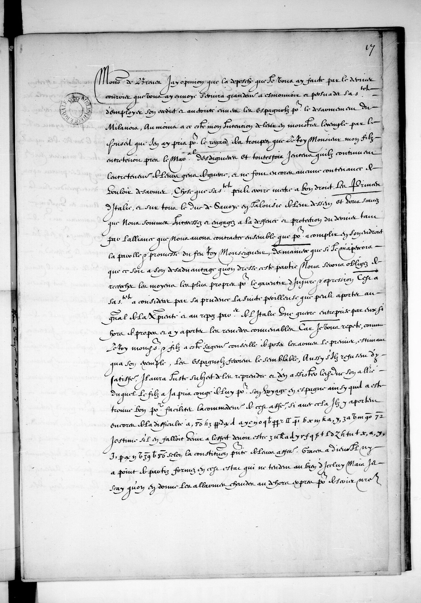
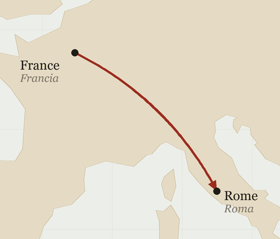
日付 1610年9月15日
経路 フランス → ローマ
差出人 摂政王妃マリー・ド・メディシス (1610年5月14日のアンリ4世の死以来、摂政)
受取人 ローマ駐在フランス大使フランソワ・サヴァリ・ド・ブレーヴ
所蔵番号 BnF, Français 3789, no 11 · f17r · Gallica 画像32
暗号 フランス語本文に挿入された数行の暗号。文字・音節・数字記号。アンリ4世の表（BnF Français 3462、画像112）にきわめて近い鍵
キーワード malice · ambition · imprudence · foiblesse · Espagnolz · Espagne
読解の状態. 私たちの知る限り初めての解読。つながった読みが得られていますが、角括弧内の字母は有力な読みで未確認です。数値4つはSatoshi Tomokiyo氏の読みと一致します（青色）。
凡例：[b?] = 有力だが未確認の字母。青色 = Satoshi Tomokiyo氏の読みと一致する数値（マリーの鍵への適用は提案の段階）。
暗号の行 · f17 L1

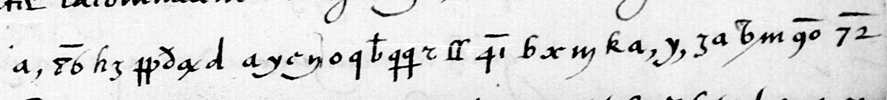
解読案
ce sera trop manifester leurs malice et am[b?]ition que
暗号の行 · f17 L2

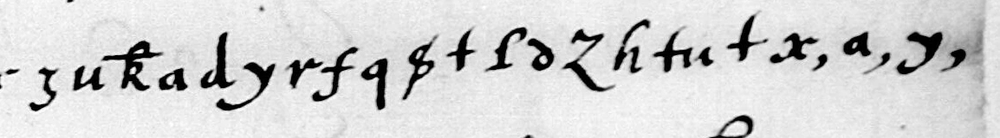
解読案
acompagne[z?] d’imprudence et
暗号の行 · f17 L3

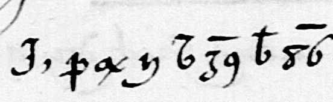
解読案
[de?] foi[b?]lesse
文脈の中の箇所（平文、暗号部分を強調）
« […] si avec cela ilz y apportent encore de la difficulté, ce sera trop manifester leurs malice et am[b?]ition que j’estime, s’il en falloit venir à l’effet, devoir estre acompagne[z?] d’imprudence et [de?] foi[b?]lesse, selon la constitution présente de leurs affaires. »
現代語訳
それでもなお彼ら（直前に名の出るスペイン人）が難色を示すなら、それは悪意と野心をあまりにも明らかにするでしょう。それが実行に移されることになれば、現在の彼らの事情からして、無思慮と弱さを伴うと私は考えます。
マリーからブレーヴへ、1610年11月10日

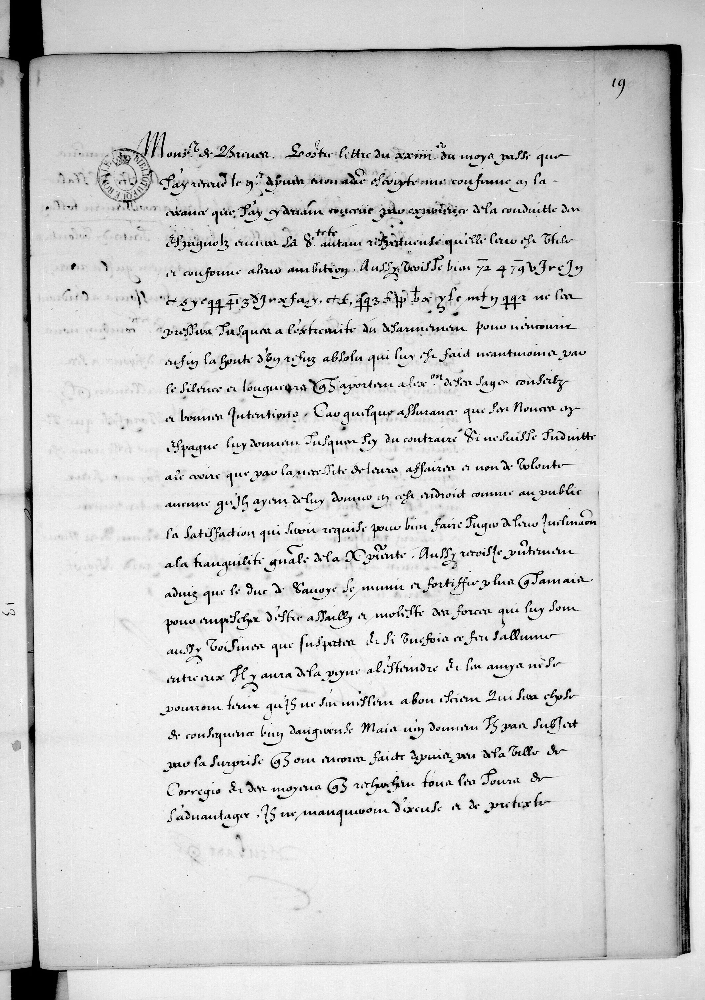
日付 1610年11月10日
経路 フランス → ローマ
差出人 摂政王妃マリー・ド・メディシス (1610年5月14日のアンリ4世の死以来、摂政)
受取人 ローマ駐在フランス大使フランソワ・サヴァリ・ド・ブレーヴ
所蔵番号 BnF, Français 3789, no 12 · f19r · Gallica 画像36
暗号 フランス語本文に挿入された数行の暗号。文字・音節・数字記号。アンリ4世の表（BnF Français 3462、画像112）にきわめて近い鍵
キーワード pape · arogance · timidite · désarmement · duc de Savoye
読解の状態. 私たちの知る限り初めての解読。つながった読みが得られていますが、角括弧内の字母は有力な読みで未確認です。数値4つはSatoshi Tomokiyo氏の読みと一致します（青色）。
凡例：[b?] = 有力だが未確認の字母。青色 = Satoshi Tomokiyo氏の読みと一致する数値（マリーの鍵への適用は提案の段階）。
暗号の行 · f19 L1

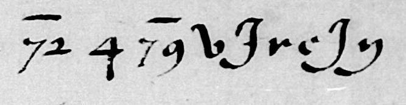
解読案
que Sa Sainteté recognoi
暗号の行 · f19 L2

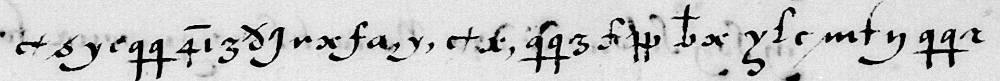
解読案
ssant leurs arogance et sentant sa timidite
文脈の中の箇所（平文、暗号部分を強調）
« Aussi vois-je bien que Sa Sainteté recognoissant leurs arogance et sentant sa timidite ne les pressera jusques à l’extrémité du désarmement, pour recevoir enfin la honte d’un refus absolu […] »
現代語訳
教皇聖下は彼らの傲慢を認め、自らの気後れを感じているので、軍備解除という極限まで彼らに迫って、最後に全面拒否という不名誉を受けることはなさらない、と私にはよく分かります。
セガ特使、1593年5月14日
ローマから枢機卿特使への訓令。BnF Français 3984, no 6、全12ページが暗号で書かれています。各ページについて、画像、イタリア語の解読案、現代語訳、解読した全文を示します。 記事を読む →

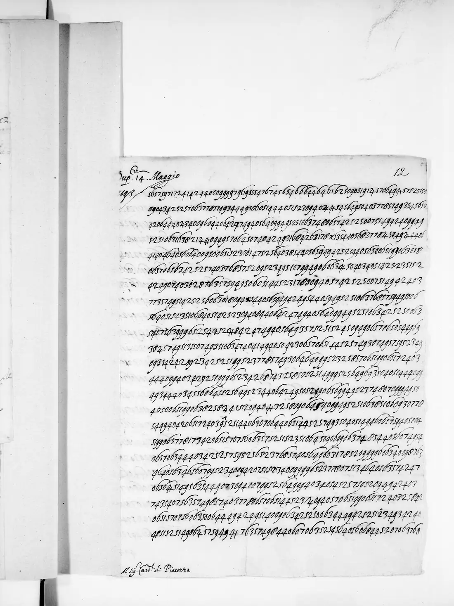
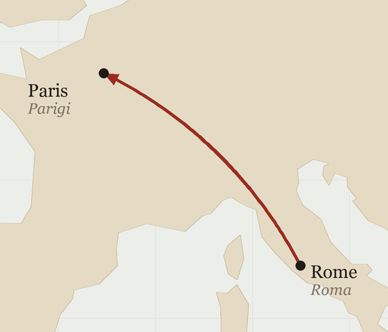
日付 1593年5月14日 (写し：第一葉の余白に「Dup.to 14 Maggio 1593」)
経路 ローマ → パリ
差出人 教皇クレメンス8世の名でローマから (起草者は不明。本文は「聖下」を三人称で語る)
受取人 パリ駐在の枢機卿特使フィリッポ・セガ (「ピアチェンツァ枢機卿」。下端に「Al sig. Card.le di Piacenza」)
所蔵番号 BnF, Français 3984, no 6 · ff. 12r–17v · Gallica 画像24–35
暗号 連続数字：無効数字3と8、文字は二桁、符号表の番号は無効数字で挟む
キーワード Navarra · Infanta · scisma · legge salica · finta conversione · terzo partito
読解の状態. 有力かつ部分的な解読。第3回の字形再確認はClaude（Opus 5.5、Claude Fableが独立に再確認）が画像上で行ったもので、Brice Dudoutの確認はまだ。2026年10月23日更新：Satoshi Tomokiyo氏の予備的な読み（2019年）と照合し、同氏に基づいて数字27か所と文字の値2つ（97＝s、61＝b）を訂正。
凡例：[Navarra] = 値の分かった符号表の番号（[x?] は根拠が弱い値、[02] は未解明）。‹x› = 復元。「…」= 読めない箇所。語の区切りのない解読全文では、4? が孤立した数字（途切れ）を示します。点線の下線は、Satoshi Tomokiyo『Cryptologia』43(1)（2019年）に基づいて数字を訂正した箇所です。
第12r葉 · Gallica 24
解読案（イタリア語）
… [le cose] che si dimandano … La prima, che si proceda alla dechiaratione et escomunicatione di … seguaci di [Navarra] … par che si debba fare almeno hora, particolarmente in esser cosa non solo inutile, ma anco nociva, stimando la scomunica che sin hora … participatione non stimeranno ; né anco la dechiaratione, come pur troppo chiari sono gli esempi che sin qui ne habbiamo, essendosi visto il poco conto che si è fatto della sentenza data contro [Navarra] et del monitorio emanato da Gregorio decimo tertio [sic], et ultimamente della bolla della legatione nel [077] Piacenza ; onde, vedendosi manifestamente che le censure sono neglette, … da costoro non saria ‹stimata›, oltre al non far frutto alcuno, altro che un far schernire più l’autorità apostolica. Et pur si sa che, essendo la sentenza delle censure medicinale, come dicono li canonisti, si deve operare dove non
現代語訳
リーグ派の第一の要求は、ナバラ王の支持者の破門を宣告することです。ローマはこれを無益で、今は有害でさえあると判断します。ナバラ王に対する判決、グレゴリウスの勧告（暗号では「13世」、おそらく14世の誤り）、特使派遣の教書は、いずれも軽んじられました。譴責は侮られており、新たな宣告は教皇の権威をさらに嘲笑の的にするだけです。
このページの解読全文（語の区切りなし）
r5?esaan2?deltsriqhegifedibimandaseisonolecosechesidimendanolaprimachesiprocedaaaladechiarationeetescom0?entcationedi{21}atiseguacieNavarraaFrancia?parchesidebafarealmenonhoraparticolarmentainesercosanonsoloinutieemaanconociuailestimandoil·la·lelascomunicachesincoreinldparticipationenonstimeranoneancoladechiarationecomepurtropgachiarisonogliesempiesinquinehabiamcesendosiuistoilpcocontochesiefatodel·lasentenzadatacontroNavarraidel·lamonitorilmandatidagregoriodecimotertioetultimamentedel·labolabdel·lalegationenel[077]piacenzaondeuedendosimanifestamentecheacensuresononegleteetparuipesedacostorononsariail·la·leoltrealnonfarfrutoalcunoaltrocheunfarscher5?erpiulautoritaapostolicaetpursisacheesendonlasentenzadel·lacensuremedicinalecomediconlicanoni6?stiesideueopraredouenon
第12v葉 · Gallica 25

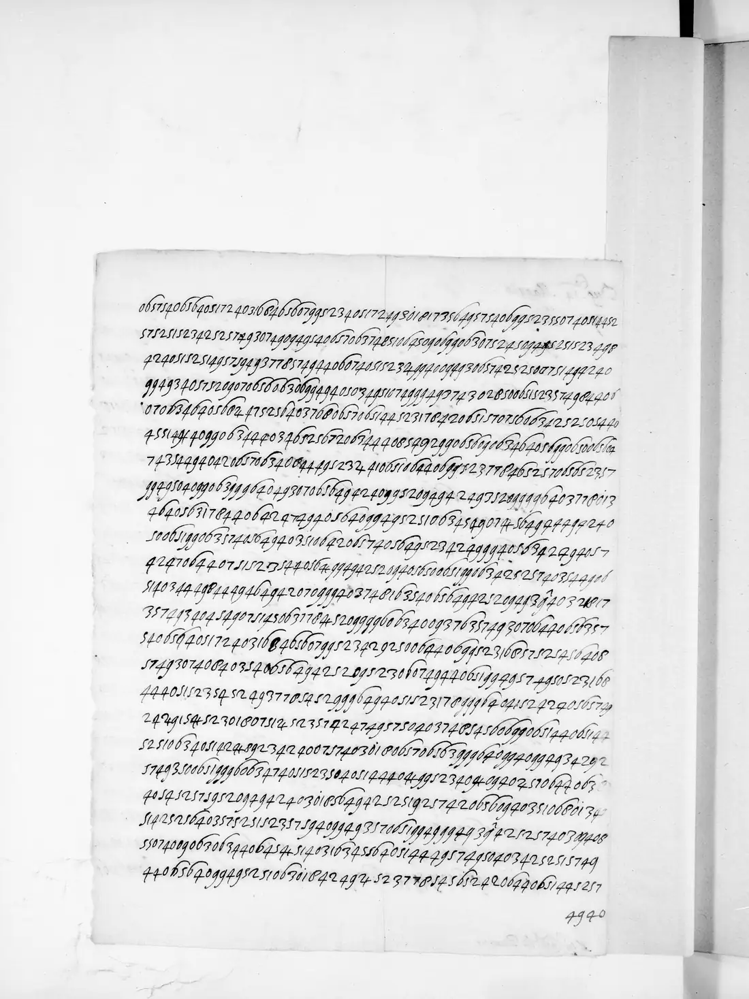
解読案（イタリア語）
‹è› speranza di frutto, anzi in rispetto, quando sono così vili … et neglette ; vogliono li canonisti che si devano tali escomunicati assolvere etiam in … ; [02] meno si deve fare hora, non essendo le censure compagnate da forze da poterle far temere … Oltra che, a far la dechiaratione giuridicamente, saria necessario citarci ciascheduno particolarmente, cosa piena di difficoltà et pericoli ; … si aggiunge che, oltra al non si veder speranza di frutto, come è detto di sopra, si va a pericolo evidentissimo di danno, poi che potriano li … traboccarsi in uno scisma … et anco causa in esser trattati … alla Sede apostolica in riconoscerla … come sono stati sentiti, cosa la quale è degna di grandissima consideratione, in ciò che, procedendo
現代語訳
教会法学者が言うように、譴責は「薬」であり、効く所でしか意味がありません。恐れさせる力がなければ、控えるべきです。正式の宣告には一人ずつ召喚する必要があり、困難と危険に満ちています。何より、当事者を離教に追いやる恐れがあります。
このページの解読全文（語の区切りなし）
esperanzadifrutoanziinarispetoquandosonocosiuilipeseetnegleteuoglionolicanonistichesideuanotaliescomundcatiasoluereatiamin0?ittii[02]menosideuefarhoranonesendoil·la·lecensurecompagniatedaeorzedapoterlefartemereipiacesea?diodenedetochefoserostimatetraianiitaliattasoltrachenfaril·la·ledechiarationegiuridicamentesarianecesartocitarcichedunoparticolarmentecosapienadidi4?itantaetepericolia?il·la·lesiagiungecheoltrealnonsiuederspetanzadifrutocomedetodisoprasiuaa?pericoloeuidentisimodidanopoichepotrianoil·la·letrabocarsiainoinunoschismaetpretenaenoneancocausainesertrataticsimentreh4?enandatoalaseheapostolicainriconoscerlaneinncorasonostatisentiticosalaqualeèdegnadigrandisimaconsiderationeinciocheprocedendos
第13r葉 · Gallica 26

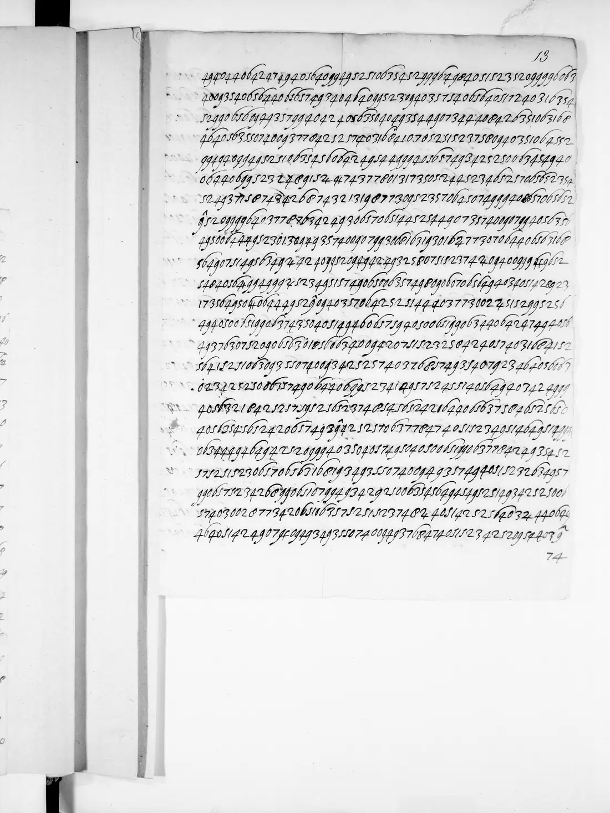
解読案（イタリア語）
‹al› perdersi affatto la speranza di poterli staccar mai più da [Navarra], né di far qualche cosa di buono con la negotiatione … precipitarsi, come già è detto … [Navarra] et tutti quei che lo seguitano … oltra che, essendo più salutar rimedio … riunir … l’uno et l’altro partito insieme, si leveria anco il rimedio. La seconda, che è notoriamente et manifestamente dechiarati non voler in re alcuno della casa di Borbone, per la qual cosa non si può fare … ; bisognaria citar tutti costoro et proceder con a formar processi, cose che hanno in sé infinite difficoltà, massimamente che ci ponno esser de’ quali siano [26] istessi [Navarra] tenuti come prigioni, come sa [S. S.?] che ce ne sono, et anco … li quali non hanno colpa.
現代語訳
ナバラ王に従う者を引き離し、両派を再び一つにする望みは失われてしまいます。第二の要求は、ブルボン家の者を誰も王に望まないと宣言することです。そのためには全員を召喚して裁判を起こさねばならず、限りない困難があります。「捕虜のように」留められている者もおり、教皇は罪のない者がいることを知っています。
このページの解読全文（語の区切りなし）
alpeiidersiafatolasperanzadipoterlistacarmaipiudaNavarranedifarqualchecosadibuonoconlanegotiatio[100]precipitarsicomegiaedeto[24]dpichenil·la·lemodoaoseropoi[715]iNavarraitutti?echeloseguitainerooltracheeciesendopiusalutarrimedioinlisalutèe[19]ne7?uedereriuniridaliatt2?idel·launoialaltroparitttoinsiemesileueriaancoil·la·lerimediolasecondacheeanotoriamenteetmanifestamentedechiarinonuolerinrealcunodel·lacasadiborboneper·laqualcosanonsipuofarangcooresiedetobisognariacitartutti?costoroetprocederconaormarproces4?cosechehanoinainitedificoltamasimamentechecipoaonoeserdieliqualisiano[26]istesoNavarratenuticomeprigionicomesaS.S.?hcenasonoetanconadaitienaaililiqualinonhanocolpa
第13v葉 · Gallica 27

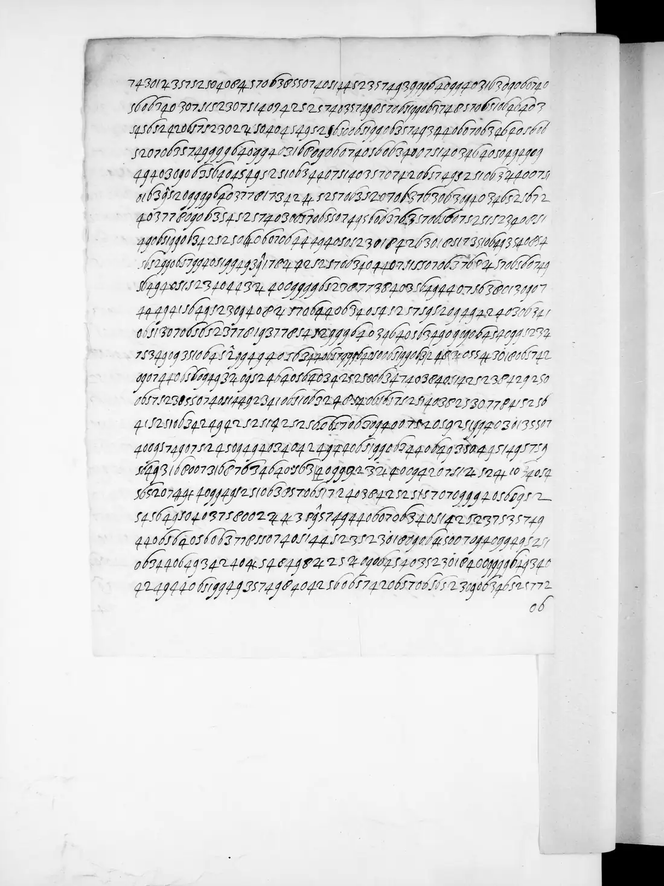
解読案（イタリア語）
… quando si tratta di levare a una famiglia la ragione d’una successione … oltra che a cose ove ‹non› è la forza che le possa eseguire non servono a niente, come vediamo in [Navarra] … nei [principi] protestanti ; le cose adunque non serviriano ad altro che a ridur in ‹ludibrio› la ‹Sede› apostolica. È ben vero che potrà far il legato con il negotiar destramente … in escluderli ; lo farà come ha anco … Borbone … in qualsivoglia accidente, dei ministri di [Spagna?] ; et non farà … approvatione senza consultarlo prima … ; deve anco considerare che, quando … l’emulatione dei capi della Lega … altri accidenti … cresce …
現代語訳
判決で一族の継承権を奪っても、執行する力がなければ役に立ちません。ナバラ王やプロテスタントの諸侯の例がそれを示しています。聖座を嘲笑にさらすだけです。一方、特使は彼らを排除するため巧みに交渉することができます。ローマに諮らずに何も承認してはならず、リーグの首領たちの対抗心に注意すべきです。
このページの解読全文（語の区切りなし）
i[014]somasequandositratadileaieaeaunounacosasisenteetseneaaproceso{02}magiormentesideuefareouesitratadileuareaunafamiilialeragionedunasucesionedeeceoltracheacoseoueseèlaforzacheleposaesequirenonseruonoa?nientecomeuediamonNavarran[517]neiprincipiprotestantiil·la·lecoseadu{11}quenonseruirianoadaltrochea?ridurinl0?iibriolagnieapostolicaè?benuerocheechepotrafarillegatoconilneg{29}tardestramente[24]aqinescluderlilofaracomehaancocomesoquandobene[24]peeneon0?o[077]borboneciconcoreselauoeontainqualsiuogliaacidenteudeiministrieSpagna?enonfaratoaeta7?nocaprouationesenzaconsultariogiiencone{22}dsideueancoconsiderarechequandoo?nlemulationedeicapliolegao?naltriacidentisiacresceserolefosz
第14r葉 · Gallica 28

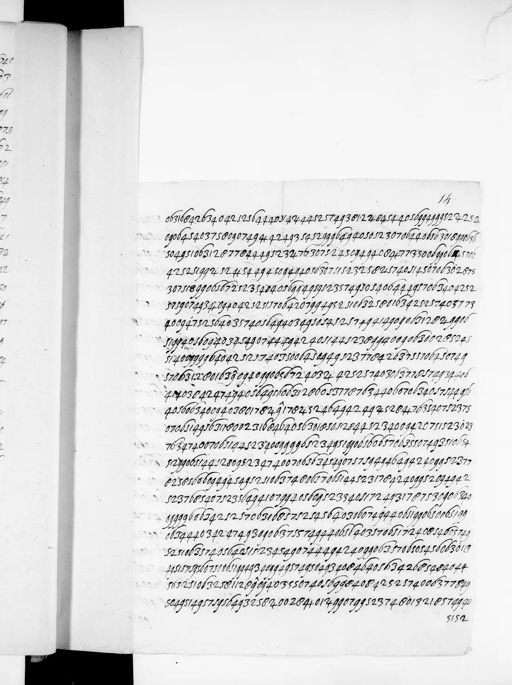
解読案（イタリア語）
… [Navarra] accordandosi … partito … Lega con lui, ci potriamo veder in termine che Dio … voglia che mettesse conto pigliar uno del sangue [02] et un terzo partito ; s’impedisse a costui la consecutione della cosa, che all’hora saria impossibile tentarla, giudicando tale [S. S.?] ogn’altra cosa meglio che [Navarra] … il [regno]. La terza cosa è che si debba chiarire … chi deve aspirare alla [Infanta] … non può evenir … [S. S.?] … far in modo alcuno [02], et havendo altro interesse … potendolo haver giustificato che ‹è di› religione, et essendo il catolico, non può rifiutarlo ; anzi le altre cose di sopra, evidentemente, da chi le considera senza passione saranno giudicate sempre instrumenti … a far [Navarra] padrone … La quarta cosa è che i ministri … tanto et tutti sia-
現代語訳
ナバラ王がリーグの一部と和解すれば、王冠への道を断つため、王族の一人か「第三党」を立てる必要があるかもしれません。第三の点は、王女との結婚を望むべき者を明らかにすることです。信仰の確かなカトリックの君主なら拒めません。さもなければ、以上のことはすべて、公平に見ればナバラ王を支配者にするための手段と見なされるでしょう。第四の点は［スペインの］大臣たちについてです…
このページの解読全文（語の区切りなし）
eeNavarraacordan4?osi[124]partitocplegaconluicipotriamouederintermine{12}chediocheuogliachemetesecontaopigliarunodel·laasangue[02]eunterzopartitosimpediseacostuilaconsecutioneo[010]cosacheaee2?rasariaimposibileiltentarlagiudicandotaleS.S.?ognaltracosamegliohNavarraeseguise{12}regnolaterzaacosaechesidebachiarire{12}[005]hedeueaspirarealaInfantaagaitatononpuoeuenir{11}S.S.?efarinmodoalcuno[02]ehauendoaltrointeresequinepotendolohauergiustificatocheoreligioneetesendoil·la·lecatolicononpuoributarloanziil·la·leeleaetricosedisopraeuidentementedachileesiderasenzapesionesaranogiudicatesempreininstrumentil9?isimia?farNavarrapadroneo[112]laquarta?cosaecheiministrio[402]antutoetntutti?sia
第14v葉 · Gallica 29

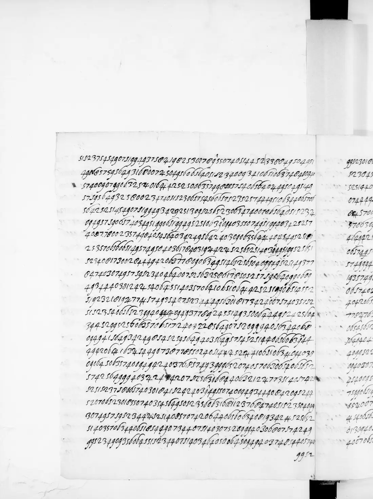
解読案（イタリア語）
‹no› e giunti … quando i ministri di … mireranno al bene et alla salute ‹del regno›, come si spera ; i ministri … hanno espresso … congiunti con loro, et haveranno … intentione. La quinta cosa, che [S. S.?] sia pratica circa le ragioni della serenissima [Infanta] alla corona : intorno a che [S. S.?] dice che le informationi che ha visto a favore della [Infanta], mostrateli da Pegna, se bene contengono tutto …, non però tali, che ogni mediocre dottore, senza … rivoltar libri, ci potria rispondere. Dice di più che, quando bene la legge salica [di Francia?] non si trovasse scritta, è però scritta ‹nei› cuori ‹dei Francesi›, che nascono con essa in bocca ; i quali da Clodoveo in qua … non hanno mai visto donna succedere alla corona, et più d’una volta è uscito il regno d’una famiglia et passato
現代語訳
大臣たちは［王国の］善と安寧を目指すべきです。第五の点は、王女の王位継承権です。教皇は「Pegna」（おそらくフランシスコ・ペーニャ。仮説）が見せた王女を支持する覚書を読みました。凡庸な博士でも、本を開かずに反論できる程度のものです。サリカ法は、書かれていなくてもフランス人の心に書かれており、彼らはそれを口にして生まれます。クローヴィス以来、女性が王位を継いだことはなく、王国は何度も一つの家から別の家へ移りました。
このページの解読全文（語の区切りなし）
noegiuntie[419]o[027]quandoimini6?stridieee9?reranoalbeneetalasaluteonicomesisperaaiministrioS.S.?hanoespresoosdinedesercongiunticonloro[006]haueranoatieasaintentione[040]quintacosahS.S.?siapracircaleraagionaoserenisimaInfantaaeacoronadieio6?noa?aS.S.?dicecheleinformationichehauistoafauoroInfantamostratelida{12}dapegnasebenecontengonotutti?ehisipuodirinacausanonoperotalicheognimediocredotoresenza[22]riuoltardelibricipotriarisponderediceepiuchequandobenelalegesalicaFrancia?sitaouaseeperoscrita[424]cuordide{21}g7?nasconoconesainbocaiqualidaclodoueoinquaprimoree[112]ehanomatuisto
第15r葉 · Gallica 30

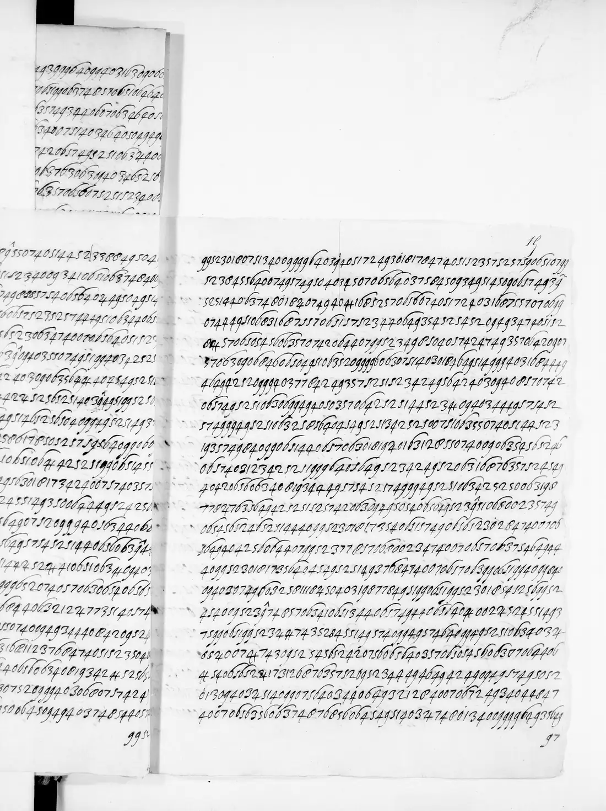
解読案（イタリア語）
in un’altra ; anzi … hanno sostenuto gravissima guerra con gl’Inglesi ; onde … osservanza di consuetudine et consenso dei popoli, hanno sempre succeduto li maschi, escluse le femine, oltre una infinità di difficoltà che ci sono circa la successione, etiam secondo la dispositione della ragion comune, quando … si attendesse … il quale professa il contrario, cioè di soggiacere alla dispositione … come … riconosce l’impero. … [S. S.?] si è ‹profondato› nel pensiero [02] ; haveria creduto che se [S. S.?] havesse fidato nelle ragioni [di Francia?], havesse tentato la via … ; ma è che intento in Portogallo, et se ben desidera ogni satisfatione … lo procurerà sempre ; vede però … non solo difficilissimo … la natura dei … havesse da haver … [di Francia?] regina, et altri ri-
現代語訳
フランス人はこのためにイングランドと激しい戦争を戦いました。慣習と民の同意は常に男子を呼び、女子を除外してきました。普通法でも多くの困難があります。教皇は長く熟考しました。ポルトガルにも触れています。教皇はスペインにできる限り満足を与えたいと望んでいますが、フランスに女王を戴かせる不都合も見ています…
このページの解読全文（語の区切りなし）
toinunaltraanzinil·la·lehanosostenutograuisimagueraconglinglesiondeetnaiteeoseruanzadiesuetudinediesensodeipopolihanosempresucedutolimaschisecluselefemdneoltreunainfinitadidificoltachecisonocircalasucesioneetiamsecondoladispositionedel·laragioncomunequando[19]siatendeseineaeilqualeprofesailcontrariocioediesogiacerea?edispositionecome[19]hericonoscelimperioneS.S.?sieprofondatonil·la·lepensiero[02]haueriacredutocheseS.S.?haueseefidatonil·la·leragioniFrancia?hauesetentatalauieo[111]maecheintentoinportogaloetsebendesideraaaognietentoetognisatisfationea[46]auiloprocurerasempreuedeperoa[126]esolodifitaalisimonlanaturadei[212]aueziadhauer[566]iFrancia?reginaetnaltriri
第15v葉 · Gallica 31

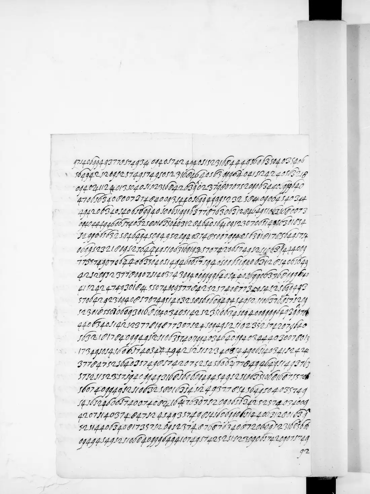
解読案（イタリア語）
-spetti, che si lasciano di dire, ma pericolosissimo di far traboccar tutti … dalle mani di … vuole detrahere a [Spagna?] al partito della Lega ; dice apertamente che è il fine di [Spagna?] la difesa ‹del› [regno], ma il farlo venir in poter della figliola, et ‹mutar› in rispetto di tutti l’ordine di successione ; da che si vede manifestamente il pericolo che l’una et l’altra parte non trabocchi in qualche cosa che apporti seco la ‹ruina› della religione non solo in quel [regno], ma anco negl’altri ; … vogliono oscurar tutte le attioni sante fatte da [Spagna?] nella impresa ; dicono a piena bocca che hora si scuoprono i fini, che non sono stati di religione … poi che prima si professava … non voler cosa alcuna, et hoggi si pretende … [regno] … solo, et nel zelo per religione attribuiscono l’esclusi-
現代語訳
すべてを崩してしまうのは非常に危険です。スペイン人は王国の防衛が目的だと公言していますが、王国を国王の娘の手に渡し、皆に関わる継承順位を変えようとしていると疑われています。両派とも崩れかねず、フランスでも他国でも宗教を滅ぼす恐れがあります。敵対者たちは、今やその目的が明らかになり、宗教のためではなかったと「声高に」言っています。
このページの解読全文（語の区切りなし）
spetichesilascianodidiremapericolosisimodifarteabocartutti?lab{12}dnmanodice{02}[79]uuoledetraheraSpagna?ialpartitodel·laaagadiceapertamentecheeeilfineeSpagna?ladifesaoregnomailfarlouenirinpoterdel·lafigliolaetmuiarinarispetotutti?lordinediesucesionedalhsiuedemanifestamenteilpericolochelunaetlaltrapartenontrabochiinquaechecosacheaportisecclasuinadel·lareligionenonsoloinquelregnomaanconeglaltriuedeancocheecheuoglionooscurartutti?aationcsantafatadaSpagna?nil·la·leimpneesadiconoa?pienabocachehorasiscuoprehifininonsonostatidireligionenedieseailtioc6?oregnopoicheprimasiprofesauabieuolercosaalcunaethogisipredente{12}regnoionfail·la·lesoloetnea?zeloper?rligioneatribuisconolesclusi
第16r葉 · Gallica 32

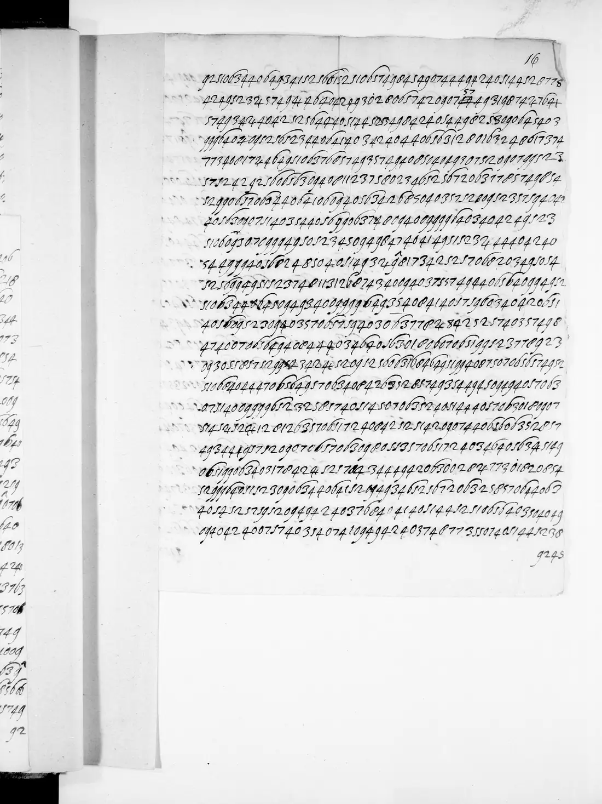
解読案（イタリア語）
-one dei Borboni, giudicando che ciò … esclusi … accordando li capi della Lega … et loro … [regno] a [Infanta] … a fine … si sia mai voluto soccorrerla … a forze, le si potesse debellar [Navarra], ma solo staccar l’una parte et l’altra, acciò nell’ultimo gli habbino da capitar ‹nelle› mani le cose importanti … consideratione degli altri [principi], basta accennarlo. La sesta è che cosa si haveria da avvertire in evento che … sotto colore di finta ‹con›versione aderisse a [Navarra], o si pigliasse un altro del sangue, o andasse in lungo … senza concludere, o si dissolvesse … senza far niente ; … dice [S. S.?] che … potranno le deboli forze della Sede apostolica, non abbandonerà mai la causa publica, che quando
現代語訳
彼らはブルボン家の排除を宗教的熱意のみに帰しています。スペインはナバラ王を倒すつもりなど一度もなく、両派を分断して最後にはすべてを手に入れようとしていると疑われています。第六の点は、ナバラ王が偽りの改宗を装ってカトリック教徒を味方にした場合、別の王族が立てられた場合、全国三部会が結論を出さずに長引くか、何もせずに解散した場合に、どうすべきかです。聖座は力が弱くとも、公の大義を決して見捨てません。
このページの解読全文（語の区切りなし）
onedeibornonesigiudicandocheciogitfaci[02]esclusi[19]igisiacordandolicapidel·lalegataielorodegacadee{12}regnoaInfantaih[400]aafine[700]sisiamaiuolutosoccrerla[112]e[02]forzeil·la·lesipotesedebelamNavarramasolostacarlunaparteetlalteaacionelultimoglihabinodacapitar[24]maniil·la·lecose[20]importinoet{11}[126]ialaesiderationedeglialtriprincipibastaacenarlolasestaechecosasihaueriadafarineuentocheol[055]sotocoloredifintaeuersioneadheriseaNavarraosipigliaseunaltrodel·lasangueoandaseinl0?enpo{12}[126]senzaconcludereo?sidisoluesel[055]senzafarnientea?acosediceS.S.?hinapotranoledeboeiforzedel·lasedeapostolicanonabandoneramailacausapublicaichequando
第16v葉 · Gallica 33

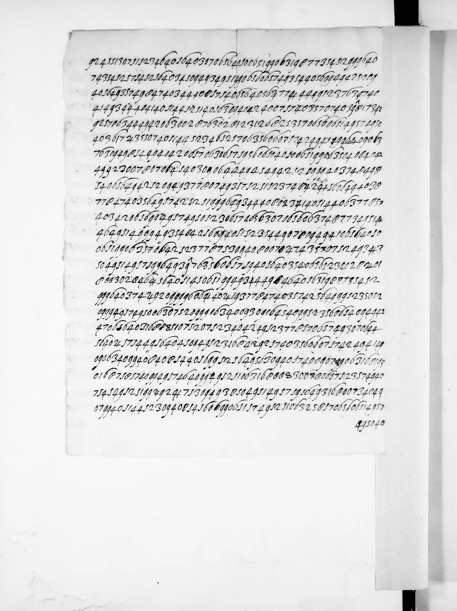
解読案（イタリア語）
ognuno farà veramente che potrà posporre gl’interessi particolari ; si ha da sperare che Dio non habbia d’abbandonar la causa sua. Le cose, dice [S. S.?], [02] … serenissima … quando fossero riuscite, … non li piaceria estremamente … [Spagna?] … eguale difficoltà et i pericoli che vi sono, et … che ha riscontri da [02] bande, che sa certissimo … che infiniti parlano più liberamente seco che [Spagna?] e i suoi … ministri … ; resterà però … di fare che potrà … che ha scritto moltissime volte al legato … di nuovo, acciò che, se si vede spiraglio di cosa riuscibile, atta a partorir la salute di [regno] et satisfatione di … giunti … i ministri di [Spagna?] aiutando la pretensione della serenis-
現代語訳
誰もが私的な利害を後回しにしなければなりません。神がその大義を見捨てないことを望むべきです。教皇は王女の候補擁立の困難と危険を見ています。多くの者がスペインやその大臣たちよりも自分に率直に語ることを、教皇は複数の筋から知っています。教皇は特使に何度も書き送っています。王国の救いのために実現可能な道が見えれば、特使は王女の継承権の主張についてスペインの大臣たちを助けてよい、と…
このページの解読全文（語の区切りなし）
ognunofaraueramenteechepotraiposporagliinieresiparticolarisihadaspeieihdiononhabidabandonarlacausasuail·la·lecosediceS.S.?e[02]{12}[126]oserenisimaInfantaquandofosereeiatntlenonlipiaceseestremamentemaacicSpagna?uegaledigicoltaetipericolicheuisonoetctmedachehariscontrida[02]bandechesacertisimoeseruereicheinfinitiparlanopiuliberamentesecocheelaSpagna?isuoi[44]ministri[976]restaraperoS.S.?n[02]aigienmentidifarechepotraiiattaideechehascritomoltisimeuolteallegatoreatcheradinuouoaciochesesiuedraspiragliodicosamaeiat1?ileataa?partorirlasaluiedieregnoesatisfationedieè?esosiaegiontiaeliministricSpagna?aiutandolapretensionedel·laserenis
第17r葉 · Gallica 34

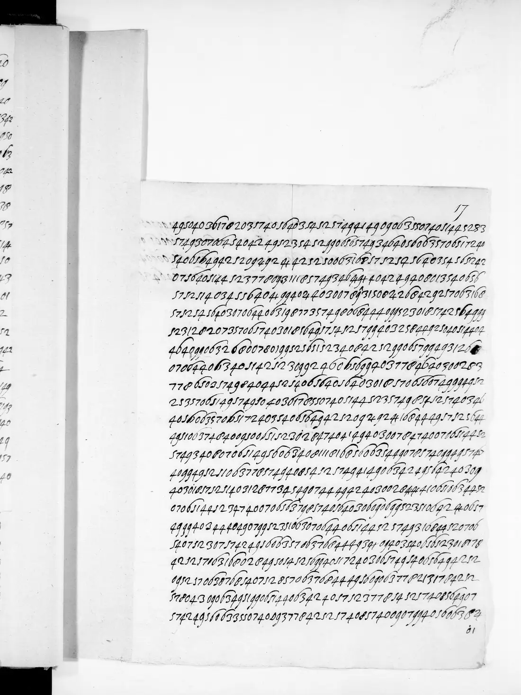
解読案（イタリア語）
-ima [Infanta] ; sarà possibile quando … senza pericolo … come di sopra, procurando che … sia … in persona grata … [Spagna?] … cose di sopra … che si è dato in scritto … in risposta delle domande fatte [da Spagna?] intorno a cotesti … anco l’offerta che fa [S. S.?] … ; si adoprerà in servitio della serenissima [Infanta], quando si possa fare senza pericolo et disordine, et almeno … habbia [Spagna?], havendosi a venire a … , più satisfatione che sia possibile circa la persona, che giudica [S. S.?] … dovendo haver … aiuto ; né vedendosi per dove può uscire … [di Francia?] … et cose [02] importanza … non può … intende, caso che non si possa riuscire qualche cosa salutare.
現代語訳
特使がそうするのは、危険も混乱もなく、受け入れられる人物をもって、人選についてスペインにできる限り満足を与えられる場合に限ります。教皇は、スペインの要求に対して書面で与えた回答と、自らの申し出に言及しています。有益な結果が得られなければ、ほかに出口はほとんど見えないとしています。
このページの解読全文（語の区切りなし）
imaInfantaasaraposibilequandosimngaciopotersiaamesenzaperidoatodcomedisopraprocurandochel[111]siadtaciainpersonagrataaaSpagna?[150]{26}cosedisopraaedeechesiè?datoinscrito{12}[207]sesainrispostadel·ladomandefate{26}Spagna?ntornoa?cotesti{12}an6?deancolofertachefaS.S.?h[650]siadoperarainseruitioosenisimaInfantaquandosiposadeaesenzapericoloedisordineetalmeno[012]habiaSpagna?hauendosia?uenirea[111]erepiusatisfationechesiaposibiecircalainsona{12}chegiudicaS.S.?dbenedouendohauer[79]saraeletoneoesiiadaiutoneuedendosiper?douepuouscireseFrancia?dilaperoinecosce[02]importanzacsipeitcolosenonpuosenondirlehtutti?acos[04]leintendecasochenosariuscirequalchecosasalutare
第17v葉 · Gallica 35

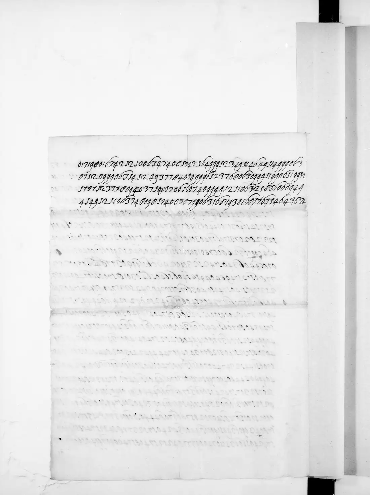
解読案（イタリア語）
-ne [regno], come ha scritto infinite volte, poi che … è intento suo che la conservatione della religione per la salute di [regno] … [fin du chiffre]
現代語訳
暗号の結び（4行）。何度も書いたように、教皇の意図は王国の救いのための宗教の保持にあります。
このページの解読全文（語の区切りなし）
neregnocomehascritoinfiniteuoltepoicheatti2?e[066]eintentosuochelaeseruationedel·lareligioneiper·lasauutedieregnosepi
フェルドゥッチからフェルディナント1世へ、フィウメ、1532年7月19日
スレイマンの遠征中、ラグーザ（ドゥブロヴニク）の情報網から届いた諜報書簡です。本文は平文で、暗号になっているのは人名・地名・日付・署名のわずか8語だけです。この符号を読むと、ある計画が明らかになります。スルタンのもとから帰るフランス大使を、海上で捕らえようというのです。
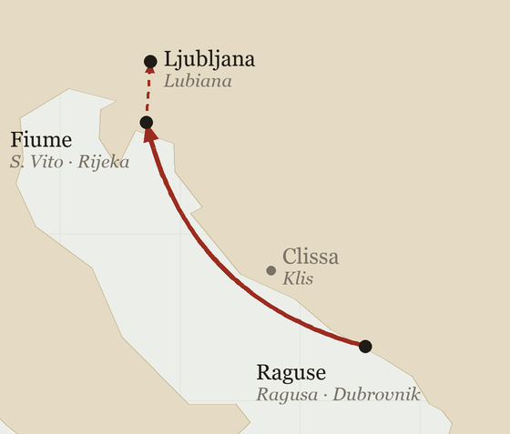
日付 1532年7月19日（「a dì 19」。月と年は暗号。書簡上の文書館の記入「1532. 19/7」「19. Juli 1532」）
経路 フィウメ → リュブリャナ（早馬便） → フェルディナント1世の宮廷
差出人 フィウメ駐在のフェルディナントの代理人ニッコロ・フェルドゥッチ（Nicolaus Verducius）（暗号の署名543。オンライン目録では差出人が暗号のため「N.N.」と登録）
受取人 ローマ王・ハンガリー王・ボヘミア王フェルディナント1世（裏面の宛名「Invictissimo Ferdinando … et Boemie」）
所蔵番号 Österreichisches Staatsarchiv, HHStA, StAbt Türkei I 2-2-19, fol. 60–61
暗号 平文の書簡（ヴェネツィア方言のイタリア語）に小さな符号表を併用：3桁の数（543, 547, 518, 520, 521）、横線付きのQ＋数（Q19）、月と年はD＋数
キーワード ambasciatore de Francia · bregantino · peschara · Chlisa · gardinal Colona · gardinal di Medici
オーストリア国立公文書館のオンライン目録（AIS）で書簡を見る ↗
ここには写真を載せていません。AISの画像には自由な再利用の許諾が示されていないためです。画像はオンラインで無料で閲覧できます（3画像）。
読解の状態. 注記のない文書の新しい読み。この文書群では、ほかの暗号文書の多くに同時代の解読（行間注記または添付）か19世紀の解読があります。この書簡は、フェルドゥッチの書簡で唯一注記のないものです。8つの符号はすべて、フェルドゥッチの別の2通に書かれた同時代の注記から作った表で読めました。未解明の符号はありません。不確かな点は平文の筆跡と解釈にあり、下に印を付けて示します。2026年10月27日にClaude（Opus 5.5）が読んだもので、Brice Dudoutの確認はまだ。私たちの知る限り未刊行です（同日に確認）。
凡例：Martino Lucio547 = 暗号の符号とその値。{x} = 有力な読みまたは意味。‹x› = 未解明。略語は印を付けずに展開。
暗号の符号と鍵
表は、フェルドゥッチの別の2通（1532年6月2日と9月18日）で同じ符号の上に書かれた同時代の注記だけから作り、この書簡に当てはめる前に固定しました。独立の検証：1542年の注記から別に作られた表（Bourdeau目録 no 499）は、共通する6つの符号すべてに同じ値を与えます（6/6、矛盾なし）。
| 符号 | 値 | 同時代の注記（1532年） | 1542年の表 |
|---|---|---|---|
| 543 | Niccolò Ferducci | 2-2-9, 2-2-24 : « Nicolaus Verducius » | S43 = Ferducci |
| 547 | Martino Lucio | 2-2-9 : « Martino lucio Ragusa » ; 2-2-24 : « da martinolucio da Ragusa » | — |
| Q19 | Ragusa | 2-2-9 (deux fois), 2-2-24 : « Ragusa » | Q19 = Ragusa |
| 518 | S. Vito (Fiume) | 2-2-9 : « S. Veit » ; 2-2-24 : « Data a S.to Vito » | — |
| 520 | ambasciatore | 2-2-9 : « Ambasciator » | S20 = ambasciatore |
| 521 | Francia | 2-2-9 : « Ambasciator del Re di Fran[cia] » | S21 = Francia |
| D7 | luglio | règle Dn : D6 « Junij » (2-2-9), D9 « Septembre » (2-2-24) | D3, D5, D6 = mois |
| D19 | 1532 (année courante) | 2-2-9 : « D6 D19 » glosé « 1532 » | D19 glosé « 42 » en 1542 |
解読した本文（イタリア語）
Ser.me Rex atque invictissime princeps, domine colendissime, post servitiorum meorum humillimam commendationem.
L’ultima mia fu de 24 del passato, con la inchiusa dal loro servitore Martino Lucio547, sotto littere del signore Andrea {Lanbergher}. La cagion di questa sie per dinottare a vostra Maestà Serenissima come in questa hora a tardi è gionto qui el bregantino da RagusaQ19 con le presente ligatte in questa; e per esere in esse gran nove, subitto subitto ho meso un mio servo ha cavallo per le poste e mandatollo a Lubiana, e scritto al signore Andrea {Lanbergher} che senza nullo ritegnio le manda a vostra Maestà Serenissima. La cosa di Chlisa è cosa certissima; similiter di monsignore gardinal Colona.
Si vostra Maestà ha a piacere di aver nelle mane l’ambasciatore520 de Francia521 al suo ritorno, che verà per mare in qualche bregantino, io andarò in persona con 10 o 12 compagni harmati; si fengiremo d’andare {a peschara}, e secretto modo si sforzaremo di averllo, per aviso da vostra Maestà Serenissima.
El gardinal di Medici fa gente a gran furia per la Marcha e per la Romagnia; si dici per el volgo che viene {a divotione} di vostra Maestà. Staremo vigilanti, e facendo altro subitto {ve se avisarà}; el simille di altro che s’intenderà. Per hora no avemo altro. A vostra Maestà Serenissima humilmente mi richomando. Datta S. Vito518 a dì 19 luglioD7 1532D19.
De vostra Maestà Serenissima humil servo Niccolò Ferducci543.
翻訳
至高なる国王にして不敗の君主、我がこの上なく敬愛する主君へ。謹んで私の奉仕をお捧げ申し上げます。
前便は先月24日付で、陛下の僕［マルティーノ・ルーチョ］の書簡を同封し、アンドレア・ランベルガー殿の書状に託してお送りしました。本状は、今夕遅く［ラグーザ］からのブリガンティン船がここに着き、本状に同封する書簡をもたらしたことを陛下にお知らせするためのものです。そこには重大な知らせが含まれているため、ただちに私の従者一人を早馬に乗せてリュブリャナへ遣わし、アンドレア・ランベルガー殿に、少しも遅らせずに陛下へ届けるよう書き送りました。クリッサの件はまったく確かです。コロンナ枢機卿猊下の件も同様です。
もし陛下が、［フランス］の［大使］をその帰途――どこかのブリガンティン船で海路をとるはずです――で手中に収めることをお望みなら、私自ら、武装した仲間10人か12人とともに参ります。漁に出るふりをして、陛下のご指示があれば、ひそかに彼を捕らえるよう努めます。
メディチ枢機卿はマルケとロマーニャで大急ぎで兵を集めています。民衆のあいだでは、陛下にお仕えするために来るのだと言われています。我々は警戒を怠らず、ほかに動きがあればただちにお知らせします。ほかに耳にすることについても同様です。今のところ、ほかにお伝えすることはありません。謹んで陛下に身をお委ね申し上げます。［聖ヴィート、すなわちフィウメ］にて、［1532年］［7月］19日。
陛下の卑しき僕［ニッコロ・フェルドゥッチ］
読みの注と歴史的な注
- 「a peschara」：文字は確実です。意味は{漁に}が有力です（ヴェネツィア方言 andar a pescar）。武装した十数人が小舟に乗る口実として自然です。アブルッツォの港町ペスカーラへ「行くふりをする」という解釈は可能性が低いと考えます。この町はナポリ王国、つまりハプスブルク家の領地で、行くふりをする理由がないからです。
- 「a divotione」：筆跡は「a d」、縦線3本（iu、ivと読む）、「o」、輪のある背の高い文字（tと読む）、「ione」です。{a divotione}と読むと、「〜に仕える側につく」を意味する慣用句 venire a divotione di になります。史実とも合います。特使イッポーリト・デ・メディチは1532年7月8日にローマを発ち、トルコに対抗するカール5世とフェルディナントのもとへ向かいました。
- 「ve se avisarà」：筆跡は「~ose auisara」で、v は「viene」と同じ鉤形です。{ve se avisarà}（「お知らせします」）と読みます。最初の読み「vostra [Maestà] sarà avisata」は、実際には書かれていない略語を前提にしていました。
- アンドレア・「Lanbergher」：語末「…gher」は2か所とも確実で、最初の母音は a とも o とも読めます。おそらくカルニオラのランベルク家の一員で、リュブリャナでのフェルドゥッチの中継役ですが、役職は分かっていません。
- フランス大使の名は書かれていません。有力な同定は{アントニオ・リンコン}で、1532年にフランソワ1世がスレイマンのもとへ送った使節です。1532年4月のスペイン側の報告は、彼がシベニクとラグーザを経由すると伝えています。6月21日にはコンテ・ダ・エッラがラグーザから、リンコンがベオグラードへ発つと書いています（「dicesi essere ambassatore di Re di Francia」、2-2-13）。ゲヴァイによれば、彼は1532年8月20日、7月12日付のスレイマンの書簡の写しをヴェネツィアに持ち帰りました。フェルドゥッチの予想どおり、アドリア海を通って戻ったことになります。計画のその後は知られていません。リンコンは1541年7月、パヴィア近くでヴァスト侯の手の者に殺害されます。
- 「La cosa di Chlisa」：クリッサ（クリス）は、スプリトを見下ろすペタル・クルジッチの要塞で、オスマン軍に抗していました。同じ綴りが1532年9月の書簡で注記されています（「li turchi a presso Chlisa」）。知らせの具体的な内容は‹未解明›です。
- 「Monsignore gardinal Colona」：枢機卿でナポリ副王のポンペオ・コロンナは1532年6月28日に死去しました。「まったく確かな件」とは、おそらく{その死}のことです。
- 背景：スレイマンはウィーンへ進軍中で、8月にギュンス（ケーセグ）の前で足止めされます。同封の「重大な知らせ」は、同じ文書群に残るコンテ・ダ・エッラからフェルドゥッチへの7月11日・12日付の書簡（2-2-17）である可能性が高いと考えます。隣の文書2-2-18は、7月12日付のスレイマンからフェルディナントへの書簡です。
方法とクレジット
方法：(1) 符号の表は2-2-9（1532年6月2日）と2-2-24（1532年9月18日）の同時代の注記だけから作り、適用前に固定しました。(2) 注記のない2-2-19に機械的に当てはめました。(3) 検証：注記のある2通の一致（矛盾0）、1542年の独立した表との一致（6/6）、書簡上の文書館の記入による日付の確認。(4) AISの画像で平文の筆跡を重点的に再確認しました。
先行研究の確認（2026年10月27日）：Daniel Bourdeauの目録はno 498を未解決として掲げています。Cryptianaにもウェブ検索にも該当はなく、ゲヴァイの『Urkunden und Actenstücke』にもこの書簡は収録されていません。
発見の手がかり：Daniel Bourdeauの目録、no 498 ↗。史料：Österreichisches Staatsarchiv, Haus-, Hof- und Staatsarchiv, StAbt Türkei I 2-2-19（AIS ↗）、注記は2-2-9（AIS ↗）と2-2-24（AIS ↗）。背景：Anton von Gévay『Urkunden und Actenstücke zur Geschichte der Verhältnisse zwischen Österreich, Ungern und der Pforte』ウィーン、1838–1842年。出典も参照。
カール12世から王国参議会と使節へ、ベンデル、1710年4月26日
ポルタヴァの敗戦以来オスマン領ベンデルに身を寄せていたカール12世は、ヘルシンボリでデンマーク軍が敗走したことを知ります。重要な箇所を暗号にした官房書簡で、王はイングランドとネーデルラント連邦の仲介のもとでデンマークと和平を結ぶ用意があると述べ、交渉と休戦の締結について参議会に「自由な裁量」を与えます。休戦は「必要なら丸1年でもよい」とされます。ブレーメン＝フェルデンのスウェーデン総督府が受け取った暗号写し2通が、シュターデに残っています。
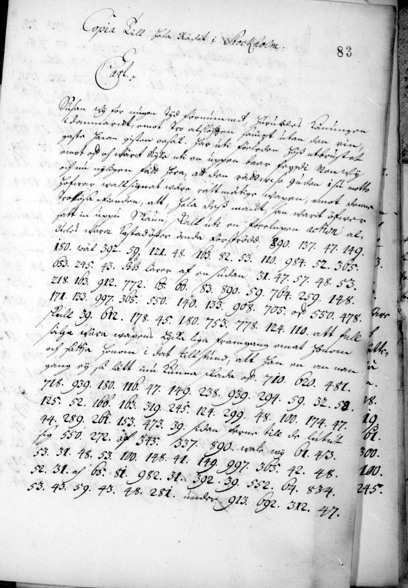
日付 1710年4月26日（スウェーデン暦。グレゴリオ暦では1710年5月7日。「Bender d. 26 April 1710」）
経路 ベンデル（オスマン領モルダヴィア）→ ストックホルム、ハーグ／ロンドン。写しはシュターデのブレーメン＝フェルデン総督府へ
差出人 カール12世（スウェーデン王）（「Carolus」。野戦官房書記グスタフ・ヘンリク・フォン・ミュレルンの副署）
宛先 参議会（ストックホルムの王国参議会）——「Copia till hela Rådet i Stockholm」、fol. 83r–84r。使節レイヨンクローナ（ロンドン）とパルムクヴィスト（ハーグ）——「Copia till Envoyerne Leijoncrona och Palmqvist mut. mutand.」、fol. 85r–v
請求記号 Niedersächsisches Landesarchiv, Abt. Stade, Rep. 5a Nr. 670（旧記号 Fach 76 Nr. 38）、fol. 83–85。ファイル名「Diverse chiffrierte Schreiben von und an Generalgouverneur Baron Nils Gyllenstierna」1700–1711年
暗号 約1100の数をアルファベット順に並べたスウェーデン語の同音ノメンクレーター：文字（31–98、2系列）、音節（99–182）、数（183–211）、語尾（212–304）、語と人名（310–1102）。諸国は平文の略号で表す：B.B. = デンマーク、LL = イングランド、ddd = オランダ
キーワード fred · Sjömakternas mediation · stillestånd · wapenhwila · fria händer · satisfaction · Drottningens i LL wänskap
解読の状況. シュターデの暗号写しの新しい読み。鍵も解読文も添えられていません。鍵（「K1710」）は、同じファイルにある暗号化された部隊名簿と、その平文の下書きを照合して復元しました。そのうえで鍵を固定し、それまで開いていなかった書簡で検証しました（語の認識率93％と96％。攪乱した対照鍵では最大77–80％）。640の符号のうち未解明は1つだけです。6つは有力な読み（{x}）、5つは書記の誤記として示します（‹x›）。原本の平文部分は速い草書体で、作業上の読みです。参議会が受け取った平文の正本はおそらくストックホルムのスウェーデン国立公文書館（Riksarkivet）にありますが、私たちは参照していません。書簡の内容自体はそこから歴史家に知られている可能性があります。2026年10月27日、Claude（Opus 5.5）による解読。Brice Dudoutが疑わしい箇所を点検しました。
凡例：灰色＝原本で平文の部分（作業上の読み。[?]＝未読の語）。黒＝解読した部分。{x}＝有力な読み。‹x›＝未解明または書記の誤記。B.B.、LL、ddd＝平文の略号。
鍵K1710（抜粋）
ノメンクレーターの構造は、復元した値から推定しました（この暗号の表はファイルに残っていません）。続いて、書簡の2通の写しで実際に使われた値を示します。復元した語の符号は99.7％がアルファベット順に並びます（無作為な並べ替えでは0.6）。
| 数 | 内容 | 例 |
|---|---|---|
| 31–64 | 文字、第1系列：a ä å b c ch ck d e f g h i k l m n o p q – r s sk sch sp st – t u w x y z | 31 a、47 n、52 r、59 t |
| 65–98 | 文字、第2系列＝第1系列＋34 | 65 a、81 n、87 s、93 t |
| 99–182 | 子音＋母音の音節（ba から wu まで） | 100 be、149 ne、163 ra、180 wi |
| 183–211 | 数 | 183 = 1（「en」）、210 hundra、211 tusen |
| 212–304 | 語尾（アルファベット順） | 245 en、267 ing、304 tion |
| 310–1102 | 語と名（「af」から「Wismar」まで。固有名は末尾） | 552 fred、653 Konung、956 stille、1033 wapen |
書簡で使われた値
文字 31 a / c · 32 ä · 33 å · 34 b · 38 d · 39 e · 40 f · 41 g · 42 h · 43 i · 44 k · 45 l · 46 m · 47 n · 48 o · 49 p · 52 r · 53 s · 57 st · 58 r · 59 t · 60 u · 61 w · 64 z · 65 a · 66 ä · 67 å · 73 e · 74 f · 77 i · 78 k · 79 l · 80 m · 81 n · 82 o · 83 p · 86 r · 87 s · 88 sk · 93 t
音節 100 be · 109 da · 110 de · 111 di · 112 do · 114 fa · 116 fi · 118 fu · 119 ga · 120 ge · 121 gi · 124 ha · 125 he · 133 ka · 137 ku · 138 la · 139 le · 140 li · 141 lo · 143 ma · 144 me · 146 mo · 148 na · 149 ne · 151 no · 153 pa · 160 qui · 163 ra · 164 re · 166 ro · 168 sa · 169 ‹se› · 170 si · 171 so · 173 ta · 174 te · 175 ti · 178 wa · 179 we · 180 wi
数 183 en (1)
語尾 212 ‹212› · 218 änd · 224 are · 231 dan · 232 de · 236 der · 238 det · 240 dra · 243 else · 245 en · 259 ge · 261 het · 262 heter · 267 ing · 272 leda · 274 lig · 281 ner · 282 ning · 285 ra · 289 sam · 292 ska · 293 skap · 294 sta · 299 stig · 300 tit · 303 tig · 304 tion
語 312 er · 319 af · 333 all · 337 allt · 345 andra · 365 att · 392 billig · 395 blifw · 473 Dansk · 478 den · 481 dess · 484 det · 495 Drottning · 499 eder · 508 eller · 512 emot · 531 fall · 548 fort · 550 för · 552 fred · 554 fri · 572 gärna · 587 hafwa · 589 hand · 612 huru · 615 hwar · 620 icke · 645 kan · 652 kom · 653 Konung · 670 led · 671 lägenhet · 672 läng · 677 lid · 692 makt · 703 med · 705 med · 710 men · 718 mindre · 720 Minist · 753 nog · 764 och · 769 om · 772 ond · 778 orsak · 783 öfwer · 796 på · 834 propo · 890 så · 891 såsom · 907 sielf · 908 sig · 910 sin · 912 sina · 913 Sjö · 934 slut · 939 som · 950 stand · 956 stille · 982 tag · 984 tanka · 986 tar · 993 tid · 997 till · 1008 tro · 1021 under · 1024 ut · 1026 ut · 1033 wapen · 1049 wilkor
系列外 25 ak
符号の翻字
写しの各行について、書かれたとおりの数（原本の平文は角括弧で略記）と、各符号の値を示します。行は原本の配置に従います。
使節宛ての写し（fol. 85r–v）
| 行 | 符号 | 値 |
|---|---|---|
| E01 | [Carl. Emedan såsom …] 180 392 59 236 319 137 47 149 121 48 163 82 53 110 984 52 365 365 | [Carl. Emedan såsom …] · wi · billig · t · der · af · ku · n · ne · gi · o · ra · o · s · de · tanka · r · att · att |
| E02 | [?brudelta] 653 169 245 481 612 939 [den rättwisa Guden …] | [?brudelta] · Konung · ‹se› · en · dess · huru · som · [den rättwisa Guden …] |
| E03 | 138 164 52 218 163 912 772 65 60 83 890 59 764 259 148 171 133 997 365 550 140 133 108 703 48 87 [altså] | la · re · r · änd · ra · sina · ond · a · u · p · så · t · och · ge · na · so · ka · till · att · för · li · ka · sig* · med · o · s · [altså] |
| E04 | 39 612 178 45 180 753 778 124 110 [will att fullfölja …] | e · huru · wa · l · wi · nog · orsak · ha · de · [will att fullfölja …] |
| E05 | 710 620 481 718 939 180 116 47 149 238 939 294 59 32 52 125 52 166 163 319 245 124 299 48 100 174 47 44 289 261 153 473 39 170 231 615 997 110 138 300 908 550 272 319 345 890 32 164 180 100 148 41 149 365 43 81 119 703 653 245 | men · icke · dess · mindre · som · wi · fi · n · ne · det · som · sta · t · ä · r · he · r · ro · ra · af · en · ha · stig · o · be · te · n · k · sam · het · pa · Dansk · e · si · dan · hwar · till · de · la · tit · sig · för · leda · af · andra · så · ä · re · wi · be · na · g · ne · att · i · n · ga · med · Konung · en |
| E06 | 43 [B.B.] 245 392 552 1021 913 692 312 47 65 53 144 111 31 304 890 40 52 31 46 59 180 769 890 231 59 395 31 164 160 164 163 110 764 550 1026 550 168 44 163 110 769 245 151 43 25 303 168 175 53 114 31 304 550 333 478 48 550 52 32 59 292 109 764 550 40 33 47 41 | i · [B.B.] · en · billig · fred · under · Sjö · makt · er · n · a · s · me · di · a · tion · så · f · r · a · m · t · wi · om · så · dan · t · blifw · a · re · qui · re · ra · de · och · för · ut · för · sa · k · ra · de · om · en · no · i · ak · tig · sa · ti · s · fa · c* · tion · för · all · den · o · för · r · ä · t · ska · da · och · för · f · å · n · g |
| E07 | [som] 180 764 178 164 1021 890 986 39 [af att så …] 587 146 57 677 31 [wil ?upstrandes att …] 653 245 43 [B.B.] 1026 240 259 [kriget och] 548 [för] 705 116 245 174 274 262 512 | [som] · wi · och · wa · re · under · så · tar · e · [af att så …] · hafwa · mo · st · lid · a · [wil ?upstrandes att …] · Konung · en · i · [B.B.] · ut · dra · ge · [kriget och] · fort · [för] · med · fi · en · te · lig · heter · emot |
| E08 | [och ?på widare …] 82 87 997 552 64 [i framtiden] 764 118 45 79 121 48 163 [sedan] 550 151 43 243 [som wij ?hafwe …] 891 1026 319 499 907 179 [och utan någon] 61 33 52 100 531 282 365 550 44 138 285 | [och ?på widare …] · o · s · till · fred · z · [i framtiden] · och · fu · l · l · gi · o · ra · [sedan] · för · no · i · else · [som wij ?hafwe …] · såsom · ut · af · eder · sielf · we · [och utan någon] · w · å · r · be · fall · ning · att · för · k · la · ra |
| E09 | [icke allenast detta] 61 66 52 93 552 32 79 292 47 232 910 149 [utan och det] 550 1008 245 232 [wij hafwe till] 495 245 53 77 [LL] 61 32 47 293 [och benägenhet till …] 550 292 114 [och] 245 125 236 274 764 87 66 44 39 86 552 705 [B.B.] [hwarmed etc. Bender …] | [icke allenast detta] · w · ä · r · t · fred · ä · l · ska · n · de · sin · ne · [utan och det] · för · tro · en · de · [wij hafwe till] · Drottning · en · s · i · [LL] · w · ä · n · skap · [och benägenhet till …] · för · ska · fa · [och] · en · he · der · lig · och · s · ä · k · e · r · fred · med · [B.B.] · [hwarmed etc. Bender …] |
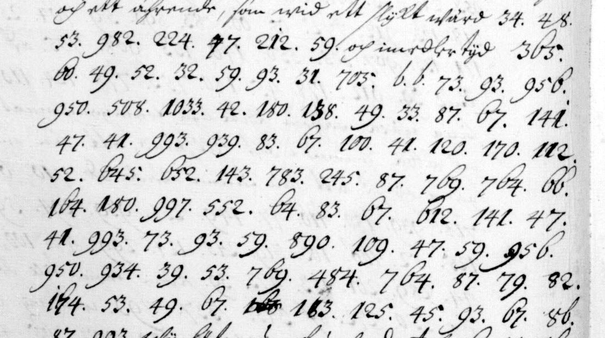
参議会宛ての写し（fol. 83r–84r）
| 行 | 符号 | 値 |
|---|---|---|
| L01 | [… skall uti …] 890 137 47 149 180 [wäl] 392 59 121 48 163 82 53 110 984 52 365 | [… skall uti …] · så · ku · n · ne · wi · [wäl] · billig · t · gi · o · ra · o · s · de · tanka · r · att |
| L02 | 653 245 43 [B.B.] [lärer af en …] 31 47 57 48 53 | Konung · en · i · [B.B.] · [lärer af en …] · a · n · st · o · s |
| L03 | 218 163 912 772 65 60 83 890 59 764 259 148 | änd · ra · sina · ond · a · u · p · så · t · och · ge · na |
| L04 | 171 133 997 365 550 140 133 908 705 [och] 550 478 | so · ka · till · att · för · li · ka · sig · med · [och] · för · den |
| L05 | [skall] 39 612 178 45 180 753 778 124 110 [att fullfölja wåra …] | [skall] · e · huru · wa · l · wi · nog · orsak · ha · de · [att fullfölja wåra …] |
| L06 | 710 620 481 718 939 180 116 47 149 238 939 294 59 32 58 | men · icke · dess · mindre · som · wi · fi · n · ne · det · som · sta · t · ä · r |
| L07 | 125 52 166 163 319 245 124 299 48 100 174 47 | he · r · ro · ra · af · en · ha · stig · o · be · te · n |
| L08 | 44 289 261 153 473 39 [sedan hwartill de …] [sig] 550 272 [och] 345 337 890 [wela wij] 61 43 | k · sam · het · pa · Dansk · e · [sedan hwartill de …] · [sig] · för · leda · [och] · andra · allt · så · [wela wij] · w · i |
| L09 | 53 31 48 53 100 148 41 149 997 365 42 48 | s · a · o · s · be · na · g · ne · till · att · h · o |
| L10 | 52 31 [och] 65 81 982 31 392 39 552 64 834 | r · a · [och] · a · n · tag · a · billig · e · fred · z · propo |
| L11 | 53 43 59 43 48 281 [under] 913 692 312 47 | s · i · t · i · o · ner · [under] · Sjö · makt · er · n |
| L12 | 65 53 144 111 31 304 890 [framt och] 473 73 | a · s · me · di · a · tion · så · [framt och] · Dansk · e |
| L13 | 484 572 [willigt utan] 672 52 39 [up] 87 78 | det · gärna · [willigt utan] · läng · r · e · [up] · s · k |
| L14 | 82 74 [begiären] 764 [?] 550 1024 550 [säkra oss] | o · f · [begiären] · och · [?] · för · ut · för · [säkra oss] |
| L15 | 796 39 47 392 550 151 43 243 550 292 109 | på · e · n · billig · för · no · i · else · för · ska · da |
| L16 | 764 48 671 [som wij och …] 1021 890 986 | och · o · lägenhet · [som wij och …] · under · så · tar |
| L17 | 39 [af detta] 552 87 [brott] 764 550 [öfwade fiendtligheter på …] 587 146 57 677 | e · [af detta] · fred · s · [brott] · och · för · [öfwade fiendtligheter på …] · hafwa · mo · st · lid |
| L18 | 31 [altså wele wij …] 79 39 80 81 65 499 | a · [altså wele wij …] · l · e · m · n · a · eder |
| L19 | 997 [?strand och] 554 31 589 236 [under] [ll] 764 [ddd] | till · [?strand och] · fri · a · hand · der · [under] · [ll] · och · [ddd] |
| L20 | 87 144 111 31 304 [till att in] 670 31 499 1024 | s · me · di · a · tion · [till att in] · led · a · eder · ut |
| L21 | 183 552 64 589 45 267 705 [bb] [på så dan] | en (1) · fred · z · hand · l · ing · med · [bb] · [på så dan] |
| L22 | 1049 [för som här …] 34 48 | wilkor · [för som här …] · b · o |
| L23 | 53 982 224 77 212 59 [och imedlertid] 365 | s · tag · are · i · ‹212› · t · [och imedlertid] · att |
| L24 | 60 49 52 32 59 93 31 705 [b.b.] 73 93 956 | u · p · r · ä · t · t · a · med · [b.b.] · e · t · stille |
| L25 | 950 508 1033 42 180 138 49 33 87 67 141 | stand · eller · wapen · h · wi · la · p · å · s · å · lo |
| L26 | 47 41 993 939 83 67 100 41 120 170 112 | n · g · tid · som · p · å · be · g · ge · si · do |
| L27 | 52 645 652 143 783 245 87 769 764 66 | r · kan · kom · ma · öfwer · en · s · om · och · ä |
| L28 | 164 180 997 552 64 83 67 612 141 47 | re · wi · till · fred · z · p · å · huru · lo · n |
| L29 | 41 993 73 93 59 890 109 47 59 956 | g · tid · e · t · t · så · da · n · t · stille |
| L30 | 950 934 39 53 769 484 764 87 79 82 | stand · slut · e · s · om · det · och · s · l · o |
| L31 | 164 53 49 67 [biffé] 163 125 45 93 67 86 | re · s · p · å · [biffé] · ra · he · l · t · å · r |
| L32 | 87 993 [wij låta nu …] 61 33 164 | s · tid · [wij låta nu …] · w · å · re |
| L33 | 720 43 [ll] 764 [ddd] 365 [Uo.] 891 319 908 | Minist · i · [ll] · och · [ddd] · att · [Uo.] · såsom · af · sig |
| L34 | 907 179 88 48 139 38 66 86 550 44 138 | sielf · we · sk · o · le · d · ä · r · för · k · la |
| L35 | 285 [detta] 61 66 52 93 552 32 79 292 47 | ra · [detta] · w · ä · r · t · fred · ä · l · ska · n |
| L36 | 232 910 149 [såsom allt sådant …] 365 100 59 32 143 337 484 173 | de · sin · ne · [såsom allt sådant …] · att · be · t · ä · ma · allt · det · ta |
| L37 | 939 43 34 66 57 40 77 47 149 81 [hwarmed etc. Bender …] | som · i · b · ä · st · f · i · n · ne · n · [hwarmed etc. Bender …] |
校訂本文（スウェーデン語）
使節宛ての写し（fol. 85r–v）
Carl. Emedan såsom wij nyligen förnummit, det Konungens i Danmarck krigsmakt, hwilken förledne höst blef skeppad in uti Skåne, skall för liten tid sedan uti en förlidne action aldeles warit öfwerwunnen, slagen och förströdd, så att wi billigt deraf kunne giöra oss de tankar, att ‹att› bemälte Konung‹se›en, dess huru som den rättwisa Guden i så måtto hafwer straffat hans trolöshet och orättmätiga förfarande emot ord och [?] Sigill, lärer ändra sina onda upsåt och ge(r)na söka till att förlika sig med oss. Altså, ehuruwäl wi nog orsak hade will att fullfölja wåra wapens lyckliga framgång emot honom och bringa honom så i trångmål, att han [?] icke kunna skada oss, då wij hafwe med andra wåra fiender att giöra, men icke dess mindre, som wi finne det, som Staterherrorna af en hastig obetänksamhet på Danske sidan, hwartill de låtit sig förleda af andra, så äre wi benägne att inga med Konungen i B.B. en billig fred under Sjömakternas mediation, så framt wi om sådant blifwa requirerade och förut försäkrade om en nöjaktig satisfaction för all den oförrätt, skada och förfång som wi och wåre undersåtare af ett så obilligt fredsbrott hafwa måst lida. (…) att ju längre Konungen i B.B. utdrage kriget och fortfar med fiendteligheter emot oss, ju (swårare) lärer det blifwa (…) att ställa oss tillfredz i framtiden och fullgiöra den förnöjelse som wij (…) af honom (…) skall såsom utaf eder sielfwe och utan någon wår befallning att förklara icke allenast detta wårt fredälskande sinne, utan och det förtroende wij hafwe till Drottningens i LL wänskap och benägenhet till att förskaffa oss en hederlig och säker fred med B.B.. Hwarmed etc. Bender d. 26. April 1710. Carolus. H. G. von Müllern
参議会宛ての写し（fol. 83r–84r）
… skall uti en förlorad action aldeles warit öfwerwunnen och förströdd, så kunne wi wäl billigt giöra oss de tankar, att Konungen i B.B. lärer af en sådan anstos ändra sina onda upsåt och ge(r)na söka till att förlika sig med oss ?; för den skull, ehuruwäl wi nog orsak hade att fullfölja wåra wapens lyckliga framgång emot honom och sätta honom i det tillstånd, att han nu en annan gång ej så lätt må kunna skada oss, men icke dess mindre, som wi finne det, som Statärherrorna af en hastig obetänksamhet på Danske sidan, hwartill de låtit sig förleda af andra, alltså wela wij wisa oss benägne till att höra och antaga billige fredz propositioner under Sjömakternas mediation, så framt och Danske det gärna willigt utan längre upskof begiära, och [?] förut försäkra oss på en billig förnöjelse för skada och olägenhet som wij och wåra undersåtare af detta fredsbrott och föröfwade fiendtligheter på ett eller annat sätt hafwa måst lida. Altså wele wij här med lemna eder tillstånd och fria händer under ll och ddds mediation till att inleda eder uti en fredzhandling med bb på sådana wilkor som här ofwan till är nämndt (…) en fred och allt öfrigt, som wid ett slikt wärk (?) bo‹s‑tag‑are‑i‑212›t, och imedlertid att upprätta med b.b. ett stillestånd eller wapenhwila på så lång tid som på begge sidor kan kommas öfwerens; om och äre wi tillfredz på huru lång tid ett sådant stillestånd slutes, om det och ‹slores› på ‹…› heelt års tid. Wij låta nu och (…) till wåre Ministri i ll och ddd att [?] såsom af sig sielfwe skole där förklara detta wårt fredälskande sinne, såsom allt sådant widare (…) bilaga widare kan ses. Förlitandes wij oss uppå eder bekante dexteritet och beprofwade nit för wår tienst och interesse, att bestämma allt detta som I bäst finnen. Hwarmed etc. Bender d. 26 April 1710. Carolus. H. G. von Müllern
翻訳
使節宛ての写し（fol. 85r–v）
カール。デンマーク王の軍勢は昨秋スコーネに渡ってきたが、つい先ごろの一戦で完全に打ち負かされ、撃破され、四散したと最近聞き及んだ。それゆえ朕は、当然こう考えてよいであろう。正しき神が、与えた言葉と印璽に背く彼の不信と不当なふるまいをこのように罰したのだから、かの王は悪しき企てを改め、進んで朕と和解しようとするであろうと。
それゆえ、朕には彼に対する武運の好調を推し進め、もはや朕を害しえぬほど窮地に追い込む理由が十分にあり、しかも他の敵とも戦わねばならぬ身ではあるが、それにもかかわらず、連邦議会の諸公が性急な無思慮から、他の者たちにそそのかされてデンマークの側に［ついた］のを見るにつけ、朕は海洋列強の仲介のもとでデンマーク王と公正な和平を結ぶ用意がある。ただし、それを求められ、かくも不当な和平破りによって朕と臣民が被った一切の不正・損害・不利益について、十分な償いをあらかじめ保証されることが条件である。
［汝らは次のことを伝えよ。］デンマーク王が戦争を長引かせ、朕に対する敵対を続けるほど、将来朕を満足させ、［朕が彼に要求しうる］償いを果たすことは難しくなる。汝らは自らの考えとして、朕の命令なしに、朕の和平を愛する心のみならず、イングランド女王の友誼と、朕にデンマークとの名誉ある確かな和平をもたらそうとする女王の好意に寄せる信頼をも表明せよ。以上。ベンデル、1710年4月26日。カロルス。H. G. フォン・ミュレルン。
参議会宛て写しが付け加える内容
……朕は海洋列強の仲介のもとで公正な和平の提案を聞き入れ、受け入れる用意を示したい。ただし、デンマーク人がそれを自ら進んで、これ以上遅らせずに求め、この和平破りと、あれこれのかたちで加えられた敵対行為によって朕と臣民が被った損害と不便に対する公正な償いを、あらかじめ保証することが条件である。
よって朕は本状により汝らに許可と自由な裁量を与える。イングランドとオランダの仲介のもとで、上に述べた条件でデンマークとの和平交渉を始め［……］、その間にデンマークと、双方で合意できる期間の休戦または停戦を結ぶがよい。休戦がどれほどの期間で結ばれようと朕は構わない。丸1年であってもよい。
朕は、イングランドとオランダにいる朕の公使たちに、自らの考えとして朕の和平を愛する心を現地で表明するよう伝えている。詳しくは添付書類に見えるとおりである。汝らのよく知られた手腕と、朕の奉仕と利益に対する実証された熱意を頼みとし、これらすべてを汝らが最善と思うとおりに定めるよう［委ねる］。
読みの注と歴史的な注
- 2通の写し、1通の書簡。1710年4月26日、ベンデルの官房は同じ命令を、王の不在中ストックホルムで統治していた王国参議会と、「必要な変更を加えて」ロンドンのクリストッフェル・レイヨンクローナ、ハーグのヨハン・パルムクヴィストの両使節に送りました。ブレーメン＝フェルデン総督（ニルス・ユッレンシェルナ）がその暗号写しを受け取り、現在シュターデに残っています。2通はしばしば同じ語を暗号にしており、一方が平文、他方が暗号という箇所もあります。この照合を読みの検証に使いました。
- ヘルシンボリ。1709年11月にスコーネに上陸したデンマーク軍は、1710年2月28日（スウェーデン暦）にヘルシンボリでマグヌス・ステンボックに敗れ、船で引き揚げました。第1段落の「一戦」はこの戦いで、書簡はこれをデンマークの「不信」に対する神罰として描いています。
- 「Staterherrorna … på Danske sidan」。「連邦議会の諸公」はネーデルラント連邦共和国の全国議会です。符号473は表の中で Condition（444）と dem（477）の間にあります。値を{Dansk}とすると、ここでは「デンマークの側に」、後の箇所では「デンマーク人が」と読めます。使節宛ての写しは「sidan」を暗号（170.231）にしており、参議会宛て写しの平文「sedan」は誤読と考えられます。この文には動詞がなく、書記か草稿の段階で脱落したようです。おそらく1709–1710年冬の交渉を指しています。この交渉は1710年3月31日（新暦）のハーグ中立協定に至り、協定は事実上ドイツのスウェーデン軍からデンマークを守るものでした。ただし、4月26日の時点で調印の知らせがベンデルに届いていたとは考えにくいところです。
- 符号238。der（236）と dig（239）の間の語尾です。{det}（「〜ということ」の意）と読みます。この用法は同じ書簡の平文部分に見られます（「förnummit, det Konungens i Danmarck krigsmakt…」）。
- アルファベット順と文脈から得た値：345＝{andra}（「他の者たちに」。allt 337と Arme 357の間）。337＝{allt}（「allt‑så」＝それゆえ）。1049＝{wilkor}（「上に述べた条件で」。Winter 1054の前）。25＝{ak}（「nöjaktig」）：この符号はBrice Dudoutが画像で確認しましたが、既知の系列の外にあります。
- 書記の誤記（Brice Dudoutが画像で確認）：「Konung‹169›en」（余分な se）。「förlika 108 med oss」：908＝sig とすべきところに108（cu）と書かれています。もう1通は908です。「satisfa‑31‑tion」：c の代わりに a。「Stat‑ä‑58」：r の誤りで、もう1通は52です。「‹slores›」：意味は確実（「結ばれるとしても」）ですが綴りが乱れています。「ge‑na」（「gärna」）は2通とも同じ綴りなので、誤りは草稿の段階にあったと考えられます。
- 唯一の未解明の符号：「bo‑s‑tag‑are‑i‑‹212›‑t」の212（参議会宛て写し。もう1通にはこの箇所がありません）。表の最初の語尾にあたり、直前の平文（「som wid ett slikt wärk」）もよく読めていません。
- 「海洋列強」（Sjömakterna）は、アン女王のイングランドとネーデルラント連邦共和国です。その仲介でデンマーク・スウェーデン間の和平は成立しませんでした。戦争は北ドイツで続き、ステンボックは1712年12月のガーデブッシュでも再びデンマーク軍を破ります。
- ファイル中の他の暗号文。同じ鍵で、暗号化された部隊名簿と、国王宛ての長いドイツ語書簡（1710年秋：スウェーデンのペストと飢饉、北ドイツの中立、ポニャトフスキ、オスマン宮廷とツァーリ）も読めます。これらはここでは公開していません。
方法・先行研究・クレジット
方法：(1) クリブによる鍵の復元。ファイル中の暗号化された部隊名簿（fol. 73、82）を平文の下書き（fol. 74）と照合し、合計数と士官名から数と最初の値を確定し、続いて表のアルファベット順の構造を求めました。(2) 鍵を固定し（SHA-256の指紋を記録）、未開封のページに当てはめました。フォン・ミュレルン宛てのドイツ語書簡（fol. 100、語の93％を認識）と、国王宛て書簡の2ページ（fol. 78v、79r、96％）です。同じ尺度で、対照鍵（値の置換、符号の攪乱）は最大77–80％にとどまります。(3) カール12世の書簡は2通の写しを突き合わせて読みました。(4) 疑わしい数（16か所）は、Brice Dudoutが答えを伏せた状態で画像から読み直しました。
先行研究の確認（2026年10月27日）：Daniel Bourdeauの目録はno 599を未着手の未解決として掲げています。この書簡の刊本は見つかりませんでした。『Konung Karl XII:s egenhändiga bref』（Carlson、1893年。自筆書簡のみ）、『Handlingar rörande Skandinaviens historia』、ウェブ検索（スウェーデン語・英語・ドイツ語）のいずれにもありません。『Historiska handlingar』の各巻とスウェーデン国立公文書館の記録簿はオンラインでは検索できません。ここに示すのはシュターデの暗号写しの読みです。参議会宛ての平文の正本はおそらくスウェーデン国立公文書館にありますが、参照していません。
発見の手がかり：Daniel Bourdeauの目録、no 599 ↗。史料：Niedersächsisches Landesarchiv, Abt. Stade, Rep. 5a Nr. 670（Arcinsys ↗。画像：Archivportal-D / Deutsche Digitale Bibliothek ↗、NLAによるデジタル化、Public Domain Mark 1.0 ↗）。出典も参照。
コペンハーゲンからハーグのユスト・ヘーグへ、1675年1月2日〜6月5日
デンマーク王のドイツ官房がオランダ駐在の使節に送った十八通の公文書（1675年1月2日〜6月5日）で、コンラート・ビーアマンの発信控え帳に写されています。機密部分は暗号です。同じ文書群の「Chiffer（暗号）」綴りに残る無題の鍵表を使うと、全文が読めます。スウェーデン軍がブランデンブルクに侵入したばかりで、コペンハーゲンは選帝侯が同盟を離れることを恐れ、ツァーリがリヴォニア侵攻を誓ったことを知り、スコーネでの陽動を断り、フランスとスウェーデンが「これほどもっともらしい」条件を申し出ていることをほのめかします。春には「海と陸から」スウェーデンを攻撃すべきだと論じ、スペインが侵入をヴェストファーレン条約の違反とみなしていることを知り、スウェーデンによる「わが国の王女」への求婚を予期します。同じ鍵で書かれたパリのマイヤークローネ宛ての十九通は、次の項目で扱います。
日付 1675年1月2日〜6月5日：十八通（1月2日・5日・9日・12日・16日・19日・22日・26日・30日、2月6日・9日・13日、3月2日・6日・30日、4月10日、5月15日、6月5日）（デンマークで用いられたユリウス暦。ハーグはグレゴリオ暦のため、1月9日付書簡に「1/11」という二重日付がある）
経路 コペンハーゲン → ハーグ（定期郵便）
差出人 クリスチャン5世のドイツ官房（Tyske Kancelli）。秘書コンラート・ビーアマンによる写し（控え帳の写しで、発送された原本ではない）
受取人 オランダ駐在のデンマーク王特命使節ユスト・ヘーグ（1640–1694）
所蔵番号 Rigsarkivet（コペンハーゲン）, Tyske Kancelli, Udenrigske Afdeling, Almindelig del, « Conrad Biermanns kopibog over udgående skrivelser til danske ministre i udlandet », 1675（Arkivalieronline epid 15552891）, 画像 005, 008, 012–014, 016, 021–022, 027–028, 035, 039–040, 043, 052–055, 079–080, 084–085, 113, 128, 184, 216（pp. 2, 4v, 9–10v, 13, 18–18v, 23v–25, 31v–32, 36–37, 39v, 47v–50v, 75–75v, 80–80v, 108v–109, 124, 180, 211v–212）。鍵：TKUA « Chiffer » 1670–1709（epid 15553654）, 画像55。
暗号 フランス語用の符号表（ノメンクラトール）：各文字に3つの同音字（記号2つと1〜24の数）、子音順に並ぶ312〜692の音節表（312 ba … 692 wu）、名前の符号（111 ポンポンヌ、212 フランス、216 スウェーデン など）
キーワード l’entrée des Suédois · M. l’Électeur · ratification d’Espagne · Indes occidentales · flotte · M. Gioe · Livonie · negotiation fort secrette · Pomeranie · comte de Rantzau · diversion en Schone · conditions si plausibles · par mer et par terre · paix de Westphalie · l’entreveue personnelle · nostre princesse
Arkivalieronline（デンマーク国立公文書館）で控え帳を見る ↗
鍵表（« Chiffer » 綴り、画像55）を見る ↗
ここには写真を載せていません。Rigsarkivetの画像について明示的な再利用許諾を確認できなかったためです。画像はオンラインで無料で閲覧できます。
読解の状態. 私たちの知る限り、初めて公表される解読です。十一通の暗号部分はすべて読めています。1月2日・5日・9日付の3通：849群のうち841群（99.1%）は鍵K55と根拠のある少数の追加で直接読めます。2026年10月27日に加えた1月12日〜2月9日の8通：2,308群のうち約2,260群（98%）が期待される語になります（書簡により97〜99%、1月12日は205群中203群）。鍵は1月2日付書簡（32群）で選び、その後ほかのすべての書簡に修正なしで適用しました。未解明の7群（‹randa·642·uri›、1月9日）、鍵表にない人物の符号（‹38›、‹163›/‹363›、‹180›）、いくつかの有力な読みが残り、すべて印を付けています。これらの書簡の平文の草稿は官房文書（オランダ関係）に、受信された本紙はヘーグの文書に残っている可能性がありますが、刊行されたものは知られていません。2026年10月27日夜に加えた2月13日〜6月5日の7通：1,633群のうち1,626群（99.6%）を読みました（書簡により97.6〜100%）。未解明のまま残した符号：‹261›、‹94›、‹543›、‹60›。
凡例：暗号部分。France212 = 名前の符号とその値。{x} = 有力な読み。‹x› = 未解明。[…] = 掲載しない平文。写字生の「9」形の字は形によりr・t・aを表し、常に文脈で決まります（印なし）。
鍵K55
« Chiffer » 綴りの無題の一葉（画像55）。1670年代のフランスの大臣・外交官ポンポンヌ（111）とテルロン（112）の名が年代を示します。各文字に3つの同音字、続いて音節表と符号表。抜粋：
| 文字 | 記号1 | 記号2 | 数 |
|---|---|---|---|
| a | Ħ | g | 16 |
| b | Ω | Ꝛ | 2 |
| c | ε | F̄ | 18 |
| d | Ƶ | T | 19 |
| e | y | K | 5 |
| f | λ | ‡‡ | 3 |
| g | φ | ψ | 7 |
| h | ⊠ | ȝ | 4 |
| i | θ | Ж | 17 |
| k | L | O | 11 |
| l | ✱ | D | 13 |
| m | α | Γ | 8 |
| n | Ш | π | 24 |
| o | ꝗ | ff | 20 |
| p | Λ | Δ | 12 |
| q | ħ | ◊ | 6 |
| r | § | Я | 9 |
| s | W | ⊐ | 10 |
| t | Qφ | ♀ | 14 |
| u | ug | X | 15 |
| w | 7s | f̄ | 21 |
| x | b | C | 22 |
| y | n | m | 23 |
| z | m̄ | ### | 1 |
| 符号 | 値 |
|---|---|
| 69 | Brandebourg (électoral) |
| 102 | le roi de France |
| 111 | Pomponne |
| 112 | Terlon |
| 212 | France |
| 213 | Espagne |
| 214 | Angleterre |
| 216 | Suède |
| 218 | Hollande |
| 276 | espagnol(s) |
| 279 | Suédois |
| 526 | Majesté |
暗号文の転写
控え帳の転写。記号は近い文字で表しています。[角括弧] = 暗号の途中に平文で書かれた語。
コペンハーゲン、1675年1月2日 (img 005 · p. 2 · 32)
img 005, p. 2
9 ⊐ 624 m̄ 17 Ш 370 ✱ 431 24 14
579 X 9 Λ 601 π Ƶ 601 497 ε 448 624 627 9 498 516 10 516 578 y Ƶ
コペンハーゲン、1675年1月5日 (img 008 · p. 4v · 165)
img 008, p. 4v
498 ε 445 π 431
516 π 9 g 9 602 671 366 π W 498 10
Ħ λ 412 17 601 10 576 9 [l'entrée des Suédois dans les Estats de M. l'Electeur de Brandenbourg] 601
π Ƶ 497 517 650 y 367 623 526 Λ 501
10 537 341 ⊐ 623 17 601 [qu'auparavant] 9
X b Ħ ✱ 499 y m̄ 17 ✱ 412 ug Ƶ
600 498 10 673 17 9 671 538 9 [et] 649 W
518 17 φ 537 9 518 17 π 10 367 α Λ
601 W 624 516 π ♀ [en toutes choses que peut estre on n'auroit fait sans cela, bien qu'asseurement]
497 343 π 370 17 649 367 213 [a l'esgard de lad. ratification est assés]
y b 9 600 20
9 368 536 17 601 [veu qu'elle] 579 X 673
17 14 [bien] Λ 601 673 17 Я 589 497 497
24 434 y K W 576 ψ 539 498 ⊐
[n'estant pas] 10 341 X y 376 [beaucoup de] 577
9 626 π 537 10 [et ainsy ne pouvant estre assés]
[bien] y π 649 π 370 y [pour cognoistre si] 497
♀ 600 370 ε 650 20 π 623 ε 343 9 367
g 671 ε 500 602 432 536 ✱ [on ne pouvoit manquer de faire difficulté de l'accepter.]
コペンハーゲン、1675年1月9日 (img 012–014 · pp. 9–10v · 652)
img 012, p. 9
367 499 313 600 650 20 π W 590 624 626 π 9 649 540 y 10
[au lieu ou vous estes]
627 9 498 627 465 14 367 498 Ш ♀ 601 y 367 ⊐ 279 366 π 10 498 ⊐ K W 648
img 013, p. 9v
9 10 367 691 20 X 17 ‡ 10 ꝗ Ш 9 343
α 516 π 341 [selon le dire de M. Sb.] 600 Ш
Ƶ g 642 X 602 20 X 671 9 649 516
Ш 9 y K π 537 517 10 577 ‡ 497
π 9 10 [non seulement pour tout mais] 652 Ħ
24 9 10 Ħ X 10 625 341 X b 590 537
671 X 498 π 576 10 623 ε 343 α 518
367 Я [absolument] Ħ 498 ug 9 673 500 Ш
649 [de sorte que comme il y a encores beaucoup de]
577 9 626 π 537 10 Ħ X Λ 601 m̄ 367
8 8 498 498 ε 649 X 9 [fort] 366 π 10 498
10 17 π 649 9 y 9 10 367 497 212 [il y]
10 ‡ g ε 600 17 Ш Ƶ 601 598 625 341
582 537 10 9 Ħ W 625 ⊐ 649 Λ 603 α
649 516 Ш ‡ [et] 580 17 ⊐ 623 516 π 9
17 □ 537 Λ 601 10 649 [insensiblement] 498
10 20 601 17 ‡ 498 10 g X b 20 X
671 9 652 601 10 589 102 [et] 497 216 501
n 579 X 9 603 17 y Ш 9 412 17
601 579 X X̄ 623 X 671 9 624 10 y
⊐ 648 9 10 [particulierement si] 501 n [et]
498 10 g X 9 601 10 343 π 313 367 601
m̄ 671 539 17 y Ш 9 g 601 341 673
θ 9 589 ‡ 589 y ⊐ ε 446 X̄ y Ш Ħ
□ 623 341 341 590 624 603 17 9 340
576 ƀ 498 367 ε 445 π 431 9 [entierement] 497 412 341 367 10 Ħ λ 412 17 601
img 013, p. 10 (l. 1–15)
[On a dailleurs] 367 10 Ħ 672 W Ƶ 214
589 341 9 649 343 X 9 497 412 17
623 π 14 [de plus en plus] 576 603 17 ⊐ 9
601 626 π 577 π ε 445 Ш ♀ 579 X
9 498 ⊐ 17 π 649 9 y 9 10 367 497
212 y 10 9 627 9 498 579 17 Ш 14
367 369 Ш 537 9 367 10 343 α 517 ⊐
625 20 Ш 10 579 X 9 412 17 601 367
⊐ 601 Λ 601 627 17 ✱ 498 W 627 9
498 276 366 π 10 498 W 17 Ш 367 ⊐
20 ε 342 367 Ш 648 498 10 [et] 367
⊐ 590 Λ 577 Я X 537 419 579 X
9 498 W 649 590 672 y Ш 9 [afin de]
626 X 10 649 538 9 341 9 649 y Ш
9 601 Λ 602 624 [en cas que] 213 624 Ш
img 013, p. 10 (l. 16–fin)
673 X 501 ⊐ 9 601 ⊐ 624 Ш 650 9
366 Ш 10 498 X 603 577 [Cette affaire]
[est] 370 537 649 ‡ 498 343 Ш 625 367
600 650 20 Ш [et] 17 α 579 9 648 Ш
341 589 500 Ш 468 431 [icy] 589 498
10 Ħ □ 499 y m̄ 537 369 17 671
Ш 9 602 y Ш 20 ƀ 516 9 ‡ 601
579 X 9 y α 577 ⊐ ε 446 9 589
123 537 702 344 649 X 537 649 ‡ 498
601 626 501 650 20 Ш [et comme il est a propos que vous soyez informé de ce qui se passera] y
Ш 214 366 π 10 341 9 649 515 650 y
img 014, p. 10v
601 [Sa Majesté trouve necessaire que vous] y π
9 601 649 538 y m̄ g 671 ε α X̄
432 ff X 537 343 9 601 W 579 π 367
π 341 601 434 499 y 601 579 X 9
341 9 y λ 313 Ꞧ 9 y Ш 501 n
343 α 519 538 588 π 9 601 342 Λ
603 589 516 π 9 498 10 20 ε 344
9 601 Ш 341 10 580 ƀ 499 598 10
367 673 10 588 9 650 y X̄ 10 [M. l'Ambassadeur de Suède eust hier son audience…]
コペンハーゲン、1675年1月12日 (img 016 · p. 13 · 205)
img 016, p. 13 (l. 1–11)
212 y 9 216 537 367 31 K W 577 601 24
9 576 31 [tout a fait] 367 601 330 φ 537
9 69 [du moins est il trescertain que] 341 10 367
X b 343 X 603 π 537 ⊐ 415 π 9 9
600 17 ♀ 649 X̄ 626 X ƀ 10 515 17
π Ħ 671 ε 501 n [de sorte que les affaires ayant changé de face en Alsace par la retraitte des alliés vers Strasbourg il y] ⊐ 9 Ħ ε 600 17 Ш
Ƶ 601 589 625 498 368 ♀ 69 601 515 X̄
589 589 □ 589 λ 603 17 367 X 8 Ħ
497 ⊐ 625 ⊐ 649 9 497 464 500 X 625
y [et] 498 516 343 π 649 π 649 516 Ш
14 590 ‡ Ħ [d'ailleurs] 367 10 17 α 577 602
img 016, p. 13 (l. 12–fin)
Ħ X b 537 498 579 9 649 Ш 9 [derechef]
9 589 ‡ 589 Λ 603 342 578 649 y 601
626 501 650 20 Ш [M.] 432 ꝗ y 590 y 10 9
y π 518 10 343 672 y [mande que sur les representations qu'il luy a faites touchant] 497 9 516
516 π 9 367 10 279 [il s'estoit declaré par] X π
624 9 516 π 9 [qu'en cas que] 497 216 9 9
648 588 10 9 25 67 20 X 69 [il se] 465
9 649 603 17 9 [d'abord avec toute] 10 624 ⊐?
415 9 341 10 366 π 10 497 499 673 538
y [à quoy peut estre il seroit assés facile de le porter si] 162 [vouloyent aussy contribuer de leur costé. Je suis avec passion et respect]
コペンハーゲン、1675年1月16日 (img 021–022 · pp. 18–18v · 71)
img 021–022, pp. 18–18v
[Monseigneur le grand Chancellier a leu au … Estats vous ont fait faire sur le sujet de] 498
π 9 601 y 367 162 366 π 10 498 ⊐ y 10
648 9 ⊐ 367 69 [comme aussy le nouveau traitté qui a esté … que Mrs les Estats auroient prises sur] 498 Λ 601 517 y 9 579 17 π 9 [On ne vous peut point encores donner aucuns ordres, et il faudra attendre que] 162 y 9 498 X 9
10 9 ‡ 499 y m̄ n Λ 603 341 367
π 9 366 Ш 10 498 W 415 X̄ 516 ⊐
[et] 366 π 10 498 W Λ 602 9 370 9 600
17 ‡ 649 [Il y a deja quelque temps que Sa Majesté … mediation a aussy choisy M. de Klingenberg]
コペンハーゲン、1675年1月19日 (img 027–028 · pp. 23v–24v · 406)
img 027–028, pp. 23v–24v
[Le Roy s'est fait lire vostre relation du 18 de ce mois et a veu par son contenu que] 497 λ 412
17 601 579 X 9 497 31 625 W 649 π 341
367 69 y W 651 17 ‡ [encores] y π 367 499
313 600 650 20 24 [sans qu'il y eust encores] 602
y Ш 367 601 626 501 [Ledt] y 498 ε 649
X 9 Ħ y 10 ε 602 ‡ g 623 526 579
X 9 501 n 539 650 414 y 9 499 π 670
625 20 Ш 367 ⊐ 279 [et] 367 515 π 367
9 626 Ш Ħ 31 625 10 648 π 341 [et nous avons avis qu'il estoit sur le point d'envoyer icy]
498 370 ε ψ 33 434 31 634 367 Λ
500 y π 579 X 9 498 516 10 516 y λ
413 ‡ 9 [Mais ce qu'il y a de plus surprenant que l'on apprend de bonne main qu'il y a] X
537 433 650 g 650 20 Ш 415 9 9 624
ε 601 9 649 y π 9 601 501 n [et] 497
216 [celuy qui mande cette nouvelle adjoutant mesme que] 500 Ш 649 539 17 9 367 464 497 λ
412 17 601 579 X X̄ 343 π ε 501 y [à quoy neantmoins il est presques impossible de donner croyance veu]
498 10 600 17 626 π 20 590
‡ Ħ 367 ⊐ 9 601 g 538 516 343 π 9
601 497 216 [et de] 624 624 9 672 8 367
[cette conjoncture] 579 X 9 600 673 17 X̄ 497
579 516 600 538 y 590 ‡ 501 n g 341
367 y Ħ 671 ε 648 π 9 367 601 n 601
9 [outre plusieurs autres considerations qui] 498
369 17 671 π 9 368 671 9 650 X̄ 370
537 649 ‡ 498 601 626 501 650 20 π [M. le Duc de Hannover a derechef envoyé un … a apporté. Au reste Monsieur on ne voit pas] 20 Ш Λ 601 24 Ƶ 648
π 9 367 464 500 X 625 y [au lieu où vous estes] 367 498 π 673 n 367 8 9
516 465 9 ε 603 π y 24 212 [aprés les]
Ħ 10 624 X 600 π 341 10 589 673 X
⊐ 498 ug 9 Ħ 671 Ш 369 π 537 y
10 627 9 341 627 465 9 498 ⊐ 589
‡ 498 10 624 603 π ‡ [assés] 468 10 650
414 y K ⊐ 576 9 498 649 α Λ ⊐
[pourveu que] 162 y 9 498 X 9 10 g ‡ 499
y m̄ 412 W 624 π 9 367 498 X X̄
343 ⊐ 649 341 590 □ 412 ug 9 g
498 π Ƶ 603 17 ‡ 367 623 526 [outre que]
498 10 517 538 10 9 601 10 [desdits]
g □ 499 y m̄ 590 626 24 9 17 ε
n [ont eux mesmes trouvé à redire de ce que]
623 526 g 673 17 9 412 17 9 601 641
538 9 [M. le] 343 α 649 367 600 π
9 710 7 [M. de Klingenberg fait tout ce qu'il peut pour partir encores cette semaine]
コペンハーゲン、1675年1月22日 (img 028 · pp. 24v–25 · 122)
img 028, pp. 24v–25
[Bienque la lettre que vous avez escritte à … autre chose sinon qu'il faudra attendre] 498 λ 313 ε 14 367 341
589 180 673 X 10 Ħ 368 9 [et qu'il auroit esté à souhaitter que l'on eust] 412 17 9
Λ 501 10 367 601 λ 498 6 17 20 Ш Ħ
X 499 y ug 20 X 673 X 10 y ⊐ 649
10 [sur] 498 10 ε 448 624 ⊐ 589 673
X 10 n Ħ 671 m̄ 601 Λ 601 624 π
649 y ⊐ [il y a quelque temps] 579 X 9 Λ
601 671 538 9 341 9 Ħ ε 342 367
π 9 [mais à chose faite conseil est pris et] 623
526 537 497 17 ⊐ 624 576 10 367 343
π 650 540 y 9 366 Ш ⊐ 624 10 315
Ш 537 10 17 Ш 649 24 650 20 π 10 579
X 9 498 540 ƀ 499 ε [Le Duc Auguste de Ploen vient accompagné à M. de Knesebeck]
コペンハーゲン、1675年1月26日 (img 035 · pp. 31v–32 · 169)
img 035, pp. 31v–32
[Bienque vostre relation du 25 de ce mois qui … demeureront dans cet Estat et que l'on] 537 671 9
600 579 17 24 9 366 X 9 601 10 y λ
313 Cⁿ ‡ W 367 497 601 626 501 650 20
24? 589 363 20 π 9 Λ 602 624 17 ‡
412 X 9 366 X ‡ 601 10 ε 448
624 W 589 367 ⊐ 576 603 498 ⊐ 366
π ⊐ X 537 343 π 467 Ш Cⁿ 652 601
343 α 516 341 ‡ 498 ε n [où] 623
526 577 X 9 Ħ 673 17 X̄ 367 10 g
670 π 648 431 W 625 343 π 625 367
600 ƀ 498 10 366 17 ‡ 498 X 9 10
[Lesquels Elle] 536 576 10 673 X 501 Ħ ε
341 Λ 649 9 [jusques icy] 576 X̄ X π 580
θ 518 X 671 516 π 9 367 431 485 603 625
649 [et] 367 368 π ε 499 536 650 20 π
579 X 9 499 π 649 9 y 9 367 162 [et]
367 498 ug X̄ W Ħ ‡ 499 y m̄ [Sa Majesté en consideration de M. le Lieutenant Admiral de Ruyter que la Josue de Jan van Dort soit payée...]
コペンハーゲン、1675年1月30日 (img 039–040 · pp. 36–37 · 609)
img 039–040, pp. 36–37
[...la signature du Traitté avec S.A. … pour ministre mediateur. Ces deux demarches] 369 17 671 π 9 412 17
601 468 431 9 589 341 10 9 651 X ‡
367 315 π 589 162 671 X 493 π 9 Ħ
⊐ 625 W 649 X̄ 69 343 π 415 9 516
516 Ш 9 Ħ 497 601 626 501 650 20 Ш
589 163 20 Ш 14 367 464 Λ 602 624
579 X 9 498 516 W y λ 413 ε 9
515 17 10 17 □ y ⊐ 9 Ħ ε 600 17
Ш Ƶ 601 589 343 Γ 516 498 ⊐ Ħ ‡ 499
y m̄ 20 Ш 9 537 ψ 499 431 367 Λ
601 671 538 9 499 Ш 670 625 ꝗ 24 367
⊐ 279 579 X̄ 497 366 λ 314 344 □
649 590 ‡ ⊐ 20 Ш 9 412 7 649 367
415 X 9 538 X̄ Ħ 623 526 498 10 538
n y π ⊐ 537 341 ⊐ 623 17 601 10 579
X 9 Ħ ug ψ 516 π 649 9 367 315 π 537
446 X 601 626 Ш g 9 516 516 π 9
[de mesme] 498 ⊐ 500 Ш 434 X 9 10 591 20
Ш g Λ 579 9 649 [maintenant] Ħ 369 π 537
X̄ 370 624 343 X 9 ⊐ g X 368 9 y 498
ε 649 X X̄ 537 Λ 603 370 17 624 Ш 9
624 α ƀ [semblablement] 367 10 y λ 413
Cⁿ ‡ W [fort prejudiciables] 579 X 9 497 340
X 624 343 α 519 537 [tant parce qu'elles pourroient donner sujet à] 341 Λ 602 π 341 367 624
600 λ 19 603 17 368 X̄ 366 π 10 497 601
626 501 650 20 Ш 590 ‡ 624 α ƀ 498
Ħ 673 17 9 Λ 602 624 367 367 516 X 601
9 413 9 516 366 π 10 498 ⊐ 516 627 601
⊐ 590 ‡ Ħ Λ 602 624 10 Ħ 671 ε 498
10 343 π 413 367 601 m̄ [et] 367 626 Λ
579 624 X̄ 672 433 X 601 X 624 516
π 9 g 499 Ш 670 625 20 π 367 10 279
[que parce que] 341 X b ε n ꝗ ƀ 650 y
Ш 537 π 9 [par ce moyen tout] 498 649 α Λ
10 590 ‡ 498 ug 9 412 X 14 [non seulement] 579 X 9 624 415 X̄ 650 414 y X̄
366 π 10 498 ⊐ 499 y X b 590 □ ⊐
20 Ш 9 367 464 20 ε 344 577 m̄ [et]
590 ‡ 10 20 ε 344 577 603 π 9 [encores] [mais aussy] Λ ꝗ ug 8 Ħ X ψ 516 π 649
9 498 X 9 10 9 603 X 577 ⊐ 590 623
π 10 341 497 537 10 651 17 y Ш 9 576
10 415 9 ‡ 343 π 625 367 600 ƀ 498
10 589 ‡ [quelque bruit qui en ayt couru. M. le Duc … ses lettres pour estre promptement assistée] 576 9 X 537 368
671 9 625 20 π y Ш W ε 448 537 [mais on leur a fait comprendre] 589 314 y π 589 623
526 343 Ш 625 367 600 10 9 498 10 17 π
649 9 K 9 10 367 69 [comme] 498 10 625
y Ш ⊐ Λ 603 Λ 601 W [il n'y avoit] 579
X 9 648 π 9 [point d'apparence] 367 412
17 601 X 537 576 601 17 ‡ 498 ε 448
624 [dans l'estat où estoient les affaires et que] 69 501 n 516 10 516 538 Cⁿ Ħ π 9 [encores]
y b K 9 341 Ħ X 344 π g ε 649
Ƶ 448 ⊐ 650 499 649 343 Ш 9 601
216 539 π Λ 501 W 589 498 10 g X 9
601 ⊐ Ħ ‡ 499 y m̄ [on ne voyoit pas comment] 341 497 579 X 673 17 9 y 10 9
601 y b 17 431 367 623 526 [Hier Mrs les Commissaires eurent la seconde conference...]
コペンハーゲン、1675年2月6日 (img 043 · p. 39v · 103)
img 043, p. 39v
[...Il n'est pas necessaire de vous dire … jugerez aisement que dans l'estat où sont] y π 343 601 ⊐ 498
10 Ħ λ 412 17 601 W Ħ 498 10 430
X̄ Ƶ 367 623 526 y ‡ 498 537 10
340 X 603 17 9 y ⊐ 9 601 589 368
497 651 17 601 [Sadite Altesse et M. Knesebeck] 20 Ш 9 537 g π 9 518 17 π
⊐ 649 ⊐ 518 17 ψ 517 367 576 9 650
X̄ 405 9 9 343 π 649 Ш 9 ⊐ 343
Γ? Λ 601 π 538 24 ‡ 10 Ħ ⊐ 624 m̄ 589
623 526 537 577 X 9 576 10 [encores] 412 17
601 366 670 π 648 431 [Je suis]
コペンハーゲン、1675年2月9日 (img 052–053 · pp. 47v–48v · 623)
img 052–053, pp. 47v–48v
[Sa Majesté n'a pas esté moins surprise de voir par vostre relation du 11/1 de ce mois ce que] 38 [vous a escrit sur le sujet de] 497 515 9 F̄
446 367 10 9 603 X 577 ⊐ 589 162
367 10 650 537 π 9 Ħ ug 624 343 X
X̄ 10 367 69 589 367 497 Λ 603 516 650
652 367 [et de la] 515 538 y 601 Ħ 671
ε 497 589 ‡ 498 673 X 10 Ħ 671
m̄ y 702 344 649 498 343 π 649 540
367 623 498 9 14 601 623 π 10 Ħ 673
17 X̄ y 33 498 518 17 24 Ƶ 601 559
579 X 9 341 497 [ce que Sa Majesté m'a expressement commandé … pas plus avant dans cette matiere et que] 498 ⊐ 517 538 W
9 601 10 367 ⊐ Ħ ‡ 499 y m̄ [et particulierement] 341 501 n 367 69 537 π 9
601 y Ш 626 X Λ 343 Ш [comme si] 498
367 31 624 17 Ш 367 623 526 y ⊐ 651
17 9 367 α 577 31 Cⁿ 446 498 702 344
650 20 Ш 367 341 X b 589 162 624 α
ƀ 498 Ш 9 Ħ 673 17 9 Λ 602 ⊐ 579
X 9 498 626 X 497 431 516 Ш 9 367
626 π 515 17 ⊐ 9 601 673 X 497 Ш
9 367 Λ 501 10 589 673 ug 50 n y π 673
n y m̄ 497 498 9 ‡ 601 589 38 673
X 10 Ħ y W ε 602 9 649 [sur ce sujet. Vous aurez veu Monsieur par ma … aller rejoindre M. l'Electeur de Brandebourg] 498
589 ‡ Ħ Λ 576 601 α 516 π 9 Ħ X
600 651 X 9 627 465 9 367 10 9 601
623 650 ⊐ 412 17 9 367 498 X 9 600
Λ 579 X̄ 9 [puisqu'ils ont eux mesmes avoué qu'ils] 537 624 ⊐ 651 17 y π 14
576 ⊐ g 9 649 Ш 370 10 Ħ X 537
601 626 501 650 20 Ш g X ⊐ 625
412 673 600 ƀ 498 [et] 431 537 601 X
624 589 341 ‡ 498 590 498 X 9 Ħ y
⊐ 649 369 Ш 537 K [mais il est aisé à comprendre que] 343 α 516 370 π 343 10 649
623 526 Ħ 651 X 649 497 315 π 537 673
500 Ш 649 579 7̶ 625 ƀ 498 579 X 9
69 [aussy] 537 579 X 9 603 17 9 y ‡
498 589 650 601 X̄ 367 9 601 ⊐ 515 X
670 17 624 W 343 Ш 624 589 24 341 ⊐
579 ug 9 626 n 516 ⊐ 516 [à l'avenir] 625
y ‡ 498 498 673 n 20 17 9 Λ 501 10 500
Ш n 649 α Λ 10 g 312 π 369 π 537
367 624 10 g ‡ 499 y m̄ [et] 343 Ш 9
600 17 Ш 9 367 623 ε 343 α 518
367 9 Ħ X 649 α Λ 10 579 X 9 623
X 671 9 624 W y 10 648 9 ⊐ [et il ne faut point douter que] 497 515 538
y 601 369 π 9 498 10 Ħ ‡ 499 y m̄
y Ш X 624 603 π 9 Ħ 671 ε 341 582
537 624 9 671 367 Λ 601 467 431 Ħ
623 526 367 341 589 ‡ 498 624 369 17
9 Λ 603 516 9 14 601 367 498 ug 9
576 9 9 366 π 10 X 26 576 601 17
□ 340 10 [et que] 497 λ 603 17 367 X
9 590 ‡ 10 649 ⊐ 518 17 ψ 537 603
π 9 Ħ 626 Ш y W 430 9 Ƶ 537 626
17 9 340 576 ƀ 498 367 501 n 412
17 601 [aussy] 626 Ш 431 X̄ 623 526
Ħ 624 10 Ħ λ 412 17 601 ⊐ 366 π
⊐ X Ш 649 α Λ 10 20 X 212 y
9 216 501 n 20 λ Ħ 601 Ш 367 10
343 Ш 368 650 20 24 625 Λ 497 X
625 ƀ 498 ⊐ [J'ay parlé à Monseigneur le grand Chancellier de la ratification d'Espagne...]
コペンハーゲン、1675年2月13日 (img 053–055 · pp. 49–50v · 858)
img 053 d., p. 49
[...troupes suedoises dans les terres de M. … et il ne faut point douter que]
625 498 ⊐ y λ 313 ε 9 W 624 π 627
17 671 Ш 9 Λ 603 α 649 516 π ‡ 341 497
537 367 ⊐ 651 X 9 537 69 367 Λ 601 W
649 X̄ 500 601 9 ‡ 498 Ħ X b Λ 603 579
625 650 20 π 10 590 501 m 626 Ш 14
412 17 649 10 370 343 W 649 367 212 [et]
367 216 [et que cette] 673 m y 537 626 17 9
497 Λ 501 10 343 X 9 649 [et] 497 Λ 501
⊐ 624 X 601 579 X̄ 9 576 9 671 538 9
Ħ 497 576 17 b 431 537 600 498 589 162
p. 49v (img 054 g.)
624 α ƀ 498 Ш 14 626 X 445 17 9 649
X̄ Ħ 671 ε 648 Ш 9 366 9 367 X X̄
9 X 499 y X 589 625 162 y X 10
624 π 9 314 9 17 624 [ou] 650 601 497 λ
412 17 601 y Ш 500 Ш 434 y ug 9 [il estoit]
Ħ ε 600 17 Ш Ƶ 601 589 69 624
ε 603 m Ħ Ш 9 Ħ 312 Ш 369 Ш 537
367 624 10 Ħ ‡ 499 y m̄ 537 624 416
10 9 Ħ ε 343 α 518 367 Ħ 671 ε 498
X 9 ⊐ y π 537 517 10 579 X 9 579 ug
X̄ 673 17 9 Ħ 623 624 X 601 649 [ce qui]
Ħ X 603 17 9 369 π 537 313 Ħ X 465
ug Ħ 497 216 579 X 9 651 ug X̄ 537 9
624 10 Ħ 9 516 ⊐ Ħ 17 ‡ 498 X 8
⊐ Ħ X ψ 600 Ш Ƶ Λ 601 467 368
341 367 ⊐ 343 Ш 413 367 601 m̄ [Car de]
ε 603 17 601 589 576 9 X Ш Ħ
F̄ 343 α 518 367 516 Ш 9 Ħ 671 ε 69
497 216 580 17 ⊐ 624 y W 9 601 y
α 577 ⊐ ε 446 y 367 579 X ⊐ 624
9 624 10 9 α 314 650 y X b 367
⊐ 624 17 Ш Λ 501 10 Ħ 670 Ш 9 341
624 603 17 9 624 9 603 α 577 9 [car outre que] 497 343 X 10 652 516 367 341
9 649 536 650 20 Ш 497 537 ⊐ 9 576
10 367 412 17 601 X 537 625 ψ 600 Ш
367 498 671 y 367 315 X ε 499 y 9 10
623 Ш 10 X Ш 367 31 624 17 Ш 415
p. 50 (img 054 d.)
9 516 367 Ш 650 601 X̄ 367 ⊐ Ħ 670
Ш 648 431 10? 9 601 ⊐ 626 499 367 W [tant]
579 X 9 ε 445 344 Ш y π 576 9 650
344 499 y X̄ 589 579 X 9 497 536 650
20 Ш y π 431 537 600 ‡ 17 ‡ m Ħ 500
Ш m 649 α Λ ⊐ 589 ‡ 498 ε 446 9 F̄
446 500 ε 340 625 20 Ш 366 ƀ 312 17
⊐ 624 9 218 589 ‡ 498 343 Ш 625 367
601 343 α 516 341 ‡ 498 590 577 X 9
516 9 14 601 498 Λ 501 10 ψ 600 π Ƶ
20 ƀ 31 648 ε 498 Ħ 627 10 670 W 649
10 672 624 y 10 627 9 651 X 649 10 498
⊐ 343 W 649 10 367 497 516 9 312 ‡ 9
467 589 [et] 627 9 498 343 α 516 9 341 590
⊐ m 412 17 9 Ħ 498 b ε 501 625 20 Ш
367 651 X 649 10 498 ⊐ 9 ug 9 601 10
536 650 ? Ħ ⊐ [A quoy il] Ш m Ħ 579 17
Ш 9 367 518 m y Ш Λ 501 10 17 Ш 412
17 ‡ 499 ƀ 498 579 X 9 m 20 ƀ 672
y 9 589 367 □ Ħ 9 648 589 9 672 433
X 601 X 624 516 Ш 9 576 9 516 9 y 9
576 9 649 9 601 577 Ш 366 Ш 9 589
214 536 Ш m 497 673 500 π 649 Ш m
498 579 X 673 17 9 367 497 ⊐ 625
⊐ 649 X̄ [et que] ‡ 498 516 ⊐ 516 537 10
9 576 ⊐ [encores] 366 π 10 497 579 W 652
601 20 X y ‡ 498 624 579 X 9 600 516
9 ‡ 601 625 20 Ш 501 m y Ш 369 π
537 498 649 α Λ 10 [On mande de Stockholm que l'on n'y a point … y a envoyé par un Exprés, bien que]
p. 50v (img 055 g.)
341 9 649 343 X 9 497 414 ⊐ 9
624 α ƀ 497 π 9 367 537 576 10 498 367 ⊐ Ħ Λ 12 603 X
671 9 y π 650 y 601 536 π 9 343 590 515
9 589 9 ⊐ 624 m̄ 589 626 Ш 367 ⊐ 624
17 Ш 537 ⊐ 9 589 367 430 ψ 537 9 649
Γ Λ ⊐ 579 X 412 17 601 [et] Ħ ε 446
671 9 624 10 Ħ Λ Δ 601 W 9 ⊐ [L'on est d'autant plus surpris de ce que … beaucoup de disposition dans les esprits de]
Λ 501 624 y X 9 ⊐ 367 539 10 517
538 ⊐ 9 601 ⊐ [Vous verrez...]
コペンハーゲン、1675年3月2日 (img 079–080 · pp. 75–75v · 237)
img 079 d., p. 75
[...M. de Lindenow escrit de Stockholm... le … en pust estre le porteur. Par où il paroist] ε 497 17 601 516 π 9
589 499 π 649 π 650 20 Ш 367
497 216 537 W 9 589 366 519
624 9 498 W 162 367 498 10 y α
577 W ε 446 X̄ 367 702 344 649
p. 75v (img 080 g.)
9 498 ⊐ 601 626 501 650 20 Ш W
590 ‡ ⊐ 20 9 Λ 602 624 W y
π 412 671 X 9 367 69 [aussy] 500
Ш m 649 α Λ W 590 □ 501 m
624 600 579 W 625 ƀ 498 579 X
9 Ħ 673 17 9 341 501 m 367 624
415 9 650 414 y 9 367 Λ 501 W
y π [plus] y π Ħ ‡ 498 515 ψ
537 [et] 9 ε 446 671 9 [aussy] 498 W
Λ 603 576 600 650 λ ⊐ 589 ‡ 498
412 17 9 ε 446 m̄ y □ 498 [l'on a avis que cette Cour là a envoyé … l'equippage de leur flotte, et que comme]
497 9 431 π 9 501 m 515 π 589 579 X 9 412 17
601 341 W y α Λ 498 9 649 10 y
‡ 498 415 π 367 624 W Λ 602
π 342 576 498 7̶ y W 577 600 π
341 10 627 9 497 315 X 9 341
367 341 X b 367 261 [et] 627 X̄
498 10 Λ 603 516 W 624 10 590 ‡
10 501 m 20 π 9 412 17 649 367
501 m y π 415 X 9 538 9 [M. de Lindenow adjoute encores que la … du Roy nostre Maistre s'augmente...]
コペンハーゲン、1675年3月6日 (img 084–085 · pp. 80–80v · 199)
img 084 d., p. 80
[Vostre Relation du 8 de ce mois a esté leue … Estats vous ont fait insinuer touchant la] 601
590 625 650 20 π 590 ‡ W 20 Ш 9
601 626 501 367 412 17 601 Ħ 623 526
343 π 9 601 216 [M. Don Juan Major, Ministre d'Espagne icy, avoit deja] 412 θ 9
497 516 W 516 ε 448 624 367 497
576 9 9 370 603 m 626 Ш 515 17 W
9 601 589 ‡ 589 ⊐ 467 X 9 10 Ħ
X 576 603 670 π 9 [en] 649 W 516 17
ψ 536 π 9 589 94 Ħ 673 17 9
367 ε 497 601 Ħ X 517 538 W 9
601 367 216 y π 213 589 □ 498
537 579 X 673 17 9 343 π 625 367
601 9 Ħ ug 9 601 516 π 9 498 Ш
9 601 y 367 10 9 603 X 577 W 279
K W 366 Ш W 498 10 y W 648 ‡
p. 80v (img 085 g.)
10 367 69 589 343 Γ? 516 X 537
17 π λ 600 ε 650 20 Ш 367 497
576 17 b 367 671 W 9 Λ 445 499
y [et se trouvoit par consequent obligée] 366
10 625 W 649 X̄ 498 368 9 y 498
ε 649 ug X̄ [Les troupes que la Suede fait assembler vers … dans l'esperence de gagner toujours temps et] 366 519 624 9 498
60 Ħ ‡ 499 y m̄ [par ce moyen. Je suis.]
コペンハーゲン、1675年3月30日 (img 113 · pp. 108v–109 · 143)
img 113 g., p. 108v
[Si je ne vous ay pas fait plustost la … le grand Chancellier vouloit auparavant] 412 17 601
y b K 344 649 9 Ħ Ƶ 603 17
649 516 π 9 497 Λ 603 579 625
650 20 π 589 673 X 10 501 m Ħ
p. 109 (img 113 d.)
671 m̄ 412 17 649 [La chose a reussy comme l'on pouvoit souhaitter et] 17 □ 537
412 X 9 579 17 π 9 369 X 649 X̄ 589 [M.] 498 515 17 601 537 π Ħ m 9 367
464 369 π 537 9 672 10 576 9 367
497 [Pour ce qui est de] 498 π 9 601 671
X y 577 9 626 π 537 ‡ 498 673
ug 467 431 601 m̄ 314 y Ш 589 [en seulement] K □ 498 537 10 9 579 17 π
9 Λ 602 650 340 ƀ 498 [mais aussy]
343 π 9 601 497 314 y π 624 Ħ π
341 ꝗ X 9 601 499 π 341 9 650 652
367 367 498 671 537 516 π 9 [Quand au second point de vostre lettre...]
コペンハーゲン、1675年4月10日 (img 128 · p. 124 · 87)
img 128 d., p. 124
[Sa Majesté ayant veu par vostre Relation du … l'on estime encores assés seure pour cela.] ‡ 292 367
216 537 624 343 π 649 Ш 649 576
W 367 576 9 498 X̄ Ħ X b 9 X
9 601 W 370 367 10 624 17 Ш 589
498 603 m 626 π 515 17 10 9 601
Ħ 579 X 9 539 W 9 601 543 [mais en a mesme aussy] 576 9 498 Ħ 39 366
π 10 X π y Ш 9 601 650 y π 590
□ K X 10 14 Ħ 670 Ш 9 447 y
X̄ Ħ 671 ε 501 m [Je suis]
コペンハーゲン、1675年5月15日 (img 184 · p. 180 · 67)
img 184 d., p. 180
[...Vous verrez aussy Monsieur par les choses … la pensée que Sa Majesté a de vous faire] 576 W 624 9 Ħ X Λ 601 m̄ 367
69 579 X 9 X̄ 601 W 649 X̄ 589
‡ 589 649 α Λ W Ħ X Λ 601
m̄ 367 501 m [La chose n'est pas encores entierement … on ne manquera pas de vous faire tenir les] ε 601 368 650 671 W [et]
17 Ш 10 9 604 ε 650 20 π W
537 341 W 623 17 601 W 579
X 9 341 9 y α Λ 500 m [Je suis]
コペンハーゲン、1675年6月5日 (img 216 · pp. 211v–212 · 42)
img 216, pp. 211v–212
[Il faut que pour toute reponce à celle que … et particulierement sur le sujet de] 497 601 ε
446 9 ε 446 589 412 17 9 ‡
297 367 216 367 539 W 9 601 Λ 602
π 341 W 624 [Il y a long temps que l'on a] Λ 601 671 X 590 □ y
π 672 y Ш Ƶ 603 17 9 514 [et vous aurez ce que j'ay eu l'honneur de vous en mander cy devant. Je suis.]
校訂本文（1675年のフランス語）
コペンハーゲン、1675年1月2日
[…] Le Prince d’Anhalt, gouverneur des Estats de Brandenbourg en l’absence de M. l’Électeur, a envoyé icy un exprès avec une lettre pour notifier à Sa Majesté l’entrée des Suédois dans la Marche et demander son assistance contre cette invasion ; mais comme les Suédois ne la veulent pas faire passer pour un acte d’hostilité, parce qu’ils y prennent seulement leur subsistence, à ce qu’ils disent, et n’attaquent point de place, et qu’on ne sçait pas si M. l’Électeur sera assez indulgent pour prendre la chose sur le mesme pied, on ne luy a pû repondre qu’en termes fort generaux. […]
コペンハーゲン、1675年1月5日
[…] et pour vous dire quand à la ratification d’Espagne que comme le changement arrivé dans les affaires par l’entrée des Suédois dans les Estats de M. l’Électeur de Brandenbourg rend l’amitié de Sa Majesté526 plus necessaire qu’auparavant aux alliez, il faudra les voir venir et tesmoigner moins d’empressement en toutes choses que peut-estre on n’auroit fait sans cela, bien qu’asseurement la conduite de l’Espagne213 à l’esgard de lad. ratification est assés extraordinaire, veu qu’elle pouvoit bien prevoir que la langue espagnole n’estant pas sceue {de} beaucoup de personnes, et ainsy ne pouvant estre assés bien entendue pour cognoistre si la traduction s’accorde avec l’original, on ne pouvoit manquer de faire difficulté de l’accepter. […]
コペンハーゲン、1675年1月9日
Le Roy s’est fait lire vostre Relation du 1/11 de ce mois et a veû par son contenu les deliberations qui se sont tenues au lieu où vous estes sur le sujet de l’entrée des Suédois279 dans les Estats de {Brandebourg}69, où ils ont commencé, selon le dire de M. Sb., ‹randa·642·uri› ouvertement en ennemis, {pillans} non seulement partout mais {tuans} aussi ceux qui ne veulent pas s’accommoder absolument à leur volonté ; de sorte que comme il y a encores beaucoup de personnes auprès de M. l’Électeur fort dans les interests de la France212, il {est} à craindre que si ce {prince}582 n’est assisté promtement et puissamment, il ne preste insensiblement les oreilles aux ouvertures que le roi de France102 et la Suède216 luy pourroient faire pour sauver ses Estats, particulierement si luy et les autres {confederez} venoient à recevoir quelque esche{c} en Alsace, ce qui seroit capable de changer entierement la face des affaires.
On a d’ailleurs des avis d’Angleterre214 que cette cour la faisant de plus en plus paroistre son penchant pour les interests de la France212, est sur le point de donner des commissions pour faire des {represailles} sur les Espagnols276 dans les Indes occidentales et d’esquipper une ‹419› {flotte} pour l’esté qui vient afin de soustenir cette entreprise en cas que l’Espagne213 s’en voulust ressentir dans l’Europe. Cette affaire est d’une telle consideration et importance que l’on {ju}ge icy que les alliez ne doivent rien obmettre pour empescher que ‹123› {le roi d’Angleterre} n’‹702›{exé}cute une telle resolution ; et comme il est à propos que vous soyez informé de ce qui se passera en Angleterre214 dans cette matiere, Sa Majesté trouve necessaire que vous entreteniez avec M. Gioe une correspondence reguliere pour cet effet, en luy communiquant reciproquement les occurrences publiques de vos quartiers. M. l’Ambassadeur de Suède eust hier son audience […]
コペンハーゲン、1675年1月12日
[…] Il semble que la France212 et la Suède216 ne desesperent pas tout à fait de re{ga}gner Brandebourg69 ; du moins est-il trescertain que ces deux couronnes font traitter soubs main avec luy ; de sorte que les affaires ayant changé de face en Alsace par la retraitte des alliés vers Strasbourg, il {est} à craindre que si ledit Brandebourg69 remarque quelque froideu{r} à l’assister, la jalousie et le mecontentement qu’il a d’ailleurs des Imperiaux ne le portent derechef à quelque {pré}cipitée resolution.
M. Gioe qui est en Moscovie mande que sur les representations qu’il luy a faites touchant l’armement des Suédois279, il s’estoit declaré par un serment qu’en cas que la Suède216 attaquast ‹25› l’Empereur67 ou Brandebourg69, il se jetteroit d’abord avec toutes ses forces dans la Livonie, à quoy peut-estre il seroit assés facile de le porter si les États généraux162 vouloyent aussy contribuer de leur costé.
コペンハーゲン、1675年1月16日
[…] Sa Majesté a veu la proposition que Mrs les Estats vous ont fait faire sur le sujet de l’entrée des États généraux162 dans les Estats de Brandebourg69, comme aussy le nouveau traitté qui a esté entamé avec l’Ambassadeur de Suède à La Haye […], aussy bien que des resolutions que Mrs les Estats auroient prises sur le premier point. On ne vous peut point encores donner aucuns ordres, et il faudra attendre que les États généraux162 et leurs alliez y procedent dans les formes et dans les pri‹9› du traitté. Il y a deja quelque temps que Sa Majesté, ayant jugé à propos de nommer des Ambassadeurs pour la mediation, a aussy choisy M. de Klingenberg […]
コペンハーゲン、1675年1月19日
Le Roy s’est fait lire vostre relation du 18 de ce mois et a veu par son contenu que l’affaire pour l’assistence de Brandebourg69 estoit encores en deliberation sans qu’il y eust encores rien de resolu. Ledit electeur a escrit à Sa Majesté526 pour luy notifier l’invasion des Suédois279 et demander son assistance, et nous avons avis qu’il estoit sur le point d’envoyer icy le duc {Auguste} de Ploen pour le mesme effect. Mais ce qu’il y a de plus surprenant, que l’on apprend de bonne main, qu’il y a une negotiation fort secrette entre luy et la Suède216, celuy qui mande cette nouvelle adjoutant mesme que l’on tenoit deja l’affaire pour conclue, à quoy neantmoins il est presques impossible de donner croyance, veu les raison{s} qu’il a d’estre animé contre la Suède216 et de se servi{r} de cette conjoncture pour ravoir la Pomeranie qu’il luy a cedée avec tant de re{g}ret, outre plusieurs autres considerations qui le doivent divertir d’une telle resolution.
M. le Duc de Hannover a derechef envoyé un exprez icy […]. Au reste, Monsieur, on ne voit pas on prend tant de jalousie au lieu où vous estes de l’envoy de Mr Meyercrone en France212 aprés les asseurances que vous leur ave{z} données sur ce sujet, lesquelles seront assés {ju}stifiées par le temps, pourveu que les États généraux162 et leurs alliez fassent de leur costé ce qu’il faut à l’endroit de Sa Majesté526 ; outre que les ministres desdits alliez qui sont icy ont eux-mesmes trouvé à redire de ce que Sa Majesté526 avoit fait re{te}nir M. le comte de Ran{tzau}. M. de Klingenberg fait tout ce qu’il peut pour partir encores cette semaine. […]
コペンハーゲン、1675年1月22日
[…] je n’y puis neantmoins repondre autre chose sinon qu’il faudra attendre l’ef{fe}ct de ce que ‹180› vous a dit, et qu’il auroit esté à souhaitter que l’on eust fait plus de refle{x}ion au lieu où vous estes sur les choses que vous y avez representées il y a quelque temps pour prevenir cet accident ; mais à chose faite conseil est pris, et Sa Majesté526 ne laisse pas de continuer dans ses bonnes intentions pour le {pu}blic. […]
コペンハーゲン、1675年1月26日
[…] vous jugerez neantmoins aisement qu’on n’y peut rien repondre tant que les choses demeureront dans cet Estat et que l’on ne verra point d’autres effects de la resolution que ‹363› ont prise. Il faut d’autres choses que des paroles dans une conjuncture comme celle-cy, où Sa Majesté526 peut avoir des avantages si considerables d’ailleurs, lesquels Elle n’a pas voulu accepter jusques icy par un pu{r} mouvement de gé{né}rosité et d’inclination pour l’interest des États généraux162 et de leurs alliez. […]
コペンハーゲン、1675年1月30日
[…] Ces deux demarches doivent faire {ju}ger que c’est tout de bon que les États généraux162 veu{le}nt assister Brandebourg69 conformement à la resolution que ‹163› ont deja prise pour le mes{me} effect ; mais il est à craindre que comme les alliez ont negligé de prevenir l’invasion des Suédois279 po{u}r la {diffi}culté qu’ils ont fa{i}te de fournir à Sa Majesté526 les {mo}yens necessaires pour augmenter de bonne heure son armement, de mesme les longueurs qu’on apporte maintenant à donner du secours audit electeur ne produisent semblablement des effects fort prejudiciables pour la cause commune, tant parce qu’elles pourroient donner sujet à ce prince de se {re}froidir dans la resolution qu’il semble avoir prise de demeurer ferme dans les mesures qu’il a prises avec les confederez et de s’opposer vigoureusement à l’invasion des Suédois279, que parce que ceux-cy obtiennent par ce moyen tout le temps qu’il leur faut non seulement pour se fortifier dans les lieux qu’ils ont deja occupez et qu’ils occuperont encores, mais aussy pou{r} augmenter leurs troupes, qui sans cela n’estoient pas fort considerables, quelque bruit qui en ayt couru.
M. le Duc Auguste de Holstein-Ploen et M. de Knesebeck […] ont repeté la demande que Son Alt. El. avoit deja faite dans ses lettres pour estre promptement assistée par une diversion en Schone ; mais on leur a fait comprendre que bien que Sa Majesté526 considerast les interests de Brandebourg69 comme les siens propres, il n’y avoit pourtant point d’apparence de faire une pareille chose dans l’estat où estoient les affaires, et que Brandebourg69 luy-mesme {n’ay}ant encores exercé aucun acte d’hostilité contre la Suède216, non plus que les autres alliez, on ne voyoit pas comment cela pouvoit estre exigé de Sa Majesté526. […]
コペンハーゲン、1675年2月6日
[…] Il n’est pas necessaire de vous dire, Monsieur, en quoy consiste la resolution que ledit Duc et M. de Knesebeck, aussy bien que le Courrier Imperial, ont emportée, puisque vous jugerez aisement que dans l’estat où sont encores les affaires à l’esgard de Sa Majesté526, elle ne sçauroit estre que dilatoire. Sadite Altesse et M. Knesebeck ont neantmoins tesmoi{gné} de partir {fo}rt contents, compre{na}nts assez que Sa Majesté526 ne peut pas encores faire d’avantage. […]
コペンハーゲン、1675年2月9日
Sa Majesté n’a pas esté moins surprise de voir par vostre relation du 11/1 de ce mois ce que ‹38› vous a escrit sur le sujet de la marche des troupes que les États généraux162 destinent au secours de Brandebourg69, que de la promtitude et de la maniere avec laquelle vous avez executé le contenu de sa lettre sans avoir eu le moindre ‹559› {ordre} pour cela ; ce que Sa Majesté m’a expressement commandé de vous faire sçavoir afin que vous ne vous engagiez pas plus avant dans cette matiere et que les ministres des alliez et particulierement celuy de Brandebourg69 n’entrent en soupçon comme si le dessein de Sa Majesté526 estoit d’empescher l’execution de ceux que les États généraux162 semblent avoir pris pour le soulagement de son maistre, voulant de plus que vou{s} y envoyez la lettre que ‹38› vous a escritte sur ce sujet.
Vous aurez veu, Monsieur, par ma precedente que M. le Duc Auguste de Ploen et M. de Knesebeck s’en retournerent ce jour-là pour aller rejoindre M. l’Electeur de Brandebourg, lequel apparemment aura tout sujet d’estre satisfait de leur rapport, puisqu’ils ont eux-mesmes avoué qu’ils ne s’estoient pas attendus à une resolution aussi favorable et genereuse que celle qui leur a esté donnée. Mais il est aisé à comprendre que comme d’un costé Sa Majesté526 a toute la bonne volonté possible pour Brandebourg69, aussy ne pourroit-elle que tirer de tres mauvaises consequences pour soy-mesme à l’avenir si elle le voyoit plus lon{g}temps abandonné de ses alliez et contraint de s’accommoder au temps pour sauver ses Estats ; et il ne faut point douter que la maniere dont les alliez en useront avec ce {prince}582 ne serve de prejugé à Sa Majesté526 de ce qu’elle se doit promettre de leur part dans un pareil cas et que la froideur qu’ils tesmoigneront à son esgard ne soit capable de luy faire aussy songer Sa Majesté526 à ses affaires dans un temps où la France212 et la Suède216 luy o{f}frent des conditions si plausibles.
コペンハーゲン、1675年2月13日
[…] les troupes suedoises dans les terres de M. l’Electeur de Brandebourg […] sont tresconsiderables, et il ne faut point douter que si les effects s’ensuivent promtement, cela ne destourne Brandebourg69 de prester l’oreille aux propositions qui luy sont faites du costé de France212 et de Suède216, et que cette voye ne soit la plus courte et la plus seure po{ur} parvenir à la paix générale, que les États162 semblent souhaitter avec tant d’ardeur ; au lieu que si les États162 eussent biaisé ou tiré l’affaire en longueur, il estoit à craindre que Brandebourg69, se croyant abandonné de ses alliez, ne se fust accommodé avec leurs ennemis pour pourvoir à sa seureté, ce qui auroit donné beau jeu à la Suède216 pour tourner ses armes ailleurs au grand prejudice des confederez. Car de croire que par un accommodement avec Brandebourg69 la Suède216 puisse estre empeschée de pousser ses ambitieux desseins plus avant, ce seroit se tromper ; car outre que la coustume de cette nation-là n’est pas de faire une si grande levée de boucliers sans un dessein formé d’en tirer des avantages tres solides tant pour chacun en particulier que pour la nation en general, il y a longtemps qu’elle cherche l’occasion d’abbaisser la Hollande218, qu’elle considere comme celle qui peut mettre le plus grand obstacle à ses vastes visées sur toutes les costes de la mer Baltique et sur le commerce qui s’y fait, à l’exclusion de toutes les autres nati{on}s. À quoy il n’y a point de moyen plus infaillible pour y obvier que de l’attaquer vigoureusement par mer et par terre, pendant que l’Angleterre214 n’a ny la volonté ny le pouvoir de l’assister, et qu’elle-mesme n’est pas encores dans la posture où elle se pourra mettre si on luy en donne le temps.
On mande de Stockholm que l’on n’y a point encores pris de resolution sur le projet que l’Ambassadeur Ehrenstein y a envoyé par un exprés, bien que cette cour la fist semblant de ne pas le desapprouver entiere{me}nt, {ce} qui marque assez que son dessein n’est que de gagner temps pou{r} faire et achever ses apprests. […] Cependant leur Ambassadeur qui est icy continue de presser sa negotiation […], à quoy il est aisé à juger qu’il ne manque pas de rencontrer beaucoup de disposition dans les esprits de plu{si}eurs de nos ministres.
コペンハーゲン、1675年3月2日
[…] Par où il paroist clairement que l’intention de la Suède216 n’est que d’amuser les États162 et de les empescher d’executer les resolutions qu’ils o{n}t prises en faveur de Brandebourg69, aussy longtemps qu’il luy sera possible, pour avoir celuy de se fortifier de plus en plus en Allemagne et achever aussy les p{re}paratifs qu’elle fait chez elle. L’on a avis que cette Cour-là a envoyé diverses personnes pour achetter des toiles et autres choses necessaires pour l’equippage de leur flotte, et que comme l’argent luy manque pour faire ces emplettes, elle fonde ses principales esperances sur la bourse de ceux de ‹261› et sur les promesses qu’ils luy ont faite de luy en fournir.
コペンハーゲン、1675年3月6日
Vostre Relation du 8 de ce mois a esté leue à Sa Majesté, qui y a veu ce que Mrs les Estats vous ont fait insinuer touchant la requisition qu’ils ont resolu de faire à Sa Majesté526 contre la Suède216. M. Don Juan Major, Ministre d’Espagne icy, avoit deja fait la mesme chose de la part du Roy son maistre quelques {jo}urs aupa{ra}vant, en tes{mo}ignant que ‹94› avoit declaré au ministre de Suède216 en Espagne213 qu’elle ne pouvoit considerer autrement l’entrée des troupes suédoises dans les Estats de Brandebourg69 que comme une infraction de la paix de Westphalie, et se trouvoit par consequent obligée d’assister ledit electeur. […] la signature du projet […] n’a pour bout que de laisser et maintenir toujours les choses en negotiation dans l’esperance de gagner toujours temps et d’amuser les alliez par ce moyen.
コペンハーゲン、1675年3月30日
Si je ne vous ay pas fait plustost la reponce […], c’est que Son Excellence Monseigneur le grand Chancellier vouloit auparavant faire executer adroitement la proposition que vous luy avez faite. La chose a reussy comme l’on pouvoit souhaitter, et il ne faut point douter que M. le Maire n’en ayt deja donné avis par delà. Pour ce qui est de l’entreveue personnelle, vous jugerez bien que non seulement elle n’est point p{ra}ticable, mais aussy contre la bienseance, outre l’incertitude de l’evenement. […]
コペンハーゲン、1675年4月10日
[…] laquelle l’on estime encores assés seure pour cela. L’{ambassadeur} de Suède216 ne se contente pas de parler aux autres du dessein que le Roy son maistre a pour nostre ‹543›, mais en a mesme aussy parlé à Griffenfeld39 dans un entretien qu’il eust avant hier avec luy.
コペンハーゲン、1675年5月15日
[…] Vous verrez aussy, Monsieur, par les choses que j’ay eu ordre d’escrire par cette poste à Monsieur de Klingenberg, la pensée que Sa Majesté a de vous faire passer auprez de Brandebourg69 pour rester quelque temps auprez de luy. La chose n’est pas encores entierement resolüe, mais qu’elle le sera, on ne manquera pas de vous faire tenir les creditives et instructions necessaires pour cet employ.
コペンハーゲン、1675年6月5日
[…] particulierement sur le sujet de la recherche que fait l’ambassadeur297 de Suède216 de nostre princesse. Il y a long temps que l’on a preveu qu’il en viendroit ‹514›{là}, et vous aurez ce que j’ay eu l’honneur de vous en mander cy devant.
日本語訳
コペンハーゲン、1675年1月2日
選帝侯不在中のブランデンブルク諸領の総督アンハルト侯が、急使に書簡を持たせてこちらへ寄こし、スウェーデン軍のマルク侵入を陛下に通知し、この侵入に対する援助を求めてきました。しかしスウェーデン側は、そこで糧食を取るだけで要塞は攻撃しないと言い、これを敵対行為とは認めさせまいとしています。また選帝侯が［この件を同じように受けとめるほど寛大であるか］も分からないため、侯にはごく一般的な言葉でしか返答していません。
コペンハーゲン、1675年1月5日
スペインの批准については、スウェーデン軍がブランデンブルク選帝侯領に侵入して［情勢に生じた変化により、陛下の友好は］以前にも増して［同盟国にとって必要になった］ので、［相手の出方を待ち］、何事においても、そうでなければ示したであろうほどの［熱意は見せない］ことにすべきです。確かにこの批准をめぐる［スペインの振る舞い］はかなり［異例］です。スペイン語を［知る］［人］は多くなく、［翻訳が原文と一致するか］を確かめられるほど十分に［理解］できないことは［十分予想できたはず］で、受け入れに難色が示されるのは避けられなかったからです。
コペンハーゲン、1675年1月9日
国王は今月1日／11日付の貴殿の報告を読ませ、そちらで［スウェーデン軍のブランデンブルク領侵入について行われた協議］をご覧になりました。Sb.氏によれば、スウェーデン軍は［そこで公然と敵として振る舞い（?）、略奪し］、至る所でというだけでなく、［自分たちの意に］完全に［従わない者を殺してもいる］とのことです。選帝侯の［周囲には］今なお［フランスの利益に］強く［傾く人々］が多いので、［この君主が速やかにかつ強力に援助されなければ、フランス王とスウェーデンが領地を救うためとして持ちかける申し出に］次第に［耳を傾けるおそれがあります］。とりわけ選帝侯と［他の同盟諸侯がアルザスで何らかの敗北を喫すれば、情勢は］すっかり［一変しかねません］。
さらに［イングランドから、同宮廷が］ますます［フランスの利益への傾きを示し、西インドでスペイン人に対する報復のための委任状を出そうとしており］、［スペインがヨーロッパで報復しようとする場合に］［この企てを支えるため、来夏に向けて艦隊を艤装する］との［知らせ］もあります。この件は［きわめて重大であり、同盟国は（イングランド王?）がこのような決定を実行するのを阻むためにあらゆる手を尽くすべきだと］当地では［判断されています］。そして［この件でイングランドで］起こることを貴殿が知っておくのが適切なので、陛下は、貴殿が［そのためにイェーエ氏と定期的に文通し、互いの任地の公的な出来事を伝え合う］ことが必要とお考えです。スウェーデン大使は昨日謁見しました……
コペンハーゲン、1675年1月12日
［フランスとスウェーデンは、ブランデンブルクを取り戻すことを］まったく［あきらめてはいない］ようです。少なくとも［この両王冠がひそかに彼と交渉していること］は確実です。同盟軍がストラスブールへ退いてアルザスの情勢が一変したため、［選帝侯が援助の冷淡さに気づけば、もともと抱いている皇帝軍への嫉妬と不満から］再び［性急な決断に走るのではないか］と恐れられます。
［モスクワ大公国にいるイェーエ氏］の報告によれば、［スウェーデンの軍備］について彼（ツァーリ）に申し入れたところ、ツァーリは［誓い］をもって、［スウェーデンが皇帝またはブランデンブルクを攻撃した］場合には、ただちに［全軍をもってリヴォニアに攻め込む］と言明しました。［連邦議会（オランダ）］も自らの側で貢献する気があれば、彼をそこへ導くのはたやすいかもしれません。
コペンハーゲン、1675年1月16日
陛下は、［連邦議会の軍のブランデンブルク領への進入］について連邦議会が貴殿に行わせた提案、ハーグでスウェーデン大使と始められた新しい条約、そして［第一の点］について連邦議会が下したとされる決議をご覧になりました。まだ貴殿にいかなる指示も出せません。［連邦議会とその同盟国が正式の手続きで］、また［条約の定め（？）に従って］進めるのを待たねばなりません。陛下は仲介のための大使の一人としてクリンゲンベルク氏も選ばれました。
コペンハーゲン、1675年1月19日
国王は今月18日付の貴殿の報告を読ませ、［ブランデンブルク援助の件が］なお［審議中］で、［何も決まっていない］ことをご覧になりました。［選帝侯は陛下に書簡を送り、スウェーデン軍の侵入を通知し］、［援助を求めました］。また、［同じ目的でプレーン公アウグスト］をこちらへ派遣しようとしていたとの知らせもあります。しかし最も驚くべきことに、確かな筋から、［彼とスウェーデンとの間にきわめて秘密の交渉がある］と伝えられ、知らせの主は［すでに話はまとまったものとみなされている］とまで付け加えています。とはいえ、［彼がスウェーデンに対して憤る理由］や、この機会［を利用して、あれほど不本意に譲ったポメラニアを取り戻す］ことを考えれば、ほとんど信じられません。ほかにも［そのような決断を思いとどまらせるはずの］事情がいくつもあります。
ハノーファー公が再び急使を寄こしました［…］。なお、そちらで［マイヤークローネ氏のフランス派遣］について［なぜそれほど警戒する］のか理解できません。［この件について貴殿が彼らに与えた保証は、時が］十分に［証明するでしょう］。ただし［連邦議会とその同盟国が、陛下に対してなすべきことを自らの側で果たせば］です。そのうえ、こちらにいる［同盟国の大使たち］自身が、［陛下がランツァウ伯を拘留させた］ことを非難しました。クリンゲンベルク氏は今週中に出発しようと努めています。
コペンハーゲン、1675年1月22日
［‹180›が貴殿に語ったことの結果］を待つほかない、としかお答えできません。しばらく前に貴殿が［そちらで申し述べたこと］について、［この事態を防ぐために］、［そちらでもっとよく考えて］いればよかったのですが、済んだことは仕方がありません。［陛下は公の大義のための善意を変わらず持ち続けておられます］。
コペンハーゲン、1675年1月26日
事態がこのままで、［‹363›が下した決議のほかの効果が見られない］かぎり、何も答えられないことは容易にお分かりでしょう。［このような情勢では言葉以上のものが必要です］。［陛下はほかから非常に大きな利益を得ることもできる］のに、［純粋な寛大さから］、そして［連邦議会］と［その同盟国］［の利益への好意から］、これまで［それを受け入れようとはされませんでした］。
コペンハーゲン、1675年1月30日
この二つの措置から、［連邦議会が本気でブランデンブルクを援助しようとしていることが分かります。‹163›がすでにその目的で下した決議に沿うものです。しかし、同盟国が陛下に軍備を早めに増強する手段を与えることを渋ったために、スウェーデン軍の侵入を防げなかったのと同じように］、いま［選帝侯への援助を遅らせていること］も［共通の大義］にとってきわめて有害な［結果を生むのではないか］と恐れられます。一方では［この君主が、同盟国とともに定めた方針を堅持し、スウェーデンの侵入に断固として立ち向かうという決意を冷ます］おそれがあり、他方では［スウェーデン軍は］それによって［必要な時間］をすべて得て、［すでに占領した場所］と［これから占領する］場所［で防備を固める］だけでなく、［さもなければさほど多くなかった軍勢を増やす］ことができるからです。
ホルシュタイン＝プレーン公アウグストとクネーゼベック氏は、選帝侯殿下がすでに書簡で求めていた要請、すなわち［スコーネ（スカンディナヴィア南端のスウェーデン領）での陽動作戦］によって速やかに救援してほしいという要請を繰り返しました。しかし彼らには、［陛下はブランデンブルクの利益を］［ご自身のもの］とみなしているものの、現状では［そのようなことを行う］見込みは［やはり］ない、と理解させました。［ブランデンブルク自身も、ほかの同盟国と同様、まだスウェーデンに対していかなる敵対行為も行っていない］以上、［それを陛下に求めることはできない］というのです。
コペンハーゲン、1675年2月6日
公とクネーゼベック氏、それに皇帝の急使が持ち帰った決定の内容は言うまでもありません。［陛下の情勢がなお］このような状態では、［それは引き延ばしの答えでしかありえない］ことはお分かりでしょう。殿下とクネーゼベック氏は［それでも大いに満足して出発したようです。陛下が］まだ［これ以上のことはできない］［ことを十分に理解していました］。
コペンハーゲン、1675年2月9日
今月1日／11日付の貴殿の報告で、［‹38›］が［連邦議会がブランデンブルク救援に向ける軍の行軍］について貴殿に書き送った内容を見て、陛下は驚かれました。それに劣らず、［いかなる指示も受けずに陛下の書簡の内容を実行した貴殿の速さとやり方］にも驚かれました。陛下は、貴殿がこの件にこれ以上深入りしないよう、また［同盟国の大使たち］、特に［ブランデンブルクの大使が、陛下が連邦議会の主君救援の計画の実行を妨げようとしているのではないかと疑わない］よう、このことを伝えるよう私に明命されました。［さらに、‹38›が貴殿に書いた手紙を送るように］とのことです。
前便でお伝えしたとおり、プレーン公アウグストとクネーゼベック氏はその日、ブランデンブルク選帝侯のもとへ戻りました。［選帝侯はおそらく彼らの報告に十分満足するでしょう］。彼ら自身、［これほど好意的で寛大な決定を与えられるとは思っていなかった］と認めたのですから。しかし、［陛下がブランデンブルクに対してあらゆる善意を持っている］一方で、［もし選帝侯がこれ以上同盟国に見捨てられ、領地を守るために時勢に従わざるをえなくなるのを見れば、陛下は］将来［ご自身にとってきわめて悪い結論を引き出すほかない］ことは容易に理解できます。［同盟国がこの君主をどう扱うかは、同様の場合に陛下が彼らに何を期待できるかの前例となる］でしょう。そして［彼らが陛下に示す冷淡さは、フランスとスウェーデンがこれほどもっともらしい条件を陛下に申し出ている時に、陛下にご自身の利益を考えさせる］ことにも［なりかねません］。
コペンハーゲン、1675年2月13日
ブランデンブルク選帝侯領におけるスウェーデン軍の動きはきわめて大規模です。援助が速やかに実行されれば、選帝侯はフランスとスウェーデンの側からの申し出に耳を傾けなくなり、それこそが連邦議会があれほど熱望する全面講和への最短かつ最も確実な道であることは疑いありません。もし連邦議会がためらったり事を長引かせたりしていれば、選帝侯は同盟国に見捨てられたと思い、身の安全のために敵と妥協したでしょう。そうなればスウェーデンは自由に矛先を他へ向け、同盟諸国に大きな害を与えたはずです。ブランデンブルクと和解すればスウェーデンの野心を止められると考えるのは誤りです。この国民は、確かな利益を得る明確な計画なしにこれほどの兵を挙げることはありません。スウェーデンは久しくオランダを弱める機会をうかがっており、オランダこそバルト海の全沿岸とそこでの交易を他国を排して手中にするという野望の最大の障害だと見ています。これを防ぐ最も確実な手段は、イングランドに援助する意志も力もなく、スウェーデン自身もまだ態勢が整っていないうちに、海と陸から強力に攻撃することです。
ストックホルムからの知らせでは、エーレンステイン大使が急使で送った案について、まだ決定は下されていませんが、同宮廷はそれを完全には否定しないふりをしています。時間を稼いで準備を終えることだけが狙いであることがよく分かります。当地のスウェーデン大使は交渉を急がせ続けており、わが国の大臣の何人かのうちに好意的な気持ちを見いだしているのは容易に察せられます。
コペンハーゲン、1675年3月2日
スウェーデンの狙いは連邦議会をはぐらかし、ブランデンブルクのために決めた決議をできるだけ長く実行させないことにすぎず、その間にドイツでますます地歩を固め、本国での準備を終えようとしていることは明らかです。同宮廷は艦隊の艤装に必要な帆布などを買うために何人もの者を送り出しましたが、購入資金が足りないため、‹261›の人々の財布と、資金を融通するという彼らの約束に主な望みをかけているとのことです。
コペンハーゲン、1675年3月6日
陛下は、今月8日付の貴殿の報告で、連邦議会がスウェーデンに対して陛下に行うと決めた要請について貴殿にほのめかした内容をご覧になりました。当地のスペイン公使ドン・フアン・マヨールも、数日前に国王の名で同じ申し入れをしており、‹94›（摂政母后か）がスペイン駐在のスウェーデン公使に対し、スウェーデン軍のブランデンブルク領進入はヴェストファーレン条約の違反とみなすほかなく、したがって選帝侯を援助する義務があると表明した、と伝えました。スウェーデン案への署名は、交渉を引き延ばして時間を稼ぎ、同盟国をはぐらかすためのものにすぎません。
コペンハーゲン、1675年3月30日
ご返事が遅れたのは、大法官閣下（グリフェンフェルト）が、まず貴殿の提案を巧みに実行させたいとお考えだったからです。事は望みどおりに運び、ル・メール氏がすでにそちらへ知らせているに違いありません。「直接の会見」については、実行不可能であるばかりか礼儀にも反し、結果も不確かであることはお分かりでしょう。
コペンハーゲン、1675年4月10日
［スペインの批准書は通常の郵便で送ってよく、］郵便はまだ十分安全と考えられています。スウェーデン大使は、主君である国王がわが国の‹543›について抱く意図を他の人々に語るだけでなく、一昨日の会談ではグリフェンフェルトにまで話しました。
コペンハーゲン、1675年5月15日
この便でクリンゲンベルク氏に書くよう命じられた内容から、陛下が貴殿をブランデンブルク選帝侯のもとへ派遣し、しばらく滞在させようとお考えであることが分かるでしょう。まだ完全には決まっていませんが、決まりしだい、信任状とこの任務に必要な訓令を送ります。
コペンハーゲン、1675年6月5日
［クリンゲンベルク氏宛ての書簡を参照してください。］とくにスウェーデン大使がわが国の王女に求婚している件についてです。こうなることはずっと前から予想されていました。
読みの注と歴史的な注
- 背景。1674年12月末、カール・グスタフ・ヴランゲル率いるポメラニアのスウェーデン軍がブランデンブルク辺境領に入りました。フランスの同盟国で援助金を受けていたスウェーデンは、アルザスで帝国軍とともにテュレンヌと戦っていた選帝侯フリードリヒ・ヴィルヘルムを本国へ引き戻させようとしたのです。スウェーデン側は冬営を取るだけで敵対行為ではないと主張しました（1月2日付書簡の主題）。選帝侯は戻ってフェールベリンでスウェーデン軍を破り（1675年6月28日）、デンマークは1675年9月にスウェーデンと開戦します（スコーネ戦争、1675–1679）。
- 同盟国：オランダ戦争でルイ14世に対抗した皇帝、スペイン、オランダ連邦共和国、ブランデンブルク。ユスト・ヘーグはハーグでデンマークと皇帝・スペイン・オランダとの同盟（1674年）を交渉しました。1月5日付書簡の「スペインの批准」はこの条約の批准書で、スペイン語で送られてきたものです。
- 「アルザスでの何らかの敗北」：9日付書簡は、テュルクハイムの戦い（1675年1月5日、グレゴリオ暦）の報が届く少し前のものです。この戦いの後、同盟軍はライン川を渡って退きました。1月12日付書簡（下記、平文部分）はすでに「同盟軍のストラスブールへの退却」に触れています。
- イングランド：ウェストミンスター条約（1674年2月）で戦争から離れたチャールズ2世は、なおルイ14世に近い立場でした。「委任状」は西インドのスペイン人に対する報復（私掠）の許可状のことです。書簡はコペンハーゲンに届いた情報を伝えるもので、確定した事実ではありません。
- イェーエ氏（M. Gioe）：ロンドン駐在のデンマーク王使節マルクス・イェーエ。同じ控え帳に彼宛ての書簡もあります（別の鍵）。1月12日には、モスクワ大公国駐在の別の「イェーエ氏」が登場します（後述）。Sb.氏は未同定です。
- {prince}582：語の符号（582は音節表の外、580 pu と 588 qua の間）。意味から選帝侯を指す男性名詞が必要です。‹123› {イングランド王}：人物の符号の範囲（100 大使、102 フランス王、111 ポンポンヌ、169 オラニエ公）にあり、「決定を実行する」の主語。有力だが未証明。‹702› {exé}：「ne ‹702›cute」で「n’exécute（実行する）」となります。
- ‹419› {flotte}（艦隊）：1回のみ。意味から読んだもの（「夏に向けて___を艤装する」）。{Brandebourg}69：控え帳は691（音節「wo」で意味をなさない）。69はブランデンブルク選帝侯の符号で、「1」は写し誤りと考えます。{pillans}、{confederez}、{represailles}、{ju}ge、{de}：隣接する数や逆順の数の写し誤り（578→577、413→313、623→627、467→468、367→376）。esche{c}：横線付きX、他所ではr、ここではc。il {est}：控え帳は平文「il y」に続けて暗号「st」。
- ‹randa·642·uri›：「ouvertement en ennemis（公然と敵として）」の前の7群（600 Ш Ƶ g 642 X 602）。鍵の値ではフランス語にならず、642は鍵表にありません。期待される意味は「振る舞う」などですが、未解明のままにします。
- ポンポンヌとテルロン（鍵に記載）：ルイ14世の外務卿シモン・アルノー・ド・ポンポンヌ（1671–1679）と、コペンハーゲン駐在フランス大使ユーグ・ド・テルロン。同じ鍵は1675年2月16日以降、パリ駐在使節ヘニング・マイヤー（マイヤークローネ）宛ての書簡にも使われます。これらの書簡は次の項目で扱います。
- ツァーリの誓い（1月12日）：モスクワ大公国駐在の「イェーエ氏」（控え帳はこの任地をロンドンの任地と区別しています）によれば、ツァーリ・アレクセイ・ミハイロヴィチは、スウェーデンが皇帝またはブランデンブルクを攻撃すれば、スウェーデン領リヴォニアに攻め込むと誓いました。オランダが貢献すれば、彼をそこへ導くのは「たやすい」かもしれないとも書かれています。これは伝聞であって条約ではありません。ロシアはスコーネ戦争中にスウェーデンと開戦せず、アレクセイは1676年初めに死去しました。皇帝67の前の‹25›は鍵表にありません（意味には影響しません）。
- ブランデンブルクとスウェーデンの秘密交渉（1月12日・19日）：12日の時点でコペンハーゲンは、フランスとスウェーデンが選帝侯と「ひそかに交渉している」と見ています。19日には「確かな筋から」きわめて秘密の交渉があり、すでにまとまったとさえ伝えられますが、ブランデンブルクがスウェーデンに渡さざるをえなかったポメラニア（西ポメラニア、ヴェストファーレン条約、1648年）を考えれば、ほとんど信じられないとされます。選帝侯は離反せず、フェールベリンでスウェーデン軍を破りました（1675年6月28日）。
- ランツァウ伯（1月19日）：コペンハーゲンにいる同盟国の大使たち自身が、国王がこの伯を「拘留させた」ことを非難しました。事件も人物も同定できていません。名前は「Ran」＋t＋鍵表にない2群（710、7）で、{tzau}は意味から読んだものです。
- スコーネでの陽動（1月30日）：選帝侯の使節ホルシュタイン＝プレーン公アウグストとクネーゼベック氏は、ブランデンブルクを救うためデンマークがスウェーデン領スコーネを攻撃するよう求めました。クリスチャン5世は、選帝侯自身がまだスウェーデンに敵対行為をしていない以上、これを拒みます。2月6日の答えは「引き延ばし」、9日には「好意的で寛大」とされます。デンマークは1675年9月にスウェーデンに宣戦し、1676年にスコーネに上陸しました。
- 「これほどもっともらしい条件」（2月9日、1月26日も参照）：公文書は、フランスとスウェーデンがデンマークに有利な申し出をしていることを認め、同盟国がブランデンブルクを見捨てれば国王がそれに耳を傾けるかもしれないとほのめかします。1月26日にもすでに、「これほど大きな」利益を「純粋な寛大さから」断ってきたと述べています。1月30日付書簡は、同盟国が適時の軍備のための手段（援助金）をなかなか出さなかったというデンマークの不満を思い起こさせます。
- ヘーグへの制止（2月9日）：使節ヘーグは指示なしに、オランダ軍のブランデンブルクへの行軍について連邦議会に働きかけていました。コペンハーゲンは、ブランデンブルクの大使がデンマークがこの援助を妨げようとしていると疑うのを恐れて彼を止め、‹38›の手紙を送るよう求めます。1月19日付書簡はマイヤークローネのパリ派遣に対するハーグの疑念に答え、22日付の「この事態」は、ヘーグの申し入れが防ぐはずだったスウェーデンの侵入を指します。
- 未解明の符号：‹38›、‹180›、‹163›、‹363›は、人物・団体の範囲（162 = 連邦議会）にある、鍵表にない符号です。‹163›（1月30日）と‹363›（1月26日）は同じ言い回し（「___が下した決議」）に現れ、おそらく同一の符号で複数形の主語（同盟国？諸州？）ですが、決めていません。
- 鍵表にない値（同じ意味で2回以上現れるため採用）：702 = xe（「executé」「l’execution」、1月9日も参照）、33 = u（「eu」「Auguste」）、Cⁿ = c（「effects」「conjuncture」「empescher」）、26 = n（「un」）、7̶（横線付きの7）= s（「possible」）、および既出の31 = s、X̄ = r、ƀ = b。{prince}582：2回目の出現（「avec ce prince」＝選帝侯）で、1月9日の読みを裏づけます。
- 個別の読み {x}：隣接する数の写し誤り（ga に330、fe に313、ju に468、le に493、né に485、mo・na・n’ay に538、pu に540、pré に603、te に641、gné に517、fo に405）。r に「8」（8と9の混同）、g に「n」（= y）、x に6、r に θ、i に7、f に Ħ、s に50、re に600。‹559› {ordre} は意味から（1回）。{Auguste}（写字生が鍵表外の記号を混ぜている）。「raisons」の語末 {s}。「il {est}」（1月12日：平文の「il」の後に暗号の「st」）。「dans les pri‹9› du traitté」（1月16日）と「on ne voit pas on prend tant de jalousie」（1月19日）は暗号どおりに残しています。
- 「海と陸から」（2月13日）：ヘーグ宛て最長の暗号公文書（858群）で、イングランドがスウェーデンを助けられないうちに、同盟国はただちにスウェーデンを攻撃すべきだと論じます。スウェーデンはバルト海沿岸と交易の支配を狙い、その最初の標的はオランダだというのです。同じ書簡は、コペンハーゲンのスウェーデン大使が「わが国の大臣の何人か」に好意的な気持ちを見いだしていることも認めています。エーレンステインはハーグ駐在のスウェーデン大使です。
- 掛け買いのスウェーデン、スペインとヴェストファーレン条約（3月2日・6日）：ストックホルムは、‹261›（商業都市か金融業者の一団。鍵表にない符号で未決定）の約束をあてにして、艦隊の艤装品を掛けで買っています。3月6日、コペンハーゲン駐在のスペイン公使は、‹94›がマドリードのスウェーデン公使に、ブランデンブルク進入はヴェストファーレン条約の違反だと表明したと伝えます。女性代名詞（「elle ne pouvoit…」）から、未成年のカルロス2世に代わって統治した摂政母后マリアナ・デ・アウストリアが考えられますが、提案にとどまり証明はされていません。「alliez」の前の‹60›は余分です。
- ル・メール、「直接の会見」、ブランデンブルク派遣（3月30日・5月15日）：ル・メール氏はコペンハーゲン駐在のオランダ弁理公使です。誰が会見するはずだったのかは控え帳に書かれていません。5月15日、国王はヘーグをブランデンブルク選帝侯のもとへ送ることを考えています。6月以降、ヘーグ宛て書簡は別の鍵で書かれます。
- 「わが国の王女」（4月10日・6月5日）：クリスチャン5世の妹ウルリカ・エレオノーラ（1656–1693）。スウェーデン王カール11世の妃に求められました。6月5日、ヘーグは詳細についてクリンゲンベルク宛て書簡を参照するよう指示され、同日のマイヤークローネ宛て書簡がデンマークの回答を伝えます（次の項目）。4月10日、スウェーデン大使は「主君の国王がわが国の‹543›について抱く意図」を語ります。この符号は鍵表になく、「王女」なら文意に合いますが、543は音節表の範囲にあるため未解明のままにします。‹514› {là}（6月5日）は意味から。
- 個別の読み（2月13日〜6月5日の書簡）：隣接する数の写し誤り（fe に313、se に627、i と jo に467、me に536、ce に343、re と ra に603、mo に516、ra に602）。r に「8」、ur に X̄、「plu{si}eurs」の si に624（se）、「nati{on}s」に判読不能の1群、「o{n}t」の nt に9、4月10日の297（大使）の代わりに292（同盟）。鍵表にないが採用した値：416 = fu、F̄ = c、ug = u、m̄ = z、31 = s、39 = グリフェンフェルト、297 = 大使（次の項目参照）。
方法・検証・クレジット
方法：(1) 控え帳の目録作成（255画像、約150通、宛先により少なくとも9種の鍵）。(2) « Chiffer » 綴り（309画像）から、ヘーグ宛て書簡の暗号と記号・数の範囲が一致する表を探索。画像55の一葉を1月2日付書簡（32群）で選定し、同日のイェーエ宛て平文書簡（「la question sera si M. l’Electeur et ses alliés la prendront de la mesme manière」）で照合。(3) 鍵を固定（SHA-256 指紋 10bb44c8…）したうえで、選定に使わなかった箇所に修正なしで適用：1月9日付 p. 9 と p. 10（190群中189群）、続いて1月5日付、9日付の残り、12日付（741群中704群が鍵のみで読め、根拠のある追加――鍵表にないが複数回現れる記号と写し誤り――を含めて731群）。(4) 特異性の検証：別の鍵による1月2日付マイヤークローネ宛て書簡は意味をなさない（30群中9群のみK55内）。逆に、選定に使わなかった2〜4月のマイヤークローネ宛て3通はK55で読める（213群中208群）。(5) 1月12日〜2月9日の8通は、その後同じ固定鍵で読みました（2,308群、約98%）。鍵表にない値は、同じ意味で2回以上現れる場合にのみ採用しています（702 = xe、33 = u、Cⁿ = c、26 = n、7̶ = s、582 = {prince}）。38と163は未解明です。有力な読みは読みの判断であり、鍵に値を加えたものではありません。
(6) 2月13日〜6月21日の書簡（ヘーグ宛て7通、マイヤークローネ宛て19通）も同じ固定鍵で読みました（7,736群のうち7,694群、99.5%）。鍵表にない名前の符号は、同じ意味で2回以上現れる場合にのみ採用しています（39 = グリフェンフェルト、42 = ヘーグ、46 = クリンゲンベルク、77 = ゴットルプ公、260 = ハーグ、297 = 大使、308 = 条項、531 = 大臣、559 = 命令）。154は鍵表で「スペイン大使」と読まれていました（有力な読み）が、5回とも明らかに「スウェーデン大使」です。
発見の手がかり：ダニエル・ブルドー氏の目録 no 465 ↗（「not yet attempted」、2026年10月27日確認）。史料：Rigsarkivet, Tyske Kancelli, Udenrigske Afdeling, Alm. del, コンラート・ビーアマン控え帳1675（Arkivalieronline ↗）；TKUA « Chiffer » 1670–1709, 画像55（Arkivalieronline ↗）。先行研究の確認（2026年10月27日）：ブルドー氏の目録、ウェブ検索（Høeg, Meyercrone, Biermann 1675）、Danske Magazin、Fridericia、Aktstykker。これらの箇所やその暗号の刊行は見つかりませんでした。同日、1月12日〜2月9日の8通についても再確認しました（目録 no 465 は「open」のまま、cyphersolver リポジトリ、ツァーリの誓い・スコーネでの陽動・ブランデンブルクとスウェーデンの交渉に関するウェブ検索）：該当なし。2026年10月27日夜、2月13日〜6月21日の書簡（ヘーグ宛てとマイヤークローネ宛て）について再確認しました。目録 no 465 は「open」のまま。Fridericia『Danmarks ydre politiske Historie』は1660年で終わります。全文で読んだグリフェンフェルトの伝記――F. W. Vaupell『Rigskansler Grev Griffenfeld』（1880–1882）、A. D. Jørgensen『Peter Schumacher Griffenfeld』（1893–1894）、K. Fabricius『Griffenfeld』（1910）――は、マイヤークローネとテルロンの報告や枢密会議の決議からグリフェンフェルトとテルロンの交渉を語っていますが、これらの書簡もその暗号も掲載していません（Jørgensen は5月11日付書簡を一言で要約しています）。ウェブ検索：該当なし。
コペンハーゲンからパリのヘニング・マイヤークローネへ、1675年2月16日〜6月21日
コンラート・ビーアマンの同じ控え帳から、ルイ14世のもとに派遣されたデンマーク王の使節ヘニング・マイヤー（通称マイヤークローネ）宛ての十九通。同じ鍵K55で暗号化されています（前の項目を参照）。そこにはデンマーク外交のもう一つの顔が見えます。ヘーグがハーグで同盟国と交渉している間に、グリフェンフェルトはフランス大使テルロンと、デンマークの中立の代価をひそかに値切り合い（60万エキュを二年に縮めた案、ついで三年間・年30万エキュ）、ルイ14世への配慮からスウェーデン王カール11世とウルリカ・エレオノーラ王女の結婚に同意し、ハーグ協定が国王の命令に反して結ばれたことを認め、6月11日にはテルロンに暫定的な約定を渡します。デンマークがスウェーデンと開戦する三か月前のことです。
日付 1675年2月16日〜6月21日：十九通（2月16日・23日、3月6日・16日・23日・30日、4月6日・13日・20日・24日・27日、5月4日・11日・22日、6月1日・5日・8日・11日・21日）（ユリウス暦）
経路 コペンハーゲン → パリ（定期郵便）
差出人 クリスチャン5世のドイツ官房（Tyske Kancelli）。秘書コンラート・ビーアマンによる写し（控え帳の写しで、発送された原本ではない）
受取人 ヘニング・マイヤー（通称マイヤークローネ）（1645–1707）。もとグリフェンフェルトの秘書で、フランス駐在のデンマーク王使節（1674–1679）
所蔵番号 Rigsarkivet、同じ控え帳（Arkivalieronline epid 15552891）, 画像 061, 067, 083–084, 099, 109, 114, 124–125, 134–137, 146–147, 149–150, 158–159, 169, 181–182, 191, 208–209, 213–215, 222–224, 231–232, 240–241（pp. 56v, 62v, 79–79v, 94v, 104v–105, 110, 120–120v, 129v–132v, 141v–142v, 145–145v, 154–154v, 164v, 177–178, 186v–187, 203v–204v, 209–211, 217v–220, 227–227v, 235v–236v）。鍵：同じK55の一葉。
暗号 前の項目の鍵K55。1675年4月3日に「いくつかの語を加えた」暗号がマイヤークローネに送られた後、名前の符号がいくつか加わります
キーワード Pomponne · Terlon · articles pour une alliance avec la France · six cent mille escus · trois cent mille escus par an · Gottorp · duc de Lorraine · nostre princesse · ce mariage · contre ses ordres · un legitime sujet de les quitter · engagement provisionel
Arkivalieronline（デンマーク国立公文書館）で控え帳を見る ↗
ここには写真を載せていません。Rigsarkivetの画像について明示的な再利用許諾を確認できなかったためです。画像はオンラインで無料で閲覧できます。
読解の状態. 私たちの知る限り、初めて公表される解読です。十九通の暗号部分はすべて読めています。6,103群のうち6,068群（99.4%）が、修正なしの固定鍵K55で期待される語になります（書簡により98.6〜100%）。同じ経路の平文書簡（2月20日・27日、3月9日、4月3日、5月25日）は掲載していません。マイヤークローネ宛ての最初の書簡（1月2日）は別の鍵です。鍵表にない人物の符号（‹35›、‹37›、‹53›、‹29›）、意味から理解して印を付けた符号（{la princesse}、{roi de Suède}、{Paris}、{Strasbourg}、{commissaires}）、未解明の符号2つ（‹163›、‹254›）が残ります。
凡例：暗号部分。France212 = 名前の符号とその値。{x} = 有力な読み。‹x› = 未解明。[…] = 掲載しない平文。写字生の「9」形の字は形によりr・t・aを表し、常に文脈で決まります（印なし）。
鍵は前の項目のもの（鍵K55）で、方法・検証・クレジットもそちらにあります。
暗号文の転写
控え帳の転写。記号は近い文字で表しています。[角括弧] = 暗号の途中に平文で書かれた語。
コペンハーゲン、1675年2月16日 (img 061 · p. 56v · 117)
img 061 g., p. 56v
[...Monseigneur le grand Chancellier m'a … dessus, et que cependant vous n'aviez qu'à] 343 π 650 540 y X̄ Ħ 671 ε 497 516
W 516 516 9 448 367 589 673 X 10 Ħ 671
Ш 343 α 516 π 341 [Sa Majesté estant demeurée fort satisfaite de] 651 X 9 341 589 673
X 10 9 671 Ш 368 ‡ [et] 601 579 π 370
Ħ 111 [et] 367 625 600 Ш 9 589 Ħ 431
W 625 y m̄ [toujours] 627 9 341 578 y
Ƶ 366 π 10 497 627 17 649 367 673 ⊐
14 601 537 433 650 9 650 20 Ш [en conformité de] 341 590 y 10 9 579 X̄ 649
Λ 501 ⊐ 9 α Λ 498 516 π 9 576 9
673 W 17 π 10 9 604 ε 650 20 Ш ⊐ [M. l'Ambassadeur extraord. de Suede n'ayant pas donné...]
コペンハーゲン、1675年2月23日 (img 067 · p. 62v · 61)
img 067 g., p. 62v
[...M. de Terlon a aussy derechef receu des … avec luy et qu'il estoit maintenant aprés à] Ħ Ƶ 672 624 9 9 671 ε
673 X W 370 π 649 α 577 600 516 π
9 576 X 9 601 576 603 X̄ 497 368 λ
414 344 ‡ 649 589 [vous] 412 17 625 y
m̄ 367 369 π 537 9 498 W 515 17 π
W Ħ 9 X 344 537 625 ψ 536 652 601
コペンハーゲン、1675年3月6日 (img 083–084 · pp. 79–79v · 67)
img 083 d., p. 79
[...que Monseigneur le Grand Chancellier m'a fait lecture à Sa Majesté. On] y W 9 515 17 π 649 536 Ш 9 Ħ
Λ 601 10 9 Ƶ 601 W 624 9 589 ‡
p. 79v (img 084 g.)
589 W 308 10 579 X 9 X 537 292
Ħ 671 ε 497 212 590 624 603 π
9 367 499 X 601 m̄ Ħ 112 Ħ 414
Ш 367 W 340 673 17 9 624 W
624 π 650 516 Ш 9 W [là dessus. Je avoue luy mesme que la Suede … troupes vers les frontieres de Norvegue...]
コペンハーゲン、1675年3月16日 (img 099 · p. 94v · 139)
img 099 g., p. 94v
[...On ne doit point douter] y π 212 589 623 526 537 432
W 624 366 π 10 341 W 343 π 467
Ш ε 652 601 W y π 412 671
X 9 370 102 651 X 9 341 589 ‡
448 π 537 ug 501 m 579 X 9 600
Ħ X 344 537 516 π 9 577 30 517
9 ‡ 601 367 592 m 112 y π Ħ
601 341 X [encores ce matin comme il estoit venu au chasteau pour tesmoigner] Ħ 623 526 497 623 650 W 412 ε
650 20 Ш 589 498 603 m 626 π
515 17 W 9 601 Ħ 673 17 9 Ƶ X
y 367 673 W 9 601 Ħ X 368
y π 341 651 X 649 W 498 10
Ħ ⊐ 624 X 600 π 341 W 590
‡ 579 X 673 17 9 626 X 445 17
9 649 9 [Aussy verrez vous par la copie cy jointe du … à M. l'Ambassadeur extraord. de Suede...]
コペンハーゲン、1675年3月23日 (img 109 · pp. 104v–105 · 263)
img 109 g., p. 104v
[...Monseigneur le grand Chancellier a fait … avec la France à l'avenir. Nonobstant quoy] 623 526 671 X 9 589
673 10 537 497 17 W 625 y m̄
576 ⊐ 367 343 π 650 540 y 9 [toujours] 9 497 343 X X̄ [ou] 673
X W y W 649 ⊐ 498 W 516 ⊐
516 W 600 17 626 π 537 516 Ш
p. 105 (img 109 d.)
9 W 589 673 ug m Ħ 671 m̄ 649
540 10 468 W 589 10 17 ε m [et particulierement que] 673 X 10 501 m
412 W 625 y m̄ 343 π 539 17 W
9 601 498 577 X 367 600 Λ 579 8
‡ 592 20 Ш 9 498 10 367 515 π
367 W 367 ‡ 154 Ħ 671 ε 498 W
ʳ 604 17 9 W Ħ 670 Ш 648 431 X
b 590 ‡ Ħ 673 17 ‡ 412 17 ‡ 343
X 9 602 X̄ Ħ ug 576 600 670 Ш
‡ 367 623 343 α 517 W 625 20
π [et] 498 10 600 17 626 π W y 672
367 24 649 W [et] 626 499 367 W
589 623 526 Ħ 367 ε 603 17 601
589 497 9 367 X X̄ 589 498 368
9 154 412 17 9 576 603 17 10 9
601 579 X 9 343 π ε 501 601
589 ‡ 589 657 468 W 649 [et] 600
17 626 π 536 ƀ 498 17 ε m 537
10 9 [guerres] 625 π 341 601 [veu le peu d'apparence qu'il y a que] 623 526
580 17 W 624 343 π 367 W 343
π Ƶ 601 Ħ ug b 343 π 368 650
20 Ш W 590 □ Λ 603 579 624 [Vous aurez veu Monsieur par mes precedentes...]
コペンハーゲン、1675年3月30日 (img 114 · p. 110 · 53)
img 114 d., p. 110
[...Le dernier (l'Ambassadeur de Suede) a … injurieuses à Sa Majesté. Il me semble que] 111 579 X 9 603 17 14 Ħ
673 17 9 X 24 577 X 517 y ug
b 516 536 431 341 589 673 X 10
501 m Ħ 671 m̄ 368 9 627 9 341
627 465 9 [puisque] 497 ε 448 624
576 9 498 [assés] 367 ‡ 498 516 W
516 [Monseigneur le grand Chancellier rendit avant hier une visite aud. Ambassadeur de Suede...]
コペンハーゲン、1675年4月6日 (img 124–125 · pp. 120–120v · 142)
img 124 d., p. 120
[...J'espere que par l'ordinaire prochain je … consisté et les suites qu'elle aura eue.] 213 y 9 163
20 π 9 576 m y 498 X 9 576
9 14 367 497 9 431 24 9 Λ 603
517 10 576 9 498 9 602 17 ‡
649 343 π ε 501 Ħ 671 ε 623
526 517 17 10 [outre que] 498 10 Ħ X
p. 120v (img 125 g.)
9 601 10 Λ 603 672 π 341 10 626
π 9 [encores en arriere, et que] 162
415 π 9 368 λ 414 344 □ 649
367 π 9 601 X̄ y X b 516 W
516 10 y π 604 Λ 652 601 343
π 9 601 497 216 [vous jugerez bien que les choses] 539 π ‡ 434 y 601 10 ε
445 π 431 367 412 341 579 X 9
341 497 [et que par consequent] 673 X
31 537 367 671 m̄ [aussy] 602 y π
ε 445 Ш 431 X̄ 366 π 10 673 10
9 601 343 π 370 17 649 [au lieu où vous estes. M. von Stöcken m'a dit...]
コペンハーゲン、1675年4月13日 (img 134–137 · pp. 129v–132v · 1 451)
img 134, pp. 129v–130
[Le Roy s'est fait lire celle dont vous … point on n'a pas jugé autrement sinon que] 341 9 649 343 π 368
650 20 π 537 579 X 673 17 ‡ y
W 9 601 589 9 601 W Ħ ψ 601 9
ƀ 498 9 X 102 [parceque l'on presuppose qu'il est] 343 π 9 601 626 Ш ψ
601 590 ‡ 624 10 14 20 ƀ 499 431
367 537 602 y Ш 412 17 601 Ħ 671
ε 623 526 589 370 343 Ш 624 π
649 516 π 9 Ħ 671 ε 497 216 [comme une chose qui en effect n'est guerres] Ħ 670
π 648 431 X 624 Ħ 497 212 497
589 □ 498 367 X 603 17 9 626 X 445
17 9 649 X̄ 367 536 673 17 9 464 515
17 W 412 17 9 X π 649 □ 657 [Quant au Traitté que la Suede a fait avec M. … sont, et constitués soubs un regime commun] 497
589 W 650 20 π y W [encores] 415 9
9 369 X 649 X 624 624 498 368 9
370 ε y 10 9 y π Ƶ 603 17 9
367 412 17 601 367 10 292 W 623
π 10 497 576 9 650 342 576 650 20
π 367 623 526 [du moins a-on veu que] 497 212 537 497 576 W 673 X 501 626
X λ λ 602 9 370 370 ε 367 500 9
p. 130v (img 135 g.)
600 17 537 [bienqu'on ne] 501 m Ħ m y [jamais] 540 368 W 540 649 9 497 626
X 671 600 17 533 649 367 497 500
X̄ 600 17 537 [Mais parceque Sa Majesté n'a point d'autre dessein que de] 412
342 499 649 9 497 537 433 650 9
650 20 π 367 297 367 216 Ħ X 648
π 9 590 ‡ 501 m 624 600 579 W
625 ƀ 498 [Elle] 501 m Ħ 412 17 9 Λ
603 579 624 9 [il y a deja quelque temps qu'elle] 624 343 π 649 Ш 649 603 17
9 624 9 X 599 y X 367 497 340
W 623 650 ‡ π 370 368 9 657 77 m
601 539 π 343 17 9 576 9 X 537 367
ε 497 600 650 20 π 415 9 516 ‡ 498
590 □ 415 X 9 538 603 17 9 579
X 9 341 9 y λ 313 Cⁿ 9 [ce que] ‡ 297 Ħ 501 m 516 W 516 9 603 X
671 600 17 626 π 536 ƀ 498 [Il se] 650 y π Ƶ 600 y π 577 X 367
467 X 9 W X 537 539 ug 671 □
498 343 π 413 601 π 341 Ħ 671 ε
501 m 366 π 10 497 589 ‡ 498 20 π
671 9 600 [jusques] 20 X ‡ π 579 X
9 600 579 X̄ 649 9 498 W ε 448
624 10 [Vous ne pouviez pas cependant Monsieur repondre plus prudemment que vous avez fait à] 111 627 9 497 9 648
p. 131 (img 135 d.)
589 590 □ [vous a] 369 π 537 y Ħ X
627 465 9 367 497 537 433 650 Ħ 650
20 π 367 42 y π 218 20 498 10 ε
448 624 α ƀ 498 π 9 624 368 10
579 624 9 y π 649 ‡ 498 626 9 649
590 ‡ m [beaucoup de] Ħ Λ 576 601 π
341 589 623 526 536 X 600 576 W 313
626 17 Ш 367 ε 446 9 ε 446 X̄ 367
10 Λ 601 649 b 649 ⊐ 579 ug 9
412 17 601 341 589 497 212 367 625
601 367 ‡ 498 366 π 10 498 W Λ
601 624 π 649 ⊐ 343 Ш 467 Ш ε
652 601 W 671 X 589 498 ⊐ 367 515
9 ε 446 W 367 10 Ħ □ 499 y
m̄ 501 m y π 415 X 9 538 603 π
9 366 10 624 m̄ Λ 497 ug 625 ƀ
498 10 [C'est ce que] 39 Ħ y π 343 601
10 412 17 9 343 ψ 539 17 W 9
601 Ħ 112 [cette apres disnée, apres luy avoir donné part d'un entretien que] 626 π y b
341 ‡ 498 π 341 Ħ y X y Ħ 671
ε □ 297 367 216 498 589 ‡ 501 m
Ħ m 9 π 9 412 17 ‡ 367 φ 600
π 367 10 17 Ш ⊐ 648 π 341 ⊐ 579
X 9 500 517 W 625 20 Ш 367 ‡
308 [touchant le] 9 600 17 9 649 370 603
23 626 π 515 θ W 9 601 Ħ 671 ε
77 Ħ 671 ε 9 W 624 X 600 π 341
367 π 673 X 500 17 9 Λ 603 344
p. 131v (img 136 g.)
601 9 497 340 W 623 650 20 Ш 367
### 590 □ 624 603 17 9 Ħ 9 602
671 9 254 39 501 m Ħ 601 579 π 370
589 623 526 y W 648 π 9 625 415
9 649 516 π 9 577 9 X Ħ 367 y [comme] y □ 498 K 10 14 367 497 467
⊐ 650 341 367 623 367 515 π 367 Ħ
341 9 y W 430 9 Ƶ 17 ‡ 501 m 624
603 17 9 368 λ 414 342 498 Ħ 501
m 624 X ‡ 367 497 579 9 649 X̄
Ħ 341 589 ‡ 297 626 X 445 17 9
651 17 9 515 17 10 590 ‡ 413 603
17 ‡ 673 500 π 650 y 9 ⊐ 341 590
y W 651 17 9 y π 626 Ш 579 X
673 17 9 [jugeant neantmoins à propos] 590 ‡ 672 10 9 [aussy] 589 □ 589 10
9 X 9 601 ⊐ 517 538 W 9 601 ⊐
627 9 498 516 W 516 627 465 9 39 [a donc] Λ 602 y 112 367 673 X 500
17 9 343 π 624 17 ‡ 498 9 Ħ [M.] 498 343 α 649 ƀ 600 446 367 673
17 X̄ 37 [comme] X 537 577 9 626
π 537 415 9 9 314 y π 17 π 649
Ш 650 20 π 537 K 367 592 m 112
624 10 9 [aussy] 673 500 π 650 y 9
10 ε 45 9 431 [et à reciproquement] 343 α 519 538 589 9 39 [que] 498
p. 132 (img 136 d.)
603 m 626 π 515 17 ⊐ 9 601 Ħ 673 17
9 343 Ш 624 π 650 367 601 370 17
601 498 10 625 b 341 π 9 517 □ 498
y ⊐ 344 10 20 λ 313 9 9 10 579
X X̄ 9 603 17 10 Ħ π 10 9 367
ug b 9 π 537 y 10 [c'est à dire] 9 603
17 ⊐ 341 π 9 517 □ 498 y W 344
10 ε 445 589 9 π 537 y [Vous comprendrez aisement Monsieur que] 39 536 580
y W 9 601 589 415 9 9 627 9 Λ
602 624 370 537 20 X 671 9 652 601
625 577 X 343 Ш 415 9 516 W Ħ
X b 313 ‡ 498 W y W 577 600
π 341 W 589 500 Ш 673 X Ħ
369 π 537 y ⊐ y π 212 [c'est pourquoy] 626 Ш y b 341 ‡ 498 π 341
501 m [dist] 589 ‡ 498 537 579 X
673 17 9 576 W ε 603 17 601 589
624 10 559 416 10 624 π 9 499 517
649 m̄ Ħ 341 9 649 626 α 516 [et pour] 367 X b Ħ π W 624 X
498 516 π 9 [puisqu'il n'ignoroit pas que] 623 526 412 17 623 π 9 341
589 102 367 625 603 17 ‡ 624 603
17 9 y π 366 π 431 9 367 577 9
Ƶ 601 498 ⊐ 627 ƀ 625 367 W 589
‡ 498 650 603 17 9 [presentement] 367
p. 132v (img 137 g.)
⊐ 9 ‡ 499 y m̄ 498 W 589 □ W
17 □ 624 603 17 9 467 W 649 589
497 212 501 m 414 W 9 315 π 10 [et que de plus] y ‡ 498 501 m 369
π 536 W 9 [aussy] 589 ‡ 589 ⊐ 624
ƀ 625 367 10 Ħ π 540 y □ 10
Ħ Λ 601 10 497 576 17 b 343 π
ε 501 579 X 9 20 ƀ 499 431 9
623 526 648 π 9 Λ 501 W Ħ 367
516 X 601 9 [toujours] Ħ 9 648 ε 446
y Ħ 624 10 17 π 649 9 K 9 W [que Son Excellence] 501 m 369 π 537 603
17 9 Ħ X Λ 501 W 651 10 9 X π
Λ 603 465 9 366 π W 498 589 □
624 603 17 y π 9 343 α Λ 602
624 W 651 X 649 W 498 10 367 515
π 367 10 367 623 526 [lequel il auroit deja] 603 341 X 625 y ‡ 498 Ħ 673
17 9 y X 498 649 α Λ 10 367 601
673 17 9 341 501 m 590 y W 651
17 9 367 464 Ƶ 601 W 624 [ce qu'elle ne pouvoit faire qu'avec une entiere liberté] 367 W Λ 602 9 576 30 341 589 497
367 499 340 649 W 624 367 497 ε
448 624 367 515 π 369 17 9 X 537
9 Λ Λ 499 340 650 20 π y b 9 600
20 9 368 536 17 601
コペンハーゲン、1675年4月20日 (img 146–147 · pp. 141v–142v · 169)
img 146 g., p. 141v
[J'ay fort peu de chose à vous mander... Le … luy sera delivré en peu de jours, bienque] 497 ε 448 624
537 515 π 589 576 10 369 Λ 579
625 650 20 π 10 498 10 589 □
498 10 [il faut] y W 577 601 9
589 39 627 9 518 π 649 600
576 9 341 9 649 367 b 649 602
p. 142 (img 146 d.)
649 369 π 9 y ‡ 498 [sçait] 515 536
y 9 498 10 y W Λ 602 9 10 [et]
498 ⊐ Ħ λ 412 17 601 10 [On en donnera aussy un nouveau à M. … agreerez s'il vous plaist qu'à l'esgard des] 627 ƀ 625 367
10 589 ‡ 213 [et] 162 20 π 9 [nouvellement] 576 m y Ħ 623 526 [je me rapporte à ce que j'ay deja eu … a escrit sur le mesme sujet. Il suffit que] 341
p. 142v (img 147 g.)
576 m y 516 π 9 536 602 y π
ε 445 π 431 366 π 10 498
W 624 π 650 516 π 9 W 367
623 526 498 W 589 ‡ 10 626
π 9 [encores] 498 W 516 W 516
⊐ 579 X 9 497 212 590 ‡ 20
20 π 9 [toujours] 367 592 m 498
Λ 603 465 9 590 624 600 369 π
537 Ħ 112 413 600 415 m Λ 501
W [amplement. Je suis.]
コペンハーゲン、1675年4月24日 (img 149–150 · pp. 145–145v · 259)
img 149 d., p. 145
[J'ay deja eu l'honneur de vous mander la … que j'y ay faite je vous aye marqué que l'on] 367 499 X 601 603
17 9 Ħ X Λ 501 W 651 W
9 X 24 Λ 603 465 9 9
112 [comme en effect] 39 498 649
649 539 17 ‡ [tout] Λ 601 W
14 [il se trouve neantmoins que]
497 ε 448 624 9 m Ħ π
9 y W 649 367 312 9 652
y 366 π 10 498 343 π 624
17 □ 651 X W 341 X b
590 y π 626 π 9 539 Ш 14
576 10 y W 649 370 24 516
W 516 624 π 650 516 π 9 627
y 341 627 465 14 [de sorte que]
498 b 9 600 368 650 20 π 370
368 14 Λ 603 465 9 537 624
10 9 576 10 [encores] 412 17 649
[mais] 39 y W 577 601 [neantmoins] 367 670 17 Ш ε 601 [bientost] 498 10 368 λ 414 344
p. 145v (img 150 g.)
‡ 649 m̄ 590 [jusques icy] 500
π 9 y α 577 ⊐ ε 446
y [Son Excellence en a cependant donné] X π 9 X 9 601 9
X b 349 590 9 600 17 ‡
649 π 9 Ħ 671 ε □ 297
367 216 579 X 9 515 501 m
367 499 X 601 X̄ 498 589
‡ 623 526 Ħ [tellement] 412 17 9
9 Ƶ 369 X 342 9 [en plusieurs endroits pour tesmoigner la] 343 π 625
367 600 650 20 π 589 ‡ 498
Ħ 579 X 9 498 10 624 π 650
516 π 9 10 370 102 590 ‡ m
9 499 y X 367 ε 603 17 601
589 498 368 9 297 y π 367
516 X 601 600 623 650 10 412
17 9 [comme vous jugerez mieux vous mesmes par la … envoye dans le pacquet icy joint. Je suis.]
コペンハーゲン、1675年4月27日 (img 158–159 · pp. 154–154v · 156)
img 158 d., p. 154
[Depuis m'estre donné l'honneur de vous … vous avez dit à M. de Pompone. Car en effect] 498 10 559 17 Ш
10 9 604 ε 650 20 π ⊐ 590
20 π 14 y W 649 369 π 537
y 10 Ħ 42 m 626 π 9 [entierement] 343 π 415 9 516 10 [aussy] [bienque] 498 10 Λ 603 579 625
p. 154v (img 159 g.)
650 20 π ⊐ 590 □ Ħ 412
17 649 W [Vous aurez veu Monsieur par ma precedente les raisons pourquoy] 20 Ш 536 576 10 y Ш 343
601 10 367 499 X 601 Ħ 112
498 Λ 603 465 9 590 Ħ y W
649 Ƶ 601 W 624 579 X 9
501 m K ⊐ 9 601 367 499 X
601 [et] 498 W 577 600 π 341 589
39 537 497 17 W 626 17 14
576 W 366 673 17 9 367 670
17 Ш ε 601 498 W 368 λ
414 344 ‡ 649 m̄ 590 y π
Ħ 673 17 y π 9 y α 577
W ε 446 498 b 32 600 368
650 20 π [Je vous ay aussy fait sçavoir...]
コペンハーゲン、1675年5月4日 (img 169 · p. 164v · 47)
img 169 g., p. 164v
[...Monseigneur le grand Chancellier a aussy … Monsieur que vous voyez que Son Excellence] 537
537 ψ 499 431 602 y π 579
X 9 343 π 414 9 516 9 497 212 [de plus en plus] 366 π 10 498 10 315
Ħ 10 624 π 650 516 π 9 10 589
673 X 10 501 m Ħ 671 m̄ 369
Ш 537 m̄ [Elle a aussy parlé cette aprés disnée à M. … suivre le Roy Treschr. à l'armée. Je suis.]
コペンハーゲン、1675年5月11日 (img 181–182 · pp. 177–178 · 289)
img 181 d., p. 177
[Dans le mesme temps que vostre Relation du … quelque accord avec les alliés au sujet de] 497
434 y 9 601 343 π 9 601 216
p. 177v (img 182 g.)
[mais comme] 17 24 10 537 y 20 π
9 602 y Ш 515 y 367 K X b
516 W 516 ⊐ [et qu'avec] 649 ‡ 498
ε 448 624 624 603 17 9 368 601
ε 649 516 y 9 343 π 9 600 17
601 Ħ 498 ug 9 W 559 W 20
π Ħ 367 497 577 17 537 Ħ m
9 467 X 649 9 415 m [et il]
y W 9 Ħ 626 X 445 17 649
9 579 X 9 498 X 9 Λ 603
Λ 601 Ħ 670 π 648 431 589
341 497 537 626 17 9 576 10 [dequoy nous sçaurons la certitude par l'ordinaire prochain. Cependant] 625
y π K λ 413 ε 14 341 497 9
W 651 17 9 Ħ 9 602 671 341
589 673 X 10 576 X 9 601 m̄
Ħ 673 17 9 Ħ Λ 602 10 Ħ X
ug 600 m Ħ 670 π 9 497 601
341 Λ 650 20 π 367 341 ‡ 498
ε m [comme] X 24 649 □ 17 π
342 367 π 9 ε 445 π 431 603
17 9 415 9 ‡ 497 412 341 367
p. 178 (img 182 d.)
10 Ħ λ 412 17 601 W [et que l'on ne sçait si] 673 W 9 601 Λ 601
624 π 341 624 603 17 9 [encores] Ħ ψ 601 9 ƀ 498 Ħ X 102
Ħ 497 9 516 y 623 526 601 516
9 [entierement] Ħ 673 W 9 601 Λ
603 Λ 630 ε 448 17 b Ƶ m
Ħ ‡ 498 X̄ [ou] 367 π m 9 □
498 8 576 10 [et] Ħ Λ Λ 603
X 671 600 497 601 626 501 650
20 π 589 673 X 10 Λ 630
π Ƶ 601 m̄ 589 ‡ 498 [qu'elle puisse estre. Je suis]
コペンハーゲン、1675年5月22日 (img 191 · pp. 186v–187 · 316)
img 191 g., p. 186v
[...Vous jugerez donc bien Monsieur que je … autre chose sur son contenu sinon que jamais] 497 577 π 624 9 536 y W
649 17 ε m 367 624 343 Ш 649 24
649 X̄ 367 10 367 X b 341 π 14
517 ‡ 498 y W 344 10 576 9 Ħ
Ш 589 112 Ħ 20 λ 313 9 9 10 579
X 9 489 W 576 341 367 9 603 17
10 Ħ π 10 9 X 343 π 9 600 17
601 [j'ay entendu diverses fois que] 39
501 m Ħ 649 W 516 17 ψ 537
589 π 340 10 589 623 526 580 10
14 651 α 313 9 366 ε 343 9 Ƶ
Ħ 671 ε 112 627 9 498 10 Λ 603
579 625 650 20 π W 590 ‡ 412 17
626 θ 9 17 □ y W 651 17 9 467
W 649 589 623 526 537 416 W 9
p. 187 (img 191 d.)
576 10 ‡ 600 17 9 649 9 518 17 π
W 412 673 600 ƀ 498 516 π ‡ 367
497 212 589 497 216 497 673 17 14
K W 649 Ħ 670 π 9 589 366 432
9 [comme vous l'avez vous mesmes semblablement representé diverses fois à M. de Pompone. Aussy] 625 500 π 343 Ш
625 367 601 498 10 Ħ 670 π 648
431 10 589 102 577 X 9 650 601
9 367 497 537 X 9 600 499 649
367 623 526 [on trouvera sans doute] 39 536 602 y π 367 515 π 367 [par là] 590 537 626 17 9 415 9 14
467 W 649 [et] 600 17 626 π 536
ƀ 498 [mais il] 412 X Ƶ 600 [maintenant] 673 17 9 341 589 53 367 ψ
600 671 ‡ 4989 Ħ Λ 579 9 649
600 [puisque] 112 590 623 π W 369
X 649 Ħ 412 17 9 651 X 14
341 592 π 517 538 10 9 601 579
X 673 17 9 412 17 601 579
X 9 498 W 17 Ш 649 9 y ‡
W 367 626 π 515 17 W 9 601 [Vous aurez cependant veu Monsieur par ma derniere...]
コペンハーゲン、1675年6月1日 (img 208–209 · pp. 203v–204v · 293)
img 208 g., p. 203v
[Comme l'on a veu par celle que vous m'avez … vous faire sçavoir sur ce sujet en suite de] 497 539
X 671 ‡ 498 589 500 π 601 341
ug ⊐ 14 367 9 538 y 601 516 Ш
14 367 497 467 W 649 516 Ш 14
590 Ħ y W 649 412 17 9 Ħ 497
280 [à sçavoir que] 623 526 601 516
14 y Ш 650 K 630 516 24 ‡ Ħ
673 W 9 601 ε 448 θ b 367
412 17 601 341 673 m Ħ 431 20
p. 204 (img 208 d.)
X 539 24 [bienqu'il] 626 17 9 Ħ ε
600 17 π Ƶ 601 589 673 X W
537 624 601 m̄ 576 W 671 X
367 625 315 y Δ 17 □ 588 ug
576 600 670 y 9 [de sorte que] 341
624 600 Ħ 673 ‡ X 10 367 673 17
9 625 ‡ 537 624 603 17 9 576
10 Λ 501 ⊐ 9 Λ 603 579 10 367
π y 672 649 9 [tout à] 412 17 14
500 ε 340 625 20 y [M. de Terlon ayant receu de nouveaux ordres par les dernieres postes est maintenant aprés à] 415 9 516 9 501 m 516 W
516 X Ш Λ 603 465 9 579 ug
9 498 Λ 601 624 Ш 649 8 Ħ
39 [ce qui arrivant on ne manquera pas de vous en faire part incontinent. Il] 20 λ ‡‡ 601 515 17 π 649 536
Ш 9 ‡ 603 17 W 341 π 9 517
‡ 498 K ⊐ 344 10 576 9 9
Ш 579 X 9 498 W 576 341 367
603 θ ⊐ 9 π 537 K ⊐ 9
9 X 499 367 10 367 X b 341 24
9 10 369 π 9 111 673 X W Ħ 576
9 498 [et agit] Ħ 671 ε 651 X 649
497 368 499 431 π 341 [et] 497 9
p. 204v (img 209 g.)
367 X 9 579 W 625 ƀ 498 579
ug 8 412 17 601 601 X W 625
9 623 537 433 650 Ħ 650 20 Ш [Les avis que vous avez eu en France du … d'endroits que nous recevons des lettres...]
コペンハーゲン、1675年6月5日 (img 213–215 · pp. 209–211 · 785)
img 213 d.–214 g., pp. 209–209v
[Bienque je me sois deja donné l'honneur de … m'en a donné, de vous faire sçavoir que] 154 590 9 W
9 17 ε m 9 23 Ħ Ш 9 343
α 516 Ш 341 [depuis le] 367 9 538
K X̄ 343 X 9 602 K 9 590 ‡
Ħ 601 341 ug 367 412 17 601 X
537 601 ε 446 9 X̄ 446 415 X̄
516 □ 498 367 32 [et] 367 Λ 601
W 624 9 341 9 649 Ħ λ 412
θ 601 9 671 ε [beaucoup de] α Λ
601 W 624 516 π 9 623 π 10 [presques] 12 501 ⊐ 576 9 498
8 367 497 X 9 601 537 433 650
Ħ 650 20 Ш 497 589 ‡ 498 [il dit de vouloir] 516 9 ‡ 601 Ħ 576
9 9 623 526 501 m Ħ 412 θ 9 343
ψ 539 17 W 9 601 576 9 35
589 341 ‡ 649 601 X̄ 446 9 ε
446 370 145 537 501 m y W 651
17 9 576 10 367 W Ħ ψ 601 Ħ
ƀ 498 [en quoy] y ‡ 498 536 576
p. 210 (img 214 d.)
W 518 17 Ш 10 601 430 9 367 497
623 650 W 412 ε 650 20 Ш 370 102
369 Ш 9 498 W 531 10 9 24 14 [toujours tesmoigné qu'il] 626 X 445
17 9 651 17 ‡ 367 673 17 9 601
ug W 625 X̄ 341 14 649 16 λ
412 17 601 589 497 625 y π 537
Λ 603 12 601 35 Ħ [neantmoins]
412 θ 9 343 ψ 539 17 W 9 601
Ħ X 368 14 154 589 623 526 Λ
601 627 Λ 579 626 17 9 589 341
515 602 9 431 537 Λ 601 467 368
342 y 603 17 9 y Ш 412 343
π 589 □ 343 Ш 589 Ħ X b
9 600 17 ‡ 649 m̄ 589 ‡ 498
Ħ 9 671 ε 498 W Ħ □ 499
y m̄ 9 500 ƀ 624 9 670 650
20 Ш 367 W 589 ‡ W y □
498 K W 651 θ 14 20 ƀ
499 431 K 576 9 448 π 537
ug 9 648 π 9 589 K X b
367 498 X 9 343 W 649 Ш m
515 Ш 589 603 17 5 Ш 9 576 W [mais comme] ‡ 24 537 W 340 17
9 576 W 367 589 ‡ 498 515
p. 210v (img 215 g.)
538 K 601 498 W 368 9 10 9 ‡
499 K ### Λ 601 Ш 7 603 24 14
497 ε 448 624 671 X 498 10 464
500 X 625 y W 590 ‡ ⊐ 20
π 9 K ug y ⊐ [jusques icy] 367 W
537 433 650 Ħ 650 20 π W 590
20 π 9 K W 649 627 X̄ 498
648 578 W Ħ 671 ε 497 212 [et] 497 216 [et] 625 ‡ W 537 579 X 9
603 17 K Ш 9 576 W y Ш K
π 14 601 X̄ K Ш 649 ‡ 498
367 414 Ħ y 341 589 367 627 W
577 Ш Ƶ 601 498 576 m y 516
π 9 367 W 627 ƀ 625 367 W
590 ‡ W 20 π 9 Λ 603 517 W [et] 576 y m̄ [jusques à present] Ħ
623 526 K ‡ 498 624 Λ 603
516 9 589 π 341 340 W 102 497
367 W 369 α 515 431 600 368
ug 648 π 9 Λ 501 W 673 500
Ħ 650 y 8 W 367 31 9 649 577
9 649 589 341 10 9 Λ 602 π 342
576 498 516 π 9 Ħ 340 X 624 370
367 625 9 589 □ 498 Ħ K ug 367
577 9 625 W 649 X̄ [constamment]
p. 211 (img 215 d.)
366 π W X 537 315 π 537 17
Ш 649 □ 499 431 Ш 341 Ħ 671
ε 501 m 589 ‡ 498 501 m 624 600
Ħ 9 602 671 y [Enfin Monsieur vous sçaurez] 314 K π 412 17 601
670 500 557 9 498 343 π 624
π 649 516 π 9 367 623 526 Ħ
497 Λ 603 579 625 650 20 π [susmentionnée] 367 154 9 497 343
X 9 367 212 626 17 9 589 [vous]
673 ug W 9 603 X 672 y m̄
Ħ X Λ 601 W 370 102 Ħ 497
9 516 y 20 X 589 673 X W 626
m y m̄ [encores] Ħ 256 [afinque]
‡ 498 626 17 9 577 9 627 Ħ 367
y 589 497 343 π 625 367 600
650 20 π 589 623 526 Ħ 579 X
9 102 [et] 626 Ш 9 517 650 y [a esté] X π 518 650 λ 415 9 ‡
580 17 W 623 Ш 9 590 Ħ 579
X̄ 649 623 526 Ħ 369 π 537 9
498 W 515 ug Ш W Ħ 341 9
649 292 [Sa Majesté partira infailliblement la … et y faire la reveüe de ses troupes...]
コペンハーゲン、1675年6月8日 (img 222–224 · pp. 217v–220 · 1 119)
img 222 g., p. 217v
[Son Excellence Monseigneur le grand … Juin/28 May qui marque l'incertitude où vous] 20 π 14 517 W 498
⊐ Ħ 672 10 589 673 X W Ħ 671
m̄ 601 341 X W [tant] 367 46 589
367 518 m 627 X̄ 341 590 624 W
14 576 W 624 Ħ 497 260 577 y
366 π 9 498 624 467 ug 9 589 69
m Ħ 412 17 ‡ [Vous aurez veu Monsieur par celles que j'ay eu l'honneur de vous escrire depuis ce temps là que]
341 10 9 y π 650 y 601 516 Ш
14 343 Ш 9 601 499 Ш 649 Ш
650 20 Ш 367 623 526 [et mesme]
343 24 9 601 624 W 559 10 589
624 W 531 ⊐ m 20 Ш 14 369 π
537 498 X 9 343 Ш 624 π 649
516 Ш 9 [mais comme] 154 590 y W
9 17 ε m Ħ [en mesme temps donné]
Ħ 343 ψ 539 17 W 9 601 576
9 497 368 X̄ 414 344 ‡ 649 590
p. 218 (img 222 d.)
‡ Ħ 412 θ 9 366 Ƶ 516 9 ‡ 601 [les] 467 W 649 10 649 α 577 600
516 π 9 ⊐ 590 501 m 20 π 14 y
W 649 Λ 603 579 624 m̄ 366 π
10 498 W 343 Ш 368 650 20 π W
370 601 W [et] 17 α Λ 600 ug 650
340 ƀ 498 W 590 ‡ Ħ 517 624
W y π Ħ 670 Ш 9 579 X 9
498 9 600 17 ‡ 649 59 624 537
433 650 20 17 9 Ħ 671 ε 501 m
498 577 X 366 Λ 576 601 π 341
590 ‡ Cⁿ Ħ 673 17 9 367 π 579
X 673 17 X̄ 671 538 9 Ħ X 537
K 590 648 ƀ 498 343 π ε 501
625 20 24 341 589 498 10 627
17 649 ⊐ [du depuis] 539 π 14
589 9 603 Λ 467 W 650 414 y
623 526 579 X 9 537 576 W 603
α Λ 601 y π 672 625 K 601 9
X b Ħ □ 499 y m̄ [et] 430
30 367 9 589 □ 589 314 y π
624 9 π 341 Ħ 671 ε y X b
536 580 y π 650 K 601 516 π
9 367 10 Ħ 673 X y 9 624 W 531
⊐ y y 367 515 π 366 Ш 9 [neantmoins] 497 ε 343 α Λ 499 W
624 516 π 9 Λ 601 342 W 367
p. 218v (img 223 g.)
Λ 501 625 K X 9 ⊐ 343 π 368
650 20 π W Ħ X 589 ‡ 498 10 [jusques icy] 498 10 Ħ ‡ 499 y m̄
537 415 π 9 576 W 576 603 17
W 9 601 ψ 600 Ш 367 673 500
Ш 649 367 673 X 500 17 X̄ 623
650 W 412 17 601 Ħ 671 ε 497 579
π ε 652 Ħ 499 649 601 590 624 [ce qui] 469 17 Ш 14 Ħ ug 367 625
9 589 623 526 Ħ 367 369 π 537
9 Ħ X 102 [dans ces conjonctures] 651
X 649 W 498 10 Λ 601 X 671
W 589 ‡ 498 π 537 X 9 501
m 577 ug [aucunement] 577 9 516
9 ‡ 601 Ħ [aussy esté] 501 538 589
518 650 X̄ 590 Ħ 20 ƀ 499 491
623 526 367 369 π 537 9 498
W 515 17 π W Ħ 497 601 ε
446 9 ε 446 589 154 Ħ 412
17 649 367 539 W 9 601 Λ 602
π 341 W 624 [de sorte que comme] 498 577 X 367 412 342 499
649 589 498 368 14 29 Ħ 9 Λ
579 X̄ 649 579 X 9 497 670 π
341 516 π 9 367 623 537 433
650 Ħ 650 20 π [à l'esgard des] Ħ
p. 219 (img 223 d.)
λ 412 17 601 W Λ 601 624 π 649
W [a esté en partie cause de ce que] 623 526 Ħ 9 Λ Λ 603 X 671 497
ε 343 9 Ƶ 589 42 [et] 46 20 π 9
412 17 9 Ħ 497 260 [aussy] 341 515
602 Ħ 431 370 Ш 343 W 649 [et]
499 24 y b K 344 650 20 24
367 W 343 π 368 650 20 Ш W
Λ 603 517 624 10 576 9 498 10
9 ‡ 499 y m̄ [et] 601 590 624 W
576 9 497 536 652 601 516 W
516 367 497 ε 448 624 367 497
X 9 601 579 X 9 603 π 9 412
342 498 516 π 9 369 π 537 9
499 y X Ħ 623 526 367 649
W 518 17 ψ 537 9 Λ 501 W
589 464 515 17 W 626 π 9 517
650 y Ħ 497 212 625 341 □
498 ε m 497 516 536 431 [comme il faut] 341 589 498 649 α Λ
W [et] 498 W y X̄ 313 ε 9 10
515 538 413 W 649 603 π 9 ‡ Λ
501 W [clairement. Monseigneur le grand Chancellier est maintenant aprés de] 369 Ш 537 X̄ X π y W
ug 602 9 Ħ 112 627 9 498 W Λ
601 624 Ш 649 W 343 π 467
p. 219v (img 224 g.)
π ε 652 601 W 498 589 ‡ y
W 648 π 9 Ħ ε 343 9 367 Ħ
Λ Λ 497 538 600 498 ε 446 517
y Ħ X 9 600 17 9 649 415 9 516
□ 590 y W 9 [egalement] 626 X
445 17 9 649 367 576 9 9 [et]
366 ug 14 601 [Sa Majesté ayant cependant fait reflexion sur ce que vous avez fort judicieusement marqué au sujet de vostre] 367 576 9 9 579 X
9 497 X̄ 516 y 370 102 [m'a commandé de vous faire sçavoir qu'elle trouve bon que vous] 601 W 650 y
m̄ Ħ 576 602 W [jusques à ce que]
‡ 498 y π 20 9 369 Ш 537 9
X 9 601 516 π 9 [et] 589 673 X
W 368 10 579 625 y m̄ 367 673
W 9 601 y 590 576 431 624 500
π 589 673 X 10 498 9 603 X
671 601 m̄ 498 Λ 501 W Ħ Λ
603 579 10 579 X 9 673 W 9
601 626 X 497 431 516 π 9 [M. l'Ambassadeur extraord. de Suede est … avant le depart de Sa Majesté... Je suis.]
P.-S. p. 220 (img 224 d.)
53 590 Ħ X 537 576 W 625 20
π 651 X 649 576 9 650 344 499
y 601 367 673 17 9 623 526 [toujours]
314 y π ug 538 y π 671 ε
102 [estime que vous pourriez mesmes tesmoigner la] 498 671 10 589 367
266 576 9 498 589 ‡ [il semble que vous pourrez le mieux] 17 π
625 540 y 9 498 W ε 448
624 W ε m 367 W 627 10 Ħ
‡ 498 434 y W 589 623 526
624 603 17 9 516 W 516 314
y π Ħ 17 624 589 498 W
276 [et] 274 Λ 601 Ш 536 π
9 W 9 α ƀ 600 431 367 341
515 602 Ħ 431 537 369 π 536
31 624 π 9 Λ 501 W 367 627
ƀ 625 367 W [afinque de] 497 y
‡ 498 580 W 9 Λ 601 π Ƶ 601 X
π 498 432 650 516 627 465 9 367
498 10 590 9 649 9
コペンハーゲン、1675年6月11日 (img 231–232 · pp. 227–227v · 90)
img 231 d.–232 g., pp. 227–227v
[Sa Majesté estant resolüe de partir dimanche … aujourd'huy à M. de Terlon un Escrit pour] X 24 y Ш 430
431 516 π 9 Λ 603 672 625 20
537 □ y π 9 601 623 526 [et]
102 y Ш 9 9 649 Ш 366 π 9
589 500 π 580 17 W 624 343
24 ε 501 601 X π 9 600 17 ‡
649 415 9 516 □ [et] Ħ ε 343
α 576 ψ 537 367 651 X 649
W 498 W ε 497 X 624 W [et]
342 8 343 π 10 648 π 341 10
537 341 W 623 17 601 W [M. l'Ambassadeur extraord. de Suede vide … audience avec les ceremonies accoustumées.]
コペンハーゲン、1675年6月21日 (img 240–241 · pp. 235v–236v · 287)
img 240 g., p. 235v
[Je me suis donné l'honneur de vous escrire … du raisonnement qu'elle contient, estime que] 497 672
W 589 465 673 X W Ħ m 369
π 537 367 580 17 W 341 649
α W 407 370 515 602 Ħ 431 9
9 601 W 649 y π 9 601 539
W 9 601 Λ 602 y 341 W 624 [et]
p. 236 (img 240 d.)
145 [aussy bienque] ‡ 308 590 Ħ y
W 649 367 499 X 650 y π 516
W 516 649 α Λ W Ħ 112 369 π 9 [je vous ay aussy envoyé] 497 343 517 y
Ħ X 603 π 9 Ħ ε 446 671 367
498 671 9 Ħ 497 343 X 9 20 ug
673 X W y W 649 10 651 X 10
498 W 20 α ƀ 600 431 W 589
□ 498 579 X 9 603 17 14 Ħ 673
17 9 343 π 341 X y 367 341 590
624 W 9 576 W 624 Ħ 497 260 [c'est l'estat où se trouvent encores les affaires icy et] 465 537 673 17 W 576
W ψ 600 π 367 9 Λ 576 601 26
341 590 ‡ m Ħ 9 602 671 625 651
10 14 589 ‡ 589 601 673 501 650
20 Ш 9 343 π 625 367 600 ƀ
498 Ħ 518 17 π W 589 77 343
Ш 9 601 498 W 577 600 π 341
589 500 π y Ш Ħ 673 X 501 W
9 576 9 623 515 X 670 17 624
343 Ш 370 22 649 369 π 537
9 499 y X Ħ 589 □ 589 ε
445 Ш 431 516 π 9 [En tout cas si Sa Majesté] Λ 601 π 539
17 9 Ƶ Ħ X 9 601 W 601 626
p. 236v (img 241 g.)
501 650 20 π W [je ne doute point que] 673 X W 537 Ш 626 m y
Ш Ħ 671 9 650 367 315 π 537
446 X 601 [Le President Kielman ayant receu à Hambourg le saufconduit...]
校訂本文（1675年のフランス語）
コペンハーゲン、1675年2月16日
[…] et que cependant vous n’aviez qu’à continuer avec la mesme methode que vous avez commencé. Sa Majesté estant demeurée fort satisfaite de tout ce que vous avez dit et repondu à Pomponne111, et desirant que vous a{gi}ssiez toujours sur ce pied dans la suite de vostre negotiation, en conformité de ce qui est porté plus amplement par vos instructions.
コペンハーゲン、1675年2月23日
[…] M. de Terlon a aussy derechef receu des lettres de M. de Pompone qui luy marquent le destail du second entretien que vous avez eu avec luy, et qu’il estoit maintenant aprés à adviser avec vous d’un temperament {po}ur repa{re}r la difficulté que vous faisiez de donner les mains à aucune signature.
コペンハーゲン、1675年3月6日
[…] On est maintenant aprés à dresser quelques article308s pour une alliance292 avec la France212, qui seront delivrez à Terlon112 afin de sçavoir ses sentiments là dessus. […]
コペンハーゲン、1675年3月16日
[…] On ne doit point douter en France212 que Sa Majesté526 n’{a}gisse dans ces conjonctures en faveur du Roy102 tout ce que l’honneu{r} luy pourra aucunement perm{et}tre, de {quo}y Terlon112 en a receu encores ce matin, comme il estoit venu au chasteau pour tesmoigner à Sa Majesté526 la satisfaction que le Roy son maistre avoit {e}ue de vostre audience, toutes les asseurances qu’il pouvoit souhaitter.
コペンハーゲン、1675年3月23日
[…] luy faisant aussy esperer au plustost quelques articles pour une alliance avec la France à l’avenir. Nonobstant quoy Sa Majesté526 veut que vous ne laissiez pas de continuer toujours à la cour où vous estes les mesmes raisonnements que vous y avez tenus jusques icy, et particulierement que vous luy fassiez connoistre le peu de rappo{r}t qu’ont les demandes de l’ambassadeur de Suède154 avec les ‹ʳ›{f}ruits avantageux qu’il avoit fait courir auparavant de sa commission, et les raisons evidentes et solides que Sa Majesté526 a de croire que l’ardeur que ledit ambassadeur de Suède154 fait paroistre pour conclure quelque traitté657 juste et raisonnable icy n’est guerres sincere, veu le peu d’apparence qu’il y a que Sa Majesté526 puisse condes{cen}dre aux conditions qu’il propose.
コペンハーゲン、1675年3月30日
[…] [L’Ambassadeur de Suède] a receu des lettres du Baron Sparre qui est en France, lequel luy mande que vous vous estiez plaint avec beaucoup d’exageration à M. de Pompone des conditions que la Suede nous proposoit icy comme estant injustes et mesme injurieuses à Sa Majesté. Il me semble que Pomponne111 pourroit avoir un peu mieux menagé ce que vous luy avez dit sur ce sujet, puisque la chose parle assés d’elle mesme.
コペンハーゲン、1675年4月6日
[…] l’Espagne213 et ‹163› ont payé leur part de l’argent promis par le traitté conclu avec Sa Majesté526, {ma}is outre que les autres provinces sont encores en arriere, et que les États162 font difficulté d’entrer eux-mesmes en rupture contre la Suède216, vous jugerez bien que les choses n’ont gueres changé de face pour cela, et que par consequent vous ne devez aussy rien changer dans vostre conduite au lieu où vous estes.
コペンハーゲン、1675年4月13日
[Le roi a vu les sentiments du roi de France sur les deux articles du contreprojet qui regardent la France et le duc de Gottorp.] Pour ce qui regarde le premier point on n’a pas jugé autrement sinon que cette condition ne pouvoit estre que tres agreable au Roy102, parceque l’on presuppose qu’il est contre son gré qu’il s’est obligé de ne rien faire avec Sa Majesté526 que du consentement avec la Suède216, comme une chose qui en effect n’est guerres avantageuse à la France212, laquelle deuroit souhaitter de n’avoir jamais fait un tel traitté657. [Quant au traité de la Suède avec le duc de Gottorp de 1661 : les États du roi et ceux du duc dans les duchés de Slesvig et de Holstein étant enclavés et soumis à un gouvernement commun,] la question est encores fort douteuse si ledit duc est en droit de faire des alliances sans la participation de Sa Majesté526 ; du moins a-on veu que la France212 ne l’a pas voulu souffrir du duc de Lorraine, bienqu’on ne luy aye jamais disputé la souveraineté de la Lorraine.
Mais parceque Sa Majesté n’a point d’autre dessein que de faciliter la negotiation de l’ambassadeur297 de Suède216 autant qu’il luy sera possible, Elle luy a fait proposer il y a deja quelque temps qu’elle se contenteroit, si au lieu de la cassation dudit traitté657, Gottorp77 y renonçoit par une declaration formelle qu’il fourniroit pour cet effet, ce que l’ambassadeur297 a luy mesme trouvé raisonnable. Il se tiendra en peu de jours une nouvelle conference avec luy, dans laquelle on verra jusques où l’on pourra porter les choses. Vous ne pouviez pas cependant, Monsieur, repondre plus prudemment que vous avez fait à Pomponne111 sur l’attaque qu’il vous a donnée au sujet de la negotiation de Høeg42 en Hollande218, où les choses semblent se disposer en telle sorte qu’il y a beaucoup d’apparence que Sa Majesté526 n’aura pas besoin de chercher des pretextes pour faire ce que la France212 desire d’elle dans les presentes conjonctures, veu que les demarches des alliez luy en fourniront d’assez plausibles.
C’est ce que Griffenfeld39 a encores fait cognoistre à Terlon112 cette apres disnée, apres luy avoir donné part d’un entretien que Son Excellence a eue avec l’ambassadeur297 de Suède216, lequel luy ayant fait de grandes instances pour l’omission de l’article308 touchant le traitté du roy son maistre avec Gottorp77, avec asseurance d’en vouloir procurer la cassation dés qu’il seroit arrivé, ‹254› Griffenfeld39 luy a repondu que Sa Majesté526 estant si fortement persuadée comme elle est de la justice de sa demande à cet esgard, il luy seroit difficile à luy seul de la porter à ce que l’ambassadeur297 souhaittoit, mais qu’il feroit volontiers ce qui estoit en son pouvoir, jugeant neantmoins à propos qu’il vist aussy quelques autres ministres sur le mesme sujet. Griffenfeld39 a donc prié Terlon112 de vouloir conseiller à M. le comte Brahe de voir ‹37› comme une personne fort bien intentionnée, de quoy Terlon112 s’est aussy volontiers c{ha}rgé, et a reciproquement communiqué à Griffenfeld39 que le Roy son maistre avoit consenti de reduire les six cent mille escus offerts pour trois ans à deux années, c’est à dire trois cent mille escus chaque année.
Vous comprendrez aisement, Monsieur, que Griffenfeld39 n’a pu estre que fort surpris d’une ouverture si peu conforme aux belles esperances que l’on vous a données en France212 ; c’est pourquoy Son Excellence luy dist qu’elle ne pouvoit pas croire que ses ordre559s fussent limitez à cette somme et pour deux ans seulement, puisqu’il n’ignoroit pas que Sa Majesté526, faisant ce que le Roy102 desiroit, seroit en danger de perdre les subsides qu’elle tire presentement des alliez, lesquels il seroit juste que la France212 luy fist bons, et que de plus elle luy donnast aussy quelques subsides annuels aprés la paix conclue, pour obliger Sa Majesté526 tant plus à demeurer toujours attachée à ses interests ; que Son Excellence luy donneroit au plustost un projet dans lequel seroient comprises toutes les demandes de Sa Majesté526, lequel il auroit deja {re}ceu si elle avoit eu le temps de revoir celuy qui estoit deja dressé, ce qu’elle ne pouvoit faire qu’avec une entiere liberté d’esprit, parce que la delicatesse de la chose demandoit une application extraordinaire.
コペンハーゲン、1675年4月20日
[…] Le Project qui doit estre delivré à M. de Terlon est entierement ajusté, de sorte que je crois qu’il luy sera delivré en peu de jours, bienque la chose ne manque pas d’oppositions, lesquelles il faut esperer que Griffenfeld39 surmontera par cette dexterité dont elle sçait ma{ni}er les esprits et les affaires. On en donnera aussy un nouveau à M. l’Ambassadeur extraord. de Suede […]. Au reste, Monsieur, vous agreerez s’il vous plaist qu’à l’esgard des subsides que l’Espagne213 et les États162 ont nouvellement payé à Sa Majesté526, je me rapporte à ce que j’ay deja eu l’honneur de vous en mander […]. Il suffit que ce payement n’a rien changé dans les sentiments de Sa Majesté526, lesquels sont encores les mesmes pour la France212, qu’ils ont toujours, de {quo}y le projet qui sera donné à Terlon112 fera foy plus amplement.
コペンハーゲン、1675年4月24日
[…] bienque dans la reponce que j’y ay faite je vous aye marqué que l’on delivreroit au plustost un projet à Terlon112, comme en effect Griffenfeld39 le tenoit tout prest, il se trouve neantmoins que la chose ayant esté debattue dans le conseil, tous ceux qui en sont n’ont pas esté d’un mesme sentiment sur ce sujet, de sorte que l’extradition dudit projet ne s’est pas encores faite ; mais Griffenfeld39 espere neantmoins de vaincre bientost les difficultez qui jusques icy l’ont empeschée. Son Excellence en a cependant donné un autre aux ‹349›{commissaire}s qui traittent avec l’ambassadeur297 de Suède216, pour {le} luy delivrer, lequel Sa Majesté526 a tellement fait adoucir en plusieurs endroits pour tesmoigner la consideration qu’elle a pour les sentiments du Roy102, qu’il y a lieu de croire que ledit ambassadeur297 en demeurera satisfait.
コペンハーゲン、1675年4月27日
[…] [le roi] a entierement approuvé tout ce que vous avez dit à M. de Pompone. Car en effect les ordre559s [et] instructions qui ont esté données à Høeg42 y sont entierement conformes, aussy bienque les propositions qu’il a faites. Vous aurez veu, Monsieur, par ma precedente les raisons pourquoy on n’a pas encores delivré à Terlon112 le projet qui a esté dressé pour luy estre delivré, et l’esperance que Griffenfeld39 ne laissoit pas d’avoir de vaincre les difficultez qui en avoient empesché l’ex{t}radition. […]
コペンハーゲン、1675年5月4日
[…] Monseigneur le grand Chancellier a aussy reveu le project qui doit estre donné à M. de Terlon […], de sorte, Monsieur, que vous voyez que Son Excellence ne neglige rien pour confirmer la France212 de plus en plus dans les bo{n}s sentiments que vous luy avez donnez. Elle a aussy parlé cette aprés disnée à M. von Stöcken pour vous remettre l’argent qui vous est necessaire pour suivre le Roy Treschrestien à l’armée.
コペンハーゲン、1675年5月11日
[…] nous avons aussy eu quelques avis de Hollande […] que ceux-cy auroient passé quelque accord avec les alliés au sujet de la guerre contre la Suède216 ; mais comme i{l}s n’en ont rien ma{nd}é eux-mesmes, et que telle chose seroit directement contraire à leurs ordre559s, {ils} ont de la peine à y adjouter foy, et il est à souhaitter pour leur propre avantage que cela ne soit pas ; dequoy nous sçaurons la certitude par l’ordinaire prochain. Cependant si en effect cela estoit arrivé, ce que vous pourrez avoir apris auparavant la reception de celle-cy, comme un tel incident changeroit fort la face des affaires, et que l’on ne sçait si vostre presence seroit encores agreable au Roy102 à l’armée, Sa Majesté526 remet entierement à vostre propre choix d’y aller ou de n’y aller pas, et approuvera la resolution que vous prendrez, quelle qu’elle puisse estre.
コペンハーゲン、1675年5月22日
[…] sinon que jamais la pensée n’a esté icy de se contenter des deux cent mille escus par an que Terlon112 a offerts pour l’espace de trois ans, au contraire ; j’ay entendu diverses fois que Griffenfeld39 luy a tesmoigné qu’en cas que Sa Majesté526 pust tomber d’accord avec Terlon112 sur les propositions qu’il faisoit, il estoit juste que Sa Majesté526 ne fust pas traittée moins favorablement de la France212 que la Suède216 l’avoit esté avant que d’agir, comme vous l’avez vous mesmes semblablement representé diverses fois à M. de Pompone. Aussy si l’on considere les avantages que le Roy102 peut tirer de la neutralité de Sa Majesté526, on trouvera sans doute [que] Griffenfeld39 n’a rien demandé par là qui ne soit fort juste et raisonnable ; mais il faudra maintenant voir ce que ‹53› de Gravel ‹4989›{l’}apportera, puisque Terlon112, qui sans doute a fait tout ce qu’un ministre pouvoit faire pour les interests de son maistre […]
コペンハーゲン、1675年6月1日
[…] de vous faire sçavoir sur ce sujet en suite de la nouvelle que l’on receut dernierement de l’ajustement qui a esté fait à ‹280›{la Haye}, à sçavoir que Sa Majesté526 remet entierement à vostre choix de faire ce voyage ou non, bienqu’il soit à craindre que vous ne serez pas veu de si bo{n} œil qu’auparavant ; de sorte que ce sera à vous de voir s’il ne seroit pas plus à propos d’eviter tout à fait l’occasio{n}. M. de Terlon, ayant receu de nouveaux ordres par les dernieres postes, est maintenant aprés à former luy-mesme un projet pour le presenter à Griffenfeld39 ; ce qui arrivant, on ne manquera pas de vous en faire part incontinent. Il offre maintenant trois cent mille escus par an pour l’espace de trois années, au lieu des deux cents dont Pomponne111 vous a parlé, et agit avec toute la diligence et l’ardeur possible pour faire reussir sa negotiation. Les avis que vous avez eu en France du dessein de la Suede à nous attaquer sont confirmés d’autant d’endroits que nous recevons des lettres […]
コペンハーゲン、1675年6月5日
[…] de vous faire sçavoir que l’ambassadeur de Suède154 qui est icy, ayant commencé depuis le dernier courrier qu’il a receu de faire une recherche formelle de ‹32›{la princesse} et de presser cette affaire avec beaucoup d’empressement, sans presques plus parler de l’autre negotiation, laquelle il dit de vouloir mettre à part, Sa Majesté526 luy a fait cognoistre par ‹35› que cette recherche du ‹145›{roi de Suède} ne luy estoit pas desagreable, en quoy elle n’a pas moins regardé la satisfaction du Roy102, dont les ministre531s ont toujours tesmoigné qu’il souhaittoit de voir reussir cette affaire, que la sienne propre. ‹35› a neantmoins fait cognoistre audit ambassadeur de Suède154 que Sa Majesté526 presupposoit que ce mariage ne prejudicieroit en façon quelconque aux traittez qu’elle a avec les alliez, et l’observation desquels elle estoit obligée par honneur tant qu’eux de leur costé n’y manqueroient pas.
Mais comme l’on ne sçait pas de quelle maniere les dits alliez prendront la chose, veu les jalousies qu’ils ont eues jusques icy des negotiations qui ont esté sur le tapis avec la France212 et la Suède216, et s’ils ne pourroient pas en entrer en ombrage jusqu’à suspendre le payement des subsides qu’ils ont promis et payez jusques à present à Sa Majesté526, elle se promet qu’en ce cas le Roy102 la desdommagera d’autant plus volontiers de cette perte, que c’est principalement à cause du desir qu’elle a eu de persister constamment dans une bonne intelligence avec luy qu’elle luy sera arrivée. Enfin, Monsieur, vous sçaurez bien faire valoir le consentement de Sa Majesté526 à la proposition susmentionnée de l’ambassadeur de Suède154 à la cour de France212, soit que vous vous trouviez auprez du Roy102 à l’armée ou que vous soyez encores à ‹256›{Paris}, afinque l’on soit persuadé que la consideration que Sa Majesté526 a pour le Roy102 et son amitié a esté un motif fort puissant qui a porté Sa Majesté526 à donner les mains à cette alliance292.
コペンハーゲン、1675年6月8日
[…] qui marque l’incertitude où vous ont mis les avis que vous avez receus tant de Klingenberg46 que de moy sur ce qui s’est passé à la Haye260 pendant le sejour que Brandebourg69 y a fait. Vous aurez veu, Monsieur, par celles que j’ay eu l’honneur de vous escrire depuis ce temps là, que c’est entierement contre l’intention de Sa Majesté526 et mesme contre ses ordre559s que ses ministre531s y ont donné leur consentement ; mais comme l’ambassadeur de Suède154 qui est icy a en mesme temps donné à cognoistre par la difficulté qu’il a faite d’admettre les justes temperaments qui luy ont esté proposez dans les conditions dures et impraticables qu’il a mises en avant pour le traitté ‹59›{qui} se negotioit avec luy, le peu d’apparence qu’il y avoit d’en pouvoir venir à une equitable conclusion, ce que les suites du depuis n’ont que trop justifié, Sa Majesté526, pour ne pas rompre en visiere aux alliez et garder quelque bienseance avec eux, n’a pu entierement desavouer ses ministre531s, demandant neantmoins l’accomplissement precis de plusieurs conditions auxquelles jusques icy les alliez ne font pas paroistre grande volonté de vouloir satisfaire avec la ponctualité requise ;
ce qui, {jo}int au desir que Sa Majesté526 a de donner au Roy102 dans ces conjonctures toutes les preuves que l’honneur luy peut aucunement permettre, a aussy esté l’unique motif qui a obli{gé} Sa Majesté526 de donner les mains à la recherche que l’ambassadeur de Suède154 a faite de nostre princesse ; de sorte que comme le peu de facilité que ledit ‹29› a apporté pour l’avancement de sa negotiation à l’esgard des affaires presentes a esté en partie cause de ce que Sa Majesté526 a approuvé l’accord que Høeg42 et Klingenberg46 ont fait à la Haye260, aussy ce mariage d’un costé et l’inexecution des conditions promises par les alliez et requises par la nature mesme de la chose de l’autre pourront facilement donner lieu à Sa Majesté526 de tesmoigner plus que jamais son amitié à la France212, si celle-cy la menage comme il faut, ce que le temps et les effects manifesteront plus clairement.
Monseigneur le grand Chancellier est maintenant aprés de donner une seureté à Terlon112 sur les presentes conjonctures, lequel estant accordé aplanira le chemin au traitté formel qui est egalement souhaitté de part et d’autre. Sa Majesté, ayant cependant fait reflexion sur ce que vous avez fort judicieusement marqué au sujet de vostre depart pour l’armée du Roy102, m’a commandé de vous faire sçavoir qu’elle trouve bon que vous restiez à Paris jusques à ce que elle en ordonne autrement, et que vous disposiez de vostre equipage selon que vous le trouverez le plus à propos pour vostre soulagement.
P.-S. ‹53›, qui a une passion toute particuliere de voir Sa Majesté526 toujours bien unie avec le Roy102, estime que vous pourriez mesmes tesmoigner à l’evesque de ‹266›{Strasbourg}, par lequel il semble que vous pourrez le mieux insinuer les choses cy-dessus alleguées, que Sa Majesté526 seroit mesme bien aise que les Espagnols276 et Hollandois274, prenant ombrage de ce mariage, ne donnassent plus de subsides, afinque de là elle pust prendre un legitime sujet de les quitter.
コペンハーゲン、1675年6月11日
[Sa Majesté estant resolüe de partir dimanche prochain pour son voyage de Holstein, et Monseigneur le Grand Chancellier faisant estat de prendre demain les devants, j’ay creu vous en devoir donner avis par ce mot avant mon depart,] et que l’on delivrera encores aujourd’huy à M. de Terlon un Escrit pour un engagement provisionel entre Sa Majesté526 et le Roy102 en attendant que l’on puisse conclure un traitté formel et accompagné de toutes les clauses et ci{r}constances necessaires.
コペンハーゲン、1675年6月21日
[…] estime que l’avis que je vous ay donné depuis ce temps pour le mariage entre nostre princesse et le ‹145›{roi de Suède}, aussy bienque l’article308 qui a esté delivré en mesme temps à Terlon112, dont je vous ay aussy envoyé la copie, auront achevé de lever à la cour où vous estes tous les ombrages qu’elle pourroit avoir conceue de ce qui s’est passé à la Haye260. C’est l’estat où se trouvent encores les affaires icy, et je ne vois pas grande apparence qu’il y arrive sitost quelque revolution considerable, à moins que Gottorp77, contre l’esperance que l’on en a voulu, par sa mauvaise conduite donner lieu à quelque changement. En tout cas, si Sa Majesté prennoit d’autres resolutions, je ne doute point que vous n’en soyez averti de bonne heure.
日本語訳
コペンハーゲン、1675年2月16日
［新たな指示が届くまで］貴殿は始めた方法で続けるだけでよいのです。陛下は、貴殿がポンポンヌに語り、答えたことすべてに大いに満足しておられ、今後の交渉でも、訓令に詳しく定めるとおり、この方針で行動することを望んでおられます。
コペンハーゲン、1675年2月23日
テルロン氏はポンポンヌ氏から再び書簡を受け取りました。それには貴殿との二度目の会談の詳細が記され、いかなる署名にも応じないという貴殿の難色を解く妥協案を、いま貴殿とともに探しているとあります。
コペンハーゲン、1675年3月6日
いまフランスとの同盟のための条項をいくつか起草しており、テルロンの意見を聞くために彼に渡す予定です。
コペンハーゲン、1675年3月16日
陛下がこの情勢のもとで、名誉の許すかぎりフランス国王のためにあらゆることをなさることを、フランスは疑うべきではありません。テルロンは今朝、貴殿の謁見に主君の国王が満足したことを陛下に伝えるため城に来て、望みうるかぎりの保証を受けました。
コペンハーゲン、1675年3月23日
［テルロンには将来のフランスとの同盟の条項を期待させています。］それでも陛下は、貴殿がそちらの宮廷でこれまでと同じ論を説き続けること、とくにスウェーデン大使の要求が、彼が当初その使命から約束していた有利な成果とほとんど一致しないこと、そして彼がここで「公正で合理的な」条約を結ぼうと示す熱意は、陛下が彼の条件を受け入れる見込みがほとんどない以上、まず誠実なものではないと陛下が信じる明白で確かな理由を、先方に理解させることを望んでおられます。
コペンハーゲン、1675年3月30日
［スウェーデン大使は］フランスにいるスパーレ男爵から書簡を受け取りました。それによれば、貴殿はポンポンヌ氏に、スウェーデンがここで提示している条件は不当で陛下を侮辱するものだと、ひどく誇張して苦情を述べたとのことです。この件について貴殿が語ったことを、ポンポンヌはもう少し慎重に扱えたはずだと思います。事柄自体が十分に物語っているのですから。
コペンハーゲン、1675年4月6日
スペインと‹163›（ホラント州か）は、陛下と結んだ条約で約束した資金の分担分を支払いました。しかしほかの州はまだ滞納しており、連邦議会は自らスウェーデンと断交することをためらっています。したがって事態はほとんど変わっておらず、貴殿もそちらでの振る舞いを何も変える必要はありません。
コペンハーゲン、1675年4月13日
［国王は反対案の二つの条項についてのルイ14世の考えをご覧になりました。］第一点については、この条件はフランス国王にとって大いに好ましいはずだと判断しています。スウェーデンの同意なしに陛下と何事も行わないと約束したのは本意ではなかったと考えられ、フランスにとってほとんど利益のない、結ばなければよかった条項だからです。［ゴットルプ公とスウェーデンの1661年の条約については、シュレースヴィヒとホルシュタインで国王と公の領地が入り組み、共同統治のもとにあるため、］公が陛下の関与なしに同盟を結ぶ権利があるかはなお大いに疑問です。少なくともフランスは、ロレーヌ公の主権を争ったことはないのに、ロレーヌ公にそれを許しませんでした。
しかし陛下はスウェーデン大使の交渉をできるかぎり容易にしたいだけなので、その条約の破棄の代わりに、ゴットルプ公が正式の宣言で放棄すれば満足すると提案させ、大使自身もそれを合理的だと認めました。数日のうちに新たな会議が開かれます。ポンポンヌが、オランダでのヘーグの交渉について貴殿を責めたのに対する貴殿の答えは、これ以上ないほど賢明でした。あちらの情勢からすると、陛下はフランスが望むことを行うのに口実を探す必要はなく、同盟国の動きが十分もっともらしい口実を与えてくれるでしょう。
グリフェンフェルトは今日の午後、テルロンにもそれを伝え、スウェーデン大使との会談の内容を知らせました。大使は、主君とゴットルプとの条約に関する条項を削るよう強く求め、着任しだい条約の破棄を取り付けると約束しました。‹254›グリフェンフェルトは、陛下はこの要求の正当性を強く確信しているので、自分ひとりで大使の望みどおりに動かすのは難しいが、できることは喜んでする、ほかの大臣にも会うのがよい、と答えました。そこでグリフェンフェルトはテルロンに、ブラーエ伯に‹37›（たいへん好意的な人物）と会うよう勧めてほしいと頼み、テルロンは快く引き受けました。テルロンはその返礼として、主君の国王が三年分として申し出た60万エキュを二年に縮め、すなわち年30万エキュとすることに同意したとグリフェンフェルトに打ち明けました。
フランスで貴殿に与えられた期待とかけ離れた申し出に、グリフェンフェルトが大いに驚いたのは当然です。そこで彼は、テルロンの指示がこの額と二年に限られているとは信じられないと言いました。陛下がフランス国王の望みどおりにすれば、いま同盟国から受けている援助金を失うおそれがあり、それはフランスが補償するのが当然であること、さらに講和後も毎年援助金を払い、陛下をいっそうフランスの利益に結びつけるべきことを、テルロンは知っているはずだからです。閣下は陛下の要求をすべて盛り込んだ案をできるだけ早く渡すつもりで、すでに作成した案を見直す時間があれば、もう渡していたでしょう。事柄の微妙さから、それは心にまったく余裕があるときでなければできないのです。
コペンハーゲン、1675年4月20日
テルロン氏に渡す案はすっかり整い、数日のうちに渡されるでしょう。反対がないわけではありませんが、グリフェンフェルトが人心と事務を操る巧みさでそれを乗り越えることを期待すべきです。スウェーデンの特命大使にも新しい案が渡されます。スペインと連邦議会が最近陛下に支払った援助金については、その支払いが陛下の気持ちを何も変えておらず、フランスに対しては変わらず以前のままであることだけ申し上げれば十分です。テルロンに渡す案がそれをより詳しく証明するでしょう。
コペンハーゲン、1675年4月24日
テルロンにはまもなく案を渡すと書きましたし、グリフェンフェルトはすっかり用意していました。しかし枢密会議で議論したところ、全員が同じ意見ではなかったため、まだ渡されていません。それでもグリフェンフェルトは、これまでそれを妨げてきた困難をまもなく克服できると期待しています。その一方で、スウェーデン大使と交渉している‹委員›たちに、大使に渡すための別の案を与えました。陛下はフランス国王の意向に配慮して、その案を何か所も和らげさせたので、大使は満足するはずです。
コペンハーゲン、1675年4月27日
国王は、貴殿がポンポンヌ氏に語ったことをすべて承認されました。ヘーグに与えた指示と訓令はそれとまったく一致しており、ヘーグが行った提案も同様です。前便でお伝えしたとおり、テルロンのために作った案がまだ渡されていない理由と、その引き渡しを妨げる困難をグリフェンフェルトが克服できると期待していることはご覧になったでしょう。
コペンハーゲン、1675年5月4日
大法官閣下もテルロン氏に渡す案を見直されました。閣下がフランスを、貴殿が与えた好意的な気持ちにますます固めるために何ひとつ怠っていないことがお分かりでしょう。閣下は今日の午後、フォン・シュテッケン氏にも、貴殿がいとも篤きキリスト教徒の王に従って軍に赴くための資金を渡すよう話されました。
コペンハーゲン、1675年5月11日
オランダから、わが国の大臣たちがスウェーデンとの戦争について同盟国と何らかの合意を結んだという知らせがあります。彼ら自身は何も書いてきておらず、そのようなことは指示に真っ向から反するので、にわかには信じがたく、彼ら自身のためにも事実でないことが望まれます。次の便で確かなことが分かるでしょう。しかしもし本当に起きていたなら――この手紙を受け取る前に貴殿が知ったかもしれませんが――このような出来事は情勢を大きく変え、貴殿が軍でなおフランス国王に歓迎されるか分からないので、陛下は行くか行かないかを完全に貴殿の判断に委ね、どのような決断でも承認されます。
コペンハーゲン、1675年5月22日
テルロンが申し出た三年間・年20万エキュで満足しようなどとは、当地では一度も考えていません。グリフェンフェルトがテルロンに何度も、陛下がテルロンと合意するなら、スウェーデンが行動に出る前にフランスから受けた待遇より不利に扱われないのが当然だと言うのを、私は聞いています。貴殿自身もポンポンヌ氏に何度も同じことを申し述べました。フランス国王が陛下の中立から得る利益を考えれば、グリフェンフェルトの要求はきわめて正当で合理的です。テルロンは主君の利益のために一大臣としてできることをすべてしたはずなので、あとは‹53›ド・グラヴェルが何を持ってくるかを見なければなりません……
コペンハーゲン、1675年6月1日
先ごろ{ハーグ}で成立した協定の知らせを受けて、陛下はこの旅［ルイ14世の軍への同行］をするかどうかを完全に貴殿の判断に委ねます。以前ほど好意的に見られないおそれがあるので、機会そのものを避けたほうがよいかどうか、貴殿が判断してください。テルロン氏は直近の便で新たな指示を受け、グリフェンフェルトに提出する案を自ら作成中です。彼はいま、ポンポンヌが貴殿に語った20万ではなく、三年間・年30万エキュを申し出ており、交渉を成功させるために全力を挙げています。スウェーデンがわが国を攻撃するつもりだという、貴殿がフランスで得た情報は、受け取るあらゆる書簡で裏づけられています。
コペンハーゲン、1675年6月5日
当地のスウェーデン大使は、最後の急使を受け取って以来、{王女}への正式な求婚を始め、たいへん熱心にこれを急がせ、もう一方の交渉はわきに置くと言ってほとんど口にしなくなりました。陛下は‹35›を通じて、この{スウェーデン王}の求婚は不快ではないと大使に伝えさせました。そこでは陛下ご自身の満足に劣らず、この縁組の成功を望んでいると大臣たちが常に伝えてきたフランス国王の満足も考慮されています。それでも‹35›は大使に対し、この結婚が同盟国との条約をいささかも損なわないことを陛下は前提としている、同盟国が守るかぎり陛下は名誉にかけてそれを守る義務がある、と伝えました。
しかし、フランスやスウェーデンとの交渉にこれまで嫉妬してきた同盟国がこれをどう受けとめるか、陛下にこれまで約束し支払ってきた援助金の支払いを停止するほど疑念を抱くかは分かりません。その場合には、主としてフランス国王との良好な関係を保ちたいという願いのために被った損失なのだから、国王が喜んで補償してくれるものと陛下は期待しています。貴殿は、軍で国王のそばにいようと、まだ{パリ}にいようと、スウェーデン大使の申し出への陛下の同意をフランス宮廷でうまく強調し、陛下の国王への配慮と友情こそがこの縁組に同意した非常に強い動機であったと納得させてください。
コペンハーゲン、1675年6月8日
選帝侯がハーグに滞在していた間に起きたことについて、クリンゲンベルクと私から受け取った知らせに、貴殿は戸惑っておられます。その後の私の書簡でご覧になったとおり、陛下の大臣たちがそこで同意を与えたのは、陛下の意図にまったく反し、さらには指示にも反していました。しかし当地のスウェーデン大使は同時に、自分の苛酷で実行不可能な条件に対して提案された正当な調整を拒み、公平な合意に至る見込みがほとんどないことを示しました。その後の経過はそれを十分すぎるほど証明しています。そのため陛下は、同盟国と正面から決裂せず、ある程度の体面を保つために、大臣たちを完全には否認できませんでした。ただし、同盟国がこれまで所定の厳格さで果たす意欲をほとんど見せていない、いくつかの条件の正確な履行を求めています。
このことと、フランス国王に名誉の許すかぎりあらゆる証しを示したいという陛下の願いとが、わが国の王女へのスウェーデン大使の求婚を陛下が受け入れた唯一の動機でした。この大使の非協力的な態度が、ヘーグとクリンゲンベルクがハーグで結んだ協定を陛下が承認した理由の一部であったのと同様に、一方ではこの結婚、他方では同盟国が約束した条件の不履行が、フランスが陛下を然るべく遇するなら、陛下がこれまで以上にフランスへの友情を示すきっかけとなりうるでしょう。時と結果がそれを明らかにするはずです。
大法官閣下はいま、現下の情勢についてテルロンに保証を与えようとしています。それが認められれば、双方が望む正式の条約への道が開けるでしょう。陛下は、国王の軍への出発について貴殿が賢明にも述べたことを考慮され、追って指示があるまでパリにとどまり、供回りは最も都合のよいように処置してよいとお命じになりました。
追伸。陛下が常にフランス国王と固く結ばれることをとりわけ強く望む‹53›は、貴殿が{ストラスブール}司教に――上記のことを最もうまくほのめかせる相手として――、スペインとオランダがこの結婚に疑念を抱いて援助金を払わなくなれば、陛下はむしろ喜び、それを彼らから離れる正当な理由にできる、とまで伝えてもよいと考えています。
コペンハーゲン、1675年6月11日
［陛下は日曜にホルシュタインへ出発し、大法官閣下は明日先発します。］本日中にテルロン氏へ、正式な条約をあらゆる必要な条項と事情を備えて締結できるまでの、陛下とフランス国王との暫定的な約定の文書を渡します。
コペンハーゲン、1675年6月21日
［大法官閣下は、］その後お知らせしたわが国の王女と{スウェーデン王}との結婚の知らせと、同時にテルロンに渡した条項（その写しも送りました）とによって、ハーグで起きたことにそちらの宮廷が抱いたかもしれない疑念は、すっかり晴れたと考えておられます。当地の情勢はなおそのとおりで、ゴットルプが期待に反して不行状によって何らかの変化を招かないかぎり、近いうちに大きな変動が起こる見込みはほとんどないと思います。陛下が別の決定をされれば、貴殿には早めに知らせます。
読みの注と歴史的な注
- マイヤークローネの使命。デンマークがどちらにつくかをフランスに見定めさせないため、1674年秋にパリへ派遣されたヘニング・マイヤー（マイヤークローネ）は、もとグリフェンフェルトの秘書で、外務卿ポンポンヌと交渉します。その間コペンハーゲンでは、グリフェンフェルトがフランス大使テルロン、スウェーデン特命大使ニルス・ブラーエ伯と交渉していました。これらの書簡は秘書ビーアマンが国王または大法官（「閣下」）の名で書いたものです。2月16日、国王はポンポンヌとの最初の会談を承認し、23日には、何にも署名しないというデンマークの拒否で交渉が行き詰まります。
- 中立の代価。4月13日、テルロンは、ルイ14世が三年分60万エキュの申し出を二年、すなわち年30万エキュに縮めたことを明かします。グリフェンフェルトは、デンマークが失う同盟国の援助金の補償と、講和後の援助金を求めます。5月22日、コペンハーゲンは三年間・年20万エキュを拒み、スウェーデンより「不利でない」待遇を要求します。6月1日、テルロンは新たな指示に基づき三年間・年30万エキュを申し出ます。グリフェンフェルトの伝記作者（Vaupell、Jørgensen）は、テルロンとマイヤークローネの報告からこの交渉を語っています。ここの数字はコペンハーゲンが使節に伝えたものです。
- 二重外交。3月6日、テルロンのために「フランスとの同盟のための条項」が起草されます。同じ日のヘーグ宛て書簡は、スウェーデンに対するオランダとスペインの要請を伝えています。4月6日と20日、スペインと連邦議会の援助金が支払われますが、「この支払いは」国王のフランスへの気持ちを「何も変えていない」とされます。4月20日と24日、テルロン宛ての案は枢密会議の「反対」で止まり、グリフェンフェルトはそれを克服しようとします。4月13日には、国王はフランスの望むことを行うのに「口実を探す必要はない」、「同盟国の動きが十分もっともらしい口実を与えてくれる」と書かれています。
- ゴットルプ。スウェーデンとホルシュタイン＝ゴットルプ公クリスティアン・アルブレヒトの1661年の条約と、フランスがスウェーデンの同意なしにデンマークと何事も行わないと定めた1672年の仏瑞条約の条項が、4月13日の二つの障害です。デンマークは公の正式な放棄で満足するとしています。6月21日、ビーアマンは「ゴットルプが……不行状によって」招かないかぎり「大きな変動」はないと見ていますが、数週間後のレンズブルクの協定（1675年7月10日）で、クリスチャン5世は公に主権とスウェーデンとの同盟を放棄させました。
- スウェーデンとの縁組。6月5日、スウェーデン大使はカール11世のため、クリスチャン5世の妹ウルリカ・エレオノーラ王女（1656–1693）に正式に求婚します。国王はこれを受け入れ、その同意を、この縁組を望むルイ14世への好意として示し、同盟国が嫉妬から援助金を停止すれば補償するよう求めます。婚約は1675年に結ばれましたが、結婚式はスコーネ戦争のため延び、1680年5月に挙げられました。‹32› {la princesse} と ‹145› {roi de Suède} は鍵表にない符号で、意味から読んでいます（4月27日には32 = t）。
- ハーグ協定。1675年5月、ブランデンブルク選帝侯がハーグに滞在している間に、ヘーグとクリンゲンベルクはスウェーデンとの戦争について同盟国と合意しました。5月11日、コペンハーゲンは「指示に真っ向から反する」としてこれを信じません。6月1日には「取り決め」が知られ、6月8日、ビーアマンは、それが国王の意図、さらには命令に反して結ばれたが、国王は大臣たちを完全には否認できなかったと書きます。‹280›（6月1日）はおそらく260 = ハーグの書き損じです。デンマークは1675年9月にスウェーデンに宣戦し、グリフェンフェルトは1676年3月に逮捕されます。
- 6月8日の追伸。国王側近の未同定の人物‹53›は、{ストラスブール}司教（フランツ・エゴン・フォン・フュルステンベルク。5月25日付書簡に平文で名が出る）を通じてルイ14世に、スペインとオランダがこの結婚に疑念を抱いて援助金をやめれば、デンマーク王はむしろ「喜び」、「彼らから離れる正当な理由」にできる、と伝えさせたいと考えています。同じ符号‹53›は5月22日に「de Gravel」の前にも現れます。グラヴェルは、レーゲンスブルク駐在のフランス使節で、テルロンの後任に予定されたロベール・ド・グラヴェルです（Jørgensen）。‹53›は未解明です。
- 口の軽いポンポンヌと「増補された暗号」。3月30日、スウェーデン大使は、フランス駐在のスウェーデン使節スパーレ男爵を通じて、マイヤークローネがポンポンヌに語った内容を知っています。4月3日（平文）、ビーアマンはマイヤークローネに「暗号化・解読をより容易にし、同時に解読をより難しくするため、いくつかの語を加えた」暗号を送ります。K55の一葉はそのまま有効で、その後いくつかの新しい符号が現れます（5月11日以降 630 = re）。
- 鍵表にない符号（同じ意味で2回以上現れるため採用）：39 = グリフェンフェルト（同じ文に平文で「閣下」）、42 = ヘーグ、46 = クリンゲンベルク、77 = ゴットルプ公、260 = ハーグ、297 = 大使、308 = 条項、531 = 大臣、559 = 命令。値：468 = ju、592 = quo、30 = r、630 = re。154 = スウェーデン大使：この箇所の鍵表は読みにくく、「スペイン大使」と読まれていましたが、5回の出現（3月23日、6月5日・8日）はスウェーデンを要求します（「‹154›がわが国の王女に行った求婚」。平文の「スウェーデン特命大使」と交互に現れる）。この値は公開済みのヘーグ宛て書簡には一度も出てきません。
- 未解明の符号、意味から読んだ符号：‹163›（4月6日）「スペインと‹163›は分担分を支払った」――おそらくホラント州で、162 = 連邦議会とは別。‹254›（4月13日）は「グリフェンフェルトは答えた」の前で、つなぎの語か。‹37›（4月13日）はブラーエ伯が会うべき人物。‹349› {commissaires}（4月24日）。‹35›（6月5日、2回）は国王がスウェーデン大使に答える際に用いた大臣。‹256› {Paris} と ‹531›s = 大臣たち（6月5日）。‹29›（6月8日、「前記の‹29›」）はおそらくスウェーデン大使。‹59› {qui}（6月8日）。‹4989›（5月22日）は498に余分な9が付いたもので {l’}。‹ʳ›（3月23日）は小さな記号で、{f}（「fruits」）と読みます。
- 個別の読み {x}：隣接する数の写し誤り（gi に431、po に576、re に603、cen に343、ra と ma に602と517、li に599、ha に45、ne に533、ni に536、jo に469、gé に491、le に489、po に407、pi に517、le に515）。r に「8」（8と9の混同が8回）。「bo{n}s」の n に Ħ。写字生が落とした文字を波括弧で補っています（「{a}gisse」「l’honneu{r}」「{e}ue」「i{l}s」「ma{nd}é」「{ils}」）。「en entrer en ombrage」（6月5日）は暗号どおりに示しています。
デュ・モーリエとセルヴィエからデュプレシ＝モルネーへ、1593年7〜8月
1824年、デュプレシ＝モルネーの『回想録と書簡集』の編者は、1593年夏の二通の書簡にある八つの暗号部分を、鍵がないためそのまま印刷しました。数の列で、一つの数が二文字を表し、「折り返し」式のアルファベットを使っています。読むと、カトリック同盟による国王選出、盗まれた郵便、ベアルンでの陰謀、そしてアンリ4世の改宗後の休戦が語られ、「国王は裏切られている」とあります。
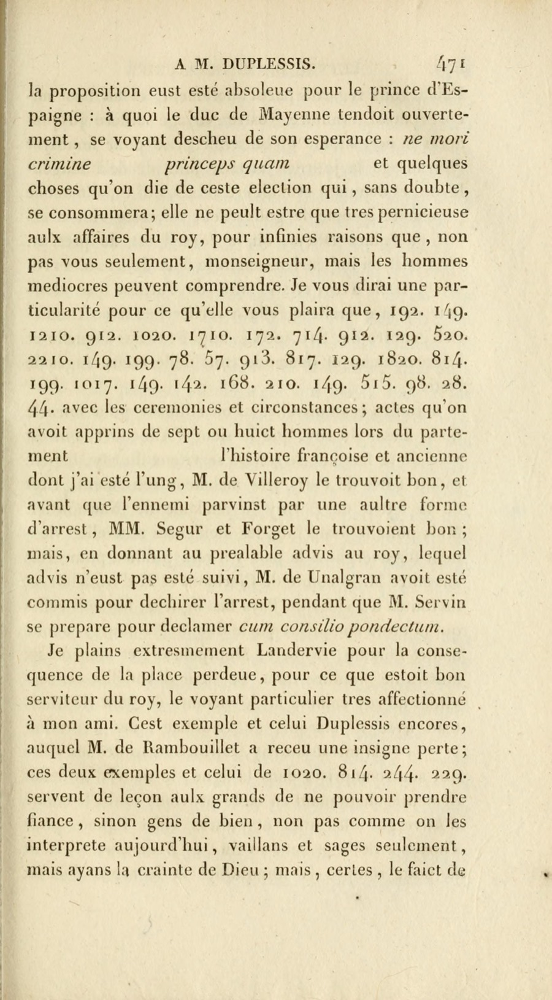
日付 1593年7月20日（火）（デュ・モーリエ。刊本は「6月某日火曜」と印刷）、1593年8月初め（セルヴィエ。刊本の「7月6日」はありえない日付）――注を参照
場所 トゥール（ソーミュールのデュプレシ＝モルネーが受信）
差出人 トゥールにいたデュプレシ＝モルネーの通信者デュ・モーリエとJ.・ド・セルヴィエ
受取人 フィリップ・デュプレシ＝モルネー（1549–1623）、アンリ4世のプロテスタントの顧問、ソーミュール総督
出典 Mémoires et correspondance de Duplessis-Mornay, Paris, Treuttel et Würtz, 1824–1825, 第5巻, 書簡CCI（pp. 469–475）・書簡CCVI（pp. 486–488）。原本の所在は未確認。
暗号 単一換字：一つの数が一文字。数は二つずつ続けて印刷（1210 = 12|10 = s t）。a〜m は奇数に昇順（c 5, d 7, e 9 … m 21）、n〜z は偶数に降順（n 22, o 20 … u 8）。a = 2
キーワード duc de Guise · Montrichard · duchesse d’Angoulême · comte de Gramont · le chancelier et Sourdis · le roy est trahi
読解の状態. 私たちの知る限り、初めて公表される解読です。印刷された93群（186文字）のうち92群は鍵で読め、最後の一群（244）は有力な値で読んでいます。鍵は六つの部分（P1–P5, S1）で作って固定し、選定に使わなかった二つの部分（P6, S2、*印）に修正なしで適用すると、続いたフランス語になります（「conte de Gramont ne soit de la partie」「trahi」。2,000通りの置換鍵に対し標準偏差7.6倍）。有力な読み二つ（記号44 = x/y）と未同定の名（ヴォトルヌフ）が残ります。
凡例：暗号部分。{x} = 有力な読み。[…] = 掲載しない刊本の本文。綴りは1824年刊本のまま。
鍵
「折り返し」式アルファベット：a〜m は奇数を順に（a だけ例外で 2）、n〜z は偶数を逆順に取ります。1 と 3 は使われず、b（3?）は出てきません。f = 11 はこの構造から予測され、その後「font」で確認されました。
| 文字 | a | c | d | e | f | g | h | i | l | m |
|---|---|---|---|---|---|---|---|---|---|---|
| 数 | 2 | 5 | 7 | 9 | 11 | 13 | 15 | 17 | 19 | 21 |
| 文字 | n | o | p | q | r | s | t | u/v | x/y |
|---|---|---|---|---|---|---|---|---|---|
| 数 | 22 | 20 | 18 | 16 | 14 | 12 | 10 | 8 | 44 |
八つの暗号部分（群ごと）
| 部分 | p. | 印刷された群 | 読んだ文字対 | 読み |
|---|---|---|---|---|
| P1 | 471 | 192 149 1210 912 1020 1710 172 714 912 129 520 2210 149 199 78 57 913 817 129 1820 814 199 1017 149 142 168 210 149 515 98 28 44 | la re st es to it ia dr es se co nt re le du cd eg ui se po ur le ti re ra qu at re ch eu au {x} | l’arrest estoit adressé contre le duc de Guise pour le tirer à quatre chevau{x} |
| P2 | 471 | 1020 814 244 229 | to ur a{y} ne | Tour{ay}ne |
| P3 | 472 | 2120 2210 1417 515 214 1010 | mo nt ri ch ar tt | Montrichart{t} |
| P4 | 472 | 82 810 2014 229 811 | ua ut or ne uf | Vautorneuf |
| P5 | 473 | 192 78 515 912 129 72 2213 2019 912 219 | la du ch es se da ng ol es me | la duchesse d’Angolesme |
| P6* | 475 | 520 2210 97 913 142 2120 2210 229 1220 1710 79 192 182 1410 179 | co nt ed eg ra mo nt ne so it de la pa rt ie | conte de Gramont ne soit de la partie |
| S1 | 487 | 199 515 222 59 1917 914 910 1220 814 717 1211 2022 1019 922 109 1814 1722 129 | le ch an ce li er et so ur di sf on tl en te pr in se | le chancelier et Sourdis font l’entreprinse |
| S2* | 488 | 1014 215 17 | tr ah i | trahi |
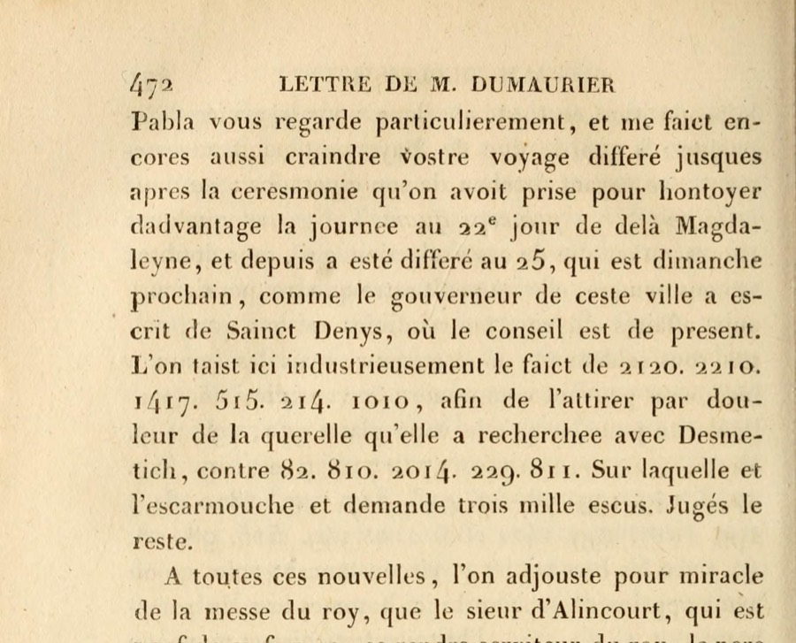
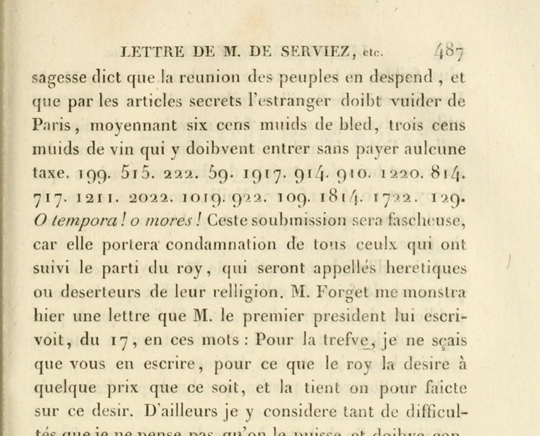
校訂本文（文脈の中の暗号部分）
デュ・モーリエ、トゥール、1593年7月20日（火）（CCI）
Je vous dirai une particularité pour ce qu’elle vous plaira, que l’arrest estoit adressé contre le duc de Guise pour le tirer à quatre chevau{x} avec les cérémonies et circonstances ; actes qu’on avoit apprins de sept ou huict hommes […]. M. de Villeroy le trouvoit bon […], MM. Segur et Forget le trouvoient bon ; mais, en donnant au préalable advis au roy, lequel advis n’eust pas esté suivi, M. de Unalgran avoit esté commis pour déchirer l’arrest, pendant que M. Servin se prépare pour déclamer […].
Cest exemple et celui Duplessis encores, auquel M. de Rambouillet a receu une insigne perte ; ces deux exemples et celui de Tour{ay}ne servent de leçon aulx grands de ne pouvoir prendre fiance, sinon gens de bien […].
L’on taist ici industrieusement le faict de Montrichart{t}, afin de l’attirer par douleur de la querelle qu’elle a recherchée avec Desmetich, contre Vautorneuf. Sur laquelle et l’escarmouche et demande trois mille escus. Jugés le reste.
[…] mais on a volé trois paquets au messager qui arriva hier et ne sçait lire, et m’asseure on que ça esté la maison de la duchesse d’Angolesme. J’ai fort particulière amitié avec ce vicomte […].
[…] j’ai prins ce ne peult estre que le conte de Gramont ne soit de la partie. Je doibs au service […].
J.・ド・セルヴィエ、トゥール、1593年8月初め（CCVI）
[…] et que par les articles secrets l’estranger doibt vuider de Paris, moyennant six cens muids de bled, trois cens muids de vin qui y doibvent entrer sans payer aulcune taxe. Le chancelier et Sourdis font l’entreprinse. O tempora ! o mores ! Ceste soubmission sera fascheuse […].
[…] Car la conscience des cœurs est hors de l’attainte des hommes perdeus, que le roy est trahi. Voilà, monsieur, ce que la condoléance que je porte au public ne me permet de taire.
日本語訳（暗号部分）
デュ・モーリエ、トゥール、1593年7月20日（火）（CCI）
P1 ― その［構想された］判決はギーズ公を狙ったもので、儀式と手続きを整えて四頭の馬で引き裂かせるためでした。
P2 ― この二つの例とトゥーレーヌの例は、大貴族への教訓となります……
P3–P4 ― 当地ではモンリシャールの件をわざと伏せています。それがヴォトルヌフに対してデメティックと起こした争いの恨みによって引き込むためです。
P5 ― 三つの包みを盗んだのはアングレーム公爵夫人の家中だと、私は確言されました。
P6* ― グラモン伯がこれに加わっていないはずはないと私は理解しました。
J.・ド・セルヴィエ、トゥール、1593年8月初め（CCVI）
S1 ― 尚書とスルディがこの企てを進めています。
S2* ― 国王は裏切られています。
読みの注と歴史的な注
- 背景。1593年夏、パリではカトリック同盟の全国三部会が国王選出を議論し、スペインは王女イサベル・クララ・エウヘニアを推して、若いギーズ公シャルル・ド・ロレーヌ（1571–1640）と結婚させようとしていました（同じ書簡の p. 470 に記述）。6月28日のパリ高等法院の判決（ルメートル判決）は外国の君主を退けます。アンリ4世は7月25日（日）にサン＝ドニで改宗し、7月31日にラ・ヴィレットで三か月の全面休戦が結ばれました。プロテスタントの指導者デュプレシ＝モルネーは改宗を敗北と受けとめています。
- P1「四頭の馬で引き裂く」：四つ裂きは大逆罪の刑です。続く記述（ヴィルロワ、セギュール、フォルジェ、判決を「破り捨てる」、検事総長代理ルイ・セルヴァン）から、王の側で、おそらくトゥールの王党派高等法院で、ギーズ公が王冠を受けた場合に備えて用意された判決と考えられます。文書ではなく文脈からの読みです。
- P2「Tour{ay}ne」：244 は 2|44（a + 44）に分かれます。記号44は二回だけ現れます。P1の末尾（「chevau·x」）とここ（「Tour·a·y·ne」、16世紀によくあるトゥーレーヌの綴り）です。u/v と同様に x/y を兼ねる記号と読みます。トゥーレーヌの「例」（失われた拠点か裏切りか）は明らかではありません。
- P3 モンリシャール：トゥーレーヌのシェール川沿いの町と城。7月28日、デュ・モーリエはトゥールから「パラディ隊長がモンリシャールにいる」と書き、トゥーレーヌ総督スーヴレ殿の使者に城を明け渡さなかったと伝えています（同第5巻 p. 499）。最後の群 1010 は「tt」で、文字の重複か対を埋める詰め物です。P4 ヴォトルヌフ：文字は確実ですが、人名か地名かも未同定です（刊本、ウェブ検索、2026年10月27日）。デメティックも未同定です。
- P5 アングレーム公爵夫人：アンリ2世の認知された娘ディアーヌ・ド・フランス（1538–1619）。甥のオーヴェルニュ伯シャルル・ド・ヴァロワを育てており、同じ書簡はオーヴェルニュの王党派の長として伯の名を挙げています。盗まれた包みにはオーヴェルニュの休戦条約が入っていました。暗号では「Angolesme」と綴られています。
- P6* グラモン伯：ギッシュ伯、バイヨンヌ総督のカトリック、アントワーヌ2世・ド・グラモン（1572–1644）。この部分は、ベアルンでミサを復活させる計画（サン＝パレでミサが歌われた）へのデュ・モーリエの懸念に続きます。「Ce ne peult estre que le conte de Gramont ne soit de la partie」は「彼が加わっていないことはありえない」の意です。
- S1 尚書とスルディ：フランス尚書フィリップ・ユロー・ド・シュヴェルニー（1583–1588, 1590–1599）と、その盟友でシャルトル総督のスルディ侯フランソワ・デスクーブロー。「企て」は休戦とその「秘密条項」（小麦と葡萄酒と引き換えにスペイン兵がパリを去る）のことで、セルヴィエはアラスの和約よりも恥ずべきものだと見ています。
- 日付。デュ・モーリエは儀式が「次の日曜の25日に延期された」と伝え、「19日付」の手紙に返事をしています。したがって書簡は6月ではなく1593年7月20日（火）です。セルヴィエは「休戦条項」を受け取り、国王のミサを済んだこととして語っているので、7月31日より後です。「8月6日」が有力ですが（編者が「7月」と誤読?）、証明はされていません。
方法・検証・クレジット
方法：(1) ダニエル・ブルドー氏による93群の転写を画像で再確認。(2) ブルドー氏の「一群に二文字、アルファベットは一つ」という仮説を引き継ぎ、強化した焼きなまし法（頻度ペナルティ、同じ刊本第4〜6巻の平文で学習した4-gram言語モデル）を、同じ区切りの合成テキストで較正して適用。(3) 鍵を手で修正。「折り返し」構造を認識し、f = 11 を読む前に予測。(4) 鍵を P1–P5 と S1 で固定し、選定に使わなかった P6 と S2 に修正なしで適用：文脈に合う続いたフランス語となり、4-gramスコアは1文字あたり −1.675、鍵の置換2,000通りの平均 −3.70（最大 −2.87）に対し z = 7.6。同じ刊本の1595年（ロメニー）と1597年（デュプレシ）の暗号にはこの鍵は合いません（否定的な試験）。
発見と転写：ダニエル・ブルドー氏の目録 no 371 ↗。氏は印刷されたまま読まれていないこれらの暗号を指摘して転写し、2026年10月25日の時点で「一群に二文字」という仮説を提案していました。氏の自動解読の試みは成功しませんでした（作業メモ ↗）。私たちの読みはこの仮説を引き継いだものです。刊本：Internet Archive 第5巻 ↗（プリンストン神学校図書館所蔵本）、パブリックドメイン。先行研究の確認（2026年10月27日）：目録 no 371（「open」）と cyphersolver リポジトリ、Cryptiana（友清理士氏）、ウェブ検索（デュプレシ＝モルネーの暗号、デュ・モーリエ、セルヴィエ、ヴォトルヌフ）。公表された解読は見つかりませんでした。
アフォンソ6世からヴィラ・フロール伯へ――4通の暗号書簡、1663年5月13日〜26日
1663年春、ドン・フアン・ホセ・デ・アウストリアはアレンテージョに侵攻し、エヴォラを包囲しました。リスボンでは、若い国王アフォンソ6世の名でカステロ・メリョール伯が政権を握り、ポルトガル軍の司令官ヴィラ・フロール伯にほぼ毎日書簡を送っています。ここではそのうち4通の暗号書簡を日付順に読みます。5月13日は援軍として送った騎兵の知らせ。5月15日はエヴォラ包囲の翌日で、援軍・資金・国王のセトゥーバル行きの計画を述べた長い書簡と、たとえ会戦になろうとも「いかなる危険を冒しても」救援せよという命令。5月26日は市の降伏から4日後で、同じ決定を「最終」のものとして繰り返します。6月8日、ヴィラ・フロールとショムベルクはアメイシアルでドン・フアンを破ります。
画像は掲載していません。DigitArqには再利用の許諾が表示されていないためです。各書簡は冊子の画像87（5月13日）、53–57と59（5月15日の書簡）、69と71（5月15日の短い書）、37と39（5月26日）です。
凡例：灰色＝原本で平文の部分。黒＝解読した部分。[x]＝略記の展開または補った文字。{x}＝有力な読み（ここでは暗号係の誤記の訂正）。綴りは暗号のとおりです。語の区切り、句読点、大文字、u/v・i/j の区別、セディーユとティルは編者によるもので、暗号にはこれらを表す記号がありません。
1663年5月13日――援軍として送った騎兵
ドン・フアンがエストレモスの前に現れた2日後、エヴォラが包囲される前日に書かれた書簡です。まず司令官からの音信が途絶えたことを案じ、急使が捕らえられたのではないかと記します。続いて、アレンテージョへ向かう騎兵を中隊ごとに知らせます。
日付 1663年5月13日（平文「Escrita em Lx.ª a 13 de Mayo de 1663」）
差出人 アフォンソ6世（ポルトガル王）（「Rey」。カステロ・メリョール伯〔国璽尚書 escrivão da puridade〕の副署）
宛先 D. サンショ・マヌエル、初代ヴィラ・フロール伯、アレンテージョ軍事総督（宛名「P[ar]a o Conde de V[ila] Flor」）
請求記号 ANTT, Luís de Miranda Pereira, liv. 2（PT/TT/LMP/0002）、DigitArqのデジタル化画像87
キーワード cuidado · tomar-se o correo · Manoel Freire de Andrade · 203 cavallos · socorro da Beira · companhias de cavalos
解読の状況. 私たちの知る限り、初めて公表される解読です。636記号、読みは約97％。15ほどの記号を文脈から訂正し（暗号係による脱字、3の代わりの30、x の代わりの Ӿ）、2か所が不確かなまま残ります（1回だけ使われる記号 ʒ と、暗号係が2記号を抹消した「Lo[bo] ‹aal› de Agalega」）。この書簡は鍵の盲検テストに使ったものです。鍵を使わずに翻字し、5月26日の書簡で固定した鍵K1で復号しました。その後、追加の同音異字はこの書簡自体から確定しました（「追加の同音異字」参照）。
校訂本文（ポルトガル語）
Conde amigo. Eu ElRey vos envio muito saudar como aquelle q[ue] amo.
A ultima carta que se recebeo vosa foi de {10} do corrente, e fico com cuidado de se nam hav{e}r recebido outra, e se entende pod[e]ria t{o}mar-se o correo. Despacho {es}te para vos avizar que Manoe[l] Freire de Andrade partio d{e} Coimbra em 9 deste á tarde com 203 cavallos, e escreve q[ue] nam faria outra detença mais q[u]e em montar alguns que hião desmontados; com elle deve hir tambem tudo o que faltava do socorro da Be{i}ra; conforme a isto pod{e}reis fazer conta de quando ahi poderá {c}hegar. Das companhias de cav[a]los desta cidade pasa amanhã a de Luis Lo[bo] ‹aal› de Agalega com 56 cavalos; no dia seguinte parte a do comisario Gonçalo da Costa, e no outro Diogo Luis Ribeiro e Jorge Furtado, e cada hum leva 55 cavalos pelo menos. Nam se oferece outra couza de q[ue] vos avizar mais que estar-se esperando {c}oreio com todo o cuidado.
Escrita em L[isbo]a a 13 de Mayo de 1663. — Rey. — [Conde de Castelo Melhor]. — [Adresse :] P[ar]a o Conde de V[ila] Flor.
翻訳
伯爵、わが友よ。朕、国王は、愛する者として汝に心からの挨拶を送る。
汝から届いた最後の書簡は今月10日付のもので、その後何も届かないことを案じている。急使が捕らえられたのではないかと考えられている。この書を送るのは、マヌエル・フレイレ・デ・アンドラデが今月9日の午後、203騎を率いてコインブラを発ったことを知らせるためである。彼は、徒歩で行く者たちに馬を与えるほかには停まらないと書いてきた。彼とともに、ベイラからの援軍のうち不足していた分もすべて向かうはずである。これをもとに、彼がいつそちらに着くか見積もることができよう。
この市の騎兵中隊のうち、ルイス・ロボ（？）〔…〕デ・アガレガの中隊が明日56騎で発つ。翌日には監察官ゴンサロ・ダ・コスタの中隊が、その次の日にはディオゴ・ルイス・リベイロとジョルジェ・フルタドが発ち、それぞれ少なくとも55騎を率いる。ほかに知らせることはなく、ただ急使の到着を切に待っている。
1663年5月13日、リスボンにて記す。国王。――カステロ・メリョール伯。――ヴィラ・フロール伯へ。
注
- 時期。ドン・フアンは5月11日にエストレモスの前に現れましたが、攻撃できずにエヴォラへ向かい、14日にこれを包囲しました（エリセイラ、第8巻）。13日の書簡は、リスボンがまだ敵の目標を知らず、軍の急使が捕らえられることを恐れていた時に書かれています（「se entende poderia tomar-se o correo」）。
- 援軍。ベイラ騎兵の副総監マヌエル・フレイレ・デ・アンドラデが203騎と「ベイラからの援軍のうち不足していた分すべて」を率います。リスボンの中隊は、監察官ルイス・ロボ、ゴンサロ・ダ・コスタ〔・デ・メネゼス〕、ディオゴ・ルイス・リベイロ、ジョルジェ・フルタド〔・デ・メンドンサ〕の中隊です。5月15日付の書簡（下記）は、最初の3中隊が「今日」乗船し、ジョルジェ・フルタドが「明日」60騎で発つと記しており、予定は2日ずれています。エリセイラは5月22日の軍の行軍序列で、ゴンサロ・ダ・コスタ・デ・メネゼスを「リスボン部隊」の予備騎兵大隊の指揮官に挙げています。ジョルジェ・フルタド・デ・メンドンサはアメイシアルで戦いました。
- 読み。「{10}」：記号10（鍵では h）はここでは日付で、「em 9 deste」の「9」と同じです。5月15日付のもう1通の書簡も、9日に203騎でコインブラを発ったことを裏づけます。暗号係は3回、3（＝e）の代わりに30（＝m）と書いています：hav{e}r、d{e} Coimbra、pod{e}reis。「Despacho {es}te」：1回だけ使われる ʒ はおそらく「es」です。Ӿ（鍵では z）は2回 c に使われています：{c}hegar、{c}oreio。「Lo」の後に暗号係が抹消した2記号（おそらく「bo」。ルイス・ロボは5月15日付のもう1通に名が見えます）があり、続く「aal de Agalega」は説明できません。
- 綴り。vosa、pasa、comisario、coreio のように子音を重ねない綴り、cavallos と cavalos の併用、hião、ahi：暗号のとおりの綴りで、正規化していません。
暗号文の翻字
暗号の26行（636記号）を記号ごとに示し、続いて鍵K2による各記号の値を示します。この書簡に特有の記号：ρ（＝a）、Ꞵ（縦線の長いb、＝b）、Ꝗ（輪のある記号、＝u/v）、g（輪のある9、＝e）、e（＝q）、u（＝m）、ʒ（1回のみ、未解決）。2桁以上の数と日付は暗号文の中でも平文で書かれています：[9]、[10]、[203] など。
| 行 | 記号 | 値 |
|---|---|---|
| 1 | 4·22·25·24·Δ·u·ρ·9·4·6·A·ρ·e·Ꝗ·g·31·3·6·g·x·3·Ꞵ·g·50·22 | aultimacartaqveserecebeou |
| 2 | 50·31·4·n·50·Δ·Ƶ·g·10·Ƶ·5·x·50·6·6·g·ß·A·g·3·n·11·x·50 | osafoide[10]docorrenteefico |
| 3 | x·50·30·9·22·11·Ƶ·4·53·50·Ƶ·g·31·3·ß·4·30·10·4·22·30·6·6·3 | comcuidadodesenamhaumrre |
| 4 | x·3·7·11·Ƶ·50·5·22·24·6·4·3·31·3·g·ß·24·3·ß·Ƶ·3·a·5·Ƶ | cebidooutraeseentendepod |
| 5 | 6·11·4·A·g·30·4·6·31·3·5·x·50·6·6·3·50·Ƶ·3·31·17·4·x·10·50 | riatemarseocorreodespacho |
| 6 | ʒ·A·3·17·4·6·4·22·50·31·4·22·11·Ӿ·4·6·21·22·3·30·4·ß·50·3 | ‹ʒ›teparauosauizarquemanoe |
| 7 | 2·6·3·11·6·3·Ƶ·3·4·ß·Ƶ·6·4·Ƶ·3·17·4·6·24·11·50·Ƶ·30·x·50·11 | freiredeandradepartiodmcoi |
| 8 | 30·Ꞵ·6·4·3·30·g·Ƶ·3·31·A·3·4·24·4·6·Ƶ·3·x·50·30·203?·x·ρ | mbraem[9]desteatardecom[203]ca |
| 9 | Ꝗ·4·25·h·50·31·3·g·31·x·6·3·Ꝗ·g·e·ß·4·30·n·4·6·11·4·50 | valloseescreveqnamfariao |
| 10 | 22·A·6·4·Ƶ·3·A·3·ß·x·4·30·ρ·11·31·21·3·30·u·50·ß·A·4·6·4 | utradetencamaisqemmontara |
| 11 | h·r·Ꝗ·ß·31·e·22·3·Ꝼ·11·4·5·Ƶ·3·31·30·50·40·24·4·Ƶ·50·31 | lgvnsquehiaodesmontados |
| 12 | x·50·30·3·h·25·3·Ƶ·3·22·3·10·Δ·6·A·4·30·7·3·30·24·22·Ƶ·50 | comelledeuehirtambemtudo |
| 13 | 50·21·22·3·2·4·25·A·4·Ꝗ·4·Ƶ·50·31·5·x·50·6·6·5·Ƶ·4·Ꞵ·3·A | oquefaltavadosocorrodabet |
| 14 | 6·4·x·5·ß·n·50·6·30·3·4·Δ·31·24·50·17·50·Ƶ·30·6·3·11·31·2·4 | raconformeaistopodmreisfa |
| 15 | Ꝼ·3·6·x·50·ß·A·4·Ƶ·3·e·22·4·ß·Ƶ·50·4·Ꝼ·11·a·50·Ƶ·3·6·4 | hercontadequandoahipodera |
| 16 | Ӿ·Ꝼ·3·r·4·6·Ƶ·4·31·4·x·50·30·a·4·ß·Ꝼ·11·4·31·Ƶ·3·x·4·22 | zhegardasacompanhiasdecau |
| 17 | 25·50·31·Ƶ·3·31·24·4·x·11·Ƶ·4·Ƶ·3·17·4·31·4·ρ·30·4·40·10·4 | losdestacidadepasaamanha |
| 18 | 4·Ƶ·3·h·22·11·31·25·50·4·ρ·25·Ƶ·3·4·r·4·h·3·r·4·x | adeluisloaaldeagalegac |
| 19 | 50·30·56·x·4·22·ρ·h·50·31·40·50·Ƶ·11·4·31·3·r·22·11·40·A·3 | om[56]caualosnodiaseguinte |
| 20 | 17·4·6·A·3·4·Ƶ·50·x·50·30·11·31·4·6·11·50·r·50·40·x·4·25·5·Ƶ | parteadocomisariogoncalod |
| 21 | 4·x·50·31·A·4·3·40·50·5·22·24·6·50·Ƶ·11·5·r·50·h·22·11·31·6 | acostaenooutrodiogoluisr |
| 22 | 11·7·3·Δ·6·5·3·11·5·6·r·3·n·22·6·A·4·Ƶ·50·3·x·4·Ƶ·4·Ꝼ·22·30 | ibeiroeiorgefurtadoecadahum |
| 23 | h·3·22·4·55·x·4·22·4·h·5·31·a·3·h·5·30·3·40·5·31·40·4·30 | leua[55]caualospelomenosnam |
| 24 | 31·3·50·n·3·6·g·x·3·5·22·24·6·4·x·50·22·Ӿ·4·Ƶ·3·e·22·50·31 | seofereceoutracouzadequos |
| 25 | 4·22·11·Ӿ·4·6·30·4·11·31·e·22·3·g·31·24·4·6·31·3·3·31·a·3·6·4 | auizarmaisqueestarseespera |
| 26 | 40·Ƶ·50·Ӿ·5·6·3·11·5·x·5·30·A·50·Ƶ·5·50·x·22·Δ·Ƶ·4·Ƶ·50 | ndozoreiocomto |
1663年5月15日、もう1通の書簡――援軍、資金、そしてセトゥーバルの国王
5月15日の暗号の書が言及する「同じ日付の別の書簡」がこれです。平文と暗号が混じり、敵に情報を与えかねないことはすべて暗号にしています。進軍中の援軍（ベイラの歩兵と騎兵、リスボンの中隊）、国王がセトゥーバルかパルメラに武器集積地を設けて自ら赴く計画、給与の資金、モンテモールへ送った援助です。平文のまま残るのは、挨拶、原則（「軍は戦うためにある」）、毎日急使を送れという求めです。
日付 1663年5月15日（平文「Escrita em L[isbo]a a 15 de Mayo de 1663」）
差出人 アフォンソ6世（ポルトガル王）（「Rey」。カステロ・メリョール伯〔国璽尚書 escrivão da puridade〕の副署）
宛先 D. サンショ・マヌエル、初代ヴィラ・フロール伯、アレンテージョ軍事総督（宛名「P[ar]a o Conde de V[ila] Flor」）
請求記号 ANTT, Luís de Miranda Pereira, liv. 2（PT/TT/LMP/0002）、暗号の写し2通：画像53・54・59（写し1）、画像55・56・57（写し2）
キーワード terços auxiliares · 1801 praças de infanteria · Manoel Freire de Andrade · praça de armas na villa de Setuval · quarenta e quatro mil cruzados · Francezes · Inglezes · Montemor · postas
解読の状況. 私たちの知る限り、初めて公表される解読です。この書簡は署名入りの2通（正本と「via」）で残っています。平文の部分は同じですが、暗号は別々に、別の同音異字と別の改行で作られています（2,213記号と2,357記号）。製本された冊子では、両者の第3葉が入れ替わっています。写し1は画像53 → 54 → 59、写し2は画像55 → 56 → 57の順に読み、暗号の続き具合がそれを証明します（葉をまたぐ「estam r|[ec]olhidos」）。固定した鍵K3で解読した各写しは、校訂本文と98.7％・99.0％一致します。2通を別々に解読すると一致率は0.927で、記号を攪乱した写しでは最良でも0.131（20回）にとどまります。片方の切り取られた余白で失われた部分は、もう片方で読めます。さらに、写し1は写し2が暗号にしている1文を平文で書いています。私たちとは独立したこの当時のクリブを、固定した鍵は166字中164字再現します。読みは約99％。残るのは読みではなく解釈の問題です：「agardeço」と、モンテモールへ送られた技師の名です。
校訂本文（ポルトガル語）
Conde Amigo. Eu ElRey vos envio muito saudar como aquelle q[ue] amo. Receberão-se as vossas cartas de 12 do corrente em q[ue] daes conta do que té aquelle tempo havia succedido, e tinheis alcançado do Inimigo, que me dera muito mayor cuidado, se vos não tivera no governo de minhas armas, e aos cabos que comvosco assistem, cujo valor vejo se communica a todos os soldados desse exercito, e ainda aos moradores de todos os lugares, conforme a informação q[ue] tenho, de como estão animados, o q[ue] me dá grande contentamento.
Entendo que ja la tendes os terços auxiliares da Estremadura, excepto algumas companhias do de Torres Vedras que hão partido mais tarde; o do termo desta cidade se fica aprestando com toda a deligencia, e posto que não poderá chegar para a primeira ocazião que espero tenha, servirão para despois reforçar o exercito. Hoje se recebeo o avizo do mestre de campo general Pedro Jaques de Magalhães com data de 9 do corrente, com huma relação da infanteria e cavallaria que dis tinha partido té o primeiro de Mayo, que contem 1801 praças de infanteria nos dous terços do mestre de campo Manoel Ferreira Rebelo e Paulo de Andrade, e 408 praças de cavallaria, que conforme ao tempo em que refere partio devem de ser chegadas; e diz que esperava fosse de Almeida Manoel Freire de Andrade para levar tudo o mais que houvesse, o qual partio de Coimbra com 203 cavalos, que ali comprou em 9 do corrente, e parece chegará ahi muito brevemente. Desta cidade se embarcarão hoje as companhias de cavalos dos comissarios Gonçalo da Costa de Menezes, Luis Lobo e Diogo Luis Ribeiro com 170 cavalos bem montados, e amanhã parte Jorge Furtado com a sua, que constará de 60 cavalos, e vai com ordem de em Montemor tomarem as noticias necessarias para o caminho que hão de seguir. Tanto que vos chegarem estes socorros, se entende que vos achareis com poder bastante para pelejardes com o inimigo, se vos parecer, o que fica á vossa dispozição.
O que daqui se vos pode dizer he, que assim para que {se a}junta exercito, e o Reino o sustenta com suas contribuições, he para o defenderem, pelejando quando he necessario, e do contrario se perderia a reputação das armas, e se desconsolarião os vassallos, e se seguirião outras consequencias muito perjudiciaes. Presentes vos são estas razões, e conheço de vós que as medireis com o tempo e ocazião que vos offerecer, para acertardes no que mais convenha.
Para engrossar ao diante e conservar esse exercito, pareceo o meio mais eficaz passar eu a essa provincia; e assim ordeno se faça praça de armas na villa de Setuval, por se julgar parte mais acomodada por muitas razões, e ali mando juntar o que for possivel com toda a brevidade, e com a mesma passarei eu logo a assistir naquella villa ou na de Palmela, para socorrer como e aonde o tempo mostrar que he necessario; e no interim e sempre se vos hirá acudindo com a maior pontualidade que puder ser, particularmente com dinheiro para paga dos soldados: quarenta e quatro mil cruzados tinham partido daqui quinta feira, e se entende estão recolhidos em parte segura, mas ainda se não sabe ao certo aonde, e com elles huma partida de botas e outras couzas. Tambem mandei remeter dinheiro para os Francezes, e mil cruzados que faltarão para os Inglezes. E que tudo se tem entendido estar em Evora. Aquella cidade tenho por bastantemente prevenida, conforme o tempo deu lugar, e vos agardeço a deligencia com que o fizestes; espero em Deos que se defenderá té que chegueis a socorrê-la; e sendo ella da importancia e reputação que sabeis, não tenho para que vo-la encomendar. A Montemor me pareceo enviar o mestre de campo Antonio Soares da Costa e o engenheiro Adam Fr[ancis]co de Pontes para assistir ao que for necessario para sua defensa; e quazi no mesmo tempo tinha enviado o tenente de mestre de campo general Luis Ribeiro, para que tomando as noticias convenientes encaminhe dali as carruagens e outros socorros pela parte mais segura. Ao correio mor se ordenou mudasse as postas como apontais e as dobrasse.
Encomendovos muito, que todos os dias infalivelmente me despacheis hum correyo pelo menos, com aviso do que for succedendo, ainda que não haja couza de novo, para me tirar do cuidado em que he força esteja do que passa dessa banda. Escrita em L[isbo]a a 15 de Mayo de 1663. — Rey. — [Conde de Castelo Melhor]. — P[ar]a o Conde de Villa Flor.
翻訳
伯爵、わが友よ。朕、国王は、愛する者として汝に心からの挨拶を送る。今月12日付の汝の書簡を受け取った。そこには、その時までに起こったことと、汝が敵について知り得たことが報告されていた。もし汝がわが軍の指揮をとっておらず、汝を補佐する指揮官たちもいなかったならば、朕ははるかに大きな憂慮を抱いたであろう。彼らの勇気はその軍のすべての兵士に、さらには各地の住民にまで伝わっていると、彼らの士気について受けた報告から見てとれる。これは朕に大きな満足を与える。
エストレマドゥーラの補助テルソはすでにそちらに着いていると理解している。ただしトレス・ヴェドラスのテルソのいくつかの中隊は遅れて出発した。この市〔リスボン〕の管轄区のテルソは全力で準備中であり、汝が迎えると朕が期待する最初の機会には間に合わないが、その後に軍を増強するのに役立つであろう。本日、総監（mestre de campo general）ペドロ・ジャック・デ・マガリャンイスから今月9日付の報告が届いた。5月1日までに出発したと彼が言う歩兵と騎兵の一覧が添えられている。マヌエル・フェレイラ・レベロとパウロ・デ・アンドラデの両連隊長（mestre de campo）の2個テルソに歩兵1,801名、騎兵408騎で、出発の時期からみて、すでに到着しているはずである。また彼は、残りすべてを連れてゆくためにマヌエル・フレイレ・デ・アンドラデがアルメイダから来るのを待っていたと言う。フレイレは203騎を率いてコインブラを発った。馬は今月9日にそこで買ったもので、まもなくそちらに着くであろう。この市からは本日、監察官ゴンサロ・ダ・コスタ・デ・メネゼス、ルイス・ロボ、ディオゴ・ルイス・リベイロの騎兵中隊が、よく馬を備えた170騎で乗船する。明日はジョルジェ・フルタドが60騎の自分の中隊を率いて発つ。彼らは、進むべき道について必要な知らせをモンテモールで得るよう命じられている。これらの援軍が届けば、汝がよいと思うなら敵と戦うに足る兵力を持つことになると考えられる。それは汝の判断に委ねる。
ここから汝に言えることは、軍を集め、王国がその負担金でそれを養うのは、王国を守るため、必要なときには戦うためだということである。さもなければ武名は失われ、臣下は意気をくじかれ、ほかにもきわめて有害な結果が続くであろう。これらの理由は汝の承知するところであり、汝がそれを、訪れる時と機会に照らして量り、最善を尽くすことを朕は知っている。
今後この軍を増強し維持するために最も有効な手段は、朕自らその州へ赴くことと思われた。そこで、多くの理由から最も適した地と判断されるセトゥーバルの町に武器集積地を設けるよう命じ、可能なものをすべて大至急そこに集めさせている。同じく速やかに、朕はただちにその町か、あるいはパルメラに移り住み、時が必要と示すところへ、示すように救援する。その間も、そして常に、できるかぎりの几帳面さで汝を援助する。とりわけ兵の給与のための資金である。4万4千クルザードが木曜日〔5月10日〕にここを発ち、安全な場所に収まっていると考えられるが、正確な場所はまだわからない。それとともに長靴その他の品の一団も送った。フランス人のための資金と、イングランド人のために不足していた千クルザードも送らせた。そして、それがすべてエヴォラにあることがわかった。かの市は、時の許すかぎり十分に備えができていると朕は考える。汝がそれを行った精励に感謝する。汝が救援に赴くまで、市が持ちこたえることを神に願う。汝も知るとおりの重要さと名声をもつ市であるから、改めて頼むまでもない。モンテモールには、連隊長アントニオ・ソアレス・ダ・コスタと技師アダン・フランシスコ・デ・ポンテス（Adam Fr[ancis]co de Pontes）を送り、その防衛に必要なことを助けさせるのがよいと考えた。ほぼ同じ時に、総監補（tenente de mestre de campo general）ルイス・リベイロを送ってあった。彼は必要な知らせを得たうえで、そこから輸送車両その他の補給を最も安全な道で送り出すことになっている。駅逓長官（correio-mor）には、汝の指摘どおりに駅馬の継ぎ場を変え、倍に増やすよう命じた。
毎日欠かさず少なくとも1人の急使を送り、たとえ新しいことがなくとも、起こっていることを知らせるよう、強く求める。そちらで起こっていることについて朕がどうしても抱かざるをえない憂慮を、取り除いてほしいからである。1663年5月15日、リスボンにて記す。国王。――カステロ・メリョール伯。――ヴィラ・フロール伯へ。
注
- 同じ日の2通。5月15日の暗号の書（上記）は「Demais do que vos digo em outra carta desta mesma data」で始まります。その「別の書簡」がこれです。長い書簡が状況と手段を述べ、短い書は「再検討」の末、いかなる危険を冒しても戦えという命令をそこから引き出します。どちらもエヴォラが包囲された翌日に送られました。
- ベイラからの援軍。ベイラの総監ペドロ・ジャック・デ・マガリャンイスは、5月1日までに出発した歩兵1,801名（マヌエル・フェレイラ・レベロとパウロ・デ・アンドラデのテルソ）と騎兵408騎を報告しています。両テルソは5月22日に確かに軍にいました。エリセイラはエヴォラへの行軍序列で、マヌエル・フェレイラ・レベロを第二線に、パウロ・デ・アンドラデを予備に置いています（第8巻521頁）。
- マヌエル・フレイレ・デ・アンドラデ。5月13日の書簡は、彼が9日に203騎でコインブラを発ったと伝えていました。この書簡は、馬をそこで買ったこと、アルメイダで「残りすべて」を連れてくるはずだったことを加えます。エリセイラは彼を「ベイラ騎兵の総監」と呼び、彼は「行軍の2日目に500騎で」、つまり5月23日に軍に合流しました（522頁）。
- リスボンの中隊。5月13日、宮廷は段階的な出発を予告していました（56騎、続いて各中隊少なくとも55騎）。15日には3個中隊が170騎でいっせいに乗船し、ジョルジェ・フルタドが翌日60騎で続きます。乗船はテージョ川で、南岸へ渡るためです。5月22日、ゴンサロ・ダ・コスタ・デ・メネゼスは「リスボン部隊」の予備騎兵大隊を率いていました（エリセイラ、522頁）。
- 「軍は戦うためにある」。平文のまま残されたこの段落は宮廷の原則を述べています。王国が負担金で養う軍は、必要なときには戦わねばならない。さもなければ武名は失われ、臣下は意気をくじかれる、と。同じ日の暗号の書の命令を予告するものです。
- セトゥーバルとパルメラ。国王（すなわちカステロ・メリョール）は、自らテージョ川の南へ赴き、セトゥーバルを武器集積地とし、アレンテージョから一日行程のセトゥーバルかパルメラに滞在する計画でした。この旅が実行された形跡は見つかっていません。エリセイラも1663年5〜6月の記述でこれに触れていません。計画は秘密で、暗号で書かれています。
- 給与の資金。4万4千クルザードが1663年5月10日の木曜日に長靴その他の物資とともにリスボンを発ち、15日になっても輸送隊がどこに避難したかわかっていませんでした。書簡は「すべて」がエヴォラにあると結んでいます。エリセイラも、包囲開始時のエヴォラ守備隊に、出費のため「リスボンから届いた8万クルザード」があったと記しています（第8巻517頁）。軍の資金は包囲された市の中にあったのです。
- フランス人とイングランド人。アレンテージョ軍の外国人連隊です。ショムベルク伯とともに来たフランス人と、チャールズ2世がキャサリン・オブ・ブラガンザとの結婚（1661–1662年）の後に送ったイングランド人で、5月22日の行軍序列に見えます（トマス・ハントとサー・アレン・アプスリーの連隊。エリセイラでは「Thomás Hur」「D. Diogo Apsley」）。彼らのために「不足していた」千クルザードは、その給与がポルトガル王室の負担だったことを思い出させます。
- モンテモール。モンテモール＝オ＝ノヴォはリスボンからエヴォラへの道上、包囲された市の西約30キロにあり、テージョ川南岸から来る援軍と輸送隊の通り道でした。宮廷は、この戦争の古参の連隊長アントニオ・ソアレス・ダ・コスタと1人の技師をそこへ送ります。暗号は2通とも「Adam Frco de Pontes」と書き、「Frco」はフランシスコの通常の略記です。参照した資料では、この技師を特定できていません。
- 駅逓。王国の駅逓業務を担う世襲の官職である駅逓長官（correio-mor）は、「汝の指摘どおりに」継ぎ場を変え、倍にするよう命じられます。5月13日の書簡は急使が捕らえられたことを恐れており、この書簡は毎日の急使を求めて結ばれます。
- 読み。「que dis tinha partido」：2通とも dis（z の代わりの s）で、「出発したと彼が言う」の意です。作業段階の読み「destinha」は撤回します。「agardeço」：2通ともこの形で、agradeço（感謝する）にあたります。したがって草稿の綴りであり、一方の暗号係の誤りではありません。「com 170」：1801、408、203、60と同じく、暗号文の中に平文で書かれた数です。Fと記していた記号は2種類あり、Ꝼ（横線付き7）＝h、Ӿ（上線付きx）＝z で、確認した20例に例外はありません。平文は2通で読み直しました。写し1は「Recebeo-sse」、写し2は「Receberão-se」（採用）。「para que {se a}junta exercito」は写し1で「se junta」、写し2で「se ajunta」と読め、この筆跡では se が en に似ています。「em que he força esteja」は写し2で明瞭です（写し1では「estia」）。
当時のクリブ――一方の写しでは平文、他方では暗号の1文
写し2、画像57、第20–26行：記号と、固定した鍵K3による値。Ꝼ＝h、Ӿ＝z。その下に、写し1（画像59）が平文で書いた同じ文を示します。鍵は比較した166字中164字を再現します。違いは綴り（quasi/quazi、thenente/tenente）と平文の略記（Luis R[ibeir]o）によるものです。
| 行 | 記号 | 値 |
|---|---|---|
| 20 | 4·Ƶ·3·n·3·ß·31·4·3·21·22·4·Ӿ·11·40·5·30·3·31·30·5·24·3·30·17·5·24·11 | adefensaequazinomesmotempoti |
| 21 | 40·Ꝼ·4·3·40·22·Δ·4·Ƶ·50·5·24·3·40·3·ß·24·3·Ƶ·3·30·3·31·24·6·3 | nhaenuiadootenentedemestre |
| 22 | Ƶ·3·x·4·30·17·50·r·3·ß·3·6·4·h·h·22·11·31·6·11·7·3·11·6·50·17·4·6·4 | decampogeneralluisribeiropara |
| 23 | 21·22·3·24·50·30·4·40·Ƶ·50·4·31·40·50·24·11·x·Δ·4·31·x·50·40·22·3·40 | quetomandoasnoticiasconuen |
| 24 | 11·3·40·24·3·31·3·ß·x·4·30·11·40·Ꝼ·3·Ƶ·4·h·11·4·31·x·4·6·6·22·4·r | ientesencaminhedaliascarruag |
| 25 | 3·40·31·3·50·22·24·6·50·31·31·50·x·5·6·6·5·31·17·3·h·4·17·4·6·24·3·30 | enseoutrossocorrospelapartem |
| 26 | 4·11·31·31·3·r·22·6·4 | aissegura |
写し1（画像59）、平文：
E quasi no mesmo tempo tinha enviado o thenente de m[estr]e de campo g[ene]r[a]l Luis R[ibeir]o, para q[ue] tomando as noticias convenientes encaminhe dali as carruagens, e outros socorros p[e]la parte mais segura.
1663年5月15日――「会戦の危険を冒しても」
エヴォラが包囲された翌日、国王は同じ日付の長い書簡に、挨拶と日付のほかはすべて暗号の短い書を添えました。主要な問題は「再検討」され、敵が包囲を続けて市を危険に陥れるなら、ヴィラ・フロールは全兵力を集め、いかなる危険を冒しても、「たとえ会戦という最後の局面に身をさらすことになろうとも」救援せよ、というのです。
日付 1663年5月15日（平文「Escrita em L[isbo]a a 15 de Mayo de 1663」）
差出人 アフォンソ6世（ポルトガル王）（「Rey」。カステロ・メリョール伯〔国璽尚書 escrivão da puridade〕の副署）
宛先 D. サンショ・マヌエル、初代ヴィラ・フロール伯、アレンテージョ軍事総督（宛名「P[ar]a o Conde de V[ila] Flor」）
請求記号 ANTT, Luís de Miranda Pereira, liv. 2（PT/TT/LMP/0002）、DigitArqのデジタル化画像69。暗号の第二の写しは画像71
キーワード tornando-sse a considerar · persevere no sitio de Evora · ajunteis todas as forças · a to
解読の状況. 私たちの知る限り、初めて公表される解読です。509記号、すべて読めました。暗号係は5か所の誤り（疑わしい記号1、脱字2、別の記号の誤用2）を犯していますが、別の同音異字と別の改行で暗号化された第二の写し（画像71）が同じ本文を与え、そのすべてを解決します。この書簡は鍵をすでに知った状態で翻字したもので、盲検テストではありません。ただし固定した鍵K1による復号の尤度（1文字あたり−2.25）は対照（最良でも−4.72）を大きく上回り、第二の写しが独立の検証となっています。
校訂本文（ポルトガル語）
Conde amigo. Eu ElRey vos envio muito saudar como aquelle que amo.
Demais do que vos digo em outra carta desta mesma data, tornando-sse a considerar a materia principal de que nella se trata, fui servido rezolver que, em cazo que o inimigo persevere no sitio de Evora e reduza aquela cidade a termos perigozos, ajunteis todas as forças dessa provincia, e com os socorros que das outras espera{i}s a procureis socorrer a todo o risco, ainda que vos exponhais a[o] ultimo transe de huma batalha, porque assim convem á defença do reino e a meu serviço, pella importancia da praça e conse[q]uencias que se seguirão d{o} sucesso que ella tiver; o que espero executareis com a rezoluçam e valor q{ue} he necessaria.
Escrita em L[isbo]a a 15 de Mayo de 1663. — Rey. — [Conde de Castelo Melhor]. — [Adresse :] P[ar]a o Conde de Villa Flor.
翻訳
伯爵、わが友よ。朕、国王は、愛する者として汝に心からの挨拶を送る。
同じ日付の別の書簡で述べたことに加え、そこで扱った主要な問題を改めて検討した結果、朕は次のように決定した。敵がエヴォラの包囲を続け、かの市を危険な状態に陥れるならば、汝はその州の全兵力を集め、他の州から待っている援軍とともに、いかなる危険を冒しても、たとえ会戦という最後の局面に身をさらすことになろうとも、市を救援するよう努めよ。王国の防衛と朕への奉仕がそれを求めるからであり、この要地の重要性と、そこに起こることがもたらす結果を考えてのことである。汝が必要な決意と勇気をもってこれを実行することを期待する。
1663年5月15日、リスボンにて記す。国王。――カステロ・メリョール伯。――ヴィラ・フロール伯へ。
注
- 会戦を冒すことの最初の許可。ドン・フアンがエヴォラを包囲した翌日の5月15日、宮廷は王国の軍を一日の戦いに賭けることを受け入れます。市が危険なら、ヴィラ・フロールは「a to
do o risco, ainda que vos exponhais ao ultimo transe de huma batalha」救援せねばならない、と。この冊子の中で、会戦を明示的に許可した最も早い書簡です。5月26日の書簡はこれを「最終の決定」として繰り返します。 - 「Outra carta desta mesma data」。5月15日付のもう1通の書簡（上記。画像53・54・59、第二の写し55–57）は平文と暗号が混じり、援軍（ベイラの歩兵と騎兵、リスボンの中隊）を詳しく述べ、国王がセトゥーバルかパルメラに移ることを考えていると伝え、給与の資金を送っています。同じ日の暗号の書は、そこから軍事上の結論を引き出したものです。
- その後。ヴィラ・フロールの軍議はエヴォラ救援への進軍を決め、軍は5月22日にエストレモスを発ちました。まさにその日、市は降伏しました（エリセイラ、第8巻）。国王の命令は5月26日に繰り返され（下記）、6月8日にアメイシアルで会戦が行われました。
- 読みと照合。第一の写しの誤りは第二の写しで訂正しました：espera{i}s（Δ の代わりの n?）、a[o] ultimo（o の脱字）、conse[q]uencias（q の脱字）、d{o} sucesso（50の代わりの40）、q{ue} he（3の代わりの50）。「a procureis socorrer」の a は代名詞（市を指す）です。暗号の綴り：tornando-sse、aquela、perigozos、defença、sucesso、rezoluçam。
暗号文の翻字
暗号の20行（509記号）を記号ごとに示し、続いて鍵による各記号の値を示します。この写しの誤記（第10行の n?、第17行で50の代わりの40、第20行で3の代わりの50、脱字）は、第二の写し（画像71）によって校訂本文で訂正しています。
| 行 | 記号 | 値 |
|---|---|---|
| 1 | Ƶ·3·30·4·11·31·Ƶ·50·21·22·3·22·50·31·Ƶ·11·r·50·3·30·50·22·24·6·4 | demaisdoqueuosdigoemoutra |
| 2 | x·4·6·24·4·Ƶ·3·31·24·4·30·3·31·30·4·Ƶ·4·24·4·24·50·6·40·4·ß·Ƶ·50 | cartadestamesmadatatornando |
| 3 | 31·31·3·4·x·50·40·31·11·Ƶ·3·6·4·6·4·30·4·24·3·6·11·4·17·6·Δ·40·x·11 | sseaconsideraramateriaprinci |
| 4 | 17·4·h·Ƶ·3·21·22·3·40·3·h·h·4·31·3·24·6·4·24·4·n·22·11·31·3·6·22 | paldequenellasetratafuiseru |
| 5 | 11·Ƶ·50·6·3·Ӿ·50·h·22·3·6·21·22·3·3·30·x·4·Ӿ·50·21·22·3·5·11·40·Δ | idorezoluerqueemcazoqueoini |
| 6 | 30·11·r·50·17·3·6·31·3·22·3·6·3·40·5·31·11·24·11·50·Ƶ·3·3·22·50·6·4 | migoperseuerenositiodeeuora |
| 7 | 3·6·3·Ƶ·22·Ӿ·4·4·21·22·3·h·4·x·11·Ƶ·4·Ƶ·3·4·24·3·6·30·50·31 | ereduzaaquelacidadeatermos |
| 8 | 17·3·6·11·r·50·Ӿ·5·31·4·11·22·40·24·3·11·31·24·5·Ƶ·4·31·4·31·n·50 | perigozosaiunteistodasasfo |
| 9 | 6·x·4·31·Ƶ·3·31·31·4·17·6·5·22·Δ·40·x·11·4·3·x·50·30·5·31·31·50 | rcasdessaprouinciaecomosso |
| 10 | x·50·6·6·5·31·21·22·3·Ƶ·4·31·50·22·24·6·4·31·3·31·17·3·6·4·n?·31 | corrosquedasoutrasesperaf?s |
| 11 | 4·17·6·5·x·22·6·3·11·31·31·50·x·5·6·6·3·6·4·24·5·Ƶ·50·5·6·11·31·x | aprocureissocorrerato |
| 12 | 50·4·11·40·Ƶ·4·21·22·3·22·50·31·3·d·17·50·40·Ꝼ·4·11·31·4·22·h | oaindaqueuosexponhaisaul |
| 13 | 24·11·30·50·24·6·4·40·31·3·Ƶ·3·Ꝼ·22·30·4·7·4·24·4·h·Ꝼ·4 | timotransedehumabatalha |
| 14 | 17·50·6·21·22·3·4·31·31·11·30·x·50·40·22·3·30·4·Ƶ·3·n·3·40·x·4 | porqueassimconuemadefenca |
| 15 | Ƶ·5·6·3·11·40·50·3·4·30·3·22·31·3·6·22·Δ·x·50·17·3·h·h·4 | doreinoeameuseruicopella |
| 16 | 11·30·17·5·6·24·4·40·x·11·4·Ƶ·4·17·6·4·x·4·3·x·50·40·31·3 | importanciadapracaeconse |
| 17 | 22·3·40·x·11·4·31·21·22·3·31·3·31·3·r·22·11·6·4·5·Ƶ·40?·31·22 | uenciasqueseseguiraodn?su |
| 18 | x·3·31·31·50·21·22·3·3·h·h·4·24·11·22·3·6·50·21·22·3·3·31·17·3 | cessoqueellatiueroqueespe |
| 19 | 6·50·3·d·3·x·22·24·4·6·3·11·31·x·50·30·4·6·3·Ӿ·50·h·22·x·4 | roexecutareiscomarezoluca |
| 20 | 30·3·22·4·h·50·6·21·22·50·Ꝼ·3·40·3·x·3·31·31·4·6·11·4 | meualorquohenecessaria |
1663年5月26日――「いかなる危険を冒してもエヴォラを救え」
1663年5月22日、王国有数の都市エヴォラがドン・フアン・ホセ・デ・アウストリアに降伏しました。その4日後、若い国王アフォンソ6世の名で政権を握るカステロ・メリョール伯のもと、リスボンの宮廷はアレンテージョ軍の司令官ヴィラ・フロール伯に書簡を送ります。書き出しと結びは平文で、命令の部分はすべて暗号です。「いかなる場合にも、いかなる危険を冒しても」エヴォラを救援すること、ただちに軍を動かすこと、この書簡を指揮官たちに見せること、そして2日後に給与の資金が送られることが記されています。13日後、ヴィラ・フロールとショムベルクはアメイシアルでドン・フアンを破ります。
日付 1663年5月26日（平文「Escrita em Lixboa a 26 de Mayo de 1663」）
経路 リスボン → エストレモスとランドロアルの間で行動中のアレンテージョ軍。前日の書簡の写しとともに送付
差出人 アフォンソ6世（ポルトガル王）（「Rey」。カステロ・メリョール伯〔国璽尚書 escrivão da puridade〕の副署）
宛先 D. サンショ・マヌエル、初代ヴィラ・フロール伯、アレンテージョ軍事総督（宛名「P[ar]a o Conde de V[ila] Flor」）
請求記号 Arquivo Nacional Torre do Tombo, Luís de Miranda Pereira, liv. 2（PT/TT/LMP/0002）、DigitArqのデジタル化画像37。暗号の第二の写し（「via」）は画像39
暗号 同音異字を含む文字暗号：30種の記号（3から50までの数と、Ƶ、Δ、ß、Ꝼ、Ӿなどの文字・記号）を点で区切る。この書簡にはノメンクレーターなし。u と v は区別しない
キーワード socorrer Evora · em to
解読の状況. 私たちの知る限り、初めて公表される解読です。書簡に解読文は添えられておらず、冊子に鍵も残っていません。633の記号のうち、右端の破れで失われた1つ（文脈から [p]ara と補う）を除き、すべて読めました。暗号係は一度 parecer を「parecor」と書いています。別の同音異字で書かれた第二の写し（画像39）が、第一の写しの疑わしい2記号を裏づけます。鍵はこの書簡だけから作り、固定したうえで、同じ冊子の別の暗号書簡（1663年5月13日）で検証しました。エリセイラ伯はこの時期の「国王の度重なる命令」に触れますが、本文は引用していません。2026年10月27日、Claude（Opus 5.5）による解読。Brice Dudoutによる点検はこれからです。
校訂本文（ポルトガル語）
Conde Amigo. Eu ElRey vos envio muito saudar como aquelle q[ue] amo.
Despois de hontem vos haver escrito as cartas cujo duplicado vai com esta, pareceo tornar-vos a dizer por ultima rezolução que o que convem a conservaçam de meus reinos he socorrer Evora em todo o cazo e a todo o risco, sem se duvidar desta rezoluçam; o modo e a forma haveis vós de dispor como vos parec{e}r. Esta minha carta mostrareis aos cabos desse exercito, de cujo valor e rezolução espero que todo este reino lhes deva sua conservação. Tambem me pareceo dizer-vos que logo, sem tardança, deveis logo mover esse exercito, tanto para animar essa gente como para entender o inimigo que he esta a minha rezoluçam; e dentro de dous dias partirá daqui dinheiro consideravel, que baste para paga do exercito e das carruagens; o q[u]e podeis fazer notorio a todos, [p]ara que o tenham entendido.
Escrita em Lixb[o]a a 26 de Mayo de 1663. — Rey. — [Conde de Castelo Melhor]. — [Adresse :] P[ar]a o Conde de V[ila] Flor.
翻訳
伯爵、わが友よ。朕、国王は、愛する者として汝に心からの挨拶を送る。
昨日汝に書簡を書き送り、その写しをこの書とともに送るが、最終の決定として改めて伝えるのがよいと考えた。わが王国の保全にかなうのは、いかなる場合にも、いかなる危険を冒しても、エヴォラを救援することである。この決定に疑いをはさんではならない。その方法と形は、汝がよいと思うように定めよ。この書簡を、その軍の指揮官たちに見せよ。彼らの勇気と決意に、この王国全体がその保全を負うことを朕は期待している。
また、遅滞なくただちにその軍を動かすべきことも伝えるのがよいと考えた。それは兵たちを励ますためであり、また敵にこれが朕の決定であると悟らせるためでもある。2日のうちに、軍の給与と輸送車両の費用に足る相当額の資金がここから送られる。このことを皆に知らせ、承知させてよい。
1663年5月26日、リスボンにて記す。国王。――カステロ・メリョール伯。――ヴィラ・フロール伯へ。
読みの注と歴史的な注
- エヴォラの陥落。フェリペ4世の庶子ドン・フアン・ホセ・デ・アウストリアは1663年春にアレンテージョへ侵攻し、エヴォラを包囲しました。救援軍の到着前の5月22日に市は降伏します。総督マヌエル・デ・ミランダ・エンリケスは病に倒れ、城壁には突破口が開いていました。エリセイラ伯はこの降伏を不名誉なものと評しています。リスボンでは知らせを受けて暴動が起こり、貴族の邸宅が略奪されました。
- 「Hontem … as cartas cujo duplicado vai com esta」。本書簡は、前日（5月25日）の国王の書簡に続くもので、その写しを同封しています。一方ヴィラ・フロールも同じ5月26日、24日付の国王書簡に答えて国王に書き送り、全指揮官の意見を聞いて最適の位置を選ぶこと、要塞を守り敵への補給を妨げるべきだと考えることを述べています（ブログ Guerra da Restauração、2013年に抜粋公表）。同じ日の暗号の命令は逆の方向を示します。「いかなる危険を冒しても」エヴォラを救え、と。
- 「Esta minha carta mostrareis aos cabos」。国王は秘密の書簡を指揮の道具に変えています。ヴィラ・フロールはこれを軍の指揮官たちに見せ、資金の到着を公にするよう命じられます。エリセイラによれば、エヴォラ失陥後のヴィラ・フロールの軍議は慎重策（ランドロアルの陣営、オリヴェンサ攻略の計画）を選びましたが、その後、指揮官たちは「国王の度重なる命令とカステロ・メリョール伯の強い要請によって」決戦へと説き伏せられました。軍は6月1日にランドロアルを発ちます。
- カステロ・メリョール。第3代カステロ・メリョール伯ルイス・デ・ヴァスコンセロス・イ・ソウザ（1636–1720）は1662年から国璽尚書（escrivão da puridade）としてアフォンソ6世の名で政治を行いました。「Rey」の署名の下にある彼の副署は、命令が彼から出たことを示します。エヴォラ大司教区の統治者であった叔父のアルコバサ修道院長は、降伏後に市を去りました。
- ヴィラ・フロール。初代ヴィラ・フロール伯D. サンショ・マヌエル・デ・ヴィリェナは再独立戦争の古参で、1663年にはショムベルク伯を総監（mestre de campo general）としてアレンテージョ軍を率いました。ANTTの冊子は、彼がベイラ、ついでアレンテージョの軍事総督として1660–1663年に受け取った国王書簡をまとめたものです。
- アメイシアルとエヴォラ。1663年6月8日、ヴィラ・フロールとショムベルクはエストレモス近郊のアメイシアルでドン・フアン・ホセを破りました。エヴォラは短い包囲の後に奪回され、守備隊は1663年6月24日に降伏しました。
- 読み。第1行の上書きされた記号（「3?」）は31＝s で、第二の写しにははっきりそう書かれています（「despois」）。第5行の汚れ（「3• 30」）は第二の写しと同じく 3.30＝「em」と読みます。暗号係は「parecor」と書いています（3＝e の代わりに 50＝o）。私たちは parec{e}r と読みます。「o q[u]e podeis」：21＝q の後に 22＝u がなく、暗号係による略記です。第25行の最後の記号は破れで失われています：[p]ara。
- 綴り。暗号は書記の綴りをそのまま保っています：despois、hontem、cazo、dous、rezolução と rezoluçam、conservação と conservaçam の併用。セディーユとティルはなく、u と v は同じ記号です。
- 5月15日から26日へ。5月26日の命令は、エヴォラ陥落の後、5月15日の命令（上記）の「a to
do o risco」を繰り返しています。5月15日付のもう1通の書簡（上記）は、その手段――援軍、資金、国王のセトゥーバル行きの計画――を述べていました。
鍵K1
平文の各文字とその記号、および書簡中の使用回数（全633記号）。頻出する母音には記号が2つあります（o = 50 または 5、i = 11 または Δ）。n、t、l、h、g、p、x も同様です。書簡に現れない文字（j、k、区別された v、y）の値は不明です。
| 平文 | 記号（使用回数） |
|---|---|
| a | 4 (73) |
| b | 7 (3) |
| c | x (31) |
| d | Ƶ (35) |
| e | 3 (91) |
| f | n (2) |
| g | r (5) · 8 (1) |
| h | Ꝼ (8) · 10 (2) |
| i | 11 (29) · Δ (6) |
| l | h (7) · 25 (4) |
| m | 30 (25) |
| n | 40 (21) · ß (3) |
| o | 50 (61) · 5 (21) |
| p | 17 (13) · a (1) |
| q | 21 (9) |
| r | 6 (53) |
| s | 31 (48) |
| t | 24 (30) · A (1) |
| u | 22 (39) |
| x | d (2) · 27 (1) |
| z | Ӿ (8) |
追加の同音異字（鍵K2）
1663年5月の書簡は、K1の記号に加えていくつかの同音異字を使っています。これらは5月13日の書簡で確定したもので、この書簡とは独立に検証されたものではありません：9（まっすぐな尾）＝c、g（輪のある9）＝e、e＝q、2＝f、ρ＝a、Ꝗ＝u/v、Ꞵ＝b、53＝d、u＝m、&＝e、Ꝼ は h と z の両方を表します。暗号文の中で「9」は日付の数字にも使われ、2桁以上の数（56、203、1801 など）は平文で書かれています。
暗号文の翻字
暗号の26行を記号ごとに示し、続いて各記号の値を示します。数字以外の記号は近い字形で表します：Ƶ＝横線付きz、Δ＝デルタ、ß＝縦線の長いB、A＝輪のあるA、Ꝼ＝横線付き7、Ӿ＝上線付きx。x、h、n、r、d、a は草書体の文字です。「?」＝上書きされた記号、「‹·›」＝破れで失われた記号。
| 行 | 記号 | 値 |
|---|---|---|
| 1 | Ƶ·3·31?·17·50·Δ·31·Ƶ·3·10·5·ß·A·3·30·22·5·31·Ꝼ·4·22·3·6·3·31·x | despoisdehontemuoshaueresc |
| 2 | 6·11·24·5·4·31·x·4·6·24·4·31·x·22·Δ·50·Ƶ·22·17·25·11·x·4·Ƶ·50·22 | ritoascartascuioduplicadou |
| 3 | 4·11·x·50·30·3·31·24·4·a·4·6·3·x·3·50·24·50·6·40·4·6·22·50·31 | aicomestapareceotornaruos |
| 4 | 4·Ƶ·11·Ӿ·3·6·17·5·6·22·h·24·11·30·4·6·3·Ӿ·50·25·22·x·4·50·21·22 | adizerporultimarezolucaoqu |
| 5 | 3·50·21·22·3·x·50·40·22·3·30·4·x·50·40·31·3·6·22·4·x·4·30·Ƶ·3 | eoqueconuemaconseruacamde |
| 6 | 30·3·22·31·6·3·Δ·ß·50·31·Ꝼ·3·31·50·x·50·6·6·3·6·3·22·50·6 | meusreinoshesocorrereuor |
| 7 | 4·3·30·24·50·Ƶ·5·50·x·4·Ӿ·50·3·4·24·50·Ƶ·5·50·6·11·31·x·50 | aemto |
| 8 | 31·3·30·31·3·Ƶ·22·22·11·Ƶ·4·6·Ƶ·3·31·24·4·6·3·Ӿ·50·25·22 | semseduuidardestarezolu |
| 9 | x·4·30·50·30·5·Ƶ·50·3·4·n·50·6·30·4·Ꝼ·4·22·3·11·31·22·50·31 | camomodoeaformahaueisuos |
| 10 | Ƶ·3·Ƶ·11·31·17·50·6·x·50·30·5·22·50·31·17·4·6·3·x·50·6·3 | dedisporcomouosparecore |
| 11 | 31·24·4·30·11·40·Ꝼ·4·x·4·6·24·4·30·50·31·24·6·4·6·3·11·31 | staminhacartamostrareis |
| 12 | 4·5·31·x·4·7·5·31·Ƶ·3·31·31·3·3·d·3·6·x·11·24·50·Ƶ·3·x·22 | aoscabosdesseexercitodecu |
| 13 | 11·50·22·4·h·50·6·3·6·3·Ӿ·50·h·22·x·4·50·3·31·17·3·6·50·21·22 | ioualorerezolucaoesperoqu |
| 14 | 3·24·50·Ƶ·5·3·31·24·3·6·3·11·40·50·h·10·3·31·Ƶ·3·22·4·31·22 | eto |
| 15 | 4·x·50·40·31·3·6·22·4·x·4·50·24·4·30·7·3·30·30·3·17·4·6·3 | aconseruacaotambemmepare |
| 16 | x·3·50·Ƶ·11·Ӿ·3·6·22·50·31·21·22·3·25·50·8·5·31·3·30·24·4·6 | ceodizeruosquelogosemtar |
| 17 | Ƶ·4·40·x·4·Ƶ·3·22·3·11·31·h·50·r·5·30·50·22·3·6·3·31·31·3 | dancadeueislogomoueresse |
| 18 | 3·27·3·6·x·11·24·50·24·4·40·24·50·17·4·6·4·4·40·11·30·4·6·3 | exercitotantoparaanimare |
| 19 | 31·31·4·r·3·40·24·3·x·50·30·5·17·4·6·4·3·40·24·3·40·Ƶ·3·6 | ssagentecomoparaentender |
| 20 | 5·11·40·Δ·30·11·r·50·21·22·3·Ꝼ·3·3·31·24·4·4·30·11·40·Ꝼ·4 | oinimigoqueheestaaminha |
| 21 | 6·3·Ӿ·50·h·22·x·4·30·3·Ƶ·3·40·24·6·50·Ƶ·3·Ƶ·50·22·31·Ƶ·11 | rezolucamedentrodedousdi |
| 22 | 4·31·17·4·6·24·11·6·4·Ƶ·4·21·22·Δ·Ƶ·11·40·Ꝼ·3·Δ·6·50·x·50 | aspartiradaquidinheiroco |
| 23 | 40·31·11·Ƶ·3·6·4·22·3·h·21·22·3·7·4·31·24·3·17·4·6·4·17·4·r·4 | nsiderauelquebasteparapaga |
| 24 | Ƶ·5·3·d·3·6·x·11·24·50·3·Ƶ·4·31·x·4·6·6·22·4·r·3·40·31·5·21 | doexercitoedascarruagensoq |
| 25 | 3·17·50·Ƶ·3·11·31·n·4·Ӿ·3·6·ß·50·24·5·6·11·5·4·24·5·Ƶ·50·31·‹·› | epodeisfazernotorioato |
| 26 | 4·6·4·21·22·3·50·24·3·40·Ꝼ·4·30·3·40·24·3·40·Ƶ·11·Ƶ·5 | araqueotenhamentendido |
方法・検証・先行研究・クレジット
方法：(1) 5月26日の書簡を記号ごとに翻字しました（633記号、30種）。(2) 予想される語彙（que、exercito、cartas、risco など）からこの書簡だけで鍵K1を作り、検証の前に固定しました（SHA-256の指紋を記録）。(3) あらかじめ定めた検証：同じ冊子の別の暗号書簡（1663年5月13日、636記号、鍵を使わずに翻字）をK1で復号し、ポルトガル語の言語モデル（1文字あたりの対数尤度）で評価しました。結果は−2.61。対照は最良でも−4.52（同じ書簡の記号を攪乱）と−5.52（値を入れ替えた鍵、200回）にとどまり、3％の誤りを加えてK1で暗号化したポルトガル語の文章は−2.58でした。この書簡はやや多くの同音異字を使っており、K1は記号の92.8％をカバーします。(4) 別の同音異字で暗号化された5月26日書簡の第二の写し（画像39）で、疑わしい記号を確認しました。
先行研究の確認（2026年10月27日）：Daniel Bourdeauの目録はno 391を未解決として掲げています。エリセイラ伯『Historia de Portugal Restaurado』第2部（1698年）第8巻はエヴォラの失陥とアメイシアルへの進軍を語り、「国王の度重なる命令とカステロ・メリョール伯の強い要請」に触れるのみで、書簡は引用していません（全文と1751年版を確認）。1663年の戦役の史料を公開しているブログ Guerra da Restauração は、国王の書簡ではなく、5月26日付のヴィラ・フロールの書簡を載せています。アントニオ・アルヴァレス・ダ・クーニャの記録『Campanha de Portugal pella provincia do Alentejo na primavera do anno de 1663』（リスボン、1663年）は、私たちの知る限りデジタル化されておらず、本文は確認できていません。ウェブ検索（ポルトガル語・英語）でも何も見つかりませんでした。この書簡の刊本は知られていません。
5月13日と15日の書簡は2026年10月27日に解読しました。検証の正確な範囲：盲検テストは5月13日の書簡のみで、鍵を使わずに翻字し、固定したK1で復号しました（−2.61、対照は最良でも−4.52）。その後、追加の同音異字（K2）はこの書簡自体から定めたため、約97％という読みはそれらと独立ではありません。5月15日の書簡はK1を知った状態で翻字しました。固定したK1による復号は−2.25（対照は最良でも−4.72）で、別の方式で暗号化された第二の写しが同じ本文を与えます。この2通についての先行研究の再確認（2026年10月27日）：エリセイラ第2部第8巻514–521頁（ドン・フアンの進軍、5月22日までのエヴォラ包囲）は、5月13日・15日の国王命令を印刷も要約もしていません。ブログ Guerra da Restauração（1663年5月14–31日を扱う2013年5月の記事）も引用していません。Daniel Bourdeauの目録はno 391を「open」（未着手）としています。ウェブ検索でも何も見つかりませんでした。アルヴァレス・ダ・クーニャの記録（1663年）は本文未確認のままです。
5月15日の長い書簡は2026年10月27日に解読しました。検証：この書簡は既知の鍵（K2、ついでK2に写し2の同音異字をいくつか加え、測定の前に固定したK3、SHA-256 77a55ece…）で翻字・解読したもので、盲検テストではありません。検証は書簡自体から得られます。別々に暗号化された2通の写しの一致率は0.927（攪乱した対照は最良でも0.131）で、写し1が平文で残した1文を、固定した鍵は写し2から166字中164字取り出します。平文の部分は2通で読み直しました。先行研究の確認（2026年10月27日）：エリセイラ第2部第8巻（514–528頁のOCR全文を再読）はこの書簡を印刷も要約もしておらず、セトゥーバルの武器集積地、4万4千クルザード、アントニオ・ソアレス・ダ・コスタのモンテモール派遣のいずれにも触れていません（1751年版も同文）。ブログ Guerra da Restauração（1663年5月14–31日を扱う2013年5月の記事）も引用していません。Daniel Bourdeauの目録はno 391をなお「open」（未着手）としています。ウェブ検索（ポルトガル語・英語）でも何も見つかりませんでした。アルヴァレス・ダ・クーニャの記録（1663年）は本文未確認のままです。
発見の手がかり：Daniel Bourdeauの目録、no 391 ↗。史料：Arquivo Nacional Torre do Tombo, Luís de Miranda Pereira, liv. 2, PT/TT/LMP/0002（DigitArqの目録と画像 ↗。画像は掲載していません）。記録：エリセイラ伯『Historia de Portugal Restaurado』第2部、リスボン、1698年、第8巻（Internet Archive ↗）。出典も参照。
プエブラ博士からアルマサンへ、ロンドン、1506年4月21日
カトリック両王の駐英大使が、フェルナンド・カトリック王の秘書に宛てた自筆書簡です。3か月前に嵐でイングランド沿岸に打ち上げられたフィリップ美公とフアナの出航前夜に書かれました。これまで読まれたことのなかった16の暗号部分が、キャサリン・オブ・アラゴンの家中を擁護しています。
鍵：友清理士（Satoshi Tomokiyo）。この書簡は、友清理士がプエブラの他の書簡（1496–1507年）から、当時の鍵を発見する前に復元し、自身のサイトCryptiana「Spanish Ciphers during the Reign of Ferdinand and Isabella」で公開した「Puebla’s First Cipher」の表で読んでいます。この書簡がこの暗号を使っていることを指摘したのも友清氏です。私たちは表を一切調整せず、そのまま適用しました。私たちの追加は z = ϙ、n の異体、5 = i の三つだけで、下に区別して示します。この書簡はダニエル・ブルドーの目録 No. 617に掲載されていました。
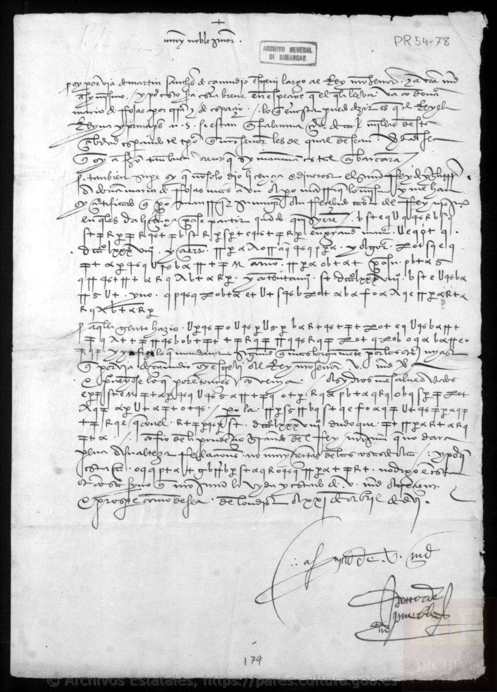
日付 1506年4月21日（「de Londres a xxj de abril de dvj」）
経路 ロンドン → フェルナンド・カトリック王の宮廷
差出人 ロドリゴ・ゴンサレス・デ・プエブラ博士（駐英大使）
受取人 ミゲル・ペレス・デ・アルマサン（国王秘書）
請求記号 AGS, Patronato Real, PTR,LEG,54,78（旧 E. Tr. Ing. leg. 5, f. 93）, f. 179
暗号 換字記号366、うち363を解読（99.2％）。ローマ数字コード3
解読の状態. 暗号は366記号中363記号を解読しました。残る3記号は注で検討します。一方、周囲の平文は略記の多い1506年のカスティーリャ語「プロセサル」体で、入手できる画像では約3分の2しか読めません。そのため確実な平文の断片だけを掲載し、それ以外は未確定（[…]）と示します。本プロジェクトの直接公開の規則に従い、ブリスの校閲前に公開しており、今後修正されることがあります。
強調：解読した暗号部分（またはコード数字）。{x}：推定読み。‹x›：未解決。[…]：未確定の平文。[x]：補読。
鍵
プエブラの暗号書簡は二つの方式を組み合わせています。普通の語は、1文字に1つ以上の記号を当てる同音換字表で1文字ずつ書かれます。友清理士が復元したプエブラの「First Cipher」です。いくつかの名前は、平文で書かれた大きなローマ数字（「Great Roman Numeral Code」）に置き換えられます。ここでは DCCCLXXXVIII（「dccc lxxx viij」）が3回現れ、イングランド王を表します。これは友清氏が『Calendar of State Papers, Spain』第1巻から作成した一覧によります。文脈も毎回これを裏付けます（「plaze al Rey de Inglaterra」「del Rey de Inglaterra y del príncipe」「el tesoro del Rey de Inglaterra」）。友清氏の表はここには転載せず、Cryptiana でご覧いただけます。
表への私たちの追加（いずれも鍵の外、別に集計）
| 記号 | 値 | 根拠 |
|---|---|---|
| ϙ（長い縦線の上の輪） | z | 友清氏の表では z の欄が空欄。「plaze」で2回、整合 |
| 輪のある k | n | 描かれていない n の異体。「acrecentamiento」 |
| 5 | i | 友清氏の i の異体「s」と同じ形 |
これらの追加は366記号中8記号に関わるだけです。追加なしでも、友清氏の表だけで355記号を直接読めます。
16の暗号部分
| 番号 | 行 | 解読 | 確度 |
|---|---|---|---|
| S01 | L01 | y de la partida | 確実 |
| S02 | L02 | desto‹stares›, y de to | 記号は確実、語の切れ目と意味は未解決（注1） |
| S03 | L02 | plaze · DCCCLXXXVIII = Rey de Inglaterra | 確実 |
| S04 | L03 | con mucha razón | 確実 |
| S05 | L03–04 | que d{e} la señora princesa | 1記号に揺れ（注2） |
| S06 | L04 | conviene | 確実 |
| S07 | L04–05 | bien y acrecentamiento | 確実 |
| S08 | L05–06 | DCCCLXXXVIII = Rey de Inglaterra · y del príncipe | 確実 |
| S09 | L06–07 | abrá quien le pedrique ningún malcontentamiento | 確実。「pedrique」＝predique（注3） |
| S10 | L08–10 | por su propio interese que la princesa me escriviese estas cartas que aquí van inclusas | 確実 |
| S11 | L12–13 | los de la señora princesa veo tan bien ataviados que más no pensé ver | 確実 |
| S12 | L13 | codicia de algunas personas | 確実 |
| S13 | L14 | es tal | 確実 |
| S14 | L14 | tes{or}o de · DCCCLXXXVIII = Rey de Inglaterra | 2記号が上行の縦線に隠れる（注4） |
| S15 | L14–15 | se contentasen | 確実 |
| S16 | L16 | va a beneficio de natura con este | 確実。成句「a beneficio de natura」（注8） |
本文
暗号部分はすべて示し、平文は確実な箇所だけを示します。
Por via de Martín Sánchez de Çamudio escreví largo al Rey nuestro señor y a vuestra merced lo mismo. […] doña María de Rojas […]. Lo que en esta quiero dezir es que el Rey de Ingla[terra] […] {tan buen viento que} […] mañana […] se embarcará. Y también dize […] doña María de Rojas […].
[…] quando quisiere, y de la partida desto‹stares›, y de todo el ‹a›resto en grand manera plaze al Rey de Inglaterra, y a esto con mucha razón. […] que d{e} la señora princesa […] conviene bien y acrecentamiento y {acatamiento} de[l] Rey de Inglaterra y del príncipe, y no abrá quien le pedrique ningún malcontentamiento. P{or} aquella gente hazia por su propio interese que la princesa me escriviese estas cartas que aquí van inclusas.
[…] los de la señora princesa veo tan bien ataviados que más no pensé ver, por la codicia de algunas personas es tal que con el tes{or}o de[l] Rey de Inglaterra dudo que se contentasen. Afío de la prudencia de vuestra merced y del Rey nuestro señor que no dará lugar […]. Y porque […] va a beneficio de natura con este. No digo otro […] la vida y estado de vuestra merced {acreciente} y prospere como desea. De Londres a xxj de abril de dvj.
宛名と受領メモ
Al muy noble señor el señor Miguell Pérez d’Almaçán, secretario y del consejo del Rey nuestro señor. ‖ Del dotor de la P[uebla], xxj de abril de dvj.
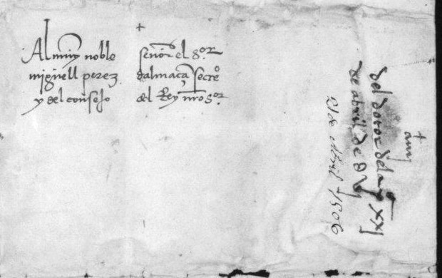
翻訳
マルティン・サンチェス・デ・サムディオに託して、国王陛下に詳しく書き送り、貴殿にも同様に書きました。[…] ドニャ・マリア・デ・ロハス […]。この手紙で申し上げたいのは、イングランド王が […] たいへん良い風が吹いたので […] 明日 […] 乗船するであろうということです。また […] とも言っています。ドニャ・マリア・デ・ロハス […]。
[…] 望むときに。そして出発 […] とその他すべては、イングランド王を大いに喜ばせており、それも大いに理由のあることです。[…] 王女殿下の側から […] はよくかない、イングランド王と王子の繁栄と{敬意}にもかなっています。そして王女に不満を吹き込む者は誰もいないでしょう。あの人々は自分たちの利益のために、王女がここに同封する手紙を私に書くよう仕向けていたのです。
[…] 王女殿下の家中の者たちは、これ以上は望めないと思うほど立派に装っているのを見ています。しかし一部の者の強欲はあまりに大きく、イングランド王の財宝をもってしても満足するかどうか疑わしいほどです。貴殿と国王陛下の賢慮を信頼しております。陛下は […] をお許しにならないでしょう。そして […] ので、この者とともに成り行き任せになっています（？）。これ以上は申しません。[…] 貴殿の命と身分が望みどおりに栄えますように。ロンドンにて、1506年4月21日。
注
- 論点1、S02（未決）。記号は確実で、文字列 destostaresideto
doelaresto を与えます。末尾は余分な a を含む「y de todo el resto」（その他すべて）、または「y de to do el arresto」（拘留のすべて）と読めます。ヘンリー7世はフィリップとフアナを3か月近くイングランドに留めていました。中央の「desto‹stares›」は未解決です。「destos reyes」も「estados」も、2記号を改めなければ読めず、私たちは記号を改めません。 - 論点2、S05（「de」と判定）。d の次の記号は、a の形と e の形の間で揺れます。文意（「que de la señora princesa … conviene bien」）とプエブラの一貫した用法から「de la」が必要で、「da la」では意味をなしません。採用：d{e}。
- 論点3、S09（筆者の語形と判定）。記号の順序は「predique」ではなく「pedrique」を与えます。これは古カスティーリャ語でよく見られる音位転換形 pedricar なので、プエブラの綴りを保ちます。意味は「説く、吹き込む」です。
- 論点4、S14（「tesoro」と判定）。「tes__o」の2記号が、上の行の文字の縦線に重なっています。記号の数、末尾の o、続く「del Rey de Inglaterra」から、「tesoro」以外は考えられません。採用：tes{or}o。
- フィリップ美公の出航。フィリップ美公とフアナはフランドルからカスティーリャへ向かう途中、1506年1月中旬に嵐でドーセット沿岸に打ち上げられました。ヘンリー7世は二人をウィンザーで迎え、条約の締結とサフォーク伯の引き渡しを得ました。二人は4月23日ごろファルマスから再び出航し、26日にア・コルーニャに着きました。その2日前に書かれた平文の「mañana se embarcará」（明日乗船する）は、おそらくこれを指します。
- キャサリン・オブ・アラゴン。「señora princesa」（王女殿下）は1502年からアーサー王子の未亡人で、のちのヘンリー8世の婚約者でした。持参金をめぐる争いのなか、ロンドンで窮乏していました。1505年末、彼女は父に、自分の不幸の原因はプエブラだと訴えています。暗号部分では大使が反論しています。王女の家中は「立派に装って」おり、不満は何をもってしても満足しない一部の強欲な者から出ている、というのです。彼は王女自身の手紙も同封しています。
- 人物。マルティン・サンチェス・デ・サムディオは前便の運び手です。ドニャ・マリア・デ・ロハスはキャサリンの家中の女性です。フェルナンドの秘書ミゲル・ペレス・デ・アルマサンは、スペイン外交に暗号を導入した人物とされます（友清氏、王立歴史アカデミーによる）。プエブラ博士は1488年からおよそ1508年まで、一時の中断を挟んでカトリック両王の駐英代表を務めました。
- S16（WAINUT 氏に従い修正）。「va a beneficio de natura con este」は記号としては確実に読めます。私たちは当初「自然の利益のために行く」と直訳していました。WAINUT 氏はこれを当時の成句「a beneficio de natura」（自然に、成り行きに任せて）と見なしており、1516年のシスネロスの秘書たちの書簡（「no se ha de dexar a beneficio de natura」）などに用例があります。私たちはこの読みを採用し、同氏の功績として記します。「va」の主語は未確定の平文の中にあります。
並行する読み
同じ2026年10月27日、寄稿者 WAINUT 氏（GitHub LcCompany）が、同じ友清氏の表を用いて同じ書簡を独自に読み、その部分的な読みをダニエル・ブルドーのリポジトリに提出しました（プルリクエスト No. 101、目録 No. 617）。この書簡についてのブルドー氏のページ。別々に作られた二つの転写は、ほとんどの部分で同じ記号列を与え、解読は S01、S02、S06–S08、S10–S11、S13、S15、S16 で一語一語一致します。「por su propio interese que la princesa me escriviese estas cartas que aquí van inclusas」「los de la señora princesa veo tan bien ataviados que más no pensé ver」「codicia de algunas personas」「va a beneficio de natura con este」などです。私たちが補読した S14 の2記号も、同氏はためらいなく読んでいます（「tesoro」）。
相違は解釈に関わります。WAINUT 氏は「ra?on」（S04）の記号を未読とし、S03 を疑わしい r 付きの「plazer」と読みます。私たちはこの記号を z と読みます（「razón」「plaze」）。S05 では、私たちの「de la」に対し同氏は「da la」と読みます。S09 では同じ記号を「pedri que」と区切り、留保つきで「pedir」を提案しています。私たちは「pedrique」（pedricar の形）を保ちます。同氏は「personas」（S12）の後に判読できない2記号を指摘していますが、私たちの転写はこれを数えていません。数字 DCCCLXXXVIII については、この書簡で C の数を確認するまで疑わしいとしていますが、値は私たちと同じで、コードブック AGS PTR leg. 52 doc. 33 によります。同氏の読みが文として整えているのは18行目から29行目だけで（リポジトリの尺度で読解率 0.82）、11行目から17行目の平文は転写していません。
私たちは同氏の読みを二つ採用し、同氏の功績として記します。「a beneficio de natura」の意味（注8）と、平文で私たちの「para aquella gente. Hazia」に代わる「por aquella gente hazia」です。縦線に横棒のある p は「por」の略記である可能性が高く、文は「aquella gente」を「hazia」の主語とします。
方法と検証
366記号を PARES の画像から一つずつ転写しました。次に、計算の前に固定した友清氏の表をそのまま適用しました。したがって書簡全体が、鍵の作成に使っていない検証用テキストになります。表は363記号（99.2％）を読みます。得られた言語の質は、プエブラのスペイン語文（ベルゲンロートが刊行した1507年の書簡）によるバイグラム得点で測りました。解読は −5.17 で、同じ表を並べ替えた1,000通りの対照の中央値 −6.99（99パーセンタイル −6.05、最大 −5.81）を大きく上回ります。参照文をスクリプトで暗号化・復号すると −5.05 です。コードで書かれたイングランド王の3回の言及は、いずれも解読が求める位置に現れます。
先行研究（2026年10月27日確認）。Cryptiana はこの書簡を First Cipher の使用例の一覧に挙げていますが、読みは示していません。『Calendar of State Papers, Spain』第1巻（1862年）とその補遺（1868年）は収録していません。ダニエル・ブルドーの目録では「open」で、確認時点では彼のリポジトリにも読みはありませんでした（上記「並行する読み」参照）。ウェブ検索でも見つかりません。私たちの知る限り、これらの部分の読みが公表されるのは初めてです。
クレジット。鍵：友清理士（Satoshi Tomokiyo）、Cryptiana、「Puebla’s First Cipher」表と Great Roman Numeral Code の一覧。掲載：ダニエル・ブルドーの目録 No. 617。画像：Ministerio de Cultura (España), Archivo General de Simancas, PTR,LEG,54,78, PARES（パブリックドメインの文書、出典明記で自由に複製可）。転写・解読・本文・翻訳・注：Brice Dudout with Claude、CC BY 4.0。
エヴェレットからクレイへ：「セア氏との会談覚書」、マドリード、1825年9月25日
マドリードに着任したばかりの合衆国公使が、フェルナンド7世の首席国務長官との会談を報告します。セアによれば、国王はアメリカの植民地を決して手放さない。エヴェレットはここで自分の判断を暗号に切り替えます。1826年、国務省はその最初の一文だけを公表し、1925年のマニングは6行を数字のまま残しました。ダニエル・ブルドー氏の符号表で読むと、エヴェレットはセアの言葉を信じていませんでした。その拒絶は「目下の特別な事情によって彼に課された言葉」にすぎない、というのです。同じ文書には、これまでだれも印刷していない暗号のページがさらに8ページ（pp. 1–6, 17–18、1,127群）あります。セアと「ロシアの手先」ウガルテの経歴、大臣の人物描写、そして拒絶の理由（対立党派とアレクサンドル皇帝）です。これらも下で読みます。
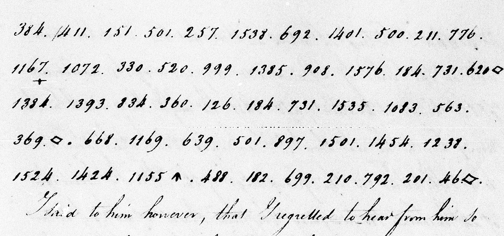
日付 1825年9月25日（第7号公文）。前日9月24日の会談の覚書
場所 マドリード → ワシントン
差出人 アレクサンダー・ヒル・エヴェレット（1790〜1847）、駐スペイン合衆国公使（1825〜1829）
受取人 ヘンリー・クレイ（1777〜1852）、ジョン・クインシー・アダムズ政権の国務長官
出典 NARA, RG 59, Despatches from U.S. Ministers to Spain, vol. 25（マイクロフィルム M31、第27巻）、画像0112〜0121（暗号：画像0119のpp. 14–15、およびpp. 1–6, 17–18）、覚書（副本）。暗号部分を除いてマニング『ラテンアメリカ諸国の独立に関する合衆国外交文書』第3巻（1925）文書1134、p. 2062に収録。
暗号 約1,600番のノメンクラトール式コード。アルファベット順のブロックを入れ替えた構成（ウェーバーの「モンロー暗号」、the = 1385）で、語全体または音節を表す。エヴェレットの記号：菱形＝複数、「v」＝語尾を削る、「+」＝異形、「^」＝語尾
キーワード Mr Zea · his real sentiments · a language imposed upon him · particular circumstances · Ayacucho · a creature of Russia · a mission to Turin · the Emperor Alexander · diss[emb]le
読解の状態. 削除された部分の解読の公表は、私たちの知るかぎり初めてです。 74群のうち72群を符号表で読み、そのうち11群は副次的または有力な値です。126は表に値がなく、ブロック内の位置と文脈から{convey}と読みます。908は確実に「or」で、私たちはこれを{[ten]or}と補います。表は手を加えずに、当時解読された1825年9月8日付公文の304群中288群を再現します（0.947。値をランダムに入れ替えた対照ではp99 0.023）。冒頭の21群は、1826年に平文で印刷された文と一語一語一致します（下線部）。
凡例：暗号部分、下線＝1826年に平文で印刷された部分、{x}＝有力な読み、[x]＝補い。原文はエヴェレット自身の英語です。
74群（行ごと）
| 行 | 数字群 | 符号表の値 | 読み |
|---|---|---|---|
| p. 14, l. 21 | 1401 834 | i | did | I | did |
| p. 14, l. 22 | 360 1394 450 1440 70 569 1293 1300 464 875 897 | not | think | ink | it | commerce / necessary | to | tent / en | er | very | ful | ly | not | think | (ink) | it | necessary | to | en | ter | very | ful | ly |
| p. 14, l. 23 | 1431 1385 680 1238 637 1190 601 666v 488 1399 | into | the | ar | gu | ment | with | — | — | upon | this | into | the | ar | gu | ment | with | Mr | Zea | upon | this |
| p. 15, l. 1 | 384 1411 151 501 257 1538 692 1401 500 211 776 | sub | ject | more | e | soon / speci | ally | as | i | was | — | ty | sub | ject | more | e | speci | ally | as | I | was | {pret} | ty |
| p. 15, l. 2 | 1167+ 1072 330 520 999 1385 908 1576 184 731 620◊ | well | see / sc | fi | ed | from | the | or | of | his | re | mark | well | {satis} | fi | ed | from | the | {[ten]or} | of | his | re | marks |
| p. 15, l. 3 | 1384 1393 834 360 126 184 731 1535 1083 563 | that | they | did | not | — | his | re | al | sen | time | that | they | did | not | {convey} | his | re | al | sen | ti |
| p. 15, l. 4 | 369◊ 668 1169 639 501 897 1501 1454 1238 | nt | and | were | mer | e | ly | a | ri / lan | gu | ments | and | were | mer | e | ly | a | {lan} | gu |
| p. 15, l. 5 | 1524 1424 1155^ 488 182 699 210 792 201 46◊ | age | im | port / pose | upon | him | at | present | by | particular | circumstance | age | im | {posed} | upon | him | at | present | by | particular | circumstances |
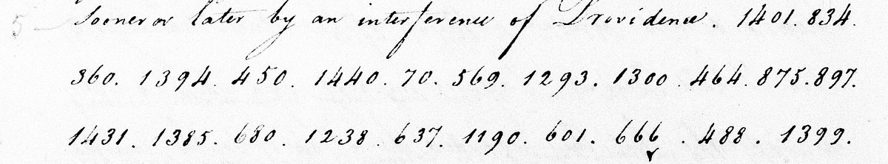
校訂本文（前後の文脈つき）
… that the cause being a just one, they had a right to suppose that they should be assisted sooner or later by an interference of Providence. I did not think it {necessary} to enter very fully into the argument with Mr Zea upon this subject, more especially as I was {pret}ty well {satis}fied from the {[ten]or} of his remarks that they did not {convey} his real sentiments, and were merely a {lan}guage im{posed} upon him at present by particular circumstances.
I said to him however, that I regretted to hear from him so decisive a declaration of the King’s resolution not to acknowledge the new States; that my Government had hoped that the battle of Ayacucho, and the recognition of England would have been considered by H. M. as settling the question …
日本語訳
「この問題についてセア氏とあまり深く議論する必要はないと考えました。とりわけ、彼の発言の{趣旨}から見て、それが彼の本心を{伝えて}おらず、目下の特別な事情によって彼に課された言葉にすぎないと、私はかなり確信していたからです。」
読解の注と歴史的注
- 背景。エヴェレットは1825年8月28日にマドリードに着き、4月27日付のクレイの訓令を携えていました。スペインに旧植民地を承認させて講和に導くこと、そしてキューバとプエルトリコをコロンビアやメキシコの征服から守ることです。9月24日の会談は、まずハバナとプエルトリコのアメリカ領事の問題、次に植民地の独立に及びました。
- セア氏：フランシスコ・デ・セア・ベルムデス（1779〜1850）。サンクトペテルブルク駐在公使、ロンドン駐在公使を経て、1824年7月から1825年10月までフェルナンド7世の首席国務長官。この会談の1か月後に罷免されます。慎重な改革派で、「使徒派」と呼ばれる超王党派の攻撃の的でした。9月8日付の公文でエヴェレットは、セアが承認を国王に提案するのは「（自分の利益のために）安全でない」と考えている、とすでに書いています。
- 「特別な事情」の中身は書かれていません。1825年8月、ジョルジュ・ベシエールの超王党派の蜂起（ブリウエガ）は、モリナ・デ・アラゴンでの彼の処刑で終わりました。エヴェレットは9月8日付の公文でこれに触れています。使徒派に攻撃される大臣が、アメリカ問題で譲歩するように見えることは難しかったでしょう（解釈であって、読みではありません）。
- アヤクチョ（1824年12月9日）：スクレが副王ラ・セルナを破り、大陸におけるスペインの支配が終わりました。イギリスは1825年初めにブエノスアイレス、コロンビア、メキシコを承認しました。スペインはキューバとプエルトリコを保持し、メキシコを承認したのは1836年になってからです。
- 1826年に削られた部分。パナマ会議への使節派遣をめぐる議論の際、覚書の抜粋が議会に送られ、印刷されました（Register of Debates、上院行政議事録、American State Papers, Foreign Relations 第5巻 第418号 p. 795）。そこには「I did not think it necessary to enter very fully into the argument with Mr. Zea.」が平文で載り、そこで終わっています。セアの誠意に関するエヴェレットの判断は削られました。副本を印刷したマニング（1925）は「six lines in cipher, without decodification」と注記しています。
- 908、{[ten]or}。画像では数字ははっきりしており、エヴェレットは別の箇所でも「or」に使っています（覚書p. 1「[real] or assumed」）。「from the or of his remarks」では意味をなさず、「tenor」が期待されます。音節ごとに綴ることの多いエヴェレット（pret-ty、satis-fi-ed、lan-gu-age）が「ten」（表では1375）を書き落としたと考えます。有力な補いですが、証明はされていません。
- 126、{convey}。表に値がありません。ブロックはアルファベット順で、118 consider、120 consul、122 contest…と続くので、126は「contest」の後、「convey」の位置にあたります。文意（「彼の本心を伝えていない」）もこれを裏づけます。「contain」や「express」は位置から除外されます。
- その他の値。70＝「necessary」（表の副次的な値で、1826年の平文が裏づけ）。450は「think」の重複（9月8日付公文にも「did not think 450 it safe」という同じ癖がある）。601 666v＝「Mr Zea」（9月8日付公文から得たエヴェレット独自の値）。211 {pret}は210 presentと212 preventの間という位置から。1072 {satis}、1454 {lan}、1155 {pos}は表の副次的またはまれな値で、文意から必要とされるものです。
方法・検証・謝辞
方法：(1) 計算の前に仮説を立てました（調査記録PROTOCOL）。ラルフ・E・ウェーバー『合衆国の外交暗号 1775〜1938』（1979）によれば、エヴェレットは1825年9月に「モンロー暗号」を使っています。(2) ダニエル・ブルドー氏がジョン・クインシー・アダムズの公文（1809〜1814）から再構成した表を、そのまま適用しました。(3) 1825年9月8日付公文（画像0061〜0064 ↗）で、照合用に取り置いた検証を行いました。マニングはこの公文について国務省の解読を印刷しています（文書1133）。304群中288群が一致（0.947。値を入れ替えた対照1,000回：p99 0.023）。(4) 目標部分の読解。(5) 独立した確認：冒頭21群は1826年に印刷された文と一語一語一致します。疑問点は値に関するもので筆跡ではないため、確認用シートは作っていません。
発見：ダニエル・ブルドー氏のカタログ、第638番 ↗。符号表はダニエル・ブルドー氏のものです（cyphersolverリポジトリ、targets/jqa ↗）。J・Q・アダムズの公文から再構成されたもので、私たちは9月8日付公文から得たエヴェレット独自の値を加えただけです。コードの同定：ラルフ・E・ウェーバー（1979）。平文と当時の解読：ウィリアム・R・マニング編『ラテンアメリカ諸国の独立に関する合衆国外交文書』第3巻、1925（Internet Archive ↗）。画像：NARA、パブリックドメイン（カタログ ↗）。先行研究の確認（2026年10月27日）：第638番（「open」）、マニング（「without decodification」）、1826年の抜粋（American State Papers ↗、「with Mr. Zea」で終わる）、Papers of Henry Clay 第4巻（1972。要約のみ、全文検索で「real sentiments」なし）、ウェブとInternet Archiveの全文検索。この部分の続きはどこにも印刷されていません。ほかの8ページ（pp. 1–6, 17–18）についても同じ日に確認しました。マニングは暗号も平文も印刷していません。1826年の抜粋は「In the course of this conversation」（p. 14）で始まり「in reply to his remarks」（p. 17）で終わります。Papers of Henry Clayは公文の要約のみです。ウェブ検索（ウガルテ、トリノ、ドゥブリル、セアの人物描写）でも何も見つかりません。画像0112〜0115と0120〜0121の切り抜き：NARA、パブリックドメイン。
マニングが印刷しなかった暗号の8ページ（pp. 1–6, 17–18）
覚書の暗号は「6行」だけではありません。NARAに残る副本には、さらに8ページ分の暗号があります。p. 1の末尾、p. 2の下部、p. 3の2か所、全面が暗号のpp. 4–5、p. 6の上部、そしてp. 17の末尾とp. 18の上部です。マニングはこれらのページを、暗号も周囲の平文も、一切印刷していません。エヴェレットはここに、平文では書けないことを暗号で記しました。セアがどのように政府に入り、ウガルテを遠ざけたか。大臣の容姿と人柄。そしてpp. 17–18では、セアが新国家の承認を拒む理由です。私たちの知るかぎり、これらのページが読まれるのは初めてです。
読解の状態. 1,127群のうち1,111群を読解（0.986）。文意による読み[x]を除くと0.929。未解決16群。どのページも0.96を超えます。ダニエル・ブルドー氏の表をそのまま適用し、エヴェレット独自の値を上乗せしました。各値には根拠（アルファベット順ブロック内の位置と文意）があり、独立した文脈で同じ意味に繰り返し現れます。727＝rather（3回）、1201＝g（5回）、557＝thro（2回）、948＝Russia（4回）など。限界。照合用に取り置いた検証は第1部のもの（1825年9月8日付公文：0.947）です。これらのページには当時の完全な解読文がありません。部分的な鉛筆の書き込みだけがあります。p. 4の下に「Decyphered」、p. 5に別の手で5語（1327 1392の上に「besides these」、829に「des」、1315に「because」、213に「the」、1355に「1535?」）。いずれも私たちの読みと一致します。
凡例：暗号部分、灰色の文字＝エヴェレットの平文、{x}＝有力な読み（表内の位置と文意）、[x]＝文意による読み、‹n›＝未解決の群（番号）。エヴェレットの記号：◊＝複数、「v」＝1文字削る（vv、vvvは2文字、3文字）、「+」＝文字の重複または異形、「^」＝語尾-ed。原文はエヴェレット自身の英語です。
p. 1 p. 2 p. 3 p. 4 p. 5 p. 6 p. 17 p. 18
ページ 1 (画像 0112 · 84 群, 84 読解)
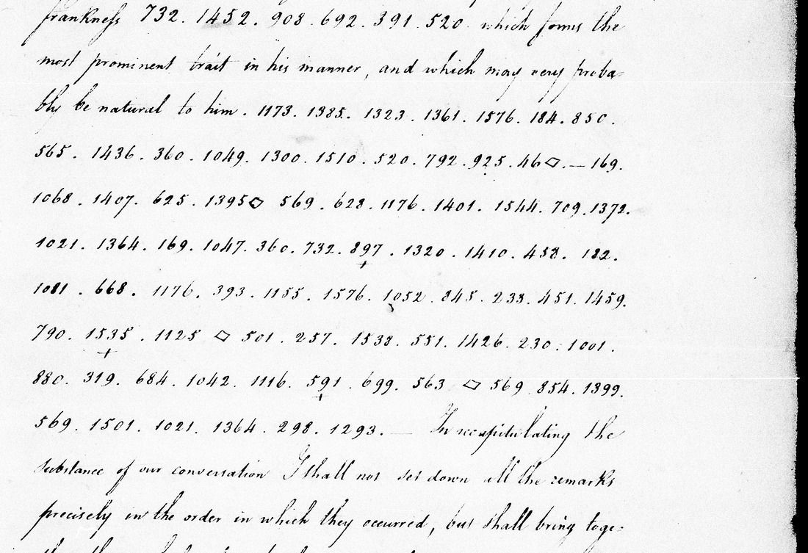
校訂本文
I should hardly have thought it necessary or even suitable at the first interview I had with Mr Zea, to turn the conversation myself upon subjects of much political interest: and should naturally have waited untill a longer acquaintance brought on more freedom of communication. But after a few remarks had passed upon indifferent topics the Minister introduced the subject of our relations and I had of course no reason for wishing to avoid it. In doing this he acted in conformity with the frankness {real} or assumed which forms the most prominent trait in his manner, and which may very probably be natural to him, when the {ben}{t} of his {dispos}ition is not counteracted by other circumstances. — He said [many] {thing}s to [me] which I am [qui]te certain he could not {real}ly bel-ie-[ve] himself, and which [I] sup{pose} of course {di}{sim}ulations; but all persons, {e}[speci]ally those in pub[lic] life, are compe{lled} at times to do this to a certain extent. — In recapitulating the substance of our conversation I shall not set down all the remarks precisely in the order in which they occurred, but shall bring together those which relate to the same subject: commencing with a short account of Mr Zea’s history, character and personal appearance.
日本語訳
……その率直さは、本物であれ装ったものであれ、彼の物腰のいちばん目立つ特徴で、ほかの事情に妨げられなければ、おそらく生来の気質なのでしょう。彼は、自分でも信じているはずのないことを私にたくさん語りました。もちろん偽装だと考えます。しかし、だれでも、とりわけ公職にある者は、ある程度はそうせざるをえないものです。
| 行 | 数字群 | 群ごとの読み |
|---|---|---|
| 1 | 732 1452 908 692 391 520 | {read} | ll | or | as | sum | ed |
| 2 | 1173 1385 1323 1361 1576 184 850 | when | the | {ben} | {t} | of | his | {dispos} |
| 3 | 565 1436 360 1049 1300 1510 520 792 925 46◊ — | tion | is | not | Count | er | act | ed | by | other | circumstance·◊ | — |
| 4 | 169 1068 1407 625 1395◊ 569 623 1176 1401 1544 709 1372 | he | sa | id | [many] | {thing}·◊ | to | [me] | which | i | am | [qui] | te |
| 5 | 1021 1364 169 1047 360 732 897+ 1320 1410 433 182 | cer | tain | he | could | not | {read} | ly·+ | bel | ie | [ve] | him |
| 6 | 1081 668 1176 393 1155 1576 1052 843 233 451 1459 | self | and | which | sup | {pose} | of | course | {di} | {sim} | u | lations |
| 7 | 790 1535+ 1125◊ 501 257 1538 551 1426 230 1001 | but | al·+ | person·◊ | {e} | [speci] | ally | those | in | pub | [lic] |
| 8 | 880 319 684 1042 1116 591+ 699 563◊ 569 854 1399 | li | fe | are | com | pe | {lled}·+ | at | time·◊ | to | do | this |
| 9 | 569 1501 1021 1364 298 1293 | to | a | cer | tain | ex | tent |
群ごとの読み：各群の値（表またはエヴェレット独自の値）。音節をつないで語にする前の形です。
ページ 2 (画像 0113 · 52 群, 52 読解)
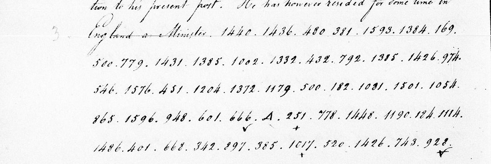
校訂本文
This gentleman was attached not many years ago to a commercial house at Cadiz. He went to St Petersburgh on private business and without any public character whatever, about the close of the year 1810. In the course of the next year he was attached to the Consulate of Spain at that place. The consul died about that time and there being also no regular diplomatic representation of H. C. M. at the Russian Court, Mr Zea was called upon to act as Consul and Chargé d’affaires. At this time he was personally known to the President, who was then employed on his mission to Russia. Mr Zea while in this situation obtained from the Emperor an acknowledgement of the Constitutional Government and negotiated a treaty between Russia and Spain. I am not precisely acquainted with all the details of his history from the time of his leaving Russia untill his elevation to his present post. He has however resided for some time in England as Minister. It is under-st[ood] that he was {brought} into the ca{bi}{net} by the influence of U{gar}te, who was him[self] a {cre}{ature} [of] [Russia]. {Mr} {Zea} however [soon] {bro}{ke} with his {pat}ro[n] and {fin}ally succeeded in rem{ov}-
日本語訳
［平文：セアはカディスの商社に勤め、1810年末にサンクトペテルブルクへ渡り、スペイン領事館に入って領事兼代理公使となった。当時、ロシアに使節として赴いていた大統領（アダムズ）と面識があった。皇帝から立憲政府の承認を得て、条約を交渉した。その後、イギリスで公使を務めた。］彼はウガルテの影響で内閣に入ったと言われています。ウガルテ自身はロシアの手先でした。しかしセア氏はまもなくこの後ろ盾と決裂し、ついに彼を……
| 行 | 数字群 | 群ごとの読み |
|---|---|---|
| 1 | 1440 1436 480 381 1593 1384 169 | it | is | under | st | [ood] | that | he |
| 2 | 500 779 1431 1385 1002 1332 432 792 1385 1426 974 | was | {brought} | into | the | ca | {bi} | {net} | by | the | in | flu |
| 3 | 546 1576 451 1204 1372 1179 500 182 1031 1501 1054 | ence | of | u | {gar} | te | who | was | him | [self] | a | {cre} |
| 4 | 865 1596 948 601 666v 4 251+ 778 1448 1190 184 1114 | {ature} | [of] | [Russia] | {Mr} | {Zea}·v | however | [soon]·+ | {bro} | {ke} | with | his | {pat} |
| 5 | 1486 401 668 342 897 385 1017+ 520 1426 743 928v | ro | [n] | and | {fin} | ly | suc | ced·+ | ed | in | rem | {ov}·v |
群ごとの読み：各群の値（表またはエヴェレット独自の値）。音節をつないで語にする前の形です。
ページ 3 (画像 0113 · 135 群, 132 読解)
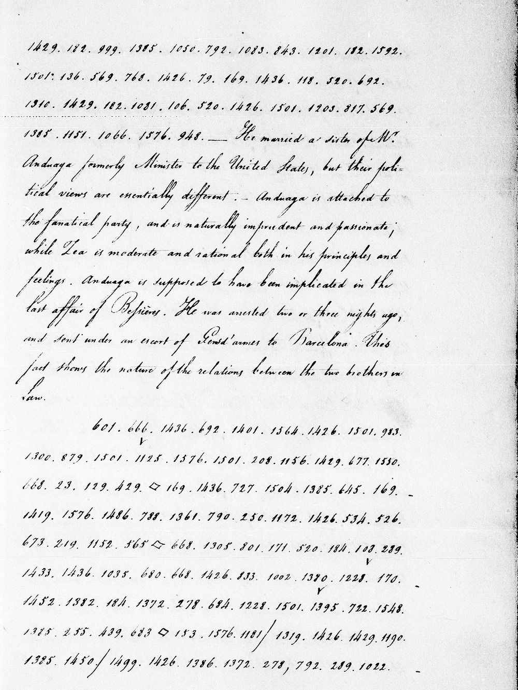
校訂本文
-ing him from the country by sen[din][g] him on a mission to {Tur}in. ‹79› he is considered as being himself {commit}ted in a ‹1203› {degree} to the policy of [Russia]. — He married a sister of Mr Anduaga formerly Minister to the United States, but their political views are essentially different. — Anduaga is attached to the fanatical party, and is naturally imprudent and passionate; while Zea is moderate and rational both in his principles and feelings. Anduaga is supposed to have been implicated in the last affair of Bessières. He was arrested two or three nights ago, and sent under an escort of Gens d’armes to Barcelona. This fact shows the nature of the relations between the two brothers in law. {Mr} {Zea} is, as I ‹1364› in a former letter, a person of a pre{possess}ing {appear}ance and agreeable manners. He is {rather} [above] the {mid}dle he[ight], of ro{bus}{t} but somewhat inel{eg}ant pro{por}tions, and bald headed; his {compl}exion is clear and indicates good [he][al]{th}; his te{eth} are good, a {thing} {rar}e among the Spani[ard]s, most of whom, beginning with the King, ruin their te{eth} by exces-
日本語訳
……トリノへの使節として国外に遠ざけることに成功しました。‹…›セア自身も、‹…›程度にはロシアの政策に深く関わっていると見られています。［平文：セアはかつて駐米公使だったアンドゥアガの姉妹と結婚している。アンドゥアガは「狂信派」に属し、先のベシエール事件に関わったとされ、二、三日前の夜に逮捕され、憲兵の護送でバルセロナへ送られた。］セア氏は、以前の書簡で‹…›とおり、好ましい風采と感じのよい物腰の人物です。背は中背よりやや高く、がっしりしてはいるものの少し不格好な体つきで、頭ははげています。顔色は明るく健康そうで、歯も良好です。これはスペイン人には珍しいことで、国王をはじめほとんどの者は、過度の喫煙で歯を……
| 行 | 数字群 | 群ごとの読み |
|---|---|---|
| 1 | 1429 182 999 1385 1050 792 1083 843 1201 182 1592 | ing | him | from | the | country | by | sen | [din] | [g] | him | on |
| 2 | 1501 136 569 768 1426 79 169 1436 118 520 692 | a | mission | to | {Tur} | in | ‹79› | he | is | consider | ed | as |
| 3 | 1310 1429 182 1081 106 520 1426 1501 1203 817 569 | be | ing | him | self | {commit} | ed | in | a | ‹1203› | {degree} | to |
| 4 | 1385 1151 1066 1576 948 | the | poli | cy | of | [Russia] |
| 5 | 601 666v 1436 692 1401 1364 1426 1501 983 | {Mr} | {Zea}·v | is | as | i | ‹1364› | in | a | form |
| 6 | 1300 879 1501 1125 1576 1501 208 1156 1429 677 1550 | er | letter | a | person | of | a | pre | {possess} | ing | {appears} | ance |
| 7 | 668 23 129 429◊ 169 1436 727 1504 1385 645 169 | and | agreeable | man | ner·◊ | he | is | {rather} | [above] | the | {mid} | he |
| 8 | 1419 1576 1486 788 1361 790 250 1172 1426 534 526 | [ight] | of | ro | {bus} | {t} | but | some | what | in | el | {eg} |
| 9 | 673 219 1152 565◊ 668 1305 801 171 520 184 108v 289 | ant | pro | {por} | tion·◊ | and | bal | d | hea | ed | his | {comply}·v | ex |
| 10 | 1433 1436 1035 680 668 1426 833 1002 1380v 1228 170 | ion | is | cle | ar | and | in | di | ca | test·v | good | [he] |
| 11 | 1452 1382 184 1372 278 684 1228 1501 1395 722 1548 | [al] | {th} | his | te | {eth} | are | good | a | {thing} | {rar} | among |
| 12 | 1385 255 439 683◊ 153 1576 1181 / 1319 1426 1429 1190 | the | spa | ni | [ard]·◊ | most | of | whom | / | begin | in | ing | with |
| 13 | 1385 1450 / 1499 1426 1386 1372 278 792 289 1022 | the | king | / | ru | in | their | te | {eth} | by | ex | ces |
群ごとの読み：各群の値（表またはエヴェレット独自の値）。音節をつないで語にする前の形です。
ページ 4 (画像 0114 · 242 群, 235 読解)
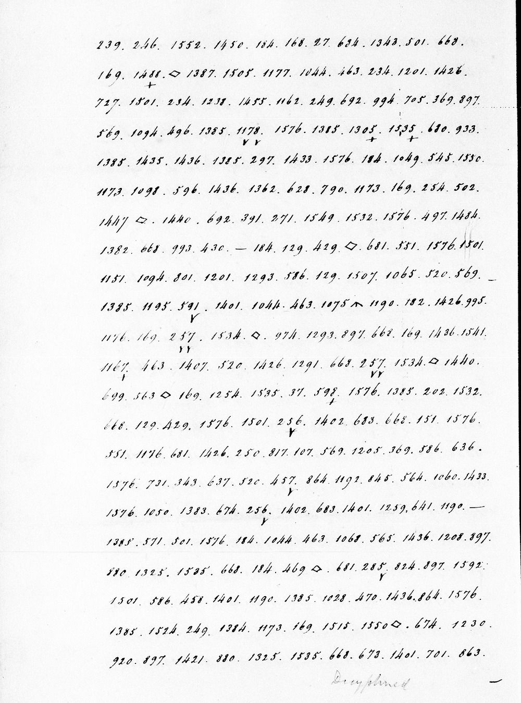
校訂本文
-{sive} [sm][o]king. His {ey}es ‹27› ‹634› ‹1343› ‹501›, and he {rol}ls them about while conversin[g], in {rather} a singular {way}, so as frequently to shew the {white}s of the ball all ar{ound} the iris. The [express]ion of his countenance when silent is tame, but when he speaks it assumes an {air} of wa{rm}{th} and [frank]{ness}. — His manners are those of a polished [g]entleman accustomed to the {wor}ld. I conversed with him in French, which he speaks fluently, and he is also well ver[s]ed in English, and speaks it at times. He has altogether less of the peculiar {air} and manner of a Span[i][ard], and more of those which are in some {degree} common to gentlemen of re{fine}ment ‹520 457v 864› without distinction of country, than any Span[i][ard] I have met with. — The {ton}{e} of his conversation is generally li[ber]al, and his views are {evi}{dent}ly on a le-ve-[l] with the ci{vil}ization of the age; so that when he {adv}ances any {gr}{oss}ly illi[ber]al and anti{qu}{ated}
日本語訳
……台なしにしています。彼の目は‹…›、話しながら奇妙な具合に目玉を回すので、虹彩のまわりの白目がしばしば見えます。黙っているときの表情は生気に乏しいのですが、話し出すと温かさと率直さを帯びます。物腰は世慣れた洗練された紳士のものです。私は彼とフランス語で話しました。彼はフランス語を流暢に話し、英語にも通じていて、ときには英語も話します。全体として、彼にはスペイン人特有の雰囲気や物腰が少なく、国を問わず洗練された‹…›紳士にある程度共通するものが多いのです。これまで会ったどのスペイン人よりもそうです。会話の調子はおおむね自由主義的で、見解は明らかに時代の文明の水準にあります。ですから、彼がひどく反自由主義的で時代遅れの……
| 行 | 数字群 | 群ごとの読み |
|---|---|---|
| 1 | 239 246 1552 1450 184 168 27 634 1343 501 668 | {sive} | [sm] | [o] | king | his | {ey} | ‹27› | ‹634› | ‹1343› | ‹501› | and |
| 2 | 169 1488+◊ 1387 1505 1177 1044 463 234 1201 1426 | he | {rol}·+◊ | them | about | while | con | ver | sin | [g] | in |
| 3 | 727 1501 234 1238 1455 1162 249 692 994 705 369 897 | {rather} | a | sin | gu | lar | {way} | so | as | free | {quen} | nt | ly |
| 4 | 569 1094 496 1385 1178vv 1576 1385 1305+ 1535+ 680 933 | to | she | w | the | {white}·vv | of | the | bal·+ | al·+ | ar | {ound} |
| 5 | 1385 1435 1436 1385 297 1433 1576 184 1049 545 1550 | the | ir | is | the | [express] | ion | of | his | Count | en | ance |
| 6 | 1173 1098 596 1436 1362 628 790 1173 169 254 502 | when | si | lent | is | ta | me | but | when | he | sp | ea |
| 7 | 1447◊ 1440 692 391 271 1549 1532 1576 497 1484 | k·◊ | it | as | sum | es | an | {air} | of | wa | {rm} |
| 8 | 1382 668 993 430 — 184 129 429◊ 681 551 1576 1501 | {th} | and | [frank] | {ness} | — | his | man | ner·◊ | are | those | of | a |
| 9 | 1151 1094 801 1201 1293 586 129 1507 1065 520 569 | poli | she | d | [g] | tent | le | man | ac | cus | ed | to |
| 10 | 1385 1195 591v 1401 1044 463 1075^ 1190 182 1426 995 | the | {wor} | {lled}·v | i | con | ver | {se}·^ | with | him | in | french |
| 11 | 1176 169 257vv 1534◊ 974 1293 897 668 169 1436 1541 | which | he | [speci]·vv | ak·◊ | flu | tent | ly | and | he | is | also |
| 12 | 1167+ 463 1407 520 1426 1291 668 257vv 1534◊ 1440 | well·+ | ver | [s] | ed | in | English | and | [speci]·vv | ak·◊ | it |
| 13 | 699 563◊ 169 1254 1535 37 598+ 1576 1385 202 1532 | at | time·◊ | he | has | al | together | less·+ | of | the | peculiar | {air} |
| 14 | 668 129 429 1576 1501 256v 1402 683 668 151 1576 | and | man | ner | of | a | Spain·v | [i] | [ard] | and | more | of |
| 15 | 551 1176 681 1426 250 817 107 569 1205 369 586 636 | those | which | are | in | some | {degree} | common | to | ge | nt | le | men |
| 16 | 1576 731 343 637 520 457v 864 1192 845 564 1060 1433 | of | re | {fine} | ment | ‹520› | ‹457›·v | ‹864› | without | dis | tin | ct | ion |
| 17 | 1576 1050 1383 674 256v 1402 683 1401 1259 641 1190 — | of | country | than | any | Spain·v | [i] | [ard] | i | have | meet | with | — |
| 18 | 1385 571 501 1576 184 1044 463 1068 565 1436 1208 897 | the | {ton} | {e} | of | his | con | ver | sa | tion | is | general | ly |
| 19 | 880 1325 1535 668 184 469◊ 681 285v 824 897 1592 | li | [ber] | al | and | his | views·◊ | are | {evi}·v | {dent} | ly | on |
| 20 | 1501 586 458 1401 1190 1385 1028 470 1436 864 1576 | a | le | ve | [l] | with | the | ci | {vil} | is | ation | of |
| 21 | 1385 1524 249 1384 1173 169 1515 1550◊ 674 1230 | the | age | so | that | when | he | {adv} | ance·◊ | any | {gr} |
| 22 | 920 897 1421 880 1325 1535 668 673 1401 701 863 | {oss} | ly | ill | li | [ber] | al | and | ant | i | {qu} | {ated} |
群ごとの読み：各群の値（表またはエヴェレット独自の値）。音節をつないで語にする前の形です。
ページ 5 (画像 0114 · 239 群, 237 読解)
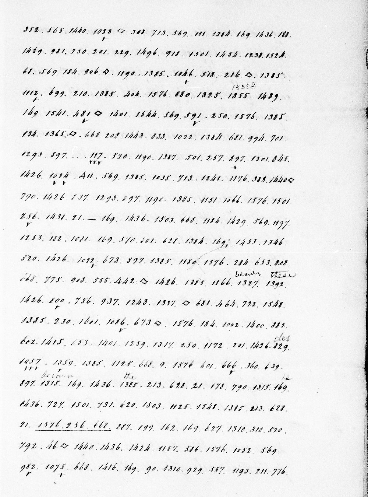
校訂本文
notion, it seems {fai}{r} to conclude that he is holding, for some particular pu{rp}{ose}, a {lan}guage foreign to his opinions, with the cor-rect {principles}; the ‹1112+› at present the ‹404› of li[ber][al]{ism}. He also {unite}s, I am told, some of the mistakes and prejudices that are frequently {connect}ed with them, {e}[speci]ally a disinclination to the cle{r}{gy}, which {su}its but indifferently with the policy of a Spanish Minister. — He is able and willing to {work} {hard} himself; he told me that he la[bour]ed incessantly the whole of ever[y] day, and two or {three} {night}s in the {week} {besides}. These in[dus]{tri}ous ha{bit}s are very {rar}e among the pub[lic] servants of his Catho[lic] Majesty. I have been somewhat particular in {des}[cri][bing] the person and character of {Mr} {Zea}, not merely because he is the prime Minister here, but because he is {rather} a re{mark}able person among the prime Ministers of Spain and Europe. How much he may be favored by circumstances it is im{poss}ible of course to foresee, and if he should be over{thro}{wn} {pret}ty
日本語訳
……考えを口にするときは、何か特別な目的のために、自分の意見とは違う言葉を使っていると考えてよいでしょう。彼の意見は正しい原則に立つものです。‹…›目下‹…›自由主義の‹…›。聞くところでは、こうした意見にしばしば伴う誤りや偏見の一部も共有しており、とくに聖職者を嫌っています。これはスペインの大臣の政策とはあまり相いれません。彼は自ら懸命に働くことができ、またそうしています。毎日一日中休みなく働き、さらに週に二、三晩も働くと私に言いました。こうした勤勉さは、カトリック王陛下に仕える官吏のあいだではきわめてまれです。私がセア氏の人柄と性格をやや詳しく記したのは、彼がここの首相だからというだけでなく、スペインとヨーロッパの首相たちの中でかなり傑出した人物だからです。状況がどこまで彼に味方するかは、もちろん予見できません。もし彼がかなり……
| 行 | 数字群 | 群ごとの読み |
|---|---|---|
| 1 | 352 565 1440 1083+◊ 308 713 569 111 1384 169 1436 188 | no | tion | it | sen·+◊ | {fai} | {r} | to | conclude | that | he | is | hold |
| 2 | 1429 981 250 201 229 1496 918 1501 1454 1238 1524 | ing | for | some | particular | pu | {rp} | {ose} | a | {lan} | gu | age |
| 3 | 68 569 184 906◊ 1190 1385 1046+ 518 216◊ 1385 | foreign | to | his | opinion·◊ | with | the | cor·+ | rect | {principles}·◊ | the |
| 4 | 1112+ 699 210 1385 404 1576 880 1325 1355 1439 | ‹1112›·+ | at | present | the | ‹404› | of | li | [ber] | [al] | {ism} |
| 5 | 169 1541 481v◊ 1401 1544 569 591v 250 1576 1385 | he | also | {unite}·v◊ | i | am | to | {lled}·v | some | of | the |
| 6 | 134 1365◊ 668 208 1443 833 1022 1384 681 994 701 | mis | take·◊ | and | pre | ju | di | ces | that | are | free | {qu} |
| 7 | 1293 897 117vvv 520 1190 1387 501 257 897+ 1501 845 | tent | ly | {connect}·vvv | ed | with | them | {e} | [speci] | ly·+ | a | dis |
| 8 | 1426 1034vv 411 569 1385 1035 713 1241 1176 383 1440◊ | in | claims·vv | nation | to | the | cle | {r} | {gy} | which | {su} | it·◊ |
| 9 | 790 1426 837 1293 897 1190 1385 1151 1066 1576 1501 | but | in | differ | tent | ly | with | the | poli | cy | of | a |
| 10 | 256v 1438 21 — 169 1436 1503 668 1186 1429 569 1197 | Spain·v | ish | Minister | — | he | is | able | and | will | ing | to | {work} |
| 11 | 1253 182 1081 169 570 801 628 1384 169 1453 1346 | {hard} | him | self | he | tol | d | me | that | he | la | [bour] |
| 12 | 520 1426 1022+ 673 897 1385 1180 1576 284 653 808 | ed | in | ces·+ | ant | ly | the | whole | of | ever | [y] | day |
| 13 | 668 775 908 555 442◊ 1426 1385 1166 1327 1392 | and | two | or | {three} | {night}·◊ | in | the | {week} | {besides} | these |
| 14 | 1426 800v 756 937 1243 1337◊ 681 464 722 1548 | in | [dus]·v | {tri} | ous | ha | {bit}·◊ | are | very | {rar} | among |
| 15 | 1385 230 1601 1086v 673◊ 1576 184 1002 1400 882 | the | pub | [lic] | serve·v | ant·◊ | of | his | ca | tho | [lic] |
| 16 | 602 1415 653 1401 1259 1317 250 1172 201 1426 829 | ma | jes | ty | i | have | been | some | what | particular | in | {des} |
| 17 | 1057vvv 1359v 1385 1125 668 9 1576 601 666v 360 639 | [cri]·vvv | [bing]·v | the | person | and | character | of | {Mr} | {Zea}·v | not | mer |
| 18 | 897 1315 169 1436 1385 213 628 21 178 790 1315 169 | ly | because | he | is | the | pri | me | Minister | here | but | because | he |
| 19 | 1436 727 1501 731 620 1503 1125 1548 1385 213 628 | is | {rather} | a | re | {mark} | able | person | among | the | pri | me |
| 20 | 21 1576 256 668 287 199 162 169 627 1310 318 520 | Minister | of | Spain | and | Europe | how | much | he | may | be | favor | ed |
| 21 | 792 46◊ 1440 1436 1424 1157 586 1576 1052 569 | by | circumstance·◊ | it | is | im | {poss} | le | of | course | to |
| 22 | 982v 1075+ 668 1416 169 90 1310 929 557 1193 211 776 | force·v | {se}·+ | and | if | he | should | be | over | {thro} | {wn} | {pret} | ty |
群ごとの読み：各群の値（表またはエヴェレット独自の値）。音節をつないで語にする前の形です。
ページ 6 (画像 0115 · 94 群, 91 読解)
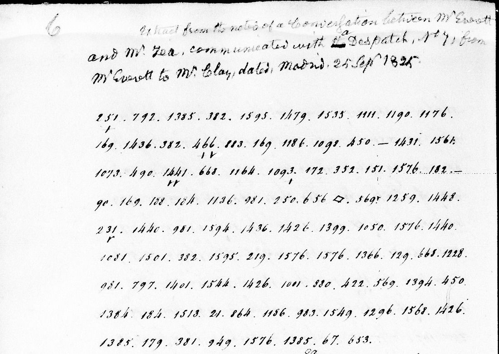
校訂本文
[soon] by the strong {riv}al {party} with which he is str[ugg]{ling}, he will sink into ob{sc}ur{ity}, and we shall {hear} no more of him. — Should he hold his place for some years — to have {ke}pt it for one is in this country of itself a strong proof of ‹1366› ‹129› and good for[tune] — I am inc[li]ned to think that his administration will form an epoc[h] in the [hi]story of the ‹67›ty. I waited upon Mr Z. by appointment at his office, which is a wing of the palace, where he also resides with his family. After an exchange of compliments and some remarks on indifferent topics, he directed the conversation towards the subject of our relations by enquiring particularly about Mr Nelson of whom he spoke in terms of high respect and esteem. …
日本語訳
……早く、彼が戦っている強力な対立党派に倒されれば、無名に沈み、彼の名を聞くこともなくなるでしょう。もし数年その地位を保てば（この国では一年保っただけでも、‹…›と幸運の強い証拠です）、彼の政権は‹…›の歴史に一時代を画すると私は考えます。［平文：宮殿の一翼にあるセアの執務室での最初の会見の記述が始まる。］
| 行 | 数字群 | 群ごとの読み |
|---|---|---|
| 1 | 251+ 792 1385 382 1595 1479 1535 1111 1190 1176 | [soon]·+ | by | the | str | ong | {riv} | al | {party} | with | which |
| 2 | 169 1436 382 466+v 883 169 1186 1098 450 — 1431 1561 | he | is | str | [ugg]·+v | {ling} | he | will | si | {ink} | — | into | ob |
| 3 | 1073 490 1441vv 668 1164 1093+ 172 352 151 1576 182 — | {sc} | ur | {ity}·vv | and | we | shall·+ | {hear} | no | more | of | him | — |
| 4 | 90 169 188 184 1136 981 250 656◊ 569v 1259 1448 | should | he | hold | his | place | for | some | tyear·◊ | to·v | have | {ke} |
| 5 | 231v 1440 981 1594 1436 1426 1399 1050 1576 1440 | put·v | it | for | one | is | in | this | country | of | it |
| 6 | 1081 1501 382 1595 219 1576 1576 1366 129 668 1228 | self | a | str | ong | pro | of | of | ‹1366› | ‹129› | and | good |
| 7 | 981 797 1401 1544 1426 1001 330 422 569 1394 450 | for | [tune] | i | am | in | c | [li] | ned | to | think | {ink} |
| 8 | 1384 184 1513 21 864 1186 983 1549 1296 1568 1426 | that | his | ad | Minister | ation | will | form | an | ep | oc | in |
| 9 | 1385 179 381 949 1576 1385 67 653 | the | [hi] | st | ry | of | the | ‹67› | ty |
群ごとの読み：各群の値（表またはエヴェレット独自の値）。音節をつないで語にする前の形です。
ページ 17 (画像 0120 · 151 群, 150 読解)
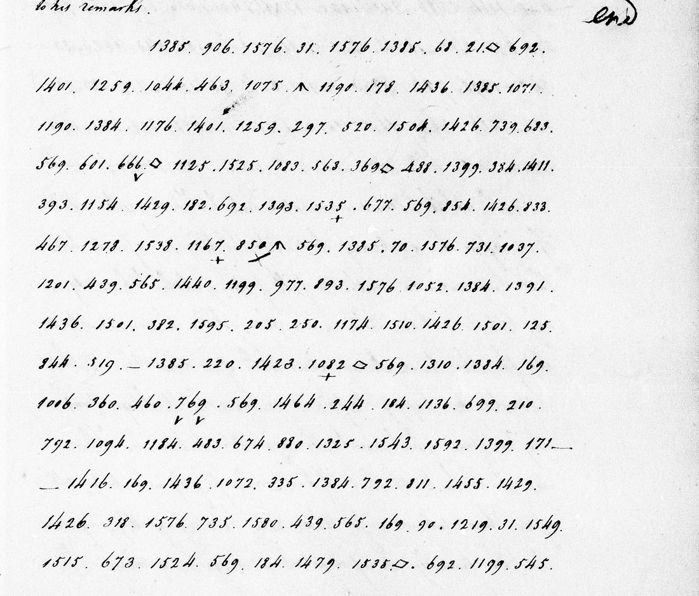
校訂本文
… I told him that I was not called upon to advise His Majesty’s Ministers upon this or any other question, and that what I had said had been thrown out incidentally in reply to his remarks. The opinion of such of the foreign Ministers as I have conversed with here is the same with that which I have [express]ed [above] in regard to {Mr} {Zea}’s person[al] sentiments upon this subject. Supposing him, as they all {appear} to do, individually well {dispos}ed to the {measure} of recognition, it would follow of course that there is a strong power somewhere acting in a {contrary} di{rect}ion. — The probab[ility] seems to be that he cannot venture to ri[sk] his place at present by she{wi}[ng] any li[ber]‹1543› on this head; — if he is {satis}{fied} that by declaring in favor of recognition he should give such an {adv}antage to his {riv}als as would [enable]
日本語訳
私がここで話した外国公使たちの意見は、この問題に関するセア氏の個人的な心情について、先に述べた私の意見と同じです。彼らがみな考えているように、セアが個人としては承認という措置に好意的だとすれば、当然、どこかに反対方向に働く強い力があることになります。最もありそうなのは、彼がこの点でいささかでも‹自由主義›を示して、目下の地位を危険にさらす勇気がない、ということです。承認に賛成すると表明すれば、対立者たちに有利な立場を与え、彼らが……
| 行 | 数字群 | 群ごとの読み |
|---|---|---|
| 1 | 1385 906 1576 31 1576 1385 68 21◊ 692 | the | opinion | of | such | of | the | foreign | Minister·◊ | as |
| 2 | 1401 1259 1044 463 1075^ 1190 178 1436 1385 1071 | i | have | con | ver | {se}·^ | with | here | is | the | same |
| 3 | 1190 1384 1176 1401 1259 297 520 1504 1426 739 683 | with | that | which | i | have | [express] | ed | [above] | in | re | gard |
| 4 | 569 601 666v◊ 1125 1525 1083 563 369◊ 488 1399 384 1411 | to | {Mr} | {Zea}·v◊ | person | [al] | sen | time | nt·◊ | upon | this | sub | ject |
| 5 | 393 1154 1429 182 692 1393 1535+ 677 569 854 1426 833 | sup | pos | ing | him | as | they | al·+ | {appears} | to | do | in | di |
| 6 | 467 1278 1538 1167+ 850x^ 569 1385 70 1576 731 1037 | vi | du | ally | well·+ | {dispos}·^ | to | the | {measure} | of | re | co |
| 7 | 1201 439 565 1440 1199 977 893 1576 1052 1384 1391 | [g] | ni | tion | it | would | fol | low | of | course | that | there |
| 8 | 1436 1501 382 1595 205 250 1174 1510 1426 1501 125 | is | a | str | ong | power | some | where | act | in | a | {contrary} |
| 9 | 844 519 — 1385 220 1423 1082+◊ 569 1310 1384 169 | di | {rect} | — | the | probab | [ility] | seem·+◊ | to | be | that | he |
| 10 | 1006 360 460 769vv 569 1464 244 184 1136 699 210 | can | not | ven | tunes·vv | to | ri | [sk] | his | place | at | present |
| 11 | 792 1094 1184 483 674 880 1325 1543 1592 1399 171 — | by | she | {wi} | [ng] | any | li | [ber] | ‹1543› | on | this | hea | — |
| 12 | 1416 169 1436 1072 335 1384 792 811 1455 1429 | if | he | is | {satis} | {fied} | that | by | de | lar | ing |
| 13 | 1426 318 1576 735 1580 439 565 169 90 1219 31 1549 | in | favor | of | re | cog | ni | tion | he | should | give | such | an |
| 14 | 1515 673 1524 569 184 1479 1535◊ 692 1199 545 | {adv} | ant | age | to | his | {riv} | al·◊ | as | would | [enable] |
群ごとの読み：各群の値（表またはエヴェレット独自の値）。音節をつないで語にする前の形です。
ページ 18 (画像 0121 · 130 群, 130 読解)
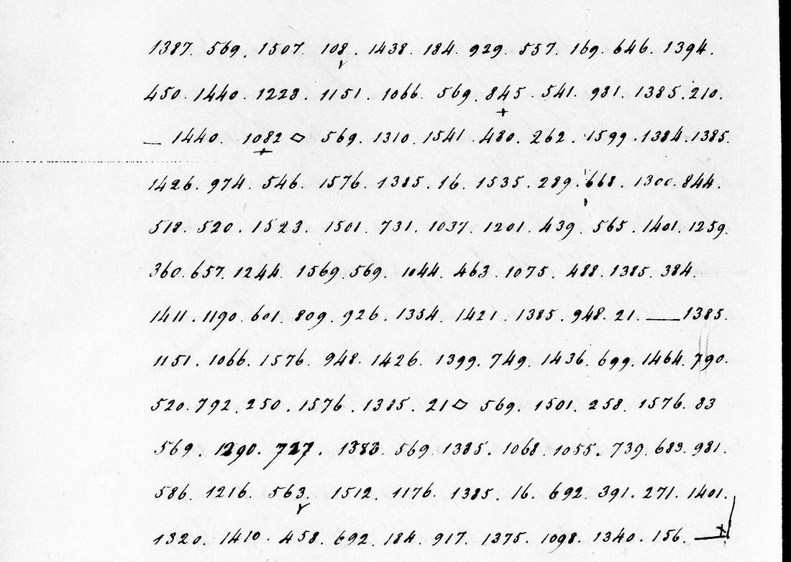
校訂本文
them to accomplish his over{thro}[w], he might think it good policy to diss{emb}[le] for the present. — It seems to be also under-st[ood] that the influence of the Emperor Alexander [is] directed against a recognition. I have not yet had occasion to converse upon the subject with {Mr} de {Ou}{br}ill, the [Russian] Minister. — The policy of [Russia] in this respect is attributed by some of the Ministers to a {spi}[rit] of opposition to England {rather} than to the sa{cred} regard for legitim{acy} which the Emperor assumes, I believe, as his {os}tensible {motive}. In the second conversation which I had with Mr Zea, after having been presented to the King, I informed him that I was entrusted with two full powers, which I was ready at any time to exhibit to him, one, to negotiate a commercial treaty, and the other to conclude a convention of indemnities …
日本語訳
……彼を倒すことを可能にしてしまうと確信しているなら、当面は本心を隠すのが得策だと考えるかもしれません。また、アレクサンドル皇帝の影響力が承認に反対する方向に働いているとも理解されています。この件について、ロシア公使ドゥブリル氏とはまだ話す機会がありません。ロシアのこの方面の政策を、一部の公使は、皇帝が表向きの動機として掲げている正統性への神聖な敬意よりも、むしろイギリスへの対抗心によるものだと見ています。
| 行 | 数字群 | 群ごとの読み |
|---|---|---|
| 1 | 1387 569 1507 108v 1438 184 929 557 169 646 1394 | them | to | ac | {comply}·v | ish | his | over | {thro} | he | might | think |
| 2 | 450 1440 1228 1151 1066 569 845+ 541 981 1385 210 | {ink} | it | good | poli | cy | to | dis·+ | {emb} | for | the | present |
| 3 | 1426 974 546 1576 1385 16 1535 289 668 1300 844 | in | flu | ence | of | the | emperor | al | ex | and | er | di |
| 4 | 518 520 1523 1501 731 1037 1201 439 565 1401 1259 | rect | ed | against | a | re | co | [g] | ni | tion | i | have |
| 5 | 360 657 1244 1569 569 1044 463 1075 488 1385 384 | not | yet | had | occasion | to | con | ver | {se} | upon | the | sub |
| 6 | 1411 1190 601 809 926 1354 1421 1385 948 21 — 1385 | ject | with | {Mr} | de | {ou} | {br} | ill | the | [Russian] | Minister | — | the |
| 7 | 1151 1066 1576 948 1426 1399 749 1436 699 1464 790 | poli | cy | of | [Russia] | in | this | respect | is | at | ri | but |
| 8 | 520 792 250 1576 1385 21◊ 569 1501 258 1576 83 | ed | by | some | of | the | Minister·◊ | to | a | {spi} | of | opposition |
| 9 | 569 1290 727 1383 569 1385 1068 1055 739 683 981 | to | england | {rather} | than | to | the | sa | {cred} | re | gard | for |
| 10 | 586 1216 563v 1512 1176 1385 16 692 391 271 1401 | le | gi | time·v | {acy} | which | the | emperor | as | sum | es | i |
| 11 | 1320 1410 458 692 184 917 1375 1098 1340 156 | bel | ie | ve | as | his | {os} | ten | si | ble | {motive} |
群ごとの読み：各群の値（表またはエヴェレット独自の値）。音節をつないで語にする前の形です。
8ページについての注
- 平文が語ることと、暗号が加えること。エヴェレットは1825年までのセアの経歴とアンドゥアガとの関係を平文で書き、危険な内容には暗号を使いました。セアの後ろ盾（ウガルテ、ロシア）、容姿、自由主義的な考え、反聖職者的な傾向、そしてエヴェレットが見てとる二重の態度です。後の手がp. 6の冒頭に「Extract from the notes…」、p. 17の余白に「end」と書いています。当時写された抜粋は、p. 6の暗号の後から始まり、p. 17の暗号の直前で終わっています。
- フランシスコ・デ・セア・ベルムデス（1779〜1850）。エヴェレットの記す経歴は正確です。カディスで商業に従事し、1810年末にサンクトペテルブルクへ、のち代理公使。1812年にヴェリーキエ・ルーキ条約に署名し、アレクサンドル1世はこれによってカディスの摂政府とコルテスを承認しました。ロンドン駐在公使を経て、1824年7月にフェルナンド7世の首席国務長官となります。この覚書の1か月後、1825年10月末に罷免され、p. 6の予測が当たりました。1832〜1834年に再び政権に就きます。
- ウガルテ、「ロシアの手先」。アントニオ・ウガルテはフェルナンド7世の側近グループ（カマリーリャ）の一員で、ロシア大使タチーシチェフと近く、1817〜1818年のロシア艦船購入を彼とともに進めました。エヴェレットは暗号で、セアが彼をトリノ（サルデーニャ宮廷）への使節として遠ざけたと伝えています。この任命の日付は確認していません。
- アンドゥアガとベシエール。ホアキン・デ・アンドゥアガは1821〜1823年の駐ワシントン・スペイン公使で、セアの義兄弟です。エヴェレットによれば、ジョルジュ・ベシエールの超王党派の蜂起（1825年8月、モリナ・デ・アラゴンで銃殺）に関わったとされ、9月25日の数日前の夜に逮捕されました。この部分は平文です。
- アレクサンドル1世とドゥブリル。神聖同盟で正統主義の守り手だったロシアは、スペイン系アメリカの共和国の承認に反対していました。ピエール・ドゥブリルは当時マドリード駐在のロシア公使です。マニングが収めるエヴェレットの別の公文には、ドゥブリルが「やや慎重」だったとあります。アレクサンドル1世は、これらのページの2か月後、1825年12月1日にタガンログで死去しました。エヴェレットが引く公使たちは、ロシアの政策に「イギリスへの対抗心」を見ています。イギリスは1825年初めにブエノスアイレス、コロンビア、メキシコを承認していました。
- 承認問題。合衆国は1822年に新しい共和国を承認していました。クレイがエヴェレットに与えた訓令（1825年4月27日）は、スペインにも承認と講和をさせることを目指していました。pp. 17–18はp. 15の「6行」を解く鍵です。セアは個人としては好意的だが、「強い力」（対立党派とロシア）がそれを表に出させない、というのです。スペインがメキシコを承認したのは1836年でした。
- 大統領と暗号。エヴェレットは、セアがサンクトペテルブルクで「大統領」ジョン・クインシー・アダムズ（当時駐ロシア公使）と面識があったことを記しています。この判断を隠した暗号は、まさにアダムズのものです。ダニエル・ブルドー氏の表は、アダムズのロシアからの公文（1809〜1814）をもとに再構成されました。
- ネルソン氏：ヒュー・ネルソン。マドリードでのエヴェレットの前任者（1823〜1825）。
- 未解決の群と手がかり。p. 3：‹79›（「yet」「although」か。表内の位置では決まらない）、‹1203›（文意からは「great」だが、1202 gaと1204 garの間という位置に合わない）、‹1364›（表では「tain」で、p. 1のcer-tainと同じ。「stated」が期待される）。p. 4：目の色または形（‹27 634 1343 501›）。「refinement」の後の‹520 457v 864›は、520＝ed、864＝ationから「education」が考えられるが、確実ではない。p. 5：‹1112+›（1111＝party、1112＝pas）と‹404›（表では「very」）：意味は不明。p. 6：‹1366›（1365 takeと1367 tenceの間なので「tal[ent]」か）、‹129›（表では「man」）、‹67›tyは未同定。p. 17：li-ber-‹1543›（表では「against」。「liberality」が期待される）。
- エヴェレットの書き癖。「A」に見えるものは4（＝however）です。菱形は複数を表します。エヴェレットはしばしば音節ごとに綴り（te-eth、conver-se-d）、ときに音節を落とします（p. 18のspi[rit]）。p. 15の{[ten]or}の「ten」と同じです。
フランシス・デイナからロバート・R・リヴィングストンへ：「ここには大臣がいない」、サンクトペテルブルク、1783年4月6日（旧暦）
大陸会議の使節は20か月のあいだ、サンクトペテルブルクでエカチェリーナ2世の接見を待っていました。1783年2月末、ようやく副宰相に書簡で使命を正式に通知しましたが、返事は来ません。彼の第23号公文は8行の数字で終わり、ウォートンの刊本（1889）はそれを「（ここに暗号8行）」と記すだけです。デイナが1782年10月に大陸会議へ送り、同じ文書綴りの中に残っていた暗号表で読むと、彼の診断が現れます。確たる原則も体系もない政府では何ひとつ確かではない――「正確に言えば、ここには大臣がいない」。
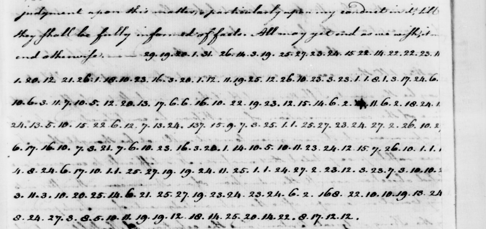
日付 1783年4月6日（ロシアで用いられたユリウス暦）＝1783年4月17日（グレゴリオ暦）。第23号公文、第三通。裏書「Read Aug. 8. 1783」
場所 サンクトペテルブルク → フィラデルフィア
差出人 フランシス・デイナ（1743〜1811）、エカチェリーナ2世のもとへ派遣された大陸会議の公使（1781〜1783）
受取人 ロバート・R・リヴィングストン（1746〜1813）、大陸会議の外務長官
出典 NARA, RG 360, Papers of the Continental Congress, item 89, vol. II, pp. 727–730（マイクロフィルム M247、NAID 502963402）。暗号表は p. 656。暗号部分を除いてウォートン『Revolutionary Diplomatic Correspondence』第6巻（1889）pp. 381–383 に収録。
暗号 1782年10月のデイナの暗号表：27記号（a〜zと&）をずらした3列のアルファベット（n、w、iから始まる）を順に用いる（3文字の鍵語）。30〜305番の語と人名のノメンクラトール（1語に3つの番号）。27を超える数のあとでは鍵語を最初からやり直す
キーワード an Administration like this · no settled principles or system · an irresistable influence · there is no Minister here · Count Panin
NARAカタログのPCC 89 第2巻 ↗
暗号のページの画像（p. 730、NARA） ↗
暗号表の画像（p. 656、NARA） ↗
読解の状態. 私たちの知るかぎり、解読の公表は初めてです。 見える数字群213と隠れた2群のうち、201群は表でそのまま読め、3群はノメンクラトールの語です（31 Administration、137と168はMinisterの3つの番号のうちの2つ）。5つの行末は最初の数字しか見えず、2群は丸ごと綴じ目に隠れていますが、いずれも当てはまる値は一つだけです（{x}で表示）。4つの数字はデイナ自身の誤りです（‹x›で表示、注を参照）。読みの確かさは約98％で、意味の上であいまいな文字は残りません。
凡例：暗号部分、{x}＝綴じ目に隠れた文字（推定）、‹x›＝デイナの暗号化の誤り（訂正）、[x]＝ノメンクラトールの語、✱＝しみ、‖＝デイナが鍵語をやり直した箇所。原文はデイナ自身の英語で、綴りはそのまま（「irresistable」「adopt」）。
8行の数字群
| 行 | 数字群 | 読み |
|---|---|---|
| 1 | 29 19 20 1 31 26 14 3 19 25 27 23 24 15 22 14 22 22 23 1[1] | ‹i› n a n [Administration] l i k e t h i s w h i c h ‹i› {s} |
| 2 | 1 20 12 21 26 1 18 10 23 16 3 20 1 12 11 19 25 12 26 10 23 3 23 1 1 8 1 3 17 24 6 [20] | n o t g u i d e d b y a n ‹y› s e t t l e d p r i n c i p l e s {o} |
| 3 | 10 6 3 11 7 10 5 12 20 13 17 6 6 16 10 22 19 23 12 15 14 6 2 ✱ 11 6 2 18 24 1[5] | r s y s t e m y o u c a n b e c e r t a i n o ✱ f n o m e {a} |
| 4 | 24 13 5 10 15 22 6 12 7 13 24 137 15 9 7 3 25 1 1 25 27 23 24 27 2 26 10 2[7] | s u r e w h a t t h e [Minister] a d o p t i n t h i s h o u r {m} |
| 5 | 6 17 16 10 7 3 21 7 6 10 23 16 3 20 1 14 10 5 10 11 23 24 12 15 7 ‖ 26 10 1 1 1[1] | a y b e o p p o s e d b y a n i r r e s i s t a b ‖ l e i n {f} |
| 6 | 4 8 24 6 17 10 1 1 25 27 19 19 24 11 25 1 1 24 27 2 23 12 3 23 7 3 10 10 2[6] | l u ‹e› n c e i n t h e n e x t i n s h o r t p r o p e r {l} |
| 7 | 3 11 3 10 20 25 14 6 21 25 27 19 23 24 23 24 6 2 168 22 10 10 19 13 24 [1] | y s p e a k i n g t h e r e i s n o [Minister] h e r e h e {n} |
| 8 | 8 24 27 3 8 5 10 11 19 19 12 18 14 25 20 14 22 8 17 12 12 | c e m y p r e s e n t d i f f i c u l t y |
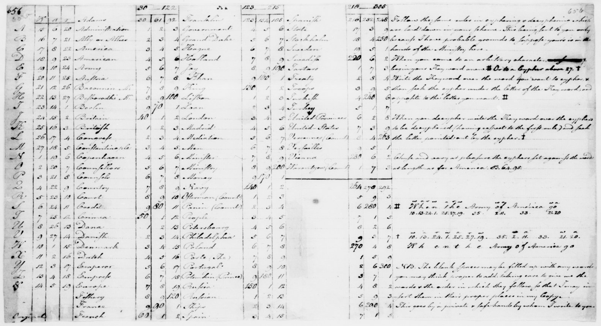
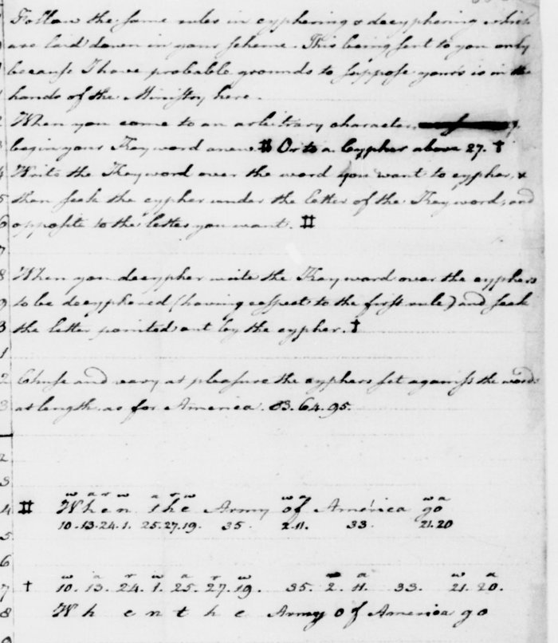
校訂本文（前後の文脈つき）
… I have only to pray Congress would be pleased to suspend their judgment upon this matter, and particularly upon my conduct in it, till they shall be fully informed of facts. All may yet end as we wish; it may end otherwise. — ‹I›n an [Administration] like this which ‹i›{s} not guided by an‹y› settled principles {o}r system, you can be certain of no me{a}sure. What the [Minister] adopt in this hour {m}ay be opposed by an irresistable in{f}lu‹e›nce in the next. In short, proper{l}y speaking, there is no [Minister] here. He{n}ce my present difficulty.
I have the honour to be with much respect & esteem, Sir, your most obedient & most humble servant, Fra. Dana. — P.S. I make use of the Cypher I sent you by Mr. Adams’s son, having laid yours aside for the reason there mentioned. […] Count Panin died since my last much lamented. He had long lived a retired life in the City. His death therefore makes no change.
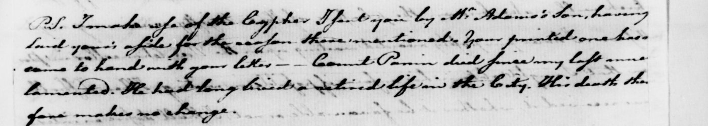
日本語訳
「このように、確たる原則にも体系にも導かれていない政府では、どんな措置についても確信は持てません。大臣がこの時間に採用したことが、次の時間には抗しがたい影響力によって覆されるかもしれないのです。要するに、正確に言えば、ここには大臣がいないのです。それゆえ、今の私の困難があります。」
読解の注と歴史的注
- 使節団。1780年12月19日、大陸会議はボストンの弁護士フランシス・デイナをロシア女帝のもとへの公使に任命しました。任務は、合衆国を武装中立同盟（イギリスによる海上拿捕に対するエカチェリーナ2世の1780年2月28日／3月10日の宣言）に加入させ、通商条約を提案することでした。彼は1781年8月末、秘書兼フランス語通訳として14歳のジョン・クインシー・アダムズを伴ってサンクトペテルブルクに着きます。イギリスとその敵国のあいだの調停者たろうとしたエカチェリーナは、彼を接見しませんでした。
- この時期。パリの予備講和ののち、デイナは確かな保証を得たと考え、1783年2月24日／3月7日に副宰相イワン・オステルマン伯爵へ書簡で使命を通知しました。しかし何も起こりません。エカチェリーナは最終講和の調停を引き受け、宮廷に姿を見せなくなり、返事は来ませんでした。公文の平文部分は大陸会議に判断の保留を求め、暗号部分はなぜデイナに何も予測できないのかを語ります。
- 「ここには大臣がいない」。デイナは特定の人物を指しているのではありません。ロシアの外交にはもはや一人の責任者がいないのです。外交の元責任者で武装中立の立役者ニキータ・パーニンは1781年から遠ざけられ、オステルマンは署名するだけで、決めるのは女帝とその側近、アレクサンドル・ベズボロドコとポチョムキン公でした。オステルマン、パーニン、ポチョムキン、ベズボロドコ、バクーニンの名は暗号表のノメンクラトールにありますが、デイナはここでは一つも使っていません。
- 「アダムズ氏の息子に託した」暗号表。1782年10月の暗号表にはデイナの書き込みがあります。これを送るのは「あなたの暗号がこちらの政府の手に渡っていると考える相当の理由があるから」だというのです。リヴィングストンの暗号はロシア側に知られていると彼は考えていました。表は1782年10月末にサンクトペテルブルクを発ったジョン・クインシー・アダムズに託され、添え状には「Read Jan. 1783」と裏書があります。第23号公文の追伸もこれに触れています（「I make use of the Cypher I sent you by Mr. Adams’s son」）。同じ表の別の写しがジョン・アダムズの文書の中にあります。
- デイナの4つの誤り。29（最初の数字群）は表に存在しません。表では1〜27が文字、30以上が語だからです。可能な読みは「I」（「In an Administration」）だけで、誤りの原因は不明です。23の「i」（1行目「which ‹i›s」）、12の「y」（2行目「an‹y›」）、24の「e」（6行目「influ‹e›nce」）は、いずれも隣の列でのその文字の値です。デイナが列を読み違えたのです。
- 綴じ目の下。5つの行は綴じ目で終わり、最初の数字しか見えません（1·、1·、2·、1·、2·）。鍵語の列から値は一つに決まります（11 s、15 a、27 m、11 f、26 l）。2行目（「{o}r」、20）と7行目（「he{n}ce」、1）の行末では数字群が丸ごと欠けていますが、列の順序と文意から決まります。
- その他の不規則。3行目の一群にかかるしみ（デイナの抹消）は数えません。5行目でデイナは「irresistab‖le」の途中で、27を超える数なしに鍵語をやり直していますが、続きは問題なく読めます。
- 追伸。「Count Panin died since my last」：ニキータ・パーニンは1783年3月31日／4月11日に没しました。長く隠退していたので、その死は「何も変えない」とデイナは判断します。同じ月（1783年4月8日／19日の詔書）、エカチェリーナ2世はクリミアを併合しました。
- その後。オステルマンは、最終講和の調印前に女帝が合衆国の公使を接見することはできないと答えました。デイナは接見されないまま1783年8月末にロシアを去り、パリ条約は9月3日に調印されます。彼はのちにマサチューセッツ州最高裁判所の判事、ついで首席判事（1791〜1806）となりました。
- 大陸会議が知っていたこと。この公文は1783年8月8日に大陸会議で読まれました。第三通には行間の解読がなく、マディソンは8月11日にジェファーソンへ、デイナの公文は「一部が解読されていない」と書いています。ウォートン（1889）は暗号部分を除いて書簡を収録しました。
方法・検証・謝辞
方法：(1) p. 730のNARA画像から8行を転写しました。(2) 鍵なしの解読：27記号・周期3の数字式多表暗号で、ずれは文字頻度と英語4-gramの統計から求めました。(3) その後、同じ綴りをめくってデイナの暗号表（p. 656）を独立に見つけました。表の3列は鍵なし解読の3つのずれと一致し、表をそのまま（鍵語やり直しの規則も含めて）当てはめると、表自身の例文（「When the Army of America go」）も再現されます。(4) 訂正はすべて列挙しています（黙っての訂正はありません）。読みの英語4-gramスコアは1文字あたり−1.87、対照200例（同じ数字、ランダムな3列の鍵）は−9.03〜−6.97です。
先行研究（2026年10月27日確認）：ウォートン（1889）は「Here follow eight lines of cipher」と記すのみ。クレッソン『Francis Dana, a Puritan Diplomat』（1930）にこの部分はなく、Adams Papersは暗号表のみを収録。平文の複数の句をGoogleブックス（M・ジュンタ『The Emerging Nation』1996を含む）とウェブで全文検索しましたが、結果はありません。ダニエル・ブルドー氏のカタログはこの部分を「not yet attempted」としています。R・E・ウェーバー『United States Diplomatic Codes and Ciphers』（1979）は参照できませんでした。
発見：ダニエル・ブルドー氏のカタログ、第485番 ↗。ウォートンで未解読のまま残された部分と、Papers of James Madison ↗の注を示していました。画像：米国国立公文書記録管理局（NARA）Papers of the Continental Congress（M247）、パブリックドメイン。公文の平文：ウォートン第6巻 ↗。解読：Brice Dudoutの研究資料、Claudeとともに。
ルドヴィク・ヴォンソヴィチからアレクサンデル・ミハウ・ルボミルスキへ、1662–1663年
マゾフシェの貴族でウォムジャのストルニク（食膳官）であったルドヴィク・ヴォンソヴィチが、ポーランド王冠の主馬頭アレクサンデル・ミハウ・ルボミルスキに宛てた7通の書簡（1662年11月〜1663年12月）。ポーランド語の本文は平文ですが、肝心な名前と文は数字で書かれています。同じ文書綴りに残る19世紀復元の25値の表で、手を加えずに読めます。ヴォルブシュに集まった連盟軍、待たれる俸給、「軍との合意を保とうと努める」宮廷、そして何より、受取人の弟で、反乱の2年前から監視され、1663年12月にはウクライナ遠征を拒んで「春までは私はヘトマンでも兵士でもない」と言う「元帥」イェジ・セバスティアン・ルボミルスキです。
日付 1662年11月29日〜1663年12月9日：7通（1662年11月29日、1662–1663年冬の日付のない1通、1663年1月25日、2月17–18日、3月19日、5月5日、12月9日〔ヤロスワフ発〕）（解読の状況を参照）
経路 軍と宮廷のそば（ヴォルブシュ、クラクフ）→ アレクサンデル・ミハウ・ルボミルスキ（ヴィシニチ？）
差出人 ルドヴィク・ヴォンソヴィチ、ウォムジャのストルニク（クラクフ国立文書館の目録と各書簡の署名による）
受取人 アレクサンデル・ミハウ・ルボミルスキ（1614–1677）、王冠主馬頭、のちクラクフ県知事（1668年）
請求記号 Archiwum Narodowe w Krakowie（ANK）、Archiwum Krzeszowickie Potockich（29/639）、AKPot 3227：137頁（DECODE R7503）、200頁（R7505）、209頁（R7506）、225頁（R7507）、235頁（R7508）、239頁と245–248頁（R7509–R7510）、181–183頁（R7504）；暗号表81頁（R7501）
暗号 単一換字：1文字に2桁の数1つ（25値、同音異字も符号表もなし）。数字は区切りなく続けて書かれ、平文の文中に挿入されます
キーワード marszałek · koło wolborskie · krolestwo · woiewoda ruski · związek · chorągwie · Łańcut · oyczyzna
AKPot 3227の目録（szukajwarchiwach）↗
DECODEのレコードR7501–R7510 ↗
写本画像は掲載しません。画像はアクセス制限付きのDECODE複製で、研究用にのみ提供されたものです。公開するのは私たちの転写と読みだけです。
解読の状況. 私たちの知る限り、この7通の解読の初公開です。暗号部分はすべて読め、書簡により数字群の約95％以上が読めています。推定や未解決の数字群は示してあります。2026年10月27日追加：1662–1663年冬の日付のない書簡（R7504、ブワジェヨヴァの件、14か所、全数字を判読）と1663年12月9日の書簡の後半（R7510、243–248頁、追伸を含む約700の数字。98.7％は手を加えずに判読、残りは補って明示）を、画像で一字ずつ読み直しました。表は1663年5月5日の書簡（R7508）で盲検的に検証しました。解読前に数字の転写を固定し、ポーランド語辞書で語の割合を測ると0.389、並べ替えた表1,000通りと攪拌した本文1,000通りでは最大0.083（99パーセンタイル）でした。綴りの残る1通R7502（1662年9月？）には行間と19世紀の作業紙（R7511）にすでに解読があるため、ここでは扱いません。
凡例：暗号部分（他はすべて写本で平文）；{x}＝有力な読み；‹x›＝書き手の誤りまたは未解決の数字群（注で説明）；[x]＝文意による補い；[…]＝省略した平文。綴りは写本どおり（jの代わりにi、iの代わりにy、「krolestwo」）。
暗号表R7501
「Klucz Wąsowicza (i Kotowicza) do Alex. Lubomirskiego」と題された19世紀の罫紙。1から100までの格子に、使われた値だけが記入されています。当時の鍵そのものではなく復元で、文書がクシェショヴィツェでユゼフ・ウェプコフスキとフランチシェク・クルチツキの手を経たときに作られたものでしょう。25の値：
| 数 | 文字 | 数 | 文字 | 数 | 文字 | 数 | 文字 | 数 | 文字 |
|---|---|---|---|---|---|---|---|---|---|
| 12 | ę | 25 | e | 35 | r | 53 | a | 72 | w |
| 13 | z | 28 | t | 38 | p | 63 | f | 88 | h |
| 21 | g | 30 | l | 40 | ł | 68 | ą | 90 | i |
| 22 | b | 33 | d | 41 | c | 69 | y | 92 | u |
| 23 | k | 34 | m | 52 | n | 70 | o | 96 | s |
数字（書簡ごと）
暗号部分の転写（書き手は数字を続けて書くため、区切り|は私たちによるものです。· […] ·＝間の平文、=＝行末で切れた語）。1663年5月5日は盲検検証で固定した転写をそのまま示します：[a/b]＝形が曖昧、?＝判読不能の数字、!＝不完全な数字群。R7504とR7510では：(25)＝書き手が行の上に書き足した数、[x]＝破れや端の切れで失われ補った数、[69]＝あるべき数の欠落、「p. …:」＝頁。
1662年11月29日 (DECODE R7503 · p. 137)
72 70 90 25 72 70 33 53 | 35 92 69 23 90
［1662年12月〜1663年1月］（日付なし） (DECODE R7504 · pp. 181–183)
p. 181 : 22 40 53 13 25 90 70 = 72 25 69
34 53 35 96 13 53 40 23 70 72 90
38 52 25 34 | 70 69 41 25 34 | 53 | 28 25 23 90 25 30 25 34
22 40 53 = 13 25 90 70 72 68 | 28 25 23 90 25 30 90
52 90 25 | 34 53 90 68 41 | 90 52 33 90 21 25 52 53 28 92
28 25 23 90 25 30 90
38 53 30 53 28 69 52 92 96 70 72 25 69
28 25 23 90 (25) 30 25 34 92
p. 182 : 38 53 30 53 28 90 52 92 96
38 53 30 53 28 69 52 92 96 53
22 40 53 13 25 90 70 72 25 69
p. 183 : 28 25 23 90 25 30 25 34 92
52 53 | 22 40 53 13 25 90 70 72 25 69
96 | 38 53 30 53 28 69 52 92 96 = 25 34
1663年1月25日 (DECODE R7505 · p. 200)
72 90 33 13 90 25 41 | 70 22 35 70 28 69 | 90 53 23 90 25 | 34 90 53 40 | 34 53 35 96 13 53 40 25 23
13 21 70 33 12 | 13 | 72 70 69 96 23 90 25 34 | 33 72 70 35 | 33 70 28 35 13 69 34 53 72 53 41 | 92 96 90 40 92 90 25 | 69
23 70 40 92 | 72 70 30 22 70 35 96 23 90 25 34 92 | 96 69 41 | 96 28 53 40 70
53 22 69 | 38 90 25 52 90 68 33 13 25 | 13 72 90 25 13 90 70 52 70
1663年2月17–18日 (DECODE R7506 · p. 209)
34 53 35 96 13 53 40 25 23
38 35 13 69 90 12 28 69 | 92 | 23 35 70 30 25 96 28 72 53 | 69 | 52 53 | 13 92 33 90 25 52 41 69 53 41 88 | 34 90 25 72 53
96 28 53 35 70 96 41 90 25 | 96 38 90 96 23 90 25 34 92
92 | 70 69 41 53 | 23 70 52 36 90 33 25 52 41 69 68 | 13 | 22 90 25 69 23 70 72 96 23 90 25 34
92 90 25 | 23 53 13 53 52 70
38 70 | 13 72 90 68 13 23 92 | 96 40 92 13 69 40 | 23 35 70 30 70 72 90
38 35 13 25 96 28 35 13 25 21 53 41 | 90 25 96 30 90 | 72 70 69 96 23 70 | 41 13 25 21 70 | 13 40 25 21 70 | 52 90 25 | 34 69 96 30 90 | 70 69 41 13 69 13 52 90 25
1663年3月19日 (DECODE R7507 · p. 225)
38 35 13 69 96 40 53 40
34 53 35 96 13 53 40 25 23 · […] · 70 22 30 90 21 70 72 53 40 | 23 35 70 =
30 25 96 28 72 70 · […] · 38 35 13 25 33 | 23 70 40 25 34 | 30 25 38 96 13 69 41 88
70 33 2[5] 35 72 53 41 | 41 88 70 35 68 21 72 90 | 53 30 25 | 38 70 | 23 70 30 25 | 92 38 25 72 52 90 53
13 25 | 90 41 88 | 96 90 40 53 | 13 | 13 ? 72 90 68 13 23 92 | 72 69 52 90 33 13 90 25 | 72 70 90 25 =
72 70 33 53 | 35 92 96 23 90 | 13 52 70 72 92 | 52 90 25 | 72 69 90 25 33 13 90 25
52 53 | 28 12 | 90 34 | 38 3? 2? 13 12 90 33 68 | 23 70 34 25 52 33 69 35 70 72 53 52 90 …
1663年5月5日 (DECODE R7508 · p. 235)
72 41 13 69 34 | 33 53 40 25 34 | 90 25 34 92 | 28 12 | 90 52 63 70 35 34 53 41 69 68
13 5? 22 69 | 21 70 | 72 28 12 | 70 22 30 90 21 53 41 69 68 | 72 41 90 68 21 52 68 41 | 69 | 13 25 22 69 | 35 90 30 =
52 90 25 69 | 41 88 70 35 1[3/5] 9[0/8] 40 | 70 2[5/3] 70 [9/4]0 | 28 25 21 70 | 41 70 | 38 53 52 92 | 70 22 90 25 41 53 40
! 34 53 35 96 13 53 40 21 [3/9]
96 90 25 33 13 90 | 72 | 40 53 52 41 92 41 90 25 | 52 90 25 | 70 33 13 69 72 53 90 68 41 | 96 90 12 3[3/5] 72 70 =
3[5/1] 70 72 90 | 70 52 90 34 96 68 28 92 | 3[5/1] 70 13 92 34 90 25 52 90 53
34 53 35 96 13 53 40 2[3/5] 53
90 2[5/1] 96 [3/5]0 90 | ! 40 33 0 35 72 90 25 | 41 88 70 35 68 | 21 72 90 25 | 90 53 2[8/3] 40 | 70 22 90 25 41 53 40 70 3[5] =
13 72 90 68 13 23 92 | 69 | 90 25 96 30 90 | 38 35 13 69 69 33 13 90 25 13 | 52 90 25 34 90 | 33 70 | 23 35 70 30 53
1663年12月9日 (DECODE R7509 · p. 239)
52 90 25 | 96 38 69 28 53 40 | 96 90 12
70 | 13 33 35 70 72 90 25 | 72 53 96 13 25 41 90
1663年12月9日、続き（ヤロスワフ） (DECODE R7510 · pp. 245–248)
p. 245 : 33 70 | 52 90 25 21 70 | 30 9[0] = 96 28 92 | 70 33 | 72 53 96 13 25 41 90
38 53 38 35 = 70 41 23 90
72 | 33 70 34 92 | 52 53 96 13 69 34
13 | 96 70 22 68 | 23 70 35 25 96 38 70 52 33 25 52 41 69 90
38 90 96 53 41 | 22 69 40 70
35 70 22 90 40 | 90 34 90 = 25 52 90 25 34 | 90 25 21 70
30 90 96 28 92 | 13 25 | 52 90 25 | 33 5[3] = 52 70
72 | 96 38 35 53 72 53 41 88 | 28 25 35 53 13 52 90 25 [69] = 96 13 69 41 88
p. 246 : 92 52 90 25 21 70 | 72 | 38 70 23 70 90 92 = 90 25 33 52 25 21 70 | 96 40 70 72 53 | 33 70 | 34 52 90 25 | 34 70 72 90 41 | 52 90 25 = 41 88 41 90 53 40
33 40 92 21 90 = 38 70 13 70 96 28 53 40 25
52 90 25 | 90 33 13 90 25 | 72 | 92 23 35 53 90 52 12
90 53 34 = 53 92 90 | 88 25 28 34 53 52 | 53 52 90 | 13 70 40 52 90 25 35 13 | 33 70 | 72 90 70 96 = 52 69 · 34 53 | 90 25 41 88 53 41 | 33 70 | 90 53 52 70 72 41 53
92 = 41 13 69 52 90 | 23 70 52 63 25 35 25 52 41 69 68 | 13 | 72 70 90 25 52 96 23 90 25 34
72 40 53 52 41 92 41 90 25
13 25 | 72 | 72 70 69 96 23 92 | 52 90 25 | 34 53 96 13 | 13 21 70 33 69
52 90 41 | 96 90 12 | 33 70 22 35 25 21 70 | 52 90 25 | 96 28 53 52 90 25
22 25 13 | 90 25 21 70 | 33 69 28 52 70 96 41 90
41 90 41 88 70 = 38 70 96 40 53 30 90 | 33 70 | 72 70 69 96 23 53 | 13 33 53 90 68 41 | 13 52 53 41 | 13 25 22 69
34 69 96 30 90 30 90 | 70 | 96 70 22 90 25 | 22 70 | 28 92 | 96 13 25 30 68 21 53 34 90 = 38 40 53 41 68 | 33 25 38 92 28 53 28 70 34
22 35 53 = 41 | 90 41 88
13 25 | 72 70 69 96 23 70 = 34 92 96 90 | 34 90 25 41 | 23 70 40 70 | 38 70 28 53 90 25 34 52 90 25
p. 247 : 34 90 53 40 | 93 · […] · 35 70 13 34 70 72 12
96 23 53 35 = 13 69 40 | 96 90 12 | 52 53 | 72 53 96 13 25 41 90
90 25 21 70 | 35 92 90 52 68 | 41 88 41 25 96 13 = 53 72 53 52 41 70 72 53 41
90 92 13 | 38 70 40 70 52 52 25 | 70 33 25 69 34 92 90 25
69 | 96 40 92 41 88 53 41 | 38 53 52 90 | 52 90 25 | 22 53 35 13 70 | 22 12 33 68
34 90 25 96 13 41 13 53 52 70 34 | 38 70 40 70 52 96 23 90 34 | 72 40 53 52 41 92 41 90 25
92 38 70 3[…] = 22 53 40 | 52 90 25 34 23 12 | 72 25 | 21 33 53 52 96 23 92 | 69 | 13 53 23 70 41 88 53 40
23 35 13 25 34 69 23 | 72 52 25 28 35 13 52 69
34 90 12 33 13 69 | 22 90 53 40 25 34 90 | 21 40 70 72 53 34 90
p. 248 (P.-S.) : 34 90 53 40 | 22 69 41 | 28 25 35 53 13
96 28 53 35 70 96 28 53 | 96 38 90 96 23 90
38 53 41 13 53 52 70 72 96 23 90
90 53 33 68 41 | 38 35 13 25 13 = 40 53 52 41 92 28
校訂本文（1662–1663年のポーランド語）
1662年11月29日 (p. 137)
[…] do ktorych y sam się przyznał woiewoda ru‹y›ki […]
［1662年12月〜1663年1月］（日付なし） (pp. 181–183)
Dziś wyieżdża JMP Marszałek do Wolborza na koło […]. A ia strony Błażeiowey dawno WMM Panu y Dobrodzieiowi oznaymiłem, że tu w Cancellaryach żadney o tym noty, y iesliby co było danego od Krola JM marszałkowi […] trzeba do postarania się o intercyzę między p[a]nem oycem a Tekielem, w ktorey ma być taki sens, że modo obligatorio trzymać ma Błażeiową Tekieli we trzech kroć sto tysięcy, bo kupić tych dobr nie mogł nie maiąc indigenatu […]. Za takim tedy prawem siedział Tekieli, ktory niechybnie po śmierci palatynusowey zechce czynić staranie o recuperacyą iego. […] przywrocić Tekiel‹e›mu.
[…] kiedyby wprzod umarł palatinus […] po wstąpieniu z tego świata palatynusa […]. Starać się, aby uczyniono realiter donatią Błażeiowey, wręcz proponuiąc, że Syn za wstąpieniem Oyca nie utrzyma maiętności […].
[…] blisko tego, isz Tekielemu, gdyby sam Syn faworował na Błażeiowey, danoby prętko absolucyą. A in recompensam donatii uczynić contract osobny s palatynusem […]
1663年1月25日 (p. 200)
[…] widziec obroty iakie miał marszałek. […] zgodę z woyskiem dwor dotrzymawac usiłuie y […] piłne starania aby się kołu wolborskiemu [do]syc stało. Cała rzecz aby pieniądze zwieziono. […]
1663年2月17–18日 (p. 209)
Marszałek dosyć dobrze przyięty u krolestwa y na ‹z›udiencyach miewa […] kontentowania. […] staroscie spiskiemu […] u oyca kon‹36›idencyą z Bieykowskiem nic więcey tractować {n}ie kazano, tylko zeby po związku służył krolowi, a temu zeby przestrzegac iesli woysko czego złego nie mysli oyczyznie. […]
1663年3月19日 (p. 225)
[…] także tatarskie przysłał marszałek, czym tu sobie wielce obligował krolestwo. Nie obiecuie przed kołem lepszych oderwac chorągwi, ale po kole upewnia, że ich siła z z{a}wiązku wynidzie. Woiewoda ruski znowu nie wyiedzie, ludzie iednak na tę im ‹przezęidą› komendyrowani‹e› […]
1663年5月5日 (p. 235)
[…] zeby Chorągiew pozwoliła na przyście, w czym dałem iemu tę informacyą, a to dla tego {ze}by go w tę obligacyą wciągnąc y zeby {p}ilniey cho{d}ził {około} tego co panu obiecał. Ale y w tym więcey będę mógł powiedzieć WMM Panu y Dobrodzieiowi.
Marszał{ek} ze teraz siedzi w Łancucie nie odzywaiąc się dworowi; o nim są tu rożne rozumienia. Widzę że kiedy się Król JM ruszy s pod Krakowa z obozem, idea konsyderować marszałka, iesli {oderwie} chorągwie {iak}‹ł› obiecał od związku, iesli przyydzie z niemi do krola. […]
1663年12月9日 (p. 239)
[…] na ten czas X. Archidyakon Sendomirski nie spytał się nay mnieyszym podobieństwem o zdrowie Waszeci. […]
1663年12月9日、続き（ヤロスワフ） (pp. 245–248)
p. 245 : […] Born miał za złe, że nie było do niego list[u] od Waszeci; mowił, że mu w tenże czas Paprocki. Kiedy to iest nieszczęście w domu naszym, że nie miewamy z sobą korespondencyi, przynamniey teraz pisać było, abym to robił imieniem iego. Odpowiedziałem: listu że nie d{a}no […], ale żebyś WMM Pan nie iedno miał rozumienie z Bornem w sprawach teraźnie[y]szych, mam zlecenie […] Bornowi.
p. 246 : Narażałem się potym Bornowi, będąc u niego w pokoiu; iednego słowa do mnie mowić nie chciał, lubom sam dawał okazyą, namieniaiąc długi pozostałe. JMP Marszałek we czwartek na noc odiechał stąd do Przeworska, z kąd wczora po obiedzie iechał do Łańcuta. Nie idzie w Ukrainę y tak mowi: iam a{n}i hetman ani żołnierz do wiosny. Ma iechać do Ianowca, ale wprzod uczyni konferencyą z Woienskiem […] w Łańcucie. Udaią tu Bornowscy, że w woysku nie masz zgody et per consequens nic się dobrego nie stanie bez iego ‹d›ytności. […] powiedzieli mi, że cicho posłali do woyska, zdaiąc znać, żeby myślili o sobie, bo tu szelągami płacą deputatom, a tym czasem zakazuią brać ich. Są to także deputaci, y namienili, że woysko musi mieć koło potaiemnie. […]
p. 247 : […] JMX Archidyakon nie pisał teraz do WMM Pana, bo zaraz nazaiutrz po pogrzebie odiechał do Sendomierza, ale z domu obiecał napisać. Miał ‹z› Bornem rozmowę, ale mi nie chciał odkryć, tylko to, że Born skarżył się na Waszeci, isz iego ruiną chcesz awancować. Born iuż Połonne odeymuie y słuchać pani nie barzo będą, bo kazał być u siebie mieszczanom połońskim w Łańcucie. […] Śmierć JMP Podczaszego z tłustości niewidaney przypisuią, ktora się miała zapalić z tańca wielkiego, bo sobie upo[do]bał Niemkę we Gdańsku y zakochał, a przydano, że miał krzemyk wnętrzny, około czego iest baieczek wszelkich między białemi głowami. […]
p. 248, après « W Jarosławiu d. 9 decembr. 1663 » : Zanosiło się na to, że Born miał być teraz u Argenta, iako mi namienił starosta spiski, ale wczora Paczanowski powiedał o odmianie, od ktorego będę więcey wiedział iadąc przez Łańcut.
日本語訳
［ ］内は原文で暗号の部分です。
1662年11月29日
[…]［ルーシ県知事］自身もそれに署名した[…]
［1662年12月〜1663年1月］（日付なし）
今日、元帥閣下は集会のためヴォルブシュへ発ちます[…]。［ブワジェヨヴァ］については、ここの官房にはそれについて何の記録もなく、国王陛下から［元帥に］与えられたものもないと、閣下、わが主にして恩人に以前からお知らせしてきました[…]。［父君とテケリの間の］契約を得るよう努める必要があり、その趣旨は［テケリ］が［ブワジェヨヴァ］を30万の債務名義（modo obligatorio）で保有するというものです。［インディゲナート（帰化貴族権）がないため］これらの所領を買うことができなかったからです[…]。こうした権原で［テケリ］は所領に座っていたのであり、［パラティヌス夫人の］死後には必ずその回復に努めるでしょう。[…]［テケリに］返す[…]。
[…]もし［パラティヌス］が先に亡くなっていたら[…]［パラティヌス］がこの世を去った後に[…]。［ブワジェヨヴァの］贈与を実際に行わせるよう努め、父の死後に息子は所領を保てないと率直に提案すること[…]。
[…]息子自身が［ブワジェヨヴァの件を］支持すれば、［テケリは］すぐに赦免を得られるところまで来ています。そして贈与の見返りとして、［パラティヌスと］別の契約を結ぶこと[…]
1663年1月25日
[…]［元帥が行った駆け引きを見ること］。[…]［宮廷は軍との合意を保とうと努めており］[…]［ヴォルブシュの集会が満足するよう］熱心に努めています。肝心なのは［金が運び込まれること］です。[…]
1663年2月17–18日
［元帥は］かなりよく［両陛下に迎えられ、謁見では］[…]満足を得ています。[…]［スピシュの代官に］[…]［父のもとでのビェイコフスキとの内密の件］これ以上は何も交渉しないよう［命じられ］、ただ［連盟の後は国王に仕えるよう］、そして［軍が祖国に対して何か悪事をたくらんでいないか見張るよう］とのことです。[…]
1663年3月19日
[…]［元帥は］タタールの［捕虜？］も［送ってきて］、これによってここで大いに［両陛下に恩を売りました］。［集会の前によりよい旗隊を引き離すこと］は約束しませんが、［集会の後には、その多くが連盟から抜けると請け合っています。ルーシ県知事は再び出陣しません］。しかし人々は［この指揮のもとへ移る？］[…]
1663年5月5日
[…]旗隊が来ることに同意するよう、［その点について私は彼にこの情報を与えました］。それは［彼をこの義務に引き込み、主人に約束したことにもっと熱心に取り組ませるため］です。しかしこの件についても、閣下、わが主にして恩人に、さらに申し上げられるでしょう。
［元帥は］今、［宮廷に音沙汰もなくワンツトにとどまっており、彼についてはここで］さまざまな［見方があります］。国王陛下が陣営とともにクラクフを発つとき、［元帥を］見極めるつもりだと見ています。［約束どおり旗隊を連盟から引き離すか、それを率いて国王のもとへ来るか］。[…]
1663年12月9日
[…]今のところ、サンドミェシュの助祭長は、ほんのわずかも［閣下のご健康について尋ねませんでした］。[…]
1663年12月9日、続き（ヤロスワフ）
245頁：[…]ボルンは［閣下から自分宛ての手紙が］なかったことを悪く取り、同じ時に［パプロツキ］が自分に…と言いました。［わが家で］［互いの文通が］ないのは不幸なことで、せめて今は［書くべきであった］、私が［彼の名で］そうするように、と。私は［手紙は渡されなかった］と答えました[…]。しかし閣下が［現在の件で］ボルンと一つの了解も持たないように、私は指示を受けています[…]ボルンに。
246頁：その後私はボルンに近づき、［彼の部屋にいましたが、一言も話そうとしませんでした］。私自身［残った借金］をほのめかして機会を作ったのですが。元帥閣下は木曜の夜ここからプシェヴォルスクへ発ち、昨日の昼食後そこからワンツトへ行きました。［ウクライナへは行かず］、こう言っています：［「春までは私はヘトマンでも兵士でもない」。ヤノヴィェツへ行く予定だが、その前にヴォイェンスキと協議する］[…]［ワンツトで］。ボルンの手の者たちはここで［軍に合意がない］と言い、したがって［彼がいなければ何もよいことは起こらない］と。[…]彼らは私に、［ひそかに軍へ人を送り、自分たちのことを考えよと知らせた。ここでは代議員にシェロング貨で支払っているからだ］と言い、その一方で［それを受け取ること］は禁じられています。彼らも代議員で、［軍は秘密に集会を開かねばならない］とほのめかしました。[…]
247頁：[…]助祭長閣下は今は閣下に書きませんでした。葬儀の翌日すぐにサンドミェシュへ発ったからですが、家から書くと約束しました。［彼はボルンと話をしました］が、私には明かそうとせず、ただボルンが［閣下について、彼の破滅によって出世しようとしていると不平を言った］とだけ。ボルンは［すでにポウォンネを取り上げており、人々は奥方にあまり従わないでしょう］。［ポウォンネの町人たちをワンツトの自分のもとへ］呼び寄せたからです。[…]献酌官閣下の死は前代未聞の肥満のせいとされ、それが大舞踏で燃え上がったのだと言われます。［グダンスクでドイツ女性を気に入り、恋に落ちた］からで、さらに［体内に石があった］とも付け加えられ、それについては［女たちの間で］あらゆる作り話があります。[…]
追伸（248頁、「ヤロスワフにて、1663年12月9日」の後）：ボルンは［今］アルゲントのもとに［いるはず］と見込まれていました。［スピシュの代官］がそうほのめかしたのですが、昨日［パチャノフスキ］が変更を口にしました。［ワンツトを通るときに］彼からもっと詳しく知るでしょう。
読みの注と歴史的な注
- 「元帥」（marszałek）はイェジ・セバスティアン・ルボミルスキ（1616–1667）。王冠大元帥・野戦ヘトマンで、受取人の弟、本拠はワンツト（Łańcut）です。1662–1663年、ヤン2世カジミェシュとルドヴィカ・マリアの宮廷は、彼が連盟軍を支持し、国王存命中の後継者選挙に反対していると疑っていました。1664年末に議会法廷で有罪とされ、公然たる反乱（1665–1666年のロコシュ）を率います。これらの書簡は、その2年前、兄の周辺から彼が見張られていたことを示しています。
- 「krolestwo」：17世紀のポーランド語で「両陛下」、すなわち国王夫妻（国王と王妃ルドヴィカ・マリア）のことで、王国ではありません。
- ヴォルブシュの集会（koło wolborskie）：俸給未払いのため結成された王冠軍の連盟（「związek」、1661–1663年の軍事連盟）の総会。1662年12月から1663年春までヴォルブシュで開かれ、未払い俸給の支払いが交渉されました。「aby pieniądze zwieziono」＝約束の金が実際に軍へ運ばれること。クルニク図書館（ポーランド科学アカデミー）の目録には、ヴォルブシュ発の1662年12月12日、1663年2月22日、4月16日付のこの集会の文書が載っています。
- 「woiewoda ruski」：ルーシ県知事ステファン・チャルニェツキ（在任1657–1664年）。宮廷に忠実でした。1662年11月29日の書簡では ru‹y›ki と、96（s）の代わりに69（y）と数字を逆に書いています。1663年3月19日の書簡では正しく96です。
- 「z z{a}wiązku wynidzie」（1663年3月19日）：「連盟から抜ける」。13（z）の次の数字群は字形が崩れており、「z zawiązku」（zawiązek＝連盟）が最も有力、「z związku」もありえます。‹przezęidą›：このままでは意味をなさず、2桁が不確か。期待される意味は「przeydą」（移る）ですが、証明されていません。komendyrowani‹e›：語末は私たちの行の切り取り範囲外です。
- 「lepszych … chorągwi」：よりよい旗隊（騎兵中隊）。元帥は集会の後に中隊を連盟から引き離すと約束しています。1663年5月5日の書簡も「約束どおり旗隊を連盟から引き離すか」と同じ問題を取り上げます。
- 1663年2月17–18日：‹z›udiencyach＝53（a）の代わりに13（z）、「audiencyach」。kon‹36›idencyą＝表にない36、63（f）の逆書き：「konfidencyą」。{n}ie kazano：最初の数字群は私たちの転写では92（u）、52（n）と読みます。「スピシュの代官」（starosta spiski）：スピシュの代官職はルボミルスキ家が保持していましたが、ここで誰を指すかは確定していません。「ビェイコフスキ」と「父」（oyciec、聖職者か）は確実には同定できません。
- 1663年5月5日：盲検検証に使った書簡。測定後、固定転写の誤りを特定しました（ファイルは修正していません）：上部が平らな3を5と読んだ（cho{d}ził、{około}）、38を35と読んだ（{p}ilniey）、25 23を「21 [3]」と読んだ（Marszał{ek}）、70 33 25 35を「40 33 0 35」と読んだ（{oderwie}）。{iak}‹ł›：90 53 23＝「iak」、続く40（ł）は書き手の余計な追加です。国王は実際に1663年夏、1663–1664年のウクライナ遠征のためクラクフを発ちました。
- ルドヴィク・ヴォンソヴィチについては、これらの書簡とANKの目録（ウォムジャのストルニク）以外のことはわかりません。鍵の紙の題にはコトヴィチの名もあり、同じ暗号を使った別の通信者でしょう。AKPot 3227にはミハウ・カジミェシュ・ラジヴィウの書簡（1669年、暗号部分あり、ブルドー目録440番）もありますが、ここでは扱いません。
- 1663年12月9日、ヤロスワフ（R7509＋R7510）：R7510（243–248頁）には宛名の書き出しがなく、「W Jarosławiu d. 9 decembr. 1663」で終わります。この日付はR7509（237頁）冒頭に鉛筆で写されており、二つのDECODEレコードは同じ書簡の二つの部分である可能性が高いと考えます。書簡は「献酌官」（podczaszy）の葬儀の後に書かれました。これは受取人の兄弟で、1663年に子なく没し、ヤロスワフを所有した王冠献酌官コンスタンティ・ヤツェク・ルボミルスキである可能性が高く（要確認）、「奥方」はその未亡人ドミツェラ・バルバラ（旧姓シュチャヴィンスカ）でしょう。「すでにポウォンネを取り上げている」ボルン（「Bornowscy」はその手の者）、アルゲント、パチャノフスキ、パプロツキ、ヴォイェンスキは同定できていません。元帥はこのときプシェヴォルスクとワンツトにいて、ヤン2世カジミェシュのウクライナ遠征（1663–1664年冬）から距離を置いています：「iam ani hetman ani żołnierz do wiosny」。
- R7510の読み：a{n}i＝52（n）の代わりに92（u）、1663年2月と同じ字形の取り違え。‹d›ytności＝22（b）の代わりに33（d）で「bytności」（いること）。‹z›＝93、13の書き直し。upo[do]bał、list[u]、teraźnie[y]szych：右端の破れまたは行末の切れで失われた数字。「Szelągami」：シェロング貨で。当時軍とその代議員への支払いに使われた価値の下がった小銅貨（「ボラティンキ」）。「We Gdańsku」：グダンスク（ダンツィヒ）で。「Krzemyk wnętrzny」：結石（「小さな火打石」）。
- 日付のない書簡（R7504）：元帥が「集会のためヴォルブシュへ」発つという文で始まるため、1662年12月から1663年初めの間です（文書係の鉛筆は「1663」）。184頁の下で日付も署名もなく途切れています。内容はブワジェヨヴァという所領で、インディゲナート（ポーランド貴族への帰化）がないため購入できなかった「テケリ」が30万（ズウォティ）の担保として保有しているものです。外国人で、ハンガリーのテケリ（Thököly）家の者かもしれません（未確認）。ラテン語で書かれた「palatinus」はポーランドの「woiewoda」とは別の宮中伯（パラティヌス）を指し、「palatynusowa」はその妻です。書き手の訂正は一か所だけで、「Tekiel‹e›mu」の上に25（e）が書き足されています。
方法・検証・クレジット
方法：（1）19世紀の復元である表R7501を転写し、すでに解読されていた唯一の書簡（R7502、行間の平文と作業紙R7511）で確認。（2）注記のない書簡に手を加えず適用すると、すぐに正しいポーランド語が現れました（「zgodę z woyskiem dwor dotrzymawac usiłuie」）。（3）取り置いた1663年5月5日の書簡で盲検検証：計算前に手順を記し、数字を字形で転写して解読前に固定（SHA-256）、ポーランド語辞書で測定、並べ替えた表と攪拌した本文を対照（0.389対0.083）。（4）疑わしい数字群だけを文意で読み、印を付けました。表にない数（36、93など）は誤記または書き直しで、符号表はありません。
手がかり：ダニエル・ブルドーの目録、439番 ↗（「open」、2026年10月27日確認）。文書館：Archiwum Narodowe w Krakowie, Archiwum Krzeszowickie Potockich, AKPot 3227（目録 ↗）。複製：DECODEデータベース、レコードR7501、R7503–R7510（R7508 ↗）。研究用にこれらの画像を提供してくださったダニエル・ブルドー氏に感謝します。画像はここには掲載していません。先行研究の確認（2026年10月27日）：目録439番、ポーランドのデジタル図書館の全文検索（FBC）、クルチツキ『Acta historica』全13巻、ウェブ検索：これらの暗号部分の刊行は見つかりませんでした。カーステン（チャルニェツキ伝）とチェルマクの研究書は参照できませんでした。読み：Brice Dudout（Claudeと共同）。
アンリ2世からスレイマン1世へ（1547年）：フェルディナントの密偵による暗号写本
1547年秋、即位して半年のアンリ2世は、パン係の家臣ユイゾン殿をコンスタンティノープルへ送り、スレイマン宛ての信任状と訓令を託しました。カール5世とフェルディナントがオスマン帝国と結んだばかりの休戦に加わりつつ、スイスを筆頭とする国王の同盟者をそこに含めさせ、皇帝側の不誠実を告発せよ、という内容です。コンスタンティノープル駐在のフェルディナントの代理人ジョヴァンニ・マリア・マルヴェッツィはその本文を入手し、「トルコ語からラテン語へ逐語的に」訳し直して暗号でウィーンへ送りました。もっと長い第二の書簡と、ある隊長が運んだ第三の書簡も添えています。第三の書簡はアウクスブルク帝国議会に触れ、オスマン艦隊の出動を求めています。この暗号文4ページは、これまで読まれたことがありませんでした。
年代 アンリ2世の書簡：1547年夏〜秋（日付なし。マルヴェッツィによれば、フランス側は書簡を日付なしで渡す）。暗号写本：マルヴェッツィの1548年3月8日付報告の付属文書「A」（AISの目録では1547年9月）
経路 アンリ2世 → スレイマン（ユイゾン殿、次いでバルトロメオ隊長が持参）。暗号ラテン語写本：マルヴェッツィ（コンスタンティノープル）→ フェルディナント1世
差出人 アンリ2世（フランス王、書簡）／ジョヴァンニ・マリア・マルヴェッツィ（オスマン宮廷駐在のフェルディナント1世の代理人、写し・注記・暗号）
宛先 スレイマン1世（書簡）／フェルディナント1世（ローマ王、写本）
請求記号 オーストリア国立公文書館 家門・宮廷・国家文書館（ウィーン）、Staatenabteilungen, Türkei I, 箱7, 綴2, 第143r–146r葉（「7-2-18」）。暗号文207行
暗号 マルヴェッツィの暗号字母：図形記号による同音異字式（1文字につき2〜4記号、重ね文字は数字）、虚字（Dac, Der, Dam… などの音節、cum, etiam, porro などラテン語の単語そのもの）、少数のコード語（Bi = フランス王、Ras = スルタン、Ab = フランス人）
キーワード credencerius Duson · treguam pro uno anno · pacem per quinque annos · literas lusorias et ridicolas · Suiceri confederati · triginta milia florenos · in ciuitate Augusta · partibus Barbarie · dominus de Ramon
オーストリア国立公文書館オンライン目録（AIS）の当該文書記録 ↗
ここには画像を載せていません。AIS画像の再利用条件を確認していないためです。画像は記録ページから無料で閲覧できます。
解読の状況. 私たちの知る限り、この文書の解読の初公表です。 207行すべてを読み、群の約97.5%（約1,550群）を解読しました。区間別：143r 1–17行 94%、143r 18行–143v 16行 約94%、143v 17–32行 97.5%、144r 98.8%、144v 98.6%、145r 99.6%、145v 1–27行 97.4%、145v 28–30行と146r 約95–97%（最後の4つは行ごとの推定、他は群ごとに数えた値）。未解決の群18個は ‹…› で示し、推定読みは波括弧で示します。信任状とユイゾンへの訓令の内容は1666年以来フランス語で知られています（リビエ）。しかしオスマン宮廷に実際に渡されたラテン語本文、マルヴェッツィの注記、第三の書簡は知られていませんでした。
凡例：{x} = 推定読み、‹…› = 未解決の群、[x] = 文意からの補い、またはコード語の値。虚字は省略。綴りは筆写者のまま（michi, cerciorem, Ispanie, ocasio）。
暗号の姿
記号ごとに転写した4行（私たちの転写コード。| = 筆写者の語の区切り。虚字 cum, Dar, porro, Der, Z π b を含む）と、その読み：
143r, l. 1
cum· | υ = | o7 h V e # a + ℘ [1]2 M | π 7 8̊ | ∘ # | + P T 7 = | Θ #o | υ M | ∩ k 12 e # | Δ8 8̊ | ‡ ℘ #o Δ8 8̊
la infrascritta {sie} {la} copia de la lettera de credentia
143r, l. 3
Dar· | π 8̊ e #o h 7 13 Γ f k | Ʒ 12 °P F # h P e ϙ F | 7 f ⊥ #o e = ♀ P e | 7 P ∂- Γ + ♀ 7 13 7 F #o | Θ
Serenissime Ottomanorum Imperator inuictissime d|
143r, l. 4
Ʒ f 7 h 8̊ | Θ °P F Γ h k | a ϙ υ ♀ = h | π Ʒ υ 7 f # P | F Γ | V e = ♀ 8̊ ℘ | + M e 7 a Γ f #o | a = υ ∂- ♀
|omine domine Sultan Soliman mi frater carissime salut|
143r, l. 17
υ Ʒ + P a ϙ °P | V e = h + 7 8̊ | e #o 9 | k P e Γ + ∂- a | porro· | Der· | Z π b
{loco suo} Francie rex Enricus (porro Der Z π b : nulles)
校訂本文（マルヴェッツィのイタリア語、書簡のラテン語）
マルヴェッツィの見出し (143r l. 1–2)
la infrascritta {sie} {la} copia de la lettera de credentia porta{ta} {per} ‹…› ‹…› de {la} ‹…› Ras [= il Signor turco] uidelicet :
I. ユイゾンのためのアンリ2世の信任状 (143r l. 3–17)
Serenissime Ottomanorum Imperator inuictissime, domine domine Sultan Soliman, mi frater carissime, salutem et dilectionis affectum, omni{que} bone fortune {et} felicitatis {continue} incrementum. Serenissime princeps et frater carissime, significamus qualiter istum nobilem et nobis sincere dilectum {credencerium} nomine Duson ipsum misimus cum literis nostris ad curiam ‹…›, {ut} {quam} primum accedat ad eius curiam simul cum oratore nostro Gabriele de Ramon ‹…› circa negotia magna que ore dicenda sunt ; indubitatam fidem {prestare} debeat tanquam praesentialiter affuissem. Que quidem negotia, Serenissime, et nobis postea multum proderit ; cura ut bene ualeat et diu feliciter uiuat, et {loco suo} Francie rex Enricus.
フランスの書簡についてのマルヴェッツィの注記 (143r l. 18–30)
Besogna che ‹…› Mes [= {Sua Maestà}] sia aduertit{o} qualmente questi Francesi non presentano le lettere del Bi [= re di Francia] alla Porta in quella forma che {sono} scritte dal Christianissimo, ma le fa‹…› tradure in lingua et scrittura turchescha, agiongnendo et {detraendo} cio che ‹…› pare et piace, aldro {senza} a mettere la datta, doue ne quando ; et questo lo fano a chautela loro per posser negare, e questi ‹…› expedienti diabolici a qualche tempo per l’auenire. Si che io cauo queste scritture dal turchesche in latino de uerbo ad uerbum, come la soprascritta et le infrascritte. La prima infrascritta si è la {expeditione} sua ; le ha portata Dusson ‹…› {uidelicet} :
II. アンリ2世の第二の書簡：休戦とその批准 (143r l. 31 – 145v l. 15)
Primo significamus qualiter Serenissimus defunctus pater meus Bi [rex Franciae] iam dudum ‹…› misit oratorem suum ad [curiam] simul cum oratore regis Ispanie et regis Ferdinandi eius fratris, et rogauit pro antiqua amicitia pacem quietam ‹…› cum ipsis principibus ; et suis precibus treguam fecit pro uno anno uenturo ; et hoc fecit pro singulari amicitia iam dudum habita cum Serenissimo patre meo defuncto. Et posteaquam praeteri{i}t annus, iterum idem rex Ispanie simul cum Ferdinando eius fratre miserunt oratores ad [curiam] causa conficiendi pacem per aliquot annos, meo olim patre insciente ; s{c}iat quatenus non uenerunt sincere causa agiendi pacem, sed potius decipiendi imperialem [Maiestatem], et ideo noluerunt patrem meum reddere certiorem de eis negotiis quae erant de acta {Tur[c]icum} ; et notum {habui} ut ipsi oratores egierunt pacem per quinque annos et non ‹…›, postquam retulerunt ipsi oratores ad curiam regis Ispanie et Ferdinandi cum literis de confirmatione ipsius pacis seu {tregue} {habite} cum imperiali, quod quidem negotium tractatum tempore mortis serenissimi regis Gallie patris mei ; et quando iterum ipse imperator misit oratores ad ratificandam pacem, tunc michi scripsit literas lusorias et ridicolas ; et {nunc} orator meus existens in curia regis Ispanie ita caute egit quod habuit exemplum literarum pacis confecte, in quibus clare cognoui {uelle} decipere ; et ideo misi credencerium nostrum simul cum exemplis literarum pacis confirmate, ut ualeat cognosce[re] ueritatem ; et ad hoc misi credencerium meum, cui fides adhibeatur tanquam praesentialiter affuissem, ne deceptione ‹…› ‹…› ‹…› et deceptus remaneat, quia in {ipsis} cognoui fraudem et dolum in magnum damnum et praeiudicium uestri {imperii} et mei regni.
Ex hoc cognoui fraudem, quia in ipsis literis non iurauit, prout est imperatoris aut regum consuetudo ; et {preterea} omnia que cum patre meo tractata sunt, etiam ea obseruauero {his} pactis ‹…› in ipsa promissione et pacto obseruandi ; {sed} ea que iam pater meus promisit non {possum} ‹…› ‹…›, quia iam pater meus obiit, et {etiam} eius promissio iam {preteriit}. Idcirco significamus qualiter {promissio} fratri meo defuncto [erat] {nubere} et conubio coniungere filiam suam, cum promissione dandi causa dotis statum Mediolani simul cum nonnullis aliis castris ; et etiam e conuerso pater meus Bi [rex Franciae] promisit ipsi regi Ispanie restituere aliquas prouintias iam dudum occupatas ab ipsis {Gallis}, que iam in preliis fuerunt apprensa {a Gallis} ; et pater meus ita promisit restituere ipsi regi Ispanie ; sed postea {frater} meus obiit, et postmodum pater meus uitam cum morte mutauit ; et ideo {ea que} prius fuerunt promissa euanuerunt.
Atque propterea capitula ista in confirmatione suarum literarum in fine scripsit, et cogitauit ut non habeat tales interpretes ut {sciant} declarare ista capitula ; et postea ipse rex Ispanie, quamprimum acceperit literas de confirmatione pacis tractatae {per suos oratores}, postea intendit sine aliquo preiudicio promissionis facte assumere {illa} Ab [= {Gallie}] prouintias. Aliud est : si ipse rex Ispanie uoluisset amicabiliter in ista pace remanere, oporteret dimittere principes et uiros nobiles ad confirmandam pacem, {et ita} erat opus tales uiros dirigere, prout fecit quando tractauit pacem cum {rege} Anglie ; et {sciat}, prout est consuetudo, quod ipse {rex} Ispanie simul cum Ferdinando eius fratre deberet mittere uiros tam magnos et idoneos ut {essent} capaces ad promittendum et ‹…› ‹…›, donec et quousque fuerit completum tempus promissionis.
Etiam certiorem reddo ut orator meus existens in curia {regis} Ispanie tunc {sua} prestanti diligentia et arte habuit exemplum ipsarum literarum ab ipsis cancellariis regis Ispanie, et quam primum ad me misit ista exempla, {ex} quibus cognoui ipsum regem Ispanie simul cum eius fratre Ferdinando {uelle} decipere ; et quam primum peruenit ad manus meas ipsa exempla, citissime per credencerium meum Dusson misi ad curiam, ut ipsa ualeat cognoscere {sceleritatem} et quomodo cupiunt decipere simul cum suis amicis et confederatis ; {et} spero non permittet seipsum decipere, quando intellexerit tramites ipsorum in pernitiem ordinasse.
Et si uult assumere istas literas promisionis facte, et si super eas iterum uult dare tales literas confirmationis pacis, tunc peto quod dictum capitulum promissum a patre meo illud assumere non debeat, ex eo quod iam mortuus est pater meus ; sed eiusmodi capitulum ascribere oportet in literis pacis confirmate : quod Bi [rex Franciae] Henricus, amicus noster fidelis, simul cum suis amicis et confederatis remaneant in {hac} pace iam inter maiestatem nostram conclusam, cum ‹…› conditione quod unusquisque remaneat firmiter et pacifice possideat quiete cum eo quod de presenti se reperiuntur in manibus suis ; et ita scribendum est ipsi regi Ispanie simul cum eo fratre, quod si uelint remanere in pacifica pace usque ad tempus promissum sine aliqua fraude, oportet ut recipiat me regem Gallie amicum et confederatum simul cum suis amicis et confederatis.
Ego significo quod sunt alique prouintie in partibus Germanie, nomine populi ‹…› Suiceri, michi iam multis annis confederati, tenentes multas gentes ad exercitum et debellandum habiles ; et cotiens {cumque} michi {opus} est, cito exercitum ex ipsis habeo, et maximum auxilium michi pre{stant}. Et si non fecerit quod per ipsum regem Ispanie confirmauerit, dictos cum confederatis et amicis meis, tunc rex Ispanie mouebit bellum contra ipsos {Suiceros} meos confederatos ; et {sciat} quod si casu contigierit quod ipse rex debellauerit et subiugauerit illos populos {Suiceros}, quod postea ego ero multum debilitatus a tali {oppressione} ipsorum ; et rogo ut agat confirmare predictum capitulum, uidelicet de confederatis et amicis regis Gallie ; et si noluerit ipse {rex} Ispanie confirmare dictum capitulum, quod non assentiat {habere} istam pacem pro firmam, ratam neque gratum ; et similiter ea que iam dudum pater meus acquisiuit in bello ubicumque locorum, quod ipse rex Ispanie non {h}audeat neque presumat michi petere restitutionem in integrum de rebus acquisitis in bello a patre meo.
Iterum cerciorem reddo quod quando habuit in manibus oratores regis Ispanie et Ferdinandi, qui promiserunt triginta milia florenos pro aliquibus castris seu locis regni Hongarie ; et pecierunt ex curia maiestatis uestre literas confirmationis pacis ; et si tunc non assumsisset pacta deceptionis triginta millia, et peciisset centum millia florenos, non permittendo exire ipsos oratores, ipsi tunc {promisissent} centum millia et darent, quia cum ipsis locis possunt {recuperare} totum regnum Hongarie. Etiam {sciat} quod non est {opus} talibus inimicis maximos prestare auxilium neque fauorem, imo ‹…› cum ‹…› ; semper existere oportet, ut ipsi remaneant debiles ab omnibus partibus ; si pacem concluserit et dederit partem regni Hongarie, quotidie erunt fortiores, et inimici eorum debiles {efficientur}.
Ut omnia certiorem reddidi, {et} redditurus sum semper quid noui habeo, propter singularem amicitiam iam diu habitam cum patre meo, quam spero in futurum perpetuam conseruare. Iterum {atque} iterum rogo ut taliter agat quod ipse rex Ispanie obseruet pacem {iuxta} capitula exscripta in ipso capitulo, quia non sunt ipsi obseruatores suorum uerborum ; etiam bene cogitare oportet. ‹…›
マルヴェッツィの第二の注記 (145v l. 16–18)
Lo infrascritto {sie} lo {spaccio} quale ha portato un certo capitano {Bar[t]olamio} doppo Dussun de la ‹…› uidelicet :
III. アンリ2世の第三の書簡 (145v l. 18 – 146r l. 19)
Serenissime Ottomanorum Imperator, domine Sultan Soliman, mi frater carissime, salute[m] et dilectionis affectum, omni bone que fortune et felicitatis incrementum. Certiorem reddo, ut ante ascripsi, quod rex Ispanie est uir multa {sciens}, attamen deceptor ; et iam continue habeo oratorem meum in ipsa curia, qui cum literis michi significat omnia negotia contingentia in curia predicti regis ; et ipse rex simul cum fratre suo et cum ceteris principibus {Germanie} fecerunt maximum consilium inter eos in ciuitate Augusta, et omnes se confirmarunt in unum ; et ipse rex Ispanie ipsis principibus peti{it} auxilium, exercitum et pecuniam ; die noctuque sunt aparati ad omnem ocasionem belli.
Itcirco sicut ante admonui, et ita uidetur quod cogitat aliquam deceptionem ; et ideo aperiat oculos. Et rogo ut classem suam in mari aparatam teneat ad omnem s{ua}m ocasionem ; et si in aliquibus partibus eundum ad bella, mittat in mari duces et capitaneos super classem, et ipsis iubeat quod in omni euentu et ocasione [si] michi contigisset auxiliari, ut ueniant in meum auxilium ; et si aliqua incursio contigierit in partibus Barbarie ab Ispanis, ego mittam classem meam simul cum armata et cum ceteris confederatis suis. Etiam certiorem reddo prout dominus de Ramon, fidelis et nobis sincere dilectus, iam orator fuit nomine patris mei in curia ; etiam ipsum confirmo in eodem loco, et omnia que contigierit {negotiandi} tractandi, nomine meo fidem prestabit tanquam presentialiter affuissem. In {quo}rum fidem, et {loco suo} Francie rex Enricus.
日本語訳
マルヴェッツィの見出し
以下は、‹…› {によって}運ばれた信任状の写しである。大君主の ‹…› の ‹…›、すなわち：
I. ユイゾンのためのアンリ2世の信任状
いと晴朗にして無敵なるオスマン皇帝、主君、主君スルタン・スレイマン、わが最愛の兄弟よ、ご挨拶と親愛の情、あらゆる幸運と幸福の絶えざる増大を。いと晴朗なる君主にして最愛の兄弟よ、お知らせします。われらが心から大切に思うこの貴族、われらのパン係デュゾンを、われらの書簡とともに[貴殿の]宮廷へ送りました ‹…›。彼ができるだけ早く、われらの大使ガブリエル・ド・ラモンとともにその宮廷へ赴き ‹…›、口頭で伝えるべき重大な事柄について話すためです。[陛下は]彼に、私自身がその場にいるかのごとく、疑いなき信を置かれますように。これらの事柄は、いと晴朗なる方よ、のちにわれらにも大いに益となりましょう。どうかご健勝で、末永く幸福にお過ごしください。そして{その位置に}、フランス王アンリ。
フランスの書簡についてのマルヴェッツィの注記
陛下にお知らせせねばなりません。これらフランス人は、いとキリスト教的なる王が書いたままの形で国王の書簡をオスマン宮廷に差し出すのではなく、トルコ語とトルコ文字に翻訳させ、好きなように加えたり削ったりし、しかも日付も場所も記しません。否認できるよう用心してそうするのです。これは将来に備えた悪魔的な手口です ‹…›。そこで私は、上のものと以下のものと同様に、これらの文書をトルコ語からラテン語へ逐語的に訳します。以下の最初のものは彼の急送文書で、デュソンが運んだものです。すなわち：
II. アンリ2世の第二の書簡：休戦とその批准
まずお知らせします。いと晴朗なる亡き父王は、かつて自らの大使を[貴殿の宮廷へ]、スペイン王とその弟フェルディナント王の大使とともに送り、古き友誼のために、これらの君主との穏やかな和平を[結ぶよう]願いました。その願いにより一年間の休戦がなされました。それは亡き父王と長く保たれてきた特別な友誼のゆえでした。昨年、同じスペイン王は弟フェルディナントとともに、亡き父の知らぬうちに、数年間の和平を結ぶため再び大使を送りました。[陛下は]ご承知おきください。彼らは誠実に和平を結ぶために来たのではなく、むしろ皇帝陛下を欺くために来たのです。だからこそ彼らは、[オスマン宮廷との]交渉について父に知らせようとしなかったのです。そして私は、これらの大使が五年間の和平を結び ‹…›、その後、皇帝陛下と結んだこの和平すなわち休戦の確認書を携えてスペイン王とフェルディナントの宮廷へ戻ったことを知りました。それは父なるフランス王の死の頃に交渉された事柄です。皇帝が和平を批准するため再び大使を送ったとき、皇帝は私に欺瞞的で笑うべき書簡を書いてよこしました。{今}、スペイン王の宮廷にいる私の大使は慎重に立ち回り、締結された和平の書簡の写しを手に入れました。そこから私は、彼らが欺こうと{している}ことをはっきり知りました。それゆえ私は、確認された和平の書簡の写しを携えさせて、われらのパン係を送りました。[陛下が]真実を知ることができるように。私自身がその場にいるかのごとく彼を信じていただきたい。欺瞞によって ‹…› 欺かれたままにならぬように。その中に私は、貴殿の{帝国}とわが王国にとって大いなる損害となる詐欺と奸計を見たのです。
それによって私は詐欺を知りました。これらの書簡で、皇帝は皇帝や王の慣習であるような誓約をしていないのです。さらに、父と交渉されたことはすべて、これらの協定においても私は守るでしょう ‹…›。しかし父が約束したことを私は ‹…› できません。父はすでに亡く、その約束も過ぎ去ったからです。そこでお知らせします。亡き弟への約束は、[皇帝の]娘と結婚させ、持参金としてミラノ公国とほかのいくつかの城を与えるというものでした。逆に父王は、フランス人が戦争で奪い長く占領してきたいくつかの州をスペイン王に返すと約束しました。しかしその後弟が死に、続いて父も世を去りました。こうして、先に約束されたことは消え去ったのです。
だからこそ皇帝はこれらの条項を、自分の書簡の確認書の末尾に書き、[オスマン宮廷には]それを説明できる通訳がいないだろうと考えたのです。そしてスペイン王は、{自らの大使によって}結ばれた和平の確認書を受け取り次第、なされた約束を盾に、それら[フランスの]州を取ろうとしています。もう一つ。もしスペイン王がこの和平に友好的にとどまるつもりだったなら、和平を確認するため君侯や貴族を送るべきでした。イングランド王と和平を結んだときにそうしたように。[陛下は]ご承知おきください。慣習によれば、スペイン王とその弟フェルディナントは、約束の期限が満ちるまで約束し ‹…› ‹…› できるほどの身分と能力のある人物を送るべきだったのです。
またお知らせします。スペイン王の宮廷にいる私の大使は、その際、際立った勤勉と技によって、スペイン王の尚書局そのものからこれらの書簡の写しを入手し、ただちに私に送ってきました。そこから私は、スペイン王が弟フェルディナントとともに欺こうとしていることを知りました。これらの写しが私の手に届くとすぐ、私はパン係デュソンによって急ぎ[貴殿の]宮廷へ送りました。[陛下が]彼らの悪辣さと、陛下とその友邦・同盟者を欺こうとするやり方を知ることができるように。陛下が、自らの破滅のために仕組まれた彼らの策略を理解されたなら、欺かれることはないと私は期待しています。
もし[陛下が]なされた約束のこれらの書簡を受け入れ、皇帝がそれに基づいて再び和平の確認書を出そうとするなら、父が約束した条項を受け入れないよう求めます。父はすでに亡いからです。むしろ確認書には次のような条項を書き入れるべきです。われらの忠実な友であるアンリ王は、その友邦および同盟者とともに、わが陛下との間ですでに結ばれたこの和平にとどまる。各自が現在手にしているものを確固として平穏に保持するという ‹…› 条件で。同様に、スペイン王とその弟にも、もし約束の期限まで詐欺なく和平にとどまりたいなら、フランス王たる私を、その友邦・同盟者とともに、友にして同盟者として受け入れねばならないと書くべきです。
お知らせします。ドイツ地方には、スイス人という ‹…› 民のいくつかの州があり、長年にわたり私の同盟者です。戦いに適した者を多く抱え、必要なときにはすぐに軍を得られ、私に最大の助けを与えてくれます。もしスペイン王に、彼らを私の同盟者・友邦とともに[和平に含めることを]確認させないなら、スペイン王はわが同盟者たるこれらのスイス人に戦争を仕掛けるでしょう。[陛下は]ご承知おきください。もしこの王がスイスの民を打ち負かし服従させたなら、私はその圧迫によって大いに弱められるでしょう。それゆえ、この条項、すなわちフランス王の同盟者と友邦に関する条項を確認させるようお願いします。スペイン王がそれを確認しようとしないなら、この和平を確固たる、批准された、望ましいものと認めないでください。同様に、父が戦争でどこで獲得したものであれ、スペイン王がその返還を私に求めることのないように。
重ねてお知らせします。[陛下が]スペイン王とフェルディナントの大使を手中にしていたとき、彼らはハンガリー王国のいくつかの城や土地と引き換えに3万フロリンを約束し、陛下の宮廷に和平の確認書を求めました。もしそのとき陛下がこの3万の欺瞞的な取引を受け入れず、大使を帰さずに10万フロリンを要求していたなら、彼らは10万を約束し支払ったでしょう。それらの土地によって、ハンガリー王国全体を{取り戻す}ことができるからです。また陛下はご承知おきください。このような敵に援助も好意も与える必要はありません。むしろ ‹…› とともに ‹…›、彼らが四方で弱いままであるよう常に計らうべきです。もし陛下が和平を結び、ハンガリー王国の一部を与えるなら、彼らは日ごとに強くなり、その敵は弱く{なる}でしょう。
私はすべてをお知らせしました。そして、父と長く保たれてきた特別な友誼のゆえに、新しい知らせがあれば常にお知らせします。その友誼を永遠に保ちたいと願っています。重ね重ねお願いします。スペイン王が、書かれた条項{に従って}和平を守るようにしてください。彼らは自分の言葉を守らないからです。よくお考えになるべきです。‹…›
マルヴェッツィの第二の注記
以下は、デュソンの後に、ある{バルトロメオ}隊長が運んだ急送文書である。‹…› の。すなわち：
III. アンリ2世の第三の書簡
いと晴朗なるオスマン皇帝、主君スルタン・スレイマン、わが最愛の兄弟よ、ご挨拶と親愛の情、あらゆる幸運と幸福の増大を。先に書いたとおりお知らせします。スペイン王は物知りではあるが、欺く者です。私はその宮廷に常に大使を置いており、そこで起こるすべての事柄を書簡で知らせてきます。この王は弟と{ドイツの}他の君侯とともに、アウクスブルクの町で非常に大きな会議を開き、皆が一つに結束しました。スペイン王はこれらの君侯に援助と軍と資金を求めました。彼らは昼も夜も、あらゆる戦争の機会に備えています。
それゆえ、先に警告したとおり、彼は何かの欺瞞をたくらんでいるように見えます。[陛下は]目をお開きください。あらゆる機会に備えて艦隊を海上に用意しておかれるようお願いします。どこかで戦争に赴かねばならないなら、指揮官と隊長を艦隊とともに海へ送り、私が援助を必要とするあらゆる場合に、私を助けに来るよう命じてください。もしスペイン人がバルバリア地方に何らかの侵攻をするなら、私は自らの艦隊を、陛下の艦隊およびその他の同盟者とともに送るでしょう。またお知らせします。忠実にしてわれらが心から大切に思うド・ラモン殿は、すでに父の名において[貴殿の]宮廷で大使を務めていました。私は彼を同じ任に確認します。彼が交渉することになるすべてについて、私自身がその場にいるかのごとく、私の名において信を置かれますように。その証として、そして{その位置に}、フランス王アンリ。
読みの注と歴史的注
- 持参者。「Duson」「Dusson」「Dussun」は、アンリ2世の常任パン係ユイゾン殿です。シャリエールが刊行した書簡によれば、1547年9月にヴェネツィアを通過し、10月に乗船、コンスタンティノープルで重病にかかり、1548年1月末に帰途につきました。ヴェネツィア駐在大使モルヴィリエは1548年3月、彼が「バルトロメオ隊長とともに到着した。隊長はダラモン殿の急送文書を届けるため先に向かう」と報告しています。リビエは信任状をフランス語で収録しており、「本状の持参者、われらの親愛にして忠実なる常任パン係ユイゾン殿」とあります。
- ラテン語は重訳です。 マルヴェッツィ自身が書いています。フランス側は国王の書簡を日付なしでトルコ語に訳させ（「per posser negare」）、彼はそれを「dal turchesche in latino de uerbo ad uerbum」訳した、と。そのため構文が揺れ（「われら」から「私」へ、「陛下」から三人称へ）、署名「Francie rex Enricus」の前に「et {loco suo}」という定型句が二度現れます。おそらくトルコ語版で印章や花押の位置を示した語の直訳でしょう。リビエのフランス語（「Très-Haut, Très-Excellent… Soltan Soliman Sach」）と暗号ラテン語（「Serenissime Ottomanorum Imperator… mi frater carissime」）を比べると、フランス語本文の翻訳ではないことがわかります。
- 休戦。 第二の書簡は、フランソワ1世の仲介で得られた一年の休戦、ついで1547年6月にカール5世とフェルディナントの使節（ヘラルト・フェルトウェイク）がアドリアノープルで結んだ五年の休戦、亡き王の「知らぬうちに」なされたこと、そして皇帝の批准に触れます。国王はその写しを「スペイン王の尚書局そのものから」入手したと言います。カール5世がスルタンに宛てたラテン語書簡「de confirmatione induciarum」（アウクスブルク、1548年2月4日）もリビエに収録されています。ラテン語本文に固有の論点（「皇帝や王の慣習」である誓約の欠如、通訳不在を見越して批准書の「末尾」に忍ばせたクレピー条約の条項、イングランドとの和平との比較、ハンガリーの土地のための3万フロリン）は、刊行されたフランス語の訓令にはありません。
- クレピーの約束（1544年）。 アンリ2世の弟オルレアン公シャルルと皇帝の娘（または姪）の結婚、持参金としてのミラノ、フランスによる城の返還は、オルレアン公の死（1545年9月）、続くフランソワ1世の死（1547年3月31日）で失効しました。国王はスルタンに、これらの条項を批准書に入れさせないよう求めています。
- 同盟者。 リビエ所収のフランス語訓令は、「スイス諸同盟の13州と灰色同盟の2州」を和平に含めるよう求めています。ラテン語はスイスの論点を展開します（「michi iam multis annis confederati」）が、灰色同盟の名はありません。「populi」と「Suiceri」の間の群 ‹…› は未解決です。
- 第三の書簡は、スルタン宛ての書簡としてはリビエにありません。アウクスブルク帝国議会（「in ciuitate Augusta」、1547年9月–1548年6月）、オスマン艦隊を用意しておくことの要請、スペインがバルバリアに侵攻した場合のフランス艦隊派遣の約束、ガブリエル・ダラモン（「dominus de Ramon」）の大使としての確認が書かれています。{バルトロメオ}隊長：名前の記号は b‑a‑r‑e‑o l‑a‑m‑i‑o と読めます。4番目の記号を、形がよく似ていて同じページで t の値をもつ記号として読むと「Bartolamio」となり、バルトロメオのヴェネツィア形です。モルヴィリエによれば1548年3月にユイゾンとともにヴェネツィアに着いたバルトロメオ隊長、そしてダラモンがスルタンの陣営で待っていた「バルテルミー隊長」にあたります。
- コード語。 Bi（フランス王）、Ras（スルタン）、Ab（フランス人）、Mes（{陛下}、マルヴェッツィの宛先）は、マルヴェッツィの小さなコード表の語です。虚字には音節（Dac, Dar, Der, Dam, Dim, Dom, Dum）、単独の文字（b, d, n, z）、ラテン語の単語そのもの（cum, etiam, idcirco, atque, porro）があり、読みを難しくしています。cum や etiam は虚字のこともあれば、意味をもつこともあります。「Itcirco」（146r）は文頭にあるため残しました。
- 未解決の群（18個）。 イタリア語の見出し143r 2行（2群半：「portata per ‹d s› ‹…› de la ‹…› Ras」）、143r 10行と12行（各1）、143v 30行（「ne deceptione」の後の3群）、144r 4行と6行（3）、144v 1行（2）と25–26行（1）、145r 4行（1）、145v 3行（2）、15行（末尾の略記）、17行（1）。これらを無理に読むために鍵に値を追加したことはありません。
方法・検証・クレジット
方法：(1) 出発点の鍵は、フェルディナント1世がマルヴェッツィに宛てた1548年1月23日付書簡とともに残るマルヴェッツィの字母（DECODE R367、ダニエル・ブルドー氏が解読）。同じ系列で当時の解読が残る別の暗号写本（7-3-20）で較正し、7-2-18 を読む前に固定しました（SHA-256 指紋）。(2) 取り置きデータによる検証：1550年の暗号書簡の注記のない写本（8-3-8）で、当時の解読を開く前に復号を固定しました。注記との一致は文字の92.5%（鍵だけの機械的復号で84.3%）、並べ替えた鍵では平均20%、最大31%でした。(3) 筆写者の字形アトラス（「8」の系統は脚の形で区別）。(4) AISの原寸画像で 7-2-18 を一行ずつ、既知の本文なしに読み、確実・推定・未解決の群を数えました。145v の裏写りは読みのためにデジタルで差し引きました。(5) ブリス・デュドゥによる、疑わしい記号20個の形によるブラインド目視確認（2枚、19個一致、1個再検討）。(6) リビエとシャリエールは人物の同定と文意の確認にのみ用い、値の決定には用いていません。
発見の手がかり：ダニエル・ブルドーの目録、500番 ↗（2026年10月27日確認：「open」、公表された読みなし）。マルヴェッツィの字母は、ダニエル・ブルドー氏が1548年1月23日付のフェルディナント1世書簡で見つけ解読したものです（同氏の解説 ↗）。文書館：オーストリア国立公文書館 HHStA, StAbt Türkei I 7-2-18（AIS記録 ↗）。刊本：ギヨーム・リビエ『Lettres et mémoires d’Estat』第2巻、パリ、1666年、45頁以下（大君主宛ての書簡とユイゾン殿への訓令、フランス語。デジタル版 ↗）。エルネスト・シャリエール『Négociations de la France dans le Levant』第2巻、パリ、1850年（デジタル版 ↗）。先行研究の確認（2026年10月27日）：目録500番とそのリポジトリ、リビエ、シャリエール、ウェブ検索。AISの目録は内容を「nicht dechiffriert」とし、刊本を挙げていません。『Austro-Turcica 1541–1552』（1995年）は参照できませんでした。対象を絞った目視確認：ブリス・デュドゥ。解読：ブリス・デュドゥ、Claudeとともに。
ジョアン4世からニーザ侯へ：王子の結婚の秘密、リスボン、1644年9月21日
1644年9月、ジョアン4世はパリ駐在大使ニーザ侯を呼び戻し、大使館の業務をカスカイス侯に委ねるよう命じました。ただ一つ除外されたのが、テオドジオ王子と王女たちの結婚計画です。国王からニーザ宛の書簡を写した登録簿の中で、この手紙の暗号4行だけが当時の解読を欠いています。読むと「それを侯にも他のいかなる者にも伝えず託さず、知らせるよう命じた者たちにのみ」となります。
日付 1644年9月21日（「Escrita em Lisboa a 21 de Setembro de 1644」）。登録簿の見出しは「21 de Nov.ro」
場所 リスボン → パリ
差出人 ジョアン4世（1604〜1656）、1640年の王政復古以来のポルトガル王
受取人 ヴァスコ・ルイス・ダ・ガマ（1612〜1676）、ヴィディゲイラ伯、ニーザ侯、駐仏大使（1642〜1646）、「提督伯」
出典 トッレ・ド・トンボ国立文書館、Manuscritos da Livraria 1017（PT/TT/MSLIV/1017）「Cartas aos governadores do reino」第2巻、書簡00153（画像m0157）、登録簿の写し。
暗号 ギリシア文字に似た記号（ε, η, ρ, χ, β, ν）による文字の換字式暗号。1644〜1645年に使われ、同じ登録簿の1642〜1643年の暗号とは異なる。同音字が少数。語の区切りは一部保たれる
キーワード casamentos do Príncipe · e das Infantes · ao Marquês · nem a outra alguma pessoa · mandado advertir
画像は掲載していません。DigitArqは再利用許諾を示していません。
解読の状況. 暗号群26（160記号）をすべて読みました。確実な記号は124、推定語（{x}）の中の記号は30、説明のつかない余分な記号が6（‹·›）。約96%の解読です。同じ日にダニエル・ブルドー氏が独立した並行解読を公開しました（注5）。
凡例：暗号部分；{x} = 推定読み；‹·› = 余分な記号または未解決。登録簿のポルトガル語、暗号の綴りはそのまま（「nam」）。
暗号群
P1は「visto se não entende‹rá› no」の後、P2は「porque」の後、P3は「mais que」の後、P4は「mandado」の後。記号は似ているラテン文字で表します。
| 部分 | 記号 | 読み |
|---|---|---|
| P1 | uℰn | dos |
| P1 | gptpbxeoℰn | casamentos |
| P1 | vℰ | do |
| P1 | imfegtix | principe |
| P1 | bxv | meu |
| P1 | nℰgmx | sobre |
| P1 | oℰuℰnbrfoℰpbpuℰx | to |
| P1 | imxt pueℰ· | prezado ‹··› |
| P1 | zfoeℰ | filho |
| P1 | fuepn | e d‹·›as |
| P1 | ferzpeobxn | {in‹·›fant‹·›es} |
| P2 | xnoxn | estes |
| P2 | epb | nam |
| P2 | gℰbℰofgpmxfnefb | comunicareis nem |
| P2 | gℰbzofmxfn | {confiareis} |
| P2 | pℰ | ao |
| P2 | bpmſrxn | marques |
| P2 | exbp | nem a |
| P2 | ℰromp | outra |
| P2 | pveDvbp | {a‹·›lguma} |
| P2 | exnnℰp | pessoa |
| P3 | pn | as |
| P3 | ſvꝛ | que |
| P3 | vℓn | vos |
| P3 | on cℰ | {tenho} |
| P4 | puvꝛmofm | advertir |
校訂本文（文脈とともに）
Conde Almirante Embaixador Amigo. Eu El Rei vos envio muito saudar como aquele que amo. Sem embargo do que se vos diz em carta mais larga desta mesma data, que deixeis encarregados ao Marquês de Cascais os negócios que ali estavam à vossa conta, visto se não entende‹rá› no dos casamentos do Príncipe meu sobre todos muito amado e prezado filho e das {Infantes} sobre que vos mandei escrever: porque estes nam comunicareis nem {confiareis} ao Marquês nem a outra {alguma} pessoa mais que as que vos {tenho} mandado advertir. Escrita em Lisboa a 21 de Setembro de 1644. Rey.
翻訳
「提督伯、大使、友よ。朕、国王は、愛する者として汝に挨拶を送る。同日付のより長い書簡で、汝が担当してきた彼の地の業務をカスカイス侯に委ねるよう伝えたが、それにもかかわらず、彼は朕がこよなく愛し重んじる息子である王子と王女たちの結婚については扱わないので――その件について朕は汝に書き送らせた――汝はそれを侯にも、他のいかなる者にも伝えず託してはならない。ただし朕が汝に知らせるよう命じた者たちは別である。1644年9月21日リスボンにて。国王。」
注
- 背景。ニーザ侯はポルトガル王政復古へのフランスの支持を得るため、1642年からパリにいました。登録簿の次の書簡（00154、1644年9月23日）は彼をリスボンへ呼び戻し、大使館はカスカイス侯に移り、書記官アントニオ・モニス・デ・カルヴァーリョが書類を預かります。「casamentos」は世継ぎテオドジオ王子（1634〜1653）と王女ジョアナ、カタリナの結婚計画です。同じページの直前に写された「第2の同封書簡」はモンパンシエ嬢の結婚を扱っています。
- 「prezado」と「filho」。「meu sobre to
dos muito amado e prezado filho」は世継ぎに対する王の定型句です。写字生は「prezado」の後に余分な記号を2つ書いています（‹··›）。同じ暗号で書かれた同じ定型句の他の写し（1645年1月14日と2月7日の書簡）にはありません。 - 「Infantes」。暗号は「infantes」（余分な記号2つ）。1645年2月7日の書簡の当時の解読では「Inf.as」と書かれています。
- 「confiareis」「alguma」「tenho」。この3語は文意と大部分の文字から読みました。「confiareis」は2記号の値が予想外、「alguma」は記号が1つ余分、「tenho」は「e」の記号が欠けるかnと混同されています。「advertir」は当時の綴り「aduertir」です。
- 同日のダニエル・ブルドー氏の並行解読。2026年10月27日、ダニエル・ブルドー氏はCyphersolverでこの登録簿の研究（カタログ380番）を公開し、二つの暗号表を復元して、この書簡の31語中26語を読みました。私たちの解読は、彼の解読を見る前に固定しました。P1とP2では両者が一致します。彼の解読から二つの訂正を得ました。「confiareis」の4番目の記号はxではなくz（私たちは「cometereis」と読んでいました）、そして「filho」から得られる値c = hで、これにより「tenho」が読めます。彼が未解読とした5語「as que vos {tenho} … advertir」は私たちが読みました。彼はまた並行箇所（1645年1月14日と2月7日の書簡）とその当時の解読を見つけており、P1の定型句を裏づけます。
- 平文部分。暗号の前、「entende」の後の語尾は不確か：「entenderá no」（私たち）か「entende tão no[s]」（ブルドー氏）。
方法・検証・謝辞
方法：(1) DigitArqの画像（幅1052ピクセル、提供される唯一のサイズ）を4〜10倍に拡大し、記号ごとに転写；(2) 暗号文のみからの解読：換字式の焼きなまし法、グーテンベルクのポルトガル語テキストによる4文字組モデル。本当の文は100の対照（記号を混ぜた同じ文）を上回る；(3) 別に取り置いた部分での検証：P1だけから作った鍵を固定し、そのままP2〜P4に適用：「estes nam com…careis nem …ereis ao mar?ues nem a outra … pessoa as … advertir」。4文字組は1文字あたり−9.51、1000の対照の最良は−10.38；辞書語は54%、対照の最良は49%（両指標で1000中0位）；(4) ブルドー氏の解読と比べる前に解読を固定（SHA-256ハッシュ）。この使節を扱うラランジョ・コエリョの刊本第1巻（1940年）と、ヴィディゲイラの暗号に関するガスタン・デ・メロ・デ・マトスの研究（Arquivo Histórico de Portugal IV）は参照できませんでした。第2巻（archive.org ↗）は1646年から始まります。
手がかり：ダニエル・ブルドー氏のカタログ380番；彼の登録簿研究（Cyphersolver、2026年10月27日） ↗（私たちの解読と同じ日に公開）。目録と画像：トッレ・ド・トンボ国立文書館、DigitArq。解読：ブリス・デュドゥの研究資料、Claudeとともに。
クローフォードからモンローへ：1813年8月15日の暗号書簡（パリ）
1813年7月にパリに着いた合衆国の新公使は、休戦のあいだドレスデンにとどまるナポレオンを待っていました。ナポレオンの祝日に、彼は国務長官へ全文を暗号で書きます。なぜまだ交渉を始めないのか、バッサーノ公やロシアの調停をどう見るか、そして何より、外務省からひそかに手に入れた「賠償計画」と、前任者ジョエル・バーロウが資本家たちと結んだ秘密の取り決め――彼はこれを「まったく表に出さない」と決めます。
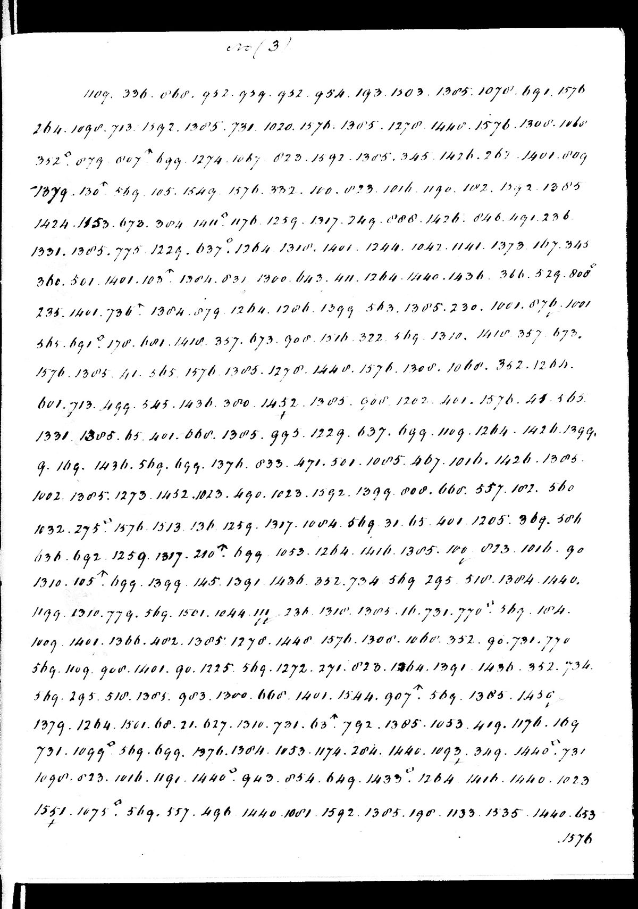
日付 パリ、1813年8月15日（日は公使館の発信簿による。暗号では「Au[gust] 1813」）
差出人 ウィリアム・ハリス・クローフォード、駐仏合衆国全権公使
宛先 ジェームズ・モンロー、国務長官、ワシントン
経路 公使館第3便、8月19日にナントのシャーバーン氏に託す（発信簿、画像0005）
請求記号 NARA, RG 59, Despatches from U.S. Ministers to France, vol. 17（マイクロフィルム M34、第17巻）、画像0027〜0029 (M34-017-0027 – M34-017-0029)
暗号 国務省の数字コード（約1600の数：語・音節・文字。「the」＝1385）。J・Q・アダムズがサンクトペテルブルクで用いたものと同じ

読み. 暗号群1371のうち1330を読みました（97.0％）。うち125は文意による読み（それを除くと87.9％）。未読の41群は印を付けています。読む前に、同じ巻にある別の公文（1813年9月3日付）――当時の行間解読が付いたもの――の2か所で符号表を検証し、85.8％と91.1％が一致しました（値を攪拌した表では2〜3％）。
記号：{x} 推定、[x] 文意による読み（符号表にない、または不確かな音節）、‹n› 未読の群、斜体はクローフォードが暗号の中に平文で残した語。
暗号群（頁ごと）
書かれたままの数字の転写（この筆跡の尾付きの「o」は8）。·語·＝平文で書かれた語、s＝上付きの「o」（複数）、^ と +＝群の上下の印、X＝縁で失われた群。
画像 0027
1109 336 868 932 939 932 954 193 1503 1385 1078 691 1576
264 1098 713 1592 1385 731 1020 1576 1385 1278 1448 1576 1308 1068
352s 879 807^ 699 1274 1067 823 1592 1385 345 1426 267 1401 809
1379 130^ 569 105 1549 1576 332 100 823 1016 1190 182 1592 1385
1424 1153 673 384 1411s? 1176 1259 1317 249 888 1426 846 491 236
1331 1385 775 1229 637s 1264 1318 1401 1244 1042 1141 1373 167 343
360 501 1401 103^ 1384 831 1300 643 411 1264 1440 1436 366 529 808s
235 1401 736^ 1384 879 1264 1286 1399 563 1385 230 1001 876+ 1001
565 691s 178 601 1418 357 673 908 1516 322 569 1310 1418 357 673
1576 1385 41 565 1576 1385 1278 1448 1576 1308 1068 352 1264
601 713 499 545 1436 380 1452+ 1385 908 1202 401 1576 41 565
1331 1385 65 401 668 1385 993 1229 637 699 1109 1264 1426 1399
9 169 1436 569 699 1376 833 471 501 1085 467 1016 1426 1385
1002 1385 1273 1452 1023 490 1023 1592 1399 808 668 557 182 560
1032 275'' 1576 1513 136 1259 1317 1084 569 31 65 401 1205 369 586
636 692 1259 1317 210^ 699 1053 1264 1416 1385 100+ 873 1016 90
1310 105^ 699 1399 145 1391 1436 352 734 569 295 518 1384 1440
1199 1310 779 569 1501 1044 111+ 236 1318 1385 16 731 770'' 569 184
1009 1401 1366 402 1385 1278 1448 1576 1308 1068 352 90 731 770
569 1109 908 1401 90 1225 569 1272 271 828 1264 1391 1436 352 734
569 295 518 1385 983 1300 668 1401 1544 907^ 569 1385 1450+
1379 1264 1501 68 21 627 1310 731 63^ 792 1385 1053 419 1176 169
731 1099s 569 699 1376 1384 1053 1174 284 1440 1093+ 349 1440s 731
1098 823 1016 1191 1440s 943 854 649 1433s 1264 1416 1440 1023
1551+ 1075s 569 557 496 1440 1081 1592 1385 198 1133 1535 1440 653
1576
画像 0028 g.
1576 1549 925 205 1440 1254 352 1472 569 1042+ 668 1385 746 731 1084
499 1443 1576 1501 249 463 528 1201 401 264 569 854 1385 1071 1264 1426
992 1520 1401 1544 1307 1056^ 1401 1093+ 545 1432+ 1535+ 1385 1424 161 449s
1576 1501 68 21 790 1385 145 1401 1544 938 1576 992 1392 1424 161 449s 1106
1016 693 1264 1385 205 1576 1385 16 1106 1075 1063 182 1501 1086 258 1362
1340 731 1020+ 565 501 257 1538 1426 1385 58 1576 1385 713 183 790 615
1576 1385 68 21'' 699 1399 1053 746 731 1084 249 463 528 401'' 1179 1199
360 1310 249 1021 1364 1576 1385 1071 735 1296 565 1264 1385 1278 1448
1576 1308 1068 352 1436 1012 501 875 569 1426 983 628 1384 1385 16
580 1502 1084 668 1384 169 1318s 1192 184 666 1400? 1464 776 1264 1401 1259
250 734 569 799 1301 1361 1385 235 1464 776 1576 1399 809 1033 728 1264
167 879 593 1109 1385 773 531 1576 1444 1440 1436 1549 398 1380^? 1385 345
1576 868 790 1384 1549 398 1300 834 860 732 1023 628 483 1385 531
1385 16 600 1480^ 1426 1272 271 823 1592 1385 1396 668 1384 879 646 1259
1317 699 1272 271 823 1592 1385 909? 1416 1440 577 458 591+ 692 315 692
130 668 657+ 1259 732 1023^ 628 1592 1385 531 1264 1385 345 41 565s 1401
1093+ 611 1186 1310 1385 153 1424 1153 673 668 1416 1393 90 360 1310 1272
271 520 487 545 560 731 897 569 1385 1105 700 1576 184 680? 271 776 169 627
231 1549 548 569 1385 41 565s 792 1068 653 1429 1384 1401 1544 360
1385 1507 1056^ 21 1576 1385 49 1264 1440 1436 1021 1364 897 360 ·my·
·intention· 569 617 1385 1562 901 1176 1401 1544 1084 792 ·saying· 908
854 1429 674 1395 1476 1086 ·justly· 1576 548 1385 16 908 184 21s 1264
1391 1436 1385 1233 1300? 806 1210 1576 1399? 692 1401 1544 ·informed·
1384 1401 1259 1317 ·represented· 692 1349 1424 1126 451 937 668 479 1507
1042 141 807 1429 129 ·who· 1186 1310 850^ 569 1068 653 668 854 1252 1092
1395s
画像 0028 dr.
1395s 1401 1544 1418 357 673 84 1392 ·representations· 1259 973^ 790
393 1155 1393 161 262 1259 221^ 999 250 1576 1385 ·folly?· 230 1002 565''
1576 934 ·sapient· ·Editors· 1426 1385 49 ·the· ·delicacy· 1576 1385 16'' 1105
700 1186 1310 799 451 1458s 1426 250 817 792 1385 ·result· 1576 934
44s 699 262 1126 269 786 668 1426 1501 380 1452+ 1233 1300 817
792 1385 203s 1576 1385 ·Campaign· 1176 1186 220 897 731 105 569
150 1495 1264 1440 1436 1385 1208 906 178 1384 1385 948 401 632
565 1436 464 479 1105 699 1503 569 1385 16 1264 1416 ·this· ·is· ·true·
668 1391 1436 352 734 569 ·doubt· 1440 169 1186 360 1128 137 628 569
1513 1550 1501 234 1222 378 1101 1426 1385 44 1190 1176 1401 1544 1027^
483 1385 ·result· 1576 1384 699 262 1126 269 786 1093+ 1310 64^ 1264
·this· ·view· ·of· ·this· ·subject· 877 439 1092 271 1549 925 734 901 1138 1148
446 167 41 565s 699 ·least· 901 1385 210 1264 1401 545 1036 663 1301
1045 1576 1385 1139 1576 1424 821 449 1176 1401 219 1063^ 62 999 1501
1125 1320 1595 1429 569 1385 1576 330 1016 1576 298 267 742 1403s 1264
1401 341 801 1348 1385 1107s 1576 1385 586 1202 565 352 925 280 1401 828
1016 1576 1385 289 1436 1375 1016 908 ·nature· 1576 1399 1139 1383 1172
580 1426 1385 826 637 1576 264 ·when· ·I· ·left· ·Washington· 1264 1440
1186 ·he· ·proposes· 569 264 1384 1401 1259 480 ·stood· 999 1125s 178 1179
1082+ 569 1259 1317 1426 1385 114+ 546 1576 1385 1458 21 1384 1549
·arrange· 637 1244 1323+ 109+ 1373 1190 71+ 1402 1452 1009 1401 1366 1436
1361s ·in· ·this· 1050 569 1365 1385 880 1019+ 1022 668 569 1115 1426 1515
1550 1385 779 1123 1019 1176 580 569 119 1372 1385 ·fund· 999 1176
1426 821 449s 1169 569 1310 605 1264 ·that· ·this· ·sum· 1199 1259 1317
736^ 1318 1385 1139 580 605 64^ 569 1385 78 1264 1401 1544 699
1501
画像 0029
1501 ·loss· 569 735 1592 1028 586 1399 ·previous· 680 720 1205 637
X 1385 1426 1443 401 1060 1433 1576 1078+ 1066 1044 1364^ 1426 1385
1444? 462 1264 1385 ·disposition· 1576 1392 880 1019+ 1022 792 1385 65
401 21 161 262 1259 1219^ 1476 569 ·conjectures· 100 897 208 1443 833
1020 1533 569 184 9 790 ·much· ·more· ·so· 1416 1385 1562 1576 1385 ·arrange-·
637 1244 1317 1044 1016 1535^ 1313 ·in· ·that· ·case· 169 161 262 1259
1323+ 118^ 1385 639 501 570+ 1576 1385 995 1229 637 1426 340? 1429 1440s
269 1023 501 707 ·by· ·means· 100 897 1426 1446 1401 937 569 ·the· ·legitimate·
·commerce· 1576 1385 49 1204 ·It· ·is· ·possible· 1384 1399 1436 360 1501
1026 735 1361 1043 1576 1385 1044 462 790 1401 ·believe· 1440 1436
692? 1440 1501 1232s ·substantially· 1190 1385 1507 1049 1219^ 1576
1418? 792 1385 1125s 569 1101 1401 1318 1535 893^ 1264 1385 1233 1073
601 1440 653 1576 1041 1452 ·produce· 1426 992 699 1385 145 1173
1399 580 1421 1376^ ·to· ·be· ·executed· 744 828s 1440 220 586 1384 1385
391 121 544 1458^ 1199 1259 1323+ 717 1075^ 1264 1384 1073 680? 1031
366 352 ·longer· 209 1436 1361s 1264 1385 1424 1152 1369 1576
1392 ·articles· 1426 29 1576 1385 775 43 880 1019+ 1022 1231 369^ 792
1385 16 1097 1498 897 1520 184 1462 490 401 999 152 1037 496 1259
·inundated· ·the· ·country· 569 31 1501 817 1384 1385 1424 1153 269 601
1320 1410 459 569 1259 388 327^ 118 1503 ·loss· 1264 1385 1044 462
1416 382 1404 1361 897 ·unobjectionable· 1426 216 1199 366 1310 1180+
653 1426 525 330 1028 1293 1401 1093+ 94 585 1440 ·entirely· 938 1576
464 1426 1385 846 491 236 1576 934 1034 981 1426 821 449 482 ·it· ·can· ·be·
·used· 692 501 467 823 1016 1576 1386 1573 136 1576 1385 216 1576 1426 821
449
[…]
352 151 1436 41 1373 1426 1399 1050 1383 1172 1042 1153s 1190 1385
469s 1576 1385 16
読んだ本文（英語）
Paris, ‹336› {Au}gust [1813]. Honorable the Secretary of State.
Si[r]. On the receipt of the Duke of Bassano's letter, [da]ted at [Dr]e[s]den on the first in[st]., I deter[mine]d to commence an of[fi]cial correspondence with him on the important subjects which have been so long in discussion between the two governments. Before I had completed my ‹343› note, I changed that determination. It is now [seven] days since I received that letter. During this time the pub[lic] [fun]c[tion]aries here [are] ignorant, or affect to be ignorant, of the communication of the Duke of Bassano. M[r] Warden is still the orga[n] of communication between the Americ[an] and the French government at Paris. In this character he is to attend divine [ser]vice in the [ca]the[dral] ‹1023 490 1023› on this day, and [thro]ugh him tickets of admission have been sent to such American gentlemen as have been presented at court.
If the correspondence should be commenced at this moment, there is no reason to expect that it would be ‹779› to a conclusion before the Emperor [re]turns to his capi[tal], [unless] the Duke of Bassano should return to Paris, or I should go to Dresden. There is no reason to expect the former, and I am opposed to the [lat]ter. A foreign Minister may be required by the court near which he resides to attend that court wherever it shall fix its residence within its own dominions. If it [pro]poses to [thro]w itself on the hospitality of another power, it has no right to com[mand] the represent‹499 1443› of a sovereign state to do the same. In France, after I am [ac]credited, I shall en[joy] [all] the immunities of a foreign Minister; but the moment I am out of France these immunities will [cease]. The power of the Emperor will secure him a ‹1086 258›table reception, [especially] in the ‹58› of the [R]hine; but many of the foreign Ministers at this court represent sovereigns who would not be so certain of the same reception.
The Duke of Bassano is [care]ful to inform me that the Emperor [was] absent, and that he ‹1318s› without his [au]thority. I have some reason to doubt ‹1301 1361› the sincerity of this declaration. My letter left Paris the [twenty]-[eighth] of [July]; it is an[swered] the first of {August}; but that answer did [not] [re][ach] me [until] the [eighth]. The Emperor was ‹1480› in Dresden on the third, and that letter might have been at Dresden on the ‹909›, if it travelled as [fast] as [mine], and yet have [re][ach]ed me on the [eighth].
The first communications I shall make will be the most important; and if they should not be [ad]dressed ‹487› entirely to the [pal]ate of his [Maj]esty, he may put an end to the communications by saying that I am not the accredited Minister of the United States. It is certainly not my intention to mar the object [for] which I am sent, by saying or doing anything ‹1476 1086› justly offend the Emperor or his Ministers. There is the greater danger of this, as I am informed that I have been represented as both impetuous and unaccommo[da]ting, a man who will be ‹850› to say and do harsh things. I am ignorant ‹84› these representations ‹973›, but [sup][pose] they must have produced from some of the silly publications of our sapient Editors in the United States.
The delicacy of the Emperor's [pal]ate will be ‹799›-u-lated in some degree by the result of our negotiations at St Petersburg, and in a still greater degree by the ‹203s› of the Campaign, which will probably recommence tomorrow. It is the general opinion here that the Russian mediation is very un[pal]atable to the Emperor. If this is true, and there is no reason to doubt it, he will not [per]mit me to advance a single [ste]p in the negotiation with which I am charged [until] the result of that at St Petersburg shall be known. This view of this subject furnishes another reason for [post]poning my communications, at least for the present.
I enclose you [a] copy of the plan of indemnities which I procured yesterday from a person belonging to the office of ex[terior] relations. I [find] [among] the papers of the legation no other [ev]idence of the existence or nature of this plan than what was in the Department of State when I left Washington; and it will be proper to state that I have understood from persons here who seem to have been in the confidence of the late Minister that an arrangement had been concerted with commer[ci][al] capi[tal]ists in this country to take the licences and to pay in advance the ‹779› per cent which was to ‹119›te the fund from which indemnities were to be made; and that this sum would have been received before the plan was made known to the President.
I am at a loss to re[c]oncile this previous arrangement ‹X› the injunction of secrecy contained in the [con][vention]. The disposition of these licences by the American Minister must have given rise to conjectures ‹100 897› prejudi[ci][al] to his character, much more so if the object of the arrangement had been concealed ‹1313›. In that case he must have been considered the mere tool of the French government in filling its [ex][ch]equer by means [equal]ly in[jur]ious to the legitimate commerce of the United States ‹1204›. It is possible that this is not a ‹1026 735 1361 1043› of the con[vention]; but I believe it is ‹692 1440› a[gree]s substantially with the account given of ‹1418› by the persons to ‹1101› I before al[lu]ded. The great sc[ar]city of [colon][ial] produce in France at the moment when this [was] [in]tended to be executed renders it probable that the sum [con][tem]plated would have been raised. That scarcity now no longer [per]sists, and the im[por]tation of these articles in ‹29› of the two ‹43› licences granted by the Emperor shortly after his [re][tur][n] from [Mos]cow have inundated the country to such a degree that the importers [are] believed to have suffered considerable loss. The con[vention], if strictly unobjectionable in principles, would now be wholly inefficient. I shall therefore [keep] it entirely out of [view] in the discussion of our claims for indemnities, unless it can be used as evidence of their [ad]mission of the principle of indemnities.
Among the Papers of the Legation delivered me by Mr Thomas Barlow is a copy of a letter in Cypher from John Q. Adams esquire. The original has been sent to the Department of State by Mr Barlow before my arrival. — It is believed that Soult has met with a reverse in Spain but to what extent is wholly unknown. No more is [permit]ted in this country than what comports with the views of the Emperor. With sentiments of high respect I am Sir Your most Obedient & very humble Servt.
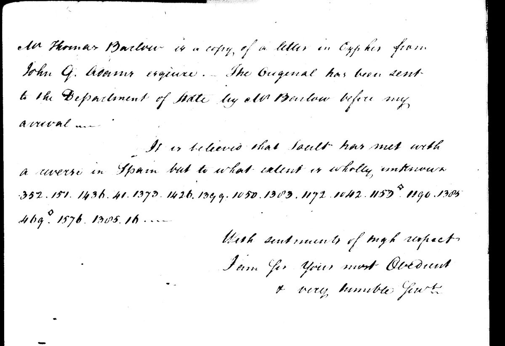
翻訳
作業訳。‹ › の部分は未読です。
パリ、1813年8月‹…›日。国務長官閣下。
拝啓。8月1日付ドレスデン発のバッサーノ公の書簡を受け取ったとき、私は両国政府のあいだで長く懸案となっている重要な問題について、同公と正式の文通を始めようと決めました。しかし覚書‹…›を書き終える前に、その決心を変えました。あの書簡を受け取ってから［七］日になります。その間、当地の官吏たちはバッサーノ公の通知を知らない、あるいは知らないふりをしています。ウォーデン氏はいまもパリにおける合衆国政府とフランス政府のあいだの連絡役であり、その資格で今日、大聖堂‹…›での礼拝に出ることになっています。また宮廷に紹介されたアメリカ人紳士たちには、彼を通じて入場券が送られました。
いま文通を始めても、皇帝が首都に戻る前に‹結論に›達すると期待する理由はありません。バッサーノ公がパリに戻るか、私がドレスデンへ行かないかぎりは。前者は期待できず、後者には私は反対です。外国の公使は、駐在する宮廷が自国の領内のどこに居を定めようとも、そこへ随行するよう求められることがあります。しかし宮廷が他国の歓待に身を寄せようとするなら、主権国家の代表に同じことを命じる権利はありません。フランスでは、信任されれば私は外国公使としてのあらゆる特権を享受しますが、フランスを出たとたん、その特権は失われます。皇帝の力は彼自身には‹…›歓迎を保証するでしょう。とくにライン‹…›では。しかしこの宮廷にいる外国公使の多くは、同じ歓迎を確信できない君主を代表しています。
バッサーノ公は、皇帝が不在で、自分は‹…›その許可なしに、と念入りに知らせてきます。この言明の誠実さを疑う理由が私にはあります。私の書簡は［7月28日］にパリを発ち、返書は8月1日付ですが、私に届いたのは［8日］でした。皇帝は3日にドレスデンに‹…›、私の書簡が［私のもの］と同じ速さで運ばれたなら‹…›日にはドレスデンに着き、それでも返書は［8日］に私に届きえたのです。
私が最初に行う通知がもっとも重要です。それが陛下の「お口に」‹…›合わなければ、陛下は、私が合衆国の信任された公使ではないと言って、通知を打ち切ることができます。皇帝やその大臣たちを正当に怒らせることを言ったりしたりして、使命の目的を損なうつもりはもちろんありません。その危険はなおさら大きいのです。聞くところでは、私は性急で融通のきかない人間、きついことを言いもしやりもする男だと伝えられているそうです。こうした評判が‹…›かは知りませんが、合衆国の賢明なる新聞編集者たちの愚かな記事のいくつかから出たものに違いないと思います。
皇帝の繊細な「お口」は、サンクトペテルブルクでの交渉の結果によってある程度、そしてそれ以上に、おそらく明日再開される戦役の‹…›によって‹左右›されるでしょう。当地の一般的な見方では、ロシアの調停は皇帝にとってきわめて不快なものです。それが本当なら――疑う理由はありません――、サンクトペテルブルクの結果がわかるまで、皇帝は私に託された交渉を一歩も進ませないでしょう。この見方も、少なくとも当面、通知を見合わせるもう一つの理由です。
昨日、外務省に属する人物から入手した賠償計画の写しを同封します。公使館の文書の中には、この計画の存在や性格について、私がワシントンを発ったときに国務省にあったもの以外の証拠は見当たりません。また申し上げておくべきは、故公使の信頼を得ていたらしい当地の人々から聞いたところでは、この国の商業資本家たちと取り決めが結ばれ、彼らが許可証を引き受け、賠償の原資となる‹…›パーセントを前払いすることになっていた、そしてその金額は、計画が大統領に知らされる前に受け取られていたはずだ、ということです。
この事前の取り決めと、協定に含まれた秘密保持の命令とを、私はどう両立させればよいかわかりません。合衆国公使によるこれらの許可証の処分は、その人物の評判を害する臆測を生んだに違いありません。取り決めの目的が隠されていたなら、なおさらです。その場合、彼は合衆国の正当な通商を［同様に］害する手段でフランスの国庫を満たす、フランス政府の単なる道具と見なされたに違いありません。これが協定の‹正確な説明›でない可能性はありますが、先に触れた人々の話と大筋で一致すると私は考えます。この計画が実行されるはずだった時期、フランスでは植民地産品がひどく不足していたので、予定の金額は集まったでしょう。その不足はもはやありません。皇帝がモスクワから戻ってまもなく与えた二つの‹…›許可証‹によって›これらの品の輸入が国中にあふれ、輸入業者は大きな損失を被ったと考えられています。協定は、原則において申し分ないとしても、いまではまったく効果がないでしょう。したがって私は、賠償要求の協議においてこれをまったく表に出さないつもりです。ただし、彼らが賠償の原則を認めた証拠として使える場合は別です。
［平文］トマス・バーロウ氏から引き渡された公使館文書の中に、ジョン・Q・アダムズ殿の暗号書簡の写しがあります。原本は私の着任前にバーロウ氏が国務省へ送りました。スールトがスペインで敗北を喫したと信じられていますが、その程度はまったくわかりません。［暗号］この国では、皇帝の意向にかなうこと以外は許されません。［平文］深甚なる敬意をこめて。
注
- 1813年8月15日は聖ナポレオンの祝日で、大聖堂での礼拝とウォーデンが配った入場券はそのためです。プレスヴィッツ休戦は8月16〜17日に満了し、「戦役」（ドレスデン、ライプツィヒ）は実際に書簡の翌日に再開しました。
- ドレスデンのバッサーノ：ドレスデン発8月1日付のバッサーノの書簡と、クローフォードの8月15日付第一書簡は1814年に印刷されました（American State Papers, Foreign Relations 第3巻 第262号）。暗号書簡は印刷されていません。解読した「dated at Dresden on the first」は印刷された書簡と一致します。
- デイヴィッド・ベイリー・ウォーデンはパリ駐在領事で、バーロウの死（1812年12月）後に代理公使を名乗りました。クローフォードは1814年に彼を解任します。
- ロシアの調停：アルバート・ギャラティンとジェームズ・ベイヤードは、アレクサンドル1世が申し出た米英間の調停のため、1813年7月からサンクトペテルブルクにいました。
- 賠償計画と「秘密協定」：公使館の発信簿（画像0005）は、この書簡とともに「Secret convention with the French Government in cypher」を送っていますが、マイクロフィルムには入っていません。クローフォードによれば、バーロウは資本家たちと、輸入許可証を引き受け、拿捕されたアメリカ船の賠償基金のための一定割合を前払いさせる取り決めをしていました。
- コード：一つの群（1264）は句点として使われ、当時の解読者は他の公文でもこれを書き込みません。日付の数字には専用の群があります（932＝1、939＝8、954＝3）。クローフォードはところどころ単語を平文で残し（「sapient Editors」「silly」「when I left Washington」）、ときに音節を取り違えます。文意による読みには印を付けました。
方法と出典
方法：（1）計算前に手順を記し、ダニエル・ブルドー氏の符号表を固定（SHA-256）。（2）1813年9月3日付第4号公文（画像0031〜0032）の2か所で検証。当時の行間解読を対照とし、194/226と224/246が一致（値を攪拌した同じ表では99パーセンタイル0.027と0.020）。（3）8月15日付書簡の1371群を転写して読解。いくつかの値は同じ巻の行間解読から補い（1264＝句点、1323＝been、580＝was など）、その他は文意によるもので印を付けました。
手がかり：ダニエル・ブルドー氏の目録、652番 ↗（「open」、2026年10月27日確認）。符号表：ダニエル・ブルドー、cyphersolver、targets/jqa ↗（J・Q・アダムズの公文 1809〜1814 から再構成）。先行研究の確認（2026年10月27日）：American State Papers, Foreign Relations 第3巻 ↗（同日付の別書簡、平文）。『ジェームズ・マディソン文書』の編者は8月15日と9月3日の暗号書簡の主題を要約していますが、本文は載せていません。ウェブ検索：該当なし。この巻にあるクローフォードの他の暗号公文の多くには当時の行間解読がありますが、この書簡にはありません。読み：Brice Dudout（Claudeと共同）。
ロペ・ウルタード・デ・メンドーサからカール5世へ：「われらの最大の恐れ」、トルデシーリャス、1520年12月10日
コムネロスからトルデシーリャスを奪回して5日後、カスティーリャの統治者たちのもとに置かれたカール5世の腹心ロペ・ウルタード・デ・メンドーサは、同じ日に2通の書簡を書きました。平文の1通は町の略奪とフンタ（評議会）の代表たちの捕縛を語り、ダンビラが19世紀末に刊行しています。もう1通は全文が暗号で、平文では書けないことを伝えます。提督は統治を引き受けるのをためらい、デニア侯は憎まれ、軍は「ひどく指揮が悪く」、忠誠をつなぎとめるためにハエン司教職とすべての空席を保留すべきだ、と。束に挟まれた文書係のメモは、鍵を9月23日の書簡に求めよと記していましたが、そこにはありませんでした。私たちは書簡そのものから鍵を再構成しました。
日付 1520年12月10日（裏書「Carta de Lope Hurtado de x de dez.」）。平文書簡 AGS, PTR,LEG,2,36,6 と同日
場所 トルデシーリャス → カール5世（当時ドイツ、ヴォルムス）
差出人 ロペ・ウルタード・デ・メンドーサ、カール5世の宮廷貴族。コムネロスの反乱中、統治者たちのもとに派遣
宛先 カール5世、カスティーリャ王・選出皇帝
典拠 シマンカス総文書館、Patronato Real, PTR,LEG,2,36,8, f. 1r–1v（PARES 12988891）。暗号文は未刊。同日の平文書簡（36,6）は A. Danvila, Historia crítica y documentada de las Comunidades de Castilla（Memorial histórico español XXXVI 所収）、688–690頁に収録。
暗号 文字の同音異字換字（約35記号：斜線付き o＝t、十字＝s、9＝a、ſ＝g、⊤＝z など）。語は分かち書き。人物には点を付けた略号（·fre·、·lis·、·los·、·lus·、·ym·）。書簡の末尾は平文混じり
キーワード el ·fre· está ganoso de asiento · el marqués de Denia · el obispado de Jaén · el Rey Católico quando estuvo en Nápoles · el mayor temor que tenemos · tres fynes
解読の状況. 私たちの知る限り、初めて公表される解読です。暗号語は約920（1r：44行、1v：42行、末尾は平文混じり）。読めたのは語の約97.7％（確実約95.4％、推定読み {x} 約2.3％）。約2.3％は未解決 ‹…› として本文に示しています。疑わしい12記号は、Brice Dudout による的を絞った目視の再読（解釈を示さない記号形の一覧表）で判定しました。点付き略号（·fre·、·lis·、·los·、·lus·、·ym·）は未解決です。暗号が語を分けて書くため語単位で数え、‹…› は2語として数えました。
凡例：{x}＝推定読み、‹…›＝未解決箇所、[x]＝文意による補い、·x·＝原文の点付き略号（未解決）、
校訂本文
El ·fre· está ganoso de asiento con los de la Junta como quiera que fuese ; dize que lo haze por el mal aparejo que {ay} de sostener la gente que aquí está. Hizo a la reina que, delante del ·y· de muchos cavalleros, dixiese que mandava que toda la gente de la Junta se derramase, e mandólo tomar por testimonio para enviar a requerir con él a don Pedro Girón ·y· a las ciudades. El conde de Benavente, marqués de Astorga, conde de Miranda, comendador mayor no se hallaron allí ; sabido, entendió luego ·ym· en remediarlo. E así fueron al ·fre· y el testimonio se rasgó ‹…›, no por voto suyo : antes estava en medio. E aun estando así, dixo que a la reina tenía por cuerda, e no y ase cada día mill vezes, de que {temo} que algún día haga cosa sobre los conciertos que sea muy dañosa.
Escrívale ·lis·, encomendándogelo todo a él ·y·, rogándole que, pues ya lo ha, pues esto [está] en tan buen estado, que trabaje que se conserve sin que se asiente cosa contra las preeminencias reales. Escriva vuestra alteza de su mano algunos renglones, que todo es menester, por a él [y] al conde de Benavente, encomendándole mucho que mire que en esto no se haga cosa de{s}ordenada por la necesidad ‹…›, porque si él quiere nada se puede hazer que sea malo, porque todos los otros que aquí están har[í]anlo que de partes de vuestra alteza se les dixiere ; y {certifico} que les ‹…› vuestra alteza su venida.
Y que si lo que acá ay no bastare para sostener el e{x}ército, que vuestra alteza {mandará} prove{e}r de allá ; porque de ‹…› dezía que no ay con que se {sostener[á]}, he miedo que hiziesen algo ; e aun si se pudiese enviar algún crédito, lo tendría por mejor. E sobre este artículo mande vuestra majestad despachar luego posta, porque conviene.
El marqués de Denia viene aquí con más pasión de la que era menester, {segund él} tiene ; está muy mal quisto a muchos : les ha pesado tanto de su venida como de averlo saqueado. Vuestra alteza le deve mandar que se temple mucho, trabaje con amor de contentar los criados de ·los· y de servir a la señora ·lus· y la ‹·tar·›, que es ‹…› mejor que lo solían hazer, porque dizen que la tenían mal contenta, que agora le ha pesado de su venida ; y aunque ·los· no ha holgado con él. Y pues está contenta ·hs· de aver echado las mugeres, que no cure de hazer mudança hasta la venida de vuestra alteza, sino sostener en el estado que está, {para} que dizen que trae determinación de revolver todo ; y según la ‹…›ción que tienen y la mala [vo]luntad con que les reciben, creo que no sería bueno lo que hiziese.
El obispado de Jaén e otra qualquier vacante que oviere deve vuestra alteza detener, de no ‹…› proveerla, porque acá an muchos que esperan que vuestra magestad les hará merced, y esta esperança los obliga a servir ; quando se dé a uno, se estragará la voluntad de los otros. El Rey Católico, quando estuvo en Nápoles, tuvo muchos obispados y encomiendas y tenencias sin proveer hasta su venida. Pues pero está agora todo, que estava entonces : más necesidad tiene vuestra magestad de hazer lo al‹o› que {p}ueda a los que desean servir [a] vuestra alteza.
El ·fre· está agora en aceptar la governación, con que dize que la tendrá {entre tanto} que se haze correo a vuestra majestad {para} que le envíe los poderes como los pide ; ·ni· quería que la aceptase ·ni· que vuestra majestad le enviase los poderes, porque no tiene sosiego para tal cargo, que cada día muda el pensamiento en mill cosas, ·y· todavía tiene fin a hazer por el reino. Si la aceptare, vuestra majestad mandará proveer lo que conviene.
El conde de Haro haze el oficio de capitán, como las otras cosas. Como ay aquí muchos señores, son mal de concertar para lo que es menester, especial ·fre· e el conde de Benavente, que {e} tiene unas ‹…›, por {donde} ay muy mala orden ; e deste e{x}ército y la gente muy mal mandada, como es de muchos, que es el mayor temor que tenemos. {E} cada ora se tiene por mayor ventura tomar este ‹…›, porque, según la manera que ay, creo que todo se {perderá} si esto no se acertara. Por‹…›
a unos parece que {e} sería bien que el cardenal y algunos del Consejo y contadores viniesen aquí, y que de aquí se usase de justicia e de hazienda ; y que el condestable [e]stuviese [en] lo de Burgos con aquellas montañas, e a otros que este lugar ‹…› proveído, y con la gente que era menester para guardarle ; y que los governadores y Consejo e contadores se junten en Burgos. Para esto ay un gran inconveniente : estar el marqués de Denia, tan mal quisto aquí de los criados de ·lis· y de todo el {pueblo} ; e si {se da a otro}, agraviar sería. Vuestra alteza lo mande mirar todo e mandar proveerlo, que es más a su ‹…› servicio.
Estos grandes, si a r‹…›, tienen tres fynes : lo primero, lo q[ue] les cumple ; y después, poder [con] vuestra alteza ; luego, el bien del rreyno, si ellos quedasen sin necesidad. Creo q[ue] no les pesaría de q[ue] vuestra magestad les tuviese.
翻訳
·fre· はどのような条件でもフンタの者たちとの和解を望んでいます。ここにいる兵を養う手立てが乏しい{から}だと言います。彼は女王に、·y· と多くの騎士の前で、フンタの兵はすべて解散せよと命じると言わせ、それを証書に取らせて、ドン・ペドロ・ヒロン ·y· 諸都市に要求しようとしました。ベナベンテ伯、アストルガ侯、ミランダ伯、大騎士団長はその場にいませんでした。知らせを受けた ·ym· はすぐに手を打ち、皆で ·fre· のもとに行き、証書は破られました ‹…›。彼の意見ではなく、彼は中間に立っていました。それでも彼は、女王は正気だと思うと言い、‹…› 日に千度も。それゆえ{私は恐れます}、いつか彼が協定について非常に有害なことをするのではないかと。
陛下は ·lis· に書簡を送り、すべてを彼 ·y· に託し、事態がいまやこれほど良い状態にあるのだから、王の大権に反することが取り決められないよう保つ努力をせよと頼まれますように。陛下は自筆で数行を、彼［と］ベナベンテ伯に書かれますように。すべてが必要です。必要に迫られて無秩序なことがなされぬよう、よく気をつけるよう申し付けてください。彼が望めば悪いことは何もなされえません。ここにいる他の者は皆、陛下の名において言われたことを行うでしょうから。そして{私は保証します}、‹…› 陛下のご来訪を。
もしここにあるもので軍を維持できなければ、陛下があちらから補給を{命じられます}ように。‹…› から、軍を養うものが何もないと言われており、彼らが何かをしでかすのではないかと恐れます。何らかの信用状を送れるなら、それが最善と考えます。この件については、陛下はただちに急使をお送りください。必要なことです。
デニア侯は、必要以上の激しさでここに来ます。{彼の}持つ……。彼は多くの者にひどく嫌われており、彼の来訪は町を略奪されたのと同じほど彼らを苦しめました。陛下は彼に、大いに自制し、·los· の家臣たちを満足させ、·lus· の奥方と ‹…› に、以前よりよく仕えるよう努めよと命じるべきです。彼女は不満な状態に置かれていたと言われ、いま彼の来訪を苦にしているからです。しかし ·los· は彼に満足していませんでした。そして彼女は女たちを追い出したことに満足しているので ·hs·、陛下のご来訪までは何も変えようとせず、現状を保つべきです。彼はすべてをひっくり返すつもりで来ると言われており、彼らの ‹…› と、彼らが迎えられる悪意を考えると、彼のすることは良くないと思います。
ハエン司教職、および生じるあらゆる空席は、陛下は授けずに保留すべきです。ここには陛下の恩寵を望む者が大勢おり、その望みが彼らを奉仕に縛っているからです。一人に与えれば、他の者たちの意欲が損なわれます。カトリック王はナポリにおられたとき、多くの司教職、騎士団領、城代職を帰還まで授けずにおかれました。しかし、いまや万事は当時と同じ状態にあり、陛下には、陛下に仕えたいと望む者たちのために{できる}ことを ‹…› なさる必要がいっそうあります。
·fre· はいま統治を引き受けようとしています。ただし、求める権限を陛下が送られるよう急使を出す{までの間}、統治にあたる、という条件です。私は、彼が引き受けることも ·ni·、陛下が権限を送られることも ·ni· 望みません。彼にはそのような職に必要な落ち着きがなく、毎日千のことについて考えを変えるからです。·y· それでも王国のために尽くす意志はあります。彼が引き受けるなら、陛下はしかるべく手配なさいますように。
アロ伯は、他のことと同様、隊長の職を務めています。ここには多くの領主がいるため、なすべきことについて折り合いが悪く、とくに ·fre· とベナベンテ伯は ‹…› を持ち、そのため大変な無秩序があります。この軍では兵の指揮がひどく悪く、頭が多い軍の常として、それがわれらの最大の恐れです。そして時々刻々、この ‹…› を取ることが大きな幸運と考えられています。今の成り行きでは、これがうまくいかなければ、すべてが{失われる}と思います。‹…›
ある者たちは、枢機卿と顧問会議の何人か、および会計官たちがここに来て、ここから司法と財政を行うのがよいと考えています。また大元帥がブルゴスとあの山地を、他の者がこの地を、‹…› 補給し、守るのに必要な兵をもって担当し、統治者たちと顧問会議と会計官たちはブルゴスに集まるのがよいと。これには大きな難点があります。デニア侯がいること、それもここで ·lis· の家臣たちと全{住民}にひどく嫌われていることです。そして他の者に与えれば、彼を侮辱することになります。陛下はこれらすべてを検討させ、手配を命じられますように。それが陛下の ‹…› ご奉仕に最もかないます。
これらの大貴族は、もし ‹…› なら、三つの目的を持っています。第一に自分たちの利益、次に陛下のもとでの力、そして王国の善、ただし自分たちが窮乏しない限りで。陛下が彼らを［お手元に］置かれることを、彼らが嫌がるとは思いません。
読解と歴史の注
- 時期。統治者たちの王軍は1520年12月5日、コムニダーデス評議会の所在地で女王フアナの居所でもあったトルデシーリャスを奪回しました。町は略奪され、代表の一部が捕らえられました。同日の平文書簡（36,6、ダンビラ刊行）は略奪を語り、捕虜の「覚書」を付けています。暗号書簡はその内密の補足です。
- ·fre·。フンタと交渉し、「統治」を引き受けるのをためらう大貴族を指します。おそらく1520年9月に共同統治者に任じられ、コムネロスとの和解を支持したカスティーリャ提督ファドリーケ・エンリケスで、「fre」はその名の略と考えられます。ただし証明されていない仮説です。他の略号（·lis·、·los·、·lus·、·ym·、·y·）は未同定で、·lus· と ·los· はトルデシーリャスの女王と王家の家政を指すように見えます。
- 女王を「正気」とみなす。フアナの精神状態は、彼女を統治させようとしたフンタにとっての政治的争点でした。·fre· が彼女を正気と言ったことは、ロペ・ウルタードにとって、彼が「協定について」譲歩しかねない兆しでした。
- デニア侯。ベルナルド・デ・サンドバル・イ・ロハス。トルデシーリャスの女王の家政を預かり、9月にコムネロスに追われ、町の奪回後に復帰しました。ロペ・ウルタードは彼が「すべてをひっくり返すつもりで来る」ことを恐れています。「女たちを追い出した」は、おそらく女王の侍女たちを指します。
- ナポリの先例。カトリック王フェルナンドは1506–1507年のナポリ滞在中、司教職・騎士団領・城代職を帰還まで授けずにおきました。ロペ・ウルタードは恩寵への期待を保つため、同じ方針を提案しています。
- 平文の結び。1v の最後の数行は、記号と普通の文字の語（「fynes · lo primero · lo q…」「vra altza」「el bien del rreyno」「ellos quedasen」「creo q no」「de q vra magestad」）が混じり、暗号と平文が続けて読めます。
- 未解決の箇所。1r の26行の一語（「porque de ‹…› dezía」）。その第3記号は、Brice Dudout の再読によれば「中ほどから下へ線が出る丸」で、表に確実な対応がありません。ほかに孤立した数語（1r 11・21・36・42行、1v 2・21・25・31・37・38行）、いったん見落として補った 1v の一行の末尾（「no se acertara, por‹…›」）、略号 ‹·tar·›。
- 誤記と重複。1r で暗号係は「que lo solían hazer porque dizen」を二度写しています（36行末と37行頭）。翻訳では一度だけ訳しました。1v に抹消された語が一つあります。
方法・検証・クレジット
方法：(1) PARES の画像から記号を作業用の表記で転写。(2) この暗号は、J. パスのメモが示した1520年9月23日の書簡（PTR,LEG,2,36,2）の鍵では読めません。値が合わないためです。(3) 繰り返される「vuestra magestad」から、文字の同音異字換字が破れました。鍵 K1 は 1r の1–16行だけで作り、固定しました（SHA-256）。(4) 検証用に取り分けたテキスト：固定後に転写した 1v の1–11行では、スペイン語辞書にある語の割合が 0.747 で、値を並べ替えた対照鍵200通りの99パーセンタイル 0.326 を大きく上回りました。解読前に転写・固定した第二の部分（1v の11–17行）では、鍵 K2 で 0.827（対照 p99 0.519）、最終鍵 K4 でも 0.827（p99 0.519。K4 は K3 から、Brice Dudout の再読で退けられた値 ſ＝s を除いたもの）です。(5) 全文を語ごとに読み、よく似た記号は辞書（『ドン・キホーテ』、ダンビラ）で判定しました。割合は「解読の状況」を参照。
先行研究（2026年10月27日確認）。ダニエル・ブルドーの目録はこの書簡を未解決に数え、彼のリポジトリには1520年の書簡の読みはありません（1522–1523年のみ）。ダンビラは9月23日の書簡（解読付き）と12月10日の平文書簡を刊行していますが、この書簡は収録していません。PARES とウェブの検索でも見つかりません。私たちの知る限り、初めて公表される読みです。
クレジット。掲載：ダニエル・ブルドーの目録 No. 626。文書：Ministerio de Cultura (España), Archivo General de Simancas, PTR,LEG,2,36,8, PARES（画像はオンラインで閲覧可、ここには転載していません）。束の中のフリアン・パスのメモ。同日の平文書簡：A. Danvila, Memorial histórico español XXXVI。的を絞った目視の再読：Brice Dudout（一覧表 C06、12記号）。転写・解読・本文・翻訳・注：Brice Dudout with Claude、CC BY 4.0。
フェリペ4世からアルボルノス枢機卿へ：「いかなる場合にも手を引かぬように」、マドリード、1648年7月24日
1648年、インノケンティウス10世は各地の教皇大使を交代させていました。フェリペ4世は自国の大使を留めたいと望みます。1644年からマドリード駐在の教皇大使、タルソス大司教ジュリオ・ロスピリオージ――のちの教皇クレメンス9世です。王はこれを教皇庁駐在の自国大使ジル・デ・アルボルノス枢機卿に、誰も読んでいなかった暗号で書き送りました。両宮廷の奉仕にとって「これ以上ふさわしい人物はありえない」、ゆえに「いかなる場合にも」手を引かぬように、と。書簡は解読文のない二通の暗号写しで残っています。鍵は同じ家文書の別の紙、1649年にアルボルノスあてに暗号化されたルイス・デ・アロの書簡の一章から得られました。その平文の写しが保存されていたのです。
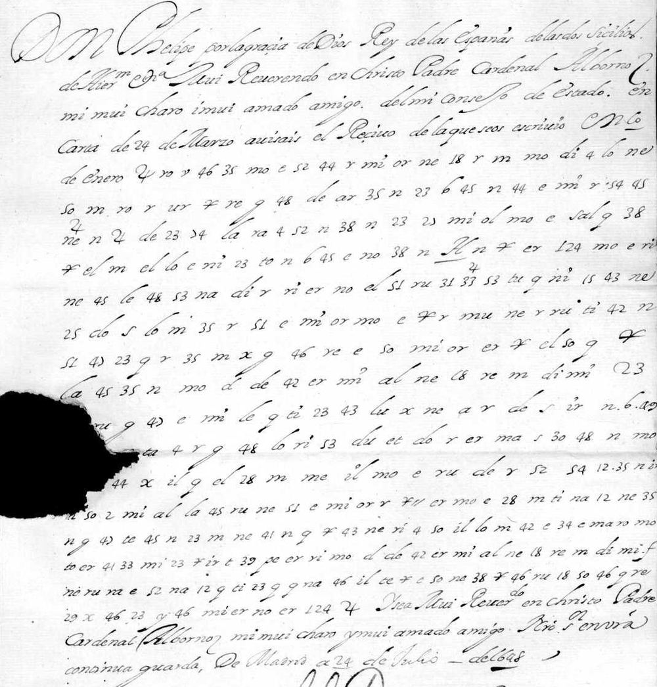
日付 1648年7月24日。同じ書記の手による二通（正本と副本）
場所 マドリード → ローマ
差出人 フェリペ4世（「Yo el Rey」）、秘書ペドロ・コロマ副署
宛先 ジル・デ・アルボルノス（1581–1649）、枢機卿、国務会議顧問、教皇庁駐在スペイン大使
典拠 貴族文書館（トレド）OSUNA,CT.2,D.32(1-2)（PARES 3939398）：写しA f. 1r–2r（画像2–3）、写しB（画像5）。鍵：OSUNA,CT.11,D.1(1-6)（PARES 3939336）画像1と3。
暗号 音節暗号：音節を別の音節に「変装」させる（子音を替え母音は保つ：mo＝co、ne＝de、ra＝sa、la＝pa、ti＝mi）、5つ組の数字（35–39＝la le li lo lu、45–49＝ra…ru、50–54＝ta…tu）、単独の文字（2＝n、n＝s、m＝r、g＝y/p）、少数の符号（✗＝que、sal＝Su Santidad）
キーワード la continuación del arçobispo de Tarso · muy digno de favor · no puede haver instrumento más a propósito · que no desistáis por ningún caso
目録と画像（PARES）↗
ブルドー目録 No. 747 ↗
鍵となった文書：OSUNA,CT.11,D.1（PARES）↗
解読の状況. 私たちの知る限り、初めて公表される解読です。暗号群は359（写しB、Aと一群ずつ照合）。読めたのは約98％（確実約97％、推定 {x} 約1％）。未解決 ‹…› は6群で、うち4つは符号（‹74›、‹A›、‹124›×2、‹✗11›）。二通は写しの異同を除いて一致します（注を参照）。
凡例：{x}＝推定読み、‹…›＝未解決の群、[x]＝文意による補い。原文の平文部分は灰色。綴りは書簡のまま、句読点とアクセントを補いました。
校訂本文
En carta de 24 de março avisáis el recibo de la que se os escrivió en 10 de enero so{b}re la continuación del arçobispo de Tarso, aunque se provean las otras nunciaturas. Ve{o} ‹74› [que] pasastis los oficios con Su Santidad, y lo que ‹el› respondió mostrando los ‹A›s que en ‹124› considera ;
pero todavía, siendo este sujeto muy digno de favor por la atención con que acude a su ministerio y a la representación en que está, y que para las conveniencias del servicio [de] su príncipe y mío no puede haver instrumento más a propósito, buelvo a encargaros continuéis y esforcéis con Su {Be}atitud las instancias para su detención ‹✗11› en conformidad de las primeras órdenes, y que no desistáis por ningún caso, como en negocio que incluye en sí conveniencias del servicio de Su Santidad y mío ;
y daréisme quenta de lo que resultare y se fuere ofreciendo en ‹124›. Y sea muy reverendo en Christo padre cardenal Albornoz, mi muy charo y muy amado amigo, Nuestro Señor en vuestra continua guarda. De Madrid a 24 de julio de 1648. Yo el Rey. Pedro Coloma.
翻訳
［3月24日付の貴書で、1月10日に書き送った書簡の受領を知らせてきた件］タルソス大司教の留任について。たとえ他の教皇大使職が補充されるとしても。‹…› 貴殿が教皇聖下に働きかけたこと、また聖下が ‹…› において考慮する ‹…› を示しつつ答えたことを、余は承知した。
しかしながら、この人物は職務とその代表する地位に注ぐ心配りのゆえに大いに恩顧に値し、彼の君主と余との奉仕の利益にとって、これ以上ふさわしい手立てはありえないので、余は改めて貴殿に命ずる。最初の命令に従い、彼を留めおくための請願を教皇聖下のもとで続け、いっそう強めよ ‹…›。そして、教皇聖下と余との奉仕の利益を含む案件であるから、いかなる場合にも手を引いてはならない。
その結果と、‹…› において生じることを余に報告せよ。［平文の結語：］キリストにおいて至尊なる父アルボルノス枢機卿、わが親愛なる友よ、主の御守りのあらんことを。マドリード、1648年7月24日。余、王。ペドロ・コロマ。
読解と歴史の注
- タルソス大司教。ジュリオ・ロスピリオージ（1600–1669）。タルソス名義大司教、1644–1653年スペイン駐在教皇大使。のち国務長官枢機卿、1667年に教皇クレメンス9世。本書簡が受ける1648年1月10日の書簡も同じ文書群に目録があり、王はすでにアルボルノスに「スペイン駐在教皇大使タルソス大司教が駐在を続ける」よう教皇に働きかけることを求めていました（OSUNA,C.1983,D.7、未デジタル化）。
- 「彼の君主と余」。教皇大使は二人の主に仕えます。代表する教皇と、駐在先の王です。王はロスピリオージの留任が両宮廷の「奉仕の利益」になると主張します。実際ロスピリオージは1653年までマドリードにとどまりました。
- 受取人。ジル・デ・アルボルノス枢機卿は元ミラノ総督、ローマ大使、国務会議顧問。まもなくローマを離れ（1649年帰国許可）、1649年12月に没しました。大使館の文書は、1649年にローマで後任となった第7代インファンタード公の家文書に入り、のちオスナ公家の文書となりました。
- 鍵。同じ文書群（OSUNA,CT.11,D.1）に、ルイス・メンデス・デ・アロからペニャランダ伯への書簡（マドリード、1649年9月25日）のカタルーニャ軍に関する一章が「アルボルノス枢機卿に送るため」平文（画像1）と暗号（画像3）で残っています。これが本書簡の暗号です。二度同じように暗号化された句「dentro de Cataluña y」（2 ℓ48 ne ma so 39 40 g）が対応づけの糸口になりました。
- 二通の写し。写しA（画像2–3）は半行を重複して書き、上に「4」を付けて抹消しています。Bも「sujeto」の一群を同様に抹消。写しの異同：「el respondió」（A ni＝di、B mi）、「Su Santidad」（A ra＝sa、B ne）、行替えでの g（y）の重複（両方）。Bが鍵から外れる箇所はAに従いました。
- 未解決の箇所。ここにしか現れない4つの符号：‹74›（「Veo ‹74› pasastis」、おそらく「que」）、下線付き ‹A›（「mostrando los ‹A›s」、あるいは「inconvenientes」）、‹124›（2回：「que en ‹124› considera」「se fuere ofreciendo en ‹124›」）、‹✗11›（「su detención ‹✗11› en conformidad」）。および「respondió」の前の ‹el›。「sobre」の b は a の記号で、「Beatitud」の「Be」は音節 bo/vo で書かれています。
方法・検証・クレジット
方法（計算前に手順書を作成）：(1) No. 747 の69件の請求記号を調査。デジタル化は4件のみ。1644–1645年の2通（CT.2,D.16 と D.20）は平文の写しを伴い、当時の王の暗号の再構成に使えました（鍵K1、D.20で検証）が、1648年の書簡は別の暗号でした。(2) その暗号は平文の写しが残る CT.11,D.1（1649年）のものです。この文書の1–12行だけで鍵K2を作り、固定（SHA-256）。(3) 保留部分での検証：固定したK2で13–23行を機械的に復号すると、当時の平文の文字の0.859を回復。値を入れ替えた対照鍵200本の99パーセンタイルは0.476。(4) 1648年書簡の二通を転写し、K2で読解。補足（単独文字、数列の数）はそれぞれ複数の出現で確かめ、別表に記載。率は「解読の状況」を参照。
先行研究（2026年10月28日確認）。ダニエル・ブルドーの目録はこれらの書簡を未解決とし、その保管庫にもこの文書群の記録はありません。PARES の目録は主題（「para que continúe en sus funciones el Nuncio」）のみ。X. アリアス・ガルシアのアルボルノス使節に関する博士論文（バルセロナ、2024年）はオスナ文書の別の暗号書簡を引きますが、本書簡は引いていません。ウェブ検索でも見つかりません。私たちの知る限り、初めて公表される読解です。
クレジット。掲載：ダニエル・ブルドーの目録 No. 747。文書と画像：Ministerio de Cultura (España), Archivo Histórico de la Nobleza, OSUNA,CT.2,D.32、PARES（自由複製）。鍵となった文書：OSUNA,CT.11,D.1、PARES。転写・解読・本文・翻訳・注：Brice Dudout と Claude、CC BY 4.0。
ジュルダンからスルト元帥へ：「元帥閣下、お分かりのとおり…」、マドリード、1812年5月28日
サラマンカ（アラピレス）の戦いの8週間前、ジョゼフ王の参謀長ジュルダン元帥は、デルロン伯の軍団を増強してヒル将軍に対抗させるよう、またウェリントンがヒルを呼び戻した場合にはアルソビスポ橋でタホ川を渡らせるよう、スルトに命じます。この書簡は途中で奪われ、同時代のスペイン語訳が国立歴史文書館に残っています。暗号部分は数字のまま、解読されずに残されていました。1812年の大暗号の表で読めます。
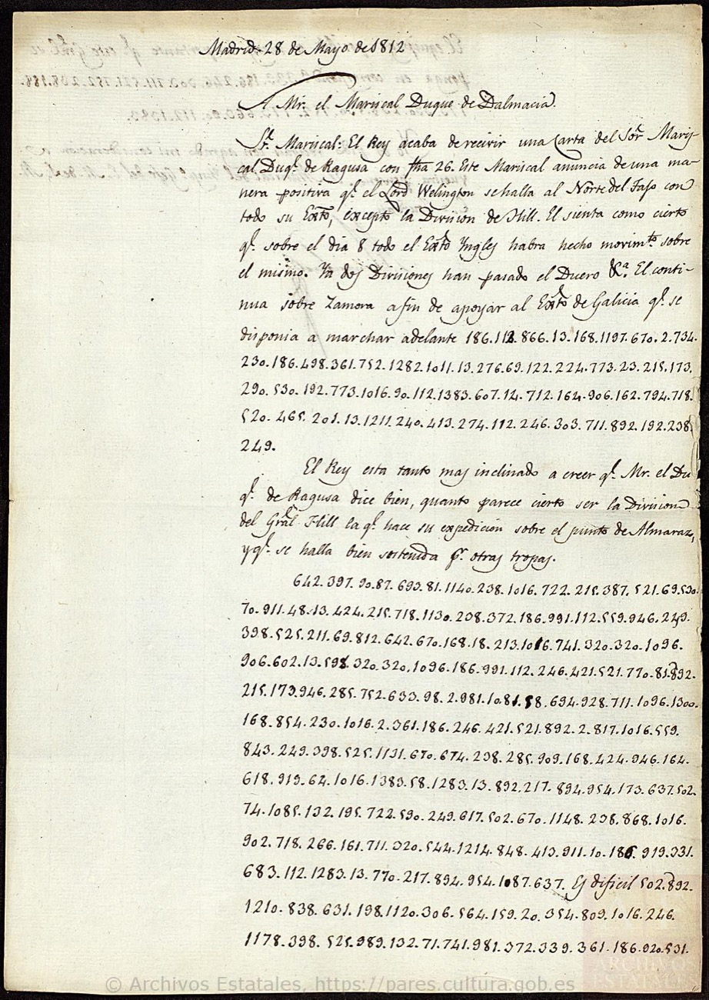
日付 1812年5月28日。スペイン語訳の写し、「Monsalud」の略署名
場所 マドリード → アンダルシア（スルトの司令部）
差出人 ジャン＝バティスト・ジュルダン、帝国元帥、ジョゼフ王の参謀長
宛先 ジャン＝ド＝デュー・スルト、ダルマチア公、南方軍司令官
典拠 国立歴史文書館（マドリード）DIVERSOS-COLECCIONES,134,N.34（PARES 3156392）画像2–3。同じ文書群に、マルモンからジュルダンへの1812年6月1日付書簡の写し（134,N.73、ブルドー目録 No. 751）と、ジャルデ大佐からマルモンへの1812年3月6日付書簡（133,N.29、No. 724）。
暗号 1812年の大暗号（英国側の呼称「Great Paris Cipher」）：文字・音節・語を表す1200の数字の表に、スペイン用の追加で1400まで（1211＝中央軍、1214＝英国軍、1300＝ウェリントン卿、1383＝タホ川）。頻出語には複数の数字（同音異字）
キーワード la division Foy · trois bataillons et environ huit cents chevaux · battre le corps du général Hill · passer le Tage au pont de l’Arzobispo
解読の状況. 私たちの知る限り、初めて公表される解読です。暗号数字は267。読めたのは259（97.0％）、うち確実250（93.6％）、推定 {x} 9。8つの数字は表で期待される値にならず、文意で補いました [x]（訳者の写し誤り、または写真で読めない表の欄）。未解決のものはありません。
凡例：{x}＝推定読み、[x]＝文意による補い。写し（同時代のスペイン語訳）の平文は灰色、解読部分は原文の言語であるフランス語。略語は展開し、アクセントと句読点は現代化しました。
校訂本文
Madrid, 28 de mayo de 1812. A Mr. el Mariscal Duque de Dalmacia. Sr. Mariscal: El Rey acaba de recibir una carta del Sr. Mariscal Duque de Ragusa con fecha 26. Este Mariscal anuncia de una manera positiva que el Lord Wellington se halla al norte del Tajo con todo su ejército, excepto la división de Hill. Él sienta como cierto que sobre el día 8 todo el ejército inglés habrá hecho movimiento sobre el mismo. Ya dos divisiones han pasado el Duero, etc. Él continúa sobre Zamora a fin de apoyar al ejército de Galicia que se disponía a marchar adelante le duc de Raguse a rappelé à lui la division {Foy}, de manière qu’il ne va plus rester dans la vallée du Tage que trois bataillons et environ huit cents chevaux de l’armée du Centre, sous les ordres du général Treillar[d].
El Rey está tanto más inclinado a creer que Mr. el Duque de Ragusa dice bien, cuanto parece cierto ser la división del Gral. Hill la que hace su expedición sobre el puente de Almaraz, y que se halla bien sostenida por otras tropas.
Vous sentez, monsieur le maréchal, que dans cette circonstance vous deve[z] renf[or]cer le corps du comte d’Er{lon} autant que cela vous sera possible, afin de le me{tt}re en état de [ba]{tt}re le corps du général Hill s’il reste sur la Guadiana. Si [au] contraire lord Wellington rappelle à lui le général Hill, alors le comte d’Er{lon} doit se porter sur Miravete et venir pas[ser] le Tage au pont de l’Arzobispo, pour co[u]vrir Madrid ou pour se porter sur le flan[c] droi{t} de l’armée anglaise, suivant les circonstances. Le passage du pont de l’Arzobispo es difícil pour l’artillerie, mais il n’est pas impraticable. Le général d’Er{lon} devroit me[ner] avec lui le moins el equipaje posible. Es muy importante que este general se ponga en correspondencia avec le général Treillar[d], qui va commander dans la vallée du Tage.
Yo os pido recibáis con agrado mi consideración a vuestra persona. El Mariscal del Imperio, Jefe del E. M. de S. M. C. = Jourdan. [paraphe : Monsalud]
翻訳
［マドリード、1812年5月28日。ダルマチア公元帥閣下へ。元帥閣下、王はただいまラグーザ公元帥より26日付の書簡を受け取られました。同元帥は、ウェリントン卿がヒルの師団を除く全軍とともにタホ川の北にいると断言しています。8日ごろには英国軍全体が彼に向かって動いていると確信しています。すでに2個師団がドゥエロ川を渡りました、等々。彼は前進しようとしていたガリシア軍を支援するため、サモラへ進み続けています。］ラグーザ公はフォワ師団を呼び戻したので、タホ川の谷には中央軍の3個大隊と約800騎だけが、トレイヤール将軍の指揮下に残ることになります。
［ヒル将軍の師団がアルマラス橋への遠征を行い、ほかの部隊によく支えられていることは確かと思われるだけに、王はラグーザ公の言うことを信じる傾きをいっそう強めておられます。］
元帥閣下、お分かりのとおり、この状況では、ヒル将軍がグアディアナ川にとどまるなら、これを撃破できるよう、デルロン伯の軍団をできる限り増強せねばなりません。反対にウェリントン卿がヒル将軍を呼び戻すなら、デルロン伯はミラベテへ向かい、アルソビスポ橋でタホ川を渡り、状況に応じてマドリードを守るか、英国軍の右翼に向かうべきです。アルソビスポ橋の通過は砲兵には［困難］ですが、不可能ではありません。デルロン将軍はできるだけ少ない［輜重］を携えるべきです。［この将軍が］タホ川の谷を指揮するトレイヤール将軍［と連絡を取ることがきわめて重要です。］
［敬具。帝国元帥、カトリック王陛下の参謀長、ジュルダン。］
読解と歴史の注
- 背景。1812年5月19日、ヒルはアルマラスの砦と舟橋を奪って破壊しました。ポルトガル軍（マルモン）と南方軍（スルト）の間でタホ川を渡る唯一の堅固な通路です。スペイン総司令官となったジョゼフは、南方軍から分遣されたデルロン（ドルーエ）軍団を動かそうとします。同じ日にジュルダンはマルモンにも並行する書簡を送り（『マルモン回想録』第4巻所収）、そこにもアルソビスポ橋（「砲兵には困難だが、不可能とは思わない」）とタホ谷の「800騎」が出てきます。5月7日にもジュルダンはデルロンにほぼ同じ文言で命令していました（デュ・カス『ジョゼフ王回想録』第9巻6頁）。
- 名前。フォワ師団（ポルトガル軍）はタホ谷を守っていました。トレイヤールはタホ谷の中央軍部隊を指揮。ミラベテはアルマラスの上の峠と砦、アルソビスポ橋はその上流、タラベラへの道にあります。フォワの名は1011と書かれ、表では「Foi s」：推定読み {Foy}。
- 奪われた写し。書簡は暗号の数字をそのまま残したスペイン語訳で伝わり、「Monsalud」の略署名があります。モンサルー侯は当時エストレマドゥーラでスペイン軍を指揮していました。1812年6月11日、ウェリントンはヒルに、モンサルーはジョゼフがスルトにタホ川へ近づくよう命じたと考えているが「その根拠の書類を送ってこなかった」と書いています（ガーウッド編『書簡集』第9巻）。その書類がこれである可能性がありますが、仮説にすぎません。
- 8つの補い。208（renf[or]cer）、598（[ba]ttre）、88（[au] contraire）、62（pas[ser]）、1085（co[u]vrir）、266（flan[c]）、981と372（me[ner]）は表で期待される音節になりません。スペイン人書記の写し誤り（1と7、3と9、5と6を所々で混同）か、写真で読めない欄です。推定読み：320（表のT字形）、525（「lon」）、1011（{Foy}）。
- 文書群のほかの2点。マルモンからジュルダンへの書簡の写し（サラマンカ、1812年6月1日、134,N.73、PARES、目録 No. 751）も同じ暗号で、約85％を読みました（「…南方で始まった重要な作戦だけが、北方での作戦の見込みにまさりうる」「カファレリ将軍に繰り返し書いている」「タラベラで砲兵資材を準備して」）。スペイン語の写しの誤りが多く、それ以上は読めません。これはウェリントンが1812年6月7日に「解読に努めている」と書いた奪取書簡で、ジョージ・スコヴェルの暗号文書綴りのNo. 28です。スコヴェルは手書きの解読を残しましたが、印刷されたことはありません（オマーンは一行の要約のみ）。ジャルデ大佐からマルモンへの書簡（パリ、1812年3月6日、133,N.29、PARES、No. 724）は「copia descifrada conforme」で、当時スペイン側が解読し、鍵も添えられています。ヴォルテール『タンクレード』の一行「À tous les cœurs bien nés que la patrie est chère」に基づく48数字の暗号です。
- 先行研究。この書簡はスコヴェルの一覧（オマーン『半島戦争史』第5巻付録XV：No. 26–27はアルマラス陥落に関する5月26日付のスルト宛書簡）にも、デュ・カス『ジョゼフ王回想録』第9巻、『マルモン回想録』第4巻、ジュルダン『軍事回想録』、ウェリントン『書簡集』第9巻、『補遺書簡集』第7巻にも見当たりません。
方法・検証・クレジット
方法（計算前に手順書を作成）：(1) PARES の画像で267の数字を転写し、表の必要な欄を読む前に固定（SHA-256）。(2) 国防省歴史部（「B n° 30」）所蔵、ジャン＝フランソワ・ブショーディ撮影の1812年大暗号の解読表（The codebooks of Napoleon I）で欄を読みました。ジョゼフ王の書簡のために読んだ226欄から出発し、欄の一覧は解読前に固定。その後表の画像で読み直したのは7欄だけで、別に記録しました。(3) 機械的に復号してから読解。検証：独立した文章（『マルモン回想録』第4巻）で学習したトライグラムによるフランス語らしさを、同じ値を数字にでたらめに割り当てた1000通りの表と比較。マルモン書簡のために表を読む間は取り分けておいたこの書簡では、1000通りのどれも及びません（−2.15、p99は−2.21）。より短く誤りの多いマルモン書簡では、読み直し前は辛うじて合格（1000中9位）、読み直し後は1000中1位。詳細は研究フォルダに。
クレジット。掲載：ダニエル・ブルドーの目録 No. 751（および No. 724）。文書と画像：Ministerio de Cultura (España), Archivo Histórico Nacional, DIVERSOS-COLECCIONES,134,N.34、PARES。1812年大暗号の表：国防省歴史部「B n° 30」、ジャン＝フランソワ・ブショーディの写真による（ここには転載しません）。マルモン書簡の同時代英国側解読：ジョージ・スコヴェル（スコヴェル文書、オマーンによる引用）。転写・解読・本文・翻訳・注：Brice Dudout、Claude（Anthropic）と共同。
ニコラ・ランスからモンモランシーへ：「教皇は逃げた」、ローマ、1526年11月20日
コロンナ家がヴァチカンを襲ってから二か月後、クレメンス7世はフランス王の代理人を呼び、「これほど深くため息をつきながら」語りました。「どんなに冷たい心の持ち主でも、この上ない同情を覚えずにはいられないほどでした」。教皇はローマを捨てて逃げることを考え、「向こう側」で敵と手を切らなかったフランスを責め、やがてフランスで「教皇は逃げた」と言われるだろうと予言します。ニコラ・ランスはこれをすべて暗号にして、フランス王室長官（グラン・メートル）アンヌ・ド・モンモランシーに書き送りました。105ページの終わりと106ページ全体は、これまで一度も解読されていませんでした。
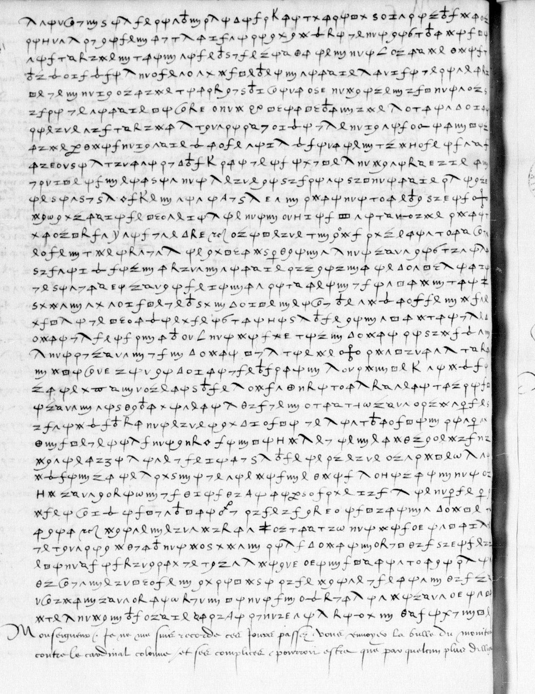
日付 1526年11月20日（日付は107ページ。急使が引き留められたため翌日の追伸あり）
場所 ローマ → フランス宮廷
差出人 ニコラ・ランス（« Rainse »）。在ローマ・フランス大使館の書記官で、クレメンス7世のもとでの国王の代理
受取人 アンヌ・ド・モンモランシー、フランス王室長官（グラン・メートル）
出典 フランス国立図書館（BnF）Français 2984（旧ベテューヌ 8509）No. 24、105–107ページ。暗号部分：105ページ（平文4行の後）と106ページ全体。マイクロフィルムを Gallica で公開（ビュー54–55）。105ページの最初の暗号11行には同時代の行間注があり、残り（21行）と106ページ（35行）にはありません。
暗号 1526年のランスの暗号による文字の同音異字換字（友清理士が公表した表を、ダニエル・ブルドーが測り直したもの）：a, e, i, o, r, u には3～4の記号。無意味記号（λ、« my »、K、二つの円の付いた十字、二本の横棒の付いた縦棒）。語記号「roy（王）」「le pape（教皇）」「con」。表にない語記号6種が未解決です。
キーワード abandoner Rome et s’enfuir · la totale ruine de sa maison · le pape s’en est fuy · l’entreprinse de la Ligue · les bulles touchant la decime
解読の状況. 私たちの知る限り、106ページの初めての解読の公表であり、105ページ下部の初めての完全な読みです。56行、約610語。読めたのは語の約98％（確実約95％、推定読み {x} 約3％）。約2％は未解決 ‹…› で、ほぼすべてが表にない語記号です（‹ℓ°› 3回、‹⊞› 2回、‹ϖ›、‹⋒›、‹⫝›、‹C› 2回）。意味が明らかなものもあります（‹⊞＝フランス›、‹ϖ＝マダム›）が、断定はできません。105ページ下部はダニエル・ブルドーが一部を読んでいました（2026年10月5日、「復号済み、未読」と分類）。二つの読みは文字の95.6％で一致します。
凡例：{x}＝推定読み、‹x›＝未解決の語記号または記号、[x]＝文意による補い。綴りは記号のまま（暗号にはアクセントもアポストロフィもありません）。句読点・アポストロフィ・大文字を補い、表の語記号（roy、le pape）は展開しています。
校訂本文（暗号部分）
[…] obvier qu’il ne feust contrainct en bref {h}abandoner Rome et s’enfuir, et que encores Dieu luy feist la grace qu’il le peust faire seurement ; et que son pontificat seroit la cause de la totale ruine de sa maison et des ‹⫝›, desirant la mort, et parlant de sorte, en souspirant si profondement, qu’il n’{y} a si dur cueur qui n’eust eu la plus grant compasion du monde. Et m’a dict, en la presence du ‹⋒›, que j’escripvise le tout au roy et l’estat ou il s’en trouvoit, et que quant l’on penseroit luy respondre de ‹⊞›, par adventure l’on ne {le} trouveroit plus icy ;
et qu’il n’eust jamais pensé que les choses eussent prins tele forme, et qu’on l’eust ainsi laissé la, {veu} que si franchement et sincerement il estoit entré en besongne et faict cela qu’on scayt ; et que l’inconvenient et peril auquel il se trouvoit procedoit seulement de ce que du costé de dela ne s’estoit rompu contre ‹ℓ°› comme l’on devoit ; et qu’il entendoit qu’on feist ce que, ne {voulant} faire, avoit esté tres mal faict qu’on ne l’en avoit adverty ouvertement, {afin} qu’il ne feust entré si avant ; et qu’on pouvoit bien considerer, et aussi qu’il estoit bien cler, que ne rompant du costé de dela contre ledict ‹ℓ°›, il auroit tousiours le moyen non seulement de se defendre par deça, mais de venir au dessus de l’entreprinse de la Ligue, et que l’experience s’en pouvoit presentement veoir ;
et que le roy auroit bien peu gaingné quant Sa Saincteté seroit ruinée et destruicte, et qu’il auroit perdu le meilleur amy qu’il eut oncque au monde, et seroit celuy {a} qui ‹ℓ°› chercheroit apres faire de tout son pouvoir plus de {dommaige}, et qu’il s’en apercevroit, combien qu’il soit grant seigneur et puissant en son royaume pour se defendre ; et en e{f}fect qu’il se voyoit reduict en termes que tout le monde se mocque{r}oit de luy, et mesmement ses ennemys, dire que par tel moyen il{z} l’auroient chastié, et que aussi en ‹⊞› se pouvoit dire par aucuns : « le pape s’en est fuy », ‹C› avec tout p{l}ain d’autres paroles tant piteuses et lachrimables que vous le{s} exposer, Monseigneur, vous seroit douleur et fascherie ; et me seroye voulentiers deporté en escripre.
Mais Sa Saincteté m’a faict tele et si grant instance et charge tant expressement le escripre et faire entendre au roy que je n’ay peu faire de moings que de vous en faire ce petit discours, pour icelluy {vueille} faire entendre audict seigneur et a ‹ϖ›, ou autrement, ainsi que par vostre prudence vous semblera estre bon et a propoz ; vous advisant, Monseigneur, que toute la fiance et esperance de Sa Saincteté, en quelque necessité et tribulation qu’il se trouve, est entierement et du tout aus dictz seigneur et dame, et se tient bien asseuré que aussi vous l’avez en bien bonne recommandation.
Et quant l’intelligence secrete dont on luy a encores faict {pa}rler ‹C›, il est tousiours a propoz, que je ay escri[pt], et plus de liberté que jamais d’en faire avec bon moyen tout ce qu’on en vouldra. Et plus, je luy ay encores parlé des bulles touchant la decime, dont il est entré‹s› [en] bon vouloir ; vous aurez veu ce que naguères je vous ay escript qu’il en avoit ordonné, de quoy se verra bon e{f}fect.
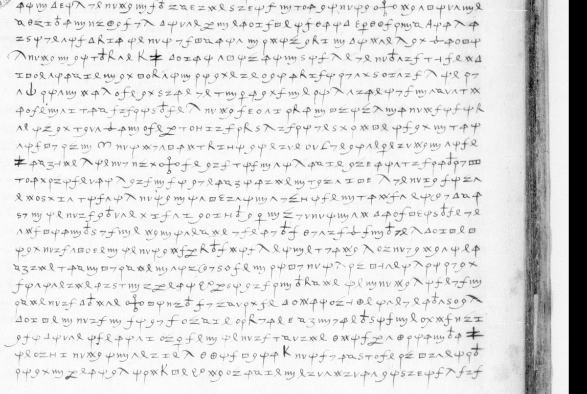
翻訳
［…］近いうちにローマを捨てて逃げざるを得なくなるのを避けること、しかもそれも、神が無事に逃げられる恵みを与えてくだされば、の話です。そして自分の教皇在位が、自分の家と ‹一族？› の完全な破滅の原因になるだろうと。教皇は死を願い、これほど深くため息をつきながら語ったので、どんなに冷たい心の持ち主でも、この上ない同情を覚えずにはいられなかったでしょう。そして ‹…› の前で私に、すべてを、また自分の置かれた状態を国王に書き送るよう命じ、［フランス］から返事をしようと考える頃には、おそらく自分はもうここにはいないだろうと言いました。
また、事態がこのような形になるとも、自分がこのように見捨てられるとも思わなかった、自分はあれほど率直かつ誠実にこの件に取り組み、周知のことを行ったのだから、と。自分の陥っている不都合と危険は、ひとえに、向こう側で然るべく ‹ℓ°› と手を切らなかったことから来ている、と。なすべきことをしてほしい、もしそれをするつもりがないのなら、自分がこれほど深入りしないよう、はっきり知らせてくれなかったのは非常に悪いことだった、と。そして、向こう側でその ‹ℓ°› と手を切らないかぎり、彼はこちら側で身を守るだけでなく、同盟の企てを打ち負かす手段を常に持つことになる、それはよく考えればわかることで、また明らかなことであり、いまその実例が見られる、と。
国王は、聖下が破滅させられたときには、ほとんど何も得ていないことになるだろう。かつてこの世で持った最良の友を失い、その後 ‹ℓ°› が全力でさらに害を加えようとする相手は国王自身になり、王国で身を守るに足る大領主で強力な君主であっても、それを思い知るだろう、と。実際、教皇は、世の皆、とりわけ敵たちが自分をあざけり、そのようにして自分を懲らしめたと言うほどにまで追い詰められていると感じていました。そして［フランス］でも「教皇は逃げた」と言う者がいるだろう、云々。ほかにも実に哀れで涙を誘う言葉が数多くあり、それをお伝えすれば閣下にはお悲しみとご不快をおかけするでしょう。私も喜んで書くのを控えたかったのです。
しかし聖下は私に非常に強く迫り、それを書いて国王にお知らせするよう、はっきりと命じられたので、この短い報告を閣下にお送りせざるを得ませんでした。閣下のご賢慮に照らして良く適切と思われるとおりに、前記の陛下と［マダム］に、あるいは別の方法で、お伝えくださいますように。閣下にお知らせしますが、聖下は、どのような窮乏と苦難の中にあっても、その信頼と希望のすべてを、まったく前記の陛下と奥方に置いておられ、閣下もまた聖下をよくお心にかけておられると確信しておられます。
再び聖下に話が持ちかけられた秘密の了解については、云々、聖下は私が書き送ったとおりの考えのままで、良い方法によって、望まれることは何でもなさる用意が、これまで以上にあります。さらに私は、十分の一税に関する教書について再び聖下にお話しし、聖下は好意的です。この件で聖下が命じられたことを先ごろお知らせしたのはご覧になったでしょう。良い結果が見られるでしょう。
読解と歴史の注
- 時期。1526年9月20日、カール5世と結んだコロンナ家がヴァチカンを略奪しました。サンタンジェロ城に逃れたクレメンス7世は、ウーゴ・デ・モンカダと休戦を結ばざるを得ませんでした。11月にはフルンツベルクのランツクネヒトがアルプスを越え、副王ラノワが海路ナポリへ向かいます（上陸は12月初め）。一方、コニャック同盟（フランス、ヴェネツィア、教皇、ミラノ）は動きませんでした。教皇は、イタリアの負担を軽くするため、イタリアの外（「向こう側」）で皇帝と「手を切る」よう国王に求めます。半年後、ローマは略奪されます。
- 「教皇は逃げた」。ランスは、逃亡者としてあざけられることへのクレメンス7世の恐れを伝えています。6日後の11月26日にも、教皇が「すべてを捨てて逃げる」と語っていると書いています（同じ冊子の109ページ。L・フォン・パストール『教皇史』英語版第9巻付録38に収録）。今回の暗号文は、その直前の段階を伝えるものです。
- 未解決の語記号。知られている表には語記号が三つ（con、皇帝、教皇）しかありませんが、この書簡はほかの語記号も使っています。‹ℓ°›（小さな輪の付いた筆記体の ℓ）は3回現れ、フランスが「手を切る」べき相手、さもなければ国王に「さらに害を加えようとする」相手を指します。皇帝またはその陣営である可能性が高いのですが、表の「皇帝」の記号は別のものです。‹⊞›（小さな四角三つ）は2回現れ、「フランス」と読むのが最もよく合います（「‹⊞› から返事をする」「‹⊞› で言われうる」）。‹ϖ› は「マダム」すなわちルイーズ・ド・サヴォワと読むのが最もよく合います（「前記の陛下と ‹ϖ› に」、のちに「前記の陛下と奥方」と言い換え）。‹⋒›（「‹⋒› の前で」）は教皇の側近の一人です。‹⫝› は「自分の家と」の後に来ます。‹C›（「rc」を囲む大きな C）は2回、引用された文を閉じており、「云々」かもしれません。
- 表以外に確認された値。6の形の記号は x（« l’experience »、« exposer »、« expressement »）。上に縦棒の付いた横棒入りの円は g（« gaingné »、« besongne »）。短い線に続く円は r（表にある形、« verra »）。二本の横棒の付いた円と、二本の横木の付いた縦棒は無意味記号。単純な × は « effect » と « afin » で f。表で d とされるまっすぐな縦棒の上の円は、しばしば l と読めます（« le »、« plus »）。
- 督促状と十分の一税。106ページに続く平文の追伸は「コロンナ枢機卿とその共犯者に対する督促状の教書」を知らせています。クレメンス7世は1526年11月、ポンペオ・コロンナの枢機卿位を剥奪しました。「十分の一税に関する教書」は、フランスの聖職者に課す十分の一税を国王に認める教書です。
方法・検証・クレジット
方法：(1) 友清理士の表（2020年）をダニエル・ブルドーが測り直したものを、読解前に固定しました（SHA-256 9f29cbc9…）。読解中に表の値は一つも変えておらず、追加で確認された値は注に記しました。(2) 取り分けたテキストでの検証：同じ冊子の1526年6月9日付国王宛書簡（33ページ、全文暗号）には、17ページに同時代の平文の写しがあります。表だけで盲目的に読んだ3行は、写しの本文とまったく同じになりました（« le faict de sa commission estoit tout autant pour vostre service comme pour celuy du pape et que son intention… »）。(3) Gallica の最大解像度の画像で記号を一つずつ読みました（この倍率ではマイクロフィルムは鮮明です）。(4) 105ページ下部はダニエル・ブルドーがすでに一部を読んでおり、私たちもそれを知っていました。二つの読みは文字の95.6％で一致し、私たちの読みは彼の空白の大半を埋めています。106ページは誰も読んでいませんでした。
先行研究（2026年10月28日確認）。ダニエル・ブルドーの目録（No. 5）はこの書簡を挙げ、彼の資料は105ページ下部を一部読んでいますが、106ページには触れていません。友清は表を公表していますが本文はありません。ミニェ（1886年）、ブリイ（1901年）、パストールはランスの別の書簡を刊行しています。モリーニ（『イタリア史文書』1836年）はこの冊子を目録に載せているだけで、『フランスとトスカーナの外交交渉』にもこの書簡はありません。
クレジット。掲載：ダニエル・ブルドーの目録 No. 5、および彼の「raince」資料（表の測り直し、105ページと1526年5月13日の書簡の部分的な読み。私たちの読み直しの出発点）。暗号表：友清理士 Cryptiana「French Ciphers during the Reign of Francis I」。文書と画像：フランス国立図書館、Français 2984、Gallica（出典 gallica.bnf.fr / BnF）。解読・本文・翻訳・注：Brice Dudout with Claude、CC BY 4.0。
ランスからモンモランシーへ、ローマ、1526年5月13日（29–31ページ）
コニャック同盟の調印（1526年5月22日）の9日前に書かれた書簡です。暗号部分は29ページ下半分（同時代の注が付いた10行の後）、30ページ全体、31ページ上部を占め、平文の結びはアンドレア・ドーリアがガレー船6隻でチヴィタヴェッキアに到着することを伝え、「ローマにて、1526年5月13日」と日付を記しています。ランスは、フランソワ1世の釈放後のカール5世の宮廷の内紛、国王が教皇のもとに誰も送ってこないというローマの対話相手の不満、そしてフェラーラ公の家臣を通じて皇帝派に漏れる情報について報告しています。
私たちの知る限り、暗号部分の完全な読みの初めての公表です。暗号85行、1,114語。機械的な集計：語の96.7％を読解（確実96.1％、推定0.6％）、表にない語記号で文意からのみ読んだもの1.8％（本文では ‹ › のまま）、未解決1.5％。すべての行を高解像度画像で記号ごとに読み直しました。出発点はダニエル・ブルドーの部分的な読み（「v3」、2026年10月5日、本人の分類は「decoded, not read」、語の約85％）で、完全な語についての彼の読みは一つも否定されず、約20行で欠落を補い（例：« deux bendes en la court »、« conduict en Sivile »、« par les gens de Ferrare »）、いくつかの語を訂正しました。31ページで彼が「皇帝」と読んだ大きなデルタは別の語記号です。 Gallica ↗
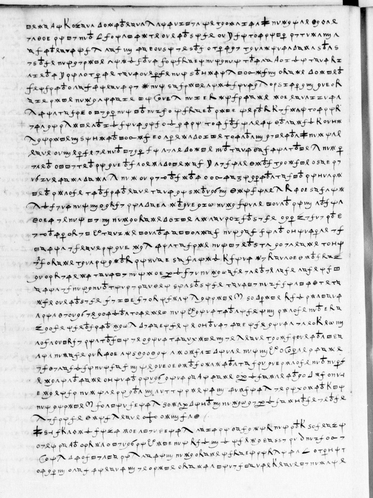
校訂本文
‹…› ce ‹…› ‹…› peuent, et qu’il soit ainsi, le ‹…› a encores dict, comme s’est bien sceu, que ‹ℓ°› est tout cler, l’intention du ‹ℓ°› estre tout au contraire de la capitulation faicte entre eulx, mais qu’il luy fera tant de guerre et a ses adherens qu’il en sera perpetuelle memoire, et qu’il ne cessera jamais qu’il n’ayt destruict ledict seigneur, disans ung tas d’autres propoz plains de vent et mensonges.
Il s’est faict deux bendes en la court de ‹ℓ°› depuis le partement du roy, et se sont liez ensemble les Aragonoys, Bourguignons, Haynoyers et Flamens contre ceulx de Castile, qu’ilz disent avoir abusé ‹ℓ°› et conduict en Sivile pour perdre la belle occasion qu’il avoit de pouoir passer en Italie, et que sans eulx il avoit deliberé prendre le chemin de Valence a ceste fin, et qu’ilz ne vouldroyent qu’il feust si grant seigneur. Les Castiliens disent au contraire que les dessusdictz sont veillacos et borachos, et qu’ilz seront cause de la destruction de l’Empereur pour avoir faict capituler avec ‹ℒ› pour sa delivrance ; et sont bien envoyez de se rompre ung jour {des testes}. Ledict Herrera doit partir dedans deux ou troys jours pour s’en retourner, et Lopes Hortados, qui estoit en la court de Savoye, est party pour venir icy ; s’il apporte quelque chose de nouveau, vous en serez adverty.
Monseigneur, estant aujourd’huy avec ‹ʍ›, il m’a parlé encores, entre autres choses, bien longuement de vous et de monseigneur l’admiral, et m’a chargé vous faire a tous deux ses humbles recommandations, et n’est possible de se monstrer plus affection de vous faire tous services et plaisirs qu’il est. Il est esbay de ce que ‹ℒ› n’a escript autrement au pape ne par deça depuis son retour en son royaume, et m’en a parlé plusieurs fois, mesmement que ledict seigneur n’a envoyé quelque personnaige pour visiter le pape de sa part, pour autant que messire Capin avoit faict entendre a son retour de ‹✱› que mondict seigneur l’admiral luy avoit dict que seroit celuy qui y viendroit. J’ay tousiours respondu a ce que ce qu’on a envoyé d’icy et de Venise par devers ledict seigneur l’en a gardé, par n’en estre besoing ; aussi ledict messire Capin y a satisfaict par ses lectres, qui est tout autant ; et que ce ‹…› ne s’est faict que pour bon respect. Qui a esté accepté de luy en satisfaction ; et s’en est bien plainct a moy deux ou trois fois, qui avoit deu venir a Rome la responce dessusdicte, disant prendre tout pour le mieulx. Bien est il vray, monseigneur, que a l’une des foys je luy diz qu’il n’eust cause de s’en esbayr, et que ce qu’il avoit faict si soudainement a la venue de Herrera avec l’Empereur pouoit causer occasion que l’on ne s’asseurast encores en tout de luy. Il respondit que ce temps la estoit passé [et n’]en avoit plus de lieu.
De quoy, monseigneur, je vous ay bien voulu advertir, pour ce que j’ay congneu qu’ilz ont esté et sont encores en quelque peu de doubte, mesmement pour ce qu’on n’escript point autrement ne icy ne a Venise. Ledict ‹ʍ› m’a faict ung discours des beaulx et larges partiz que l’Empereur leur presente, disant que, ‹…› {voulant} entendre, ilz feroyent et asseureroyent leurs estatz sans aucune despence et a leur prouffict, et tout plain d’autres choses qui ont du vraysemblable si ainsi feust que ‹ℓ°› {allast} droit en besoingne, que non ; et luy ay bien ainsi respondu, luy disant que, {quan}t il se seroit asseuré d’eulx, [il] leur donneroit a congnoistre la fin a quoy il tend, qui est de les supediter [et] ruiner ; et de dire ce que ledict ‹ʍ› n’a sceu nier, mais confesse qu’ilz le congnoissent et entendent bien tout ainsi.
Monseigneur, j’ay sceu hyer soir de bon lieu que de Mantoue a esté donné advis a ceulx de ‹ℓ°› icy que ung gentilhomme du ‹∂›, qu’on apele Francesco de {Sore}, qu’il avoit envoyé devers ‹⊿› a ‹…›ardi, a son retour a dict avoir sceu en court tout ce qui se traicte entre le pape et ‹∂›, et en a dict tant de particularitez qu’‹…› l’a approché pres de la verité ; et c’est ceste nuyt passée [que] les dictz de ‹ℓ°› en ont donné advis au conte de Sainct Severin et conseil de ‹Ꝑ› par la poste, et ont despesché ung courier a toute diligence a la ‹…›. Tant que j’ay peu d’en entendre plus oultre, et ay sceu que l’ambassadeur dudict ‹∂› a faict entendre de semblable au duc de Sesse ; et pour ce qu’il ne luy pouoit parler a cause de quelque suspect de peste qui est au logis dudict duc, il m’a esté dict qu’il le luy a escript.
Je croy, monseigneur, qu’aurez veu ce que j’ay autres foys escript des advis qui viennent aux Imperiaulx par les gens de Ferrare ; je ne scay pas ou ilz les forgent, mais sans point de faulte cela aporte et porte, monseigneur, ung tres grant dommaige en toutes les sortes qu’on pourroit penser, car les gens dudict ‹∂› sont nuyt et jour avec les dictz Imperiaulx et avec [le] roy, et semble, selon leurs propos, que [le] roy ne tiengne que dudict ‹∂› et qu’il luy ayt grant obligation pour les dommaiges qu’ilz disent ledict ‹∂› avoir souffert pour luy, voulant quasi inferer que le prieur ou ‹…› estre son ‹…›. [Je n]e me suis peu tenir de vous en escripre largement, encores que je croy fermement [le] roy congnoistre bien le personnage et sa portée ; mais ce que continuellement je voy me contrainct, faisant mon devoir, vous en advertir. Et ung jour, en plaine place pres du palais, ung nommé Pietro Anthonio {Thorel}, secretaire ou serviteur dudict ‹∂›, qui estoit icy pour luy, me dict en barbe, sans propoz, que [le] roy estoit cause de tout le mal de son maistre, et que deux ou troys foys il avoit esté en voye d’estre destruict pour luy ; et si je ne scay qui ‹…› le dessusdict a me dire teles paroles.
翻訳
［…］そしてそうなるように、彼は（よく知られているとおり）‹ℓ°› の意図が両者の間で結ばれた協定にまったく反していることは明白だと再び言い、彼とその同盟者に対して永遠に記憶されるほどの戦争をしかけ、前記の君主を滅ぼすまでは決してやめないと、風と嘘に満ちた数々の言葉とともに語りました。
国王が去って以来、‹ℓ°› の宮廷では二つの派ができました。アラゴン人、ブルゴーニュ人、エノー人、フランドル人がカスティーリャ人に対抗して結束し、カスティーリャ人が ‹ℓ°› を欺いてセビリャへ連れて行き、イタリアへ渡る好機を失わせた、彼らがいなければ彼はそのためにバレンシアへの道をとると決めていたのに、そして彼がそれほど大きな君主になることを望んでいない、と言っています。カスティーリャ人は逆に、前記の者たちは「ならず者」で「酔っぱらい」であり、‹ℒ› と釈放の協定を結ばせたことで皇帝の破滅の原因になるだろうと言っています。彼らはいずれ互いに頭を割り合うことになりそうです。エレーラは2、3日のうちに帰途につき、サヴォイアの宮廷にいたロペ・ウルタードはこちらへ向けて出発しました。何か新しいことをもたらせば、お知らせします。
閣下、今日 ‹ʍ› と一緒にいたところ、彼は他のことに加えて、閣下と提督閣下について非常に長く語り、お二人に謹んでよろしくと伝えるよう私に託しました。彼ほどあなた方に奉仕したいという気持ちを示す人はいません。彼は、‹ℒ› が王国に戻って以来、教皇にもこちらにもそれ以上書いてこないことに驚いており、特に前記の君主が教皇を訪ねる人物を誰も送ってこないことについて何度も私に話しました。カピーノ殿が ‹✱› から戻った際、提督閣下が自分こそ来る者だと言ったと伝えていたからです。私はいつも、こちらとヴェネツィアから前記の君主のもとへ送られたもので、その必要はなかったのだと答え、カピーノ殿が手紙でそれを果たしており同じことだ、そしてこの［遅れ］は十分な配慮によるものにすぎないと答えました。彼はそれを満足な答えとして受け入れましたが、すべてを良いように受け取ると言いつつ、2、3度私に不満を述べました。閣下、確かにそのうちの一度、私は彼に、驚く理由はない、エレーラが皇帝の使いで来たときに彼があれほど急にしたことが、まだ完全には信頼されない理由になりうると言いました。彼は、あの時はもう過ぎた、もう意味はないと答えました。
閣下、このことをお知らせしたのは、彼らがなお幾分かの疑いの中にあったし、今もあると分かったからです。とりわけ、ここにもヴェネツィアにもそれ以上何も書いてこないからです。前記の ‹ʍ› は、皇帝が彼らに提示している立派で寛大な条件について長々と語り、それに耳を傾ければ、何の出費もなく利益を得ながら自分たちの国を守れるだろう、と言いました。‹ℓ°› がまっすぐに事を進めるならもっともらしい話ですが、そうではありません。私はその趣旨で、彼は彼らを確保したならば、自分の目指す目的、すなわち彼らを服従させ破滅させることを思い知らせるだろうと答えました。前記の ‹ʍ› はそれを否定できず、彼らが彼をよく知り、よく理解していることを認めました。
閣下、昨夜確かな筋から聞いたところでは、マントヴァからこちらの ‹ℓ°› の人々に知らせがあり、‹∂› の家臣でフランチェスコ・デ・ソーレ（？）という貴族が、‹⊿› のもとへ派遣されて戻ったとき、教皇と ‹∂› の間で交渉されていることをすべて宮廷で知ったと言い、真実に近いほど詳しく語ったとのことです。そして昨夜、‹ℓ°› の人々はそれを郵便でサン・セヴェリーノ伯と ‹Ꝑ› の評議会に知らせ、急使を大急ぎで［…］へ送りました。さらに知ろうと努めたところ、前記の ‹∂› の大使がセッサ公に同じことを伝えたことが分かりました。前記の公の宿舎にペストの疑いがあって話ができなかったので、手紙で書き送ったと聞きました。
閣下、フェラーラの家臣を通じて皇帝派に届く情報について、私が以前に書いたことをご覧になったと思います。彼らがどこでそれをでっち上げるのかは知りませんが、閣下、それは間違いなく考えうるあらゆる点で大きな損害をもたらしています。前記の ‹∂› の家臣たちは昼も夜も前記の皇帝派とともに、また国王のそばにおり、彼らの話によれば、国王は前記の ‹∂› だけを頼りにし、‹∂› が国王のために受けたという損害について大きな恩義を負っているかのようです［…］。国王はこの人物とその力量をよくご存じだと固く信じてはいますが、長々と書かずにはいられませんでした。私が絶えず目にすることが、務めとしてお知らせするよう私を促すのです。ある日、宮殿近くの広場の真ん中で、前記の ‹∂› の秘書か家来で、彼のためにこちらに来ていたピエトロ・アントーニオ・トレル（？）という者が、いきなり面と向かって、国王こそ自分の主人のあらゆる不幸の原因であり、主人は国王のために2、3度滅ぼされかけたと言いました。誰が前記の者にそのような言葉を私に言わせたのか、私には分かりません。
注
- 表にない語記号。知られている表（友清）には con、皇帝、教皇しかなく、ダニエル・ブルドーが roy を加えています。この書簡は他の語記号も使っており、本文では ‹ › のままにしています。文意からのみ：‹ℓ°›（5月と11月の書簡で11回）はおそらく皇帝またはその陣営、‹∂›（大きなデルタ、7回）はフェラーラ公アルフォンソ・デステです。同じ書簡が「フェラーラの家臣」を文字で書いた直後に「前記の ‹∂› の家臣たちは昼も夜も皇帝派とともに」と書き、‹∂› の家来は主人が国王の「ために」滅ぼされかけたと嘆いています（1510–1512年の戦争）。‹ʍ›（3回）はランスのローマでの対話相手で、カピーノに近く、モンモランシーと提督に好意的な人物です。教皇庁尚書院長ジャン・マッテオ・ジベルティの可能性がありますが、未確認です。‹ℒ›（2回）は文意から「国王」。‹✱›、‹⊿›、‹Ꝑ›（各1回）は未解決です。
- 1526年のカール5世の宮廷。マドリード条約（1月14日）とフランソワ1世の釈放（3月17日）の後、カール5世はイタリアへ渡る代わりにセビリャでポルトガルのイサベルと結婚しました（1526年3月）。ランスは「ブルゴーニュ派」（フランドル人、エノー人、ラノワの一派）とカスティーリャ人の争いを伝えており、後者は暗号の中でスペイン語で veillacos、borachos と呼ばれています。エレーラとロペ・ウルタード・デ・メンドーサはイタリアに派遣された皇帝の使節です。
- フェラーラ、マントヴァ、セッサ。セッサ公はローマ駐在のカール5世の大使です。アルフォンソ・デステは当時、両陣営と交渉しており（教皇とはモデナとレッジョについて、皇帝とも）、フェラーラの家臣を通る「情報」についてのランスの疑いを説明します。
- 方法と検証。11月20日の書簡と同じ固定した表（SHA-256 9f29cbc9…）を使用。別の証拠で新たに読解から切り離した検証を行いました。34ページ（1526年6月9日の国王宛書簡）の2行を目隠しで読み、17ページの同時代の平文写しと比較して文字の93.9％が一致（対照：別の文章の窓で最大58.6％、置換で99パーセンタイル53.5％）。表以外に確認した記号：「二本の横棒のある縦棒」と二つの円のある十字は無意味記号、横たわる輪は con、A は n、短い横線に続く縦棒付きの円は g。85行全体を機械的に集計しました。
オークランド駐在総領事とアメリカ海軍：正体不明の無線信号、1918年2月
1918年2月12日午前3時50分、ニュージーランドの無線局が、2,000メートルで「自動送信」する未知の送信局を傍受しました。速すぎて読めず、ドイツ支配下のナウル局を思わせるものでした。ニュージーランド海軍当局はアメリカ総領事に、それがアメリカの局かどうかを問い合わせます。ウィンズローは暗号電報でサンフランシスコに照会し、3月1日にワシントンから暗号の返信が届きます。答えは否、しかも合衆国内でも不審な自動送信局が聞こえているというものでした。二通の電報はいずれもヴィジュネル暗号で、鍵は月の名前FEBRUARYです。
日付 1918年2月18日発信。返信は2月28日午前10時付、オークランドで3月1日受信。送付公文第375号（1918年3月4日）
経路 オークランド → サンフランシスコ、ワシントン → オークランド（「太平洋経由」）
差出人 アルフレッド・A・ウィンズロー、オークランド駐在アメリカ総領事。返信：ワシントンの名前のない部署（「usgovt」）、おそらく海軍省
受取人 サンフランシスコ海軍司令官、次いでオークランド駐在総領事
出典 NARA, RG 59, Central Decimal File 1910–29, 763.72/9377（ファイル 763.72/9366–9450、1918年2〜4月）、マイクロフィルム M367 第83巻、画像0110〜0114：公文第370号（2月26日）、HMSフィロメルの書簡（2月14日）、公文第375号（3月4日）、二通の電報の写し。
暗号 ヴィジュネル暗号（通常の表）、8文字の鍵FEBRUARY（月の名前）。発信電報は5文字群、返信は10文字の「語」（暗号語料金）
キーワード automatic wireless stations · Honolulu · San Francisco · two thousand metre · stations can receive while sending · four thousand meters or above · suspicious automatic station · since February fifteenth
読解の状態. 私たちの知るかぎり、初めて公表される解読です。発信電報：94文字中94文字、修正なし。返信：305文字中297文字がそのまま本文になり、残る8文字は送信または筆写の誤り（送信の誤り6、重ね打ち2）で、いずれも語によって一意に決まります。すべての語が読めます。本文の外に残るのは最後の2文字「OK」と数字「17527」だけです。
凡例：[x]＝補った文字（暗号文には別の文字）、‹x›＝読めるが解釈しない部分。電報は電文調の英語です。
二通の電報
| 電報 | 暗号文 | 平文 |
|---|---|---|
| 1918年2月18日、オークランド → サンフランシスコ | FVFRO TFKFX JTQII CQITJ MTRRN SOJQO IINRH SYTNC JRTRH FIYSG JJWOR LILPE ILLJZ SOKQO KFTYT RHDDC YVFNU VVJJR HKBS | ARE AUTOMATIC WIRELESS STATIONS WORKING BETWEEN SAN FRANCISCO AND HONOLULU ON TWO THOUSAND METRE WAVELENGTHS |
| 1918年2月28日、ワシントン → オークランド | ssblnodyym dncrvjjwij nakgtrtlme uzjxxvynym ssmlfurliw bezrrlhmtt ipvpnhtkut zmswdrhrva jmwvqgzjjw fexieehisz idrjqabmyl vllxijosvb ksvinhfsxe ougekcwwpi ubftjtfico uqzwqzwifs xevkimrrng tkutzmslfr ldzlyljjwo llyvzjcntc kicidaiwkm gkyeermsog ilcmbmoxqa mcqioxnhjd tvuznwffzr eiydkcsxif osrliimvpe ermsvjunuj shgzztvcsz ifosrliqfk yrjmp 17527 | NO AUTOMATIC WIRELES[S] STATIONS USED BETWEEN HONOLULU AND SAN FRANCISCO PERI[O]D STATIONS CAN RECEIVE W[H]ILE SENDING [P]ERIOD ALL WAVELENGTHS USED FOUR THOUSAND METERS OR ABOVE PERIOD SUSPICIOUS AUTOMATIC STATION HEARD IN THIS COUNTRY SINCE FEBR[U]ARY FIFTEENTH ON [F]OLLOWING WAVELENGTHS FORT[Y] TWO HUNDRED TEN THOUSAND ELEVEN THOUSAND [A]ND FIFTEEN [T]HOUSAND METERS ‹OK› |
返信の8つの誤り
| 群.文字 | 読み | 期待値 | モールス（読み／期待） | 語 |
|---|---|---|---|---|
| 2.9 | i | t | .. / - | WIRELES[S] |
| 9.6 | g | h | --. / .... | W[H]ILE |
| 10.7 | h | u | .... / ..- | [P]ERIOD * |
| 21.5 | d | o | -.. / --- | FEBR[U]ARY |
| 22.10 | g | w | --. / .-- | [F]OLLOWING |
| 25.4 | z | p | --.. / .--. | FORT[Y] |
| 28.10 | j | y | .--- / -.-- | [A]ND * |
| 29.10 | z | x | --.. / -..- | [T]HOUSAND |
＊オークランドのタイプ写しで重ね打ちされた文字。訂正の下に別の文字が隠れています。
日本語訳
2月18日（ウィンズロー）：「サンフランシスコとホノルルの間で、2,000メートルの波長で自動無線局が運用されているか。」
2月28日（ワシントン）：「ホノルルとサンフランシスコの間で自動無線局は使われていない。各局は送信中も受信できる。使用波長はすべて4,000メートル以上。2月15日以来、国内で不審な自動送信局が次の波長で聞こえている：4,200、10,000、11,000、15,000メートル。」
読解の注と歴史的注
- ニュージーランドの問い合わせ。1918年2月14日、ニュージーランド政府海軍顧問のため、W・J・ブラウン主計少佐（HMSフィロメル、ウェリントン）は、2月11日16時20分GMT（ニュージーランド時間12日3時50分）に国内の局が約2,000メートルの未知の局を傍受したと書きます。自動送信で速すぎて点と線を区別できず、「戦争初期にドイツの管理下にあったころの」ナウル局を思わせたといいます。カリフォルニアとホノルルの間で自動送信が導入されるというアメリカの雑誌記事があったため、電報での確認を求めました。
- 答えは否定的で、不穏なものでした。アメリカはホノルル〜サンフランシスコ間で自動送信を使っておらず、波長は4,000メートル以上です。したがって2,000メートルで聞こえた送信局はアメリカのものではありません。ワシントンはさらに、2月15日以来、4,200、10,000、11,000、15,000メートルで「不審な」自動送信局が国内で聞こえていると付け加えます。私たちはこれらの局の特定は試みていません。
- 「どこから来たのか」。3月4日、ウィンズローは返信が「ワシントンから送られたということ以外」どの部署から来たのかわからないと書き、海軍省だろうと推測します。読めなかったとは書いていません。鍵は自分の電報と同じで、内容もわかっていました。国務省は「A3 – To Navy (by CA)」と注記しています。
- 間に合わせの暗号。月の名前を鍵とするヴィジュネル暗号は、1918年には安全性がありません。周期は反復（TKUTZMSが104文字間隔、IFOSRLIが32文字間隔）から読め、鍵は推測できます。国務省にはグレイ・コードやグリーン・コードがありましたが、これらの電報は、共通の符号を持たない領事と海軍が初歩的な方式で済ませていたことを示しています。
- 誤り。8つのうち6つは送信の誤りで、多くはモールス信号の典型的な取り違え（i/t、g/w、z/p、z/x）です。暗号化した人の誤りではありません。2文字はオークランドの写しで重ね打ちされています（第10群と第28群）。「PERI[O]D」は平文でOが抜けたもので、鍵の位相はずれません。最後の「OK」と数字「17527」は解釈していません。
方法・検証・謝辞
方法：(1) NARAの画像から二通を翻字し、高解像度の切り抜きで確認。(2) 返信だけで、反復の間隔（104、56、32：最大公約数8）、周期ごとの一致指数（周期8で0.062）、列ごとの頻度当てはめ → 鍵FEBRUARYを固定（SHA-256 a1b7a242…）。(3) 取り置いた本文による検証：固定した鍵を、鍵の発見に使っていない2月18日の発信電報にそのまま適用すると、94文字すべてが続いた英文になります。同じ暗号文を並べ替えた対照1,000例はどれもその得点に届きません。(4) 返信の食い違いを一つずつ画像とモールス符号に照合。2026年10月28日に確認：既刊なし（ダニエル・ブルドー氏のカタログでは「open」、ウェブ検索でも該当なし）。
発見：ダニエル・ブルドー氏のカタログ、第757番 ↗。M367第83巻を通読してこれらの電報を見つけました（2026年10月27日）。画像：米国国立公文書記録管理局、カタログ ↗（パブリックドメイン）。解読：ブリス・デュドゥー、Claude（Anthropic）とともに。